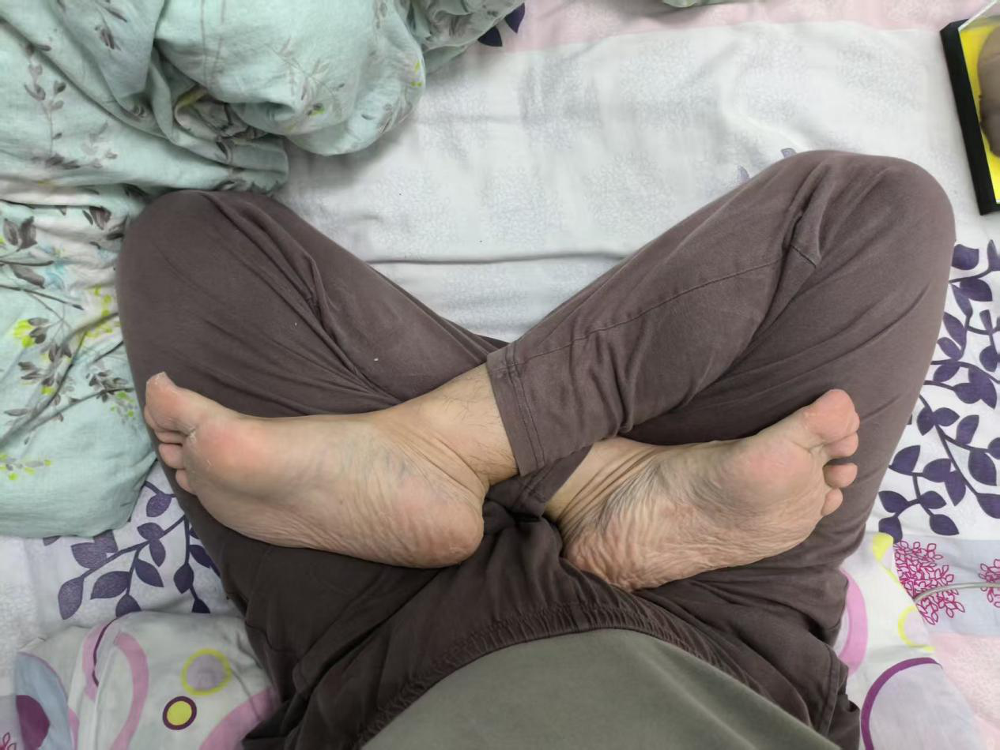
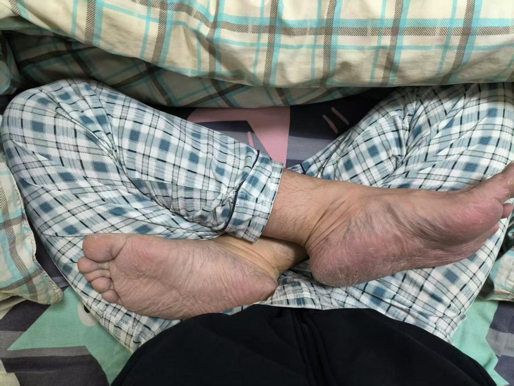
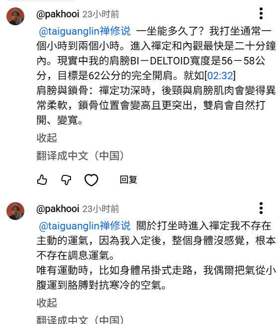
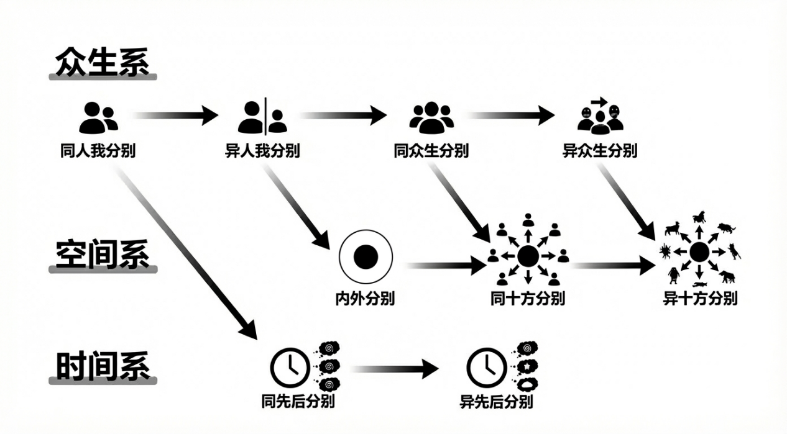

19二〇二六年一月(463)
2026年1月5日 官网(66)
今天是2026年1月5号，周一，时间过得真快，转眼间已经到了第三年了。24年开始，春节期间开始出来传法，到现在已经是第三年了。这段时间也出了几本书，相信对大家也有所帮助。也祝大家新的一年里身体健康，万事如意，还有修行方面能有更好的进步。那么先回答官网的问题，这里答疑帖上，1月5号到10号期间的问题，先看第一楼。
无境
师父好！祝Tai师新年快乐，Tai师的母亲平安喜乐，前路吉祥，早日得度。今日弟子想问：
1、您对旅游这件事怎么看？作为修行者，从少结缘的角度，外出旅游、游玩的事是否尽量少参与为妙？
Taiguanglin
无境，这位说，您对旅游这件事怎么看？作为修行者从少结缘的角度，外出旅游、游玩的事是否尽量少参与为妙？你说的对，从少结缘的角度，最好不结缘是最好的。不过对于普通人来说，这个也不需要太过在意，因为你前面已经轮回的时候结了很多的缘了，也不差那点了。而且你见个面，还不至于说一定要为他做什么。
度人也是，见了面就算结了缘，一定要度。但是在中国这片地上，任何人周围找一下，找那么两个人、三个人往下再找下去的话，肯定有信佛、学佛、修行的人。所以你见，光是见个面，见面这个业是需要了，未来也是同样地以见面的方式了一下就可以，但是度人这个就不一定要非要你自己来度，度人本来就是这个可以层层往下传的。
比如说你有一万个人要度，度完就可以成佛，那你先度两个人，这两个人再去度四个人，这四个人再去度八个人。他们每个人度的时候，都是在业网当中以他为中心去度人的，但是这一万个人相互之间都有业，这样算的话，你实际上要度的人并不是那么多。
你只要度出几个人，那他们再去度，然后你也接著度，这样的结果就是这一万个人，并不一定都要你一个一个亲自来度的，所以你也不用太在意这些问题。
如果你是已经是登地的菩萨，八地以上，已经度的人差不多了，不需要再结缘了，就剩那么几个人要度就可以了，这个时候就最好小心一点，尽量不去结缘。
所以对于普通人来说就没有那么大的要求。而且也不需要这种事情成为你的行为上的一些顾虑，让你想做事情的时候反而形成束缚，这就没有必要了。我只是理论上这么说而已，度人是这样的。
无境
2、定中若遇天人送吃的、喝的（如面条、点心等），是否不吃为宜？
Taiguanglin
第二个问题，定中若遇天人送吃的、喝的，是否不吃为宜？最好还是不吃，因为你也没法判断这个是什么天人，还有人家有什么诉求。还有，你想，天人也是欲界天和初禅第一天只有吃的，你在定中还能吃吗？还有，把那些个东西放到你面前，是变成了我们现实里看得见的食物吗？还是什么样？就是在定中里，你的想象里，是不是，有可能就是全是你的幻境，有可能是的确有人来了，但是我建议还是不吃为妙。
当然人家求法的是，如果人家求法的话，你能教就教。传法都是以免费为主的，你可以看诚意，但是也不需要。我个人对那些个非要拿出多少多少诚意这个事，看对方情况，看对方情况。一般情况下只是简单教一点理论，不需要什么太大诚意之类的，你有本事教就可以教。
如果是结缘、见面、拜师这样，这是另一回事。因为结缘是，见面结缘这是另一回事。因为他要度的时候，可能要投入的心力更，心力更大一些。不光是教理论，还得帮他一起消业什么的，所以这个另算。
Taiguanglin
第三个问题，平常吃饭的时候可以盘腿吃吗？可以，你去韩国的寺院看，那边都是坐在地上吃饭的，都是盘腿而坐的。咱们东北也是，火炕，东北的火炕，可以在旁边耷拉著腿聊天。但是吃饭的时候，上桌吃饭，上炕吃饭，那就是盘腿坐的。
caomao123
1、顶礼Tai师父。年轻的时候性伙伴较多，现在意识和他们感觉也有交集，时不时会想念，像这种淫业怎么消除比较好？
Taiguanglin
下一个问题，caomao123，这位问，年轻的时候性伙伴比较多，这种淫业怎么消？一个是发愿度他们，一个是做点功德回向给他们。也只能这样了，现在还能怎么办。已经造下的业是不能完全消掉的，只能受报的方式结束，不过最后还得度人。所以你现在发愿度人家，然后做点功德回向给他，这就可以了。
如果是和你的交际当中，在动，让对方产生了很大的不好的情绪，对你产生了恨意，那么你最好还是跟他（她）当面道个歉。哪怕是发个信息，承认过去的那个时候，以前做错了，这样，向他（她）真实地、真正地、真诚地道个歉。不管有没有用，起码你表明了你道歉的心意，那就可以了。
caomao123
2、明年是2026年，说绕冈仁波齐相当于平时十三圈，师父您对转山朝圣怎么看？
Taiguanglin
第二个问题，2026年绕冈仁波齐这个山是相当于平时的十三圈，对转山朝圣怎么看？这种仪轨，就是对佛法表示敬意，表示诚意的一种表达方式，不过佛菩萨是不需要你拿这种任何行为来表达方式。只不过这种，你的这种行为让周围人看见之后，对这个行为产生了好的情绪，从而对佛法也产生了信心。在他们认知里，原来佛法能让人真诚到这个程度，或者虔诚到这个程度，那么估计对别人，他们也产生了好的情绪，那么你这个行为还是有所功德的。
如果是你在家里拼命做什么，没有任何人看见，但是严格来说，或许其他维度的众生也有可能看见，那也算有了功德，就看你怎么想这个事了。
如果你心里有这么一个愿，这辈子一定要去朝一次山，那么你去做就可以了，这个是为了让你自己释怀而已。特别是想在人生当中打个卡，留个什么念的。像虚云和尚，他好像也是徒步从普陀山走到五陀山，五台山，有过这样的事，可能用了好几年。
所以总的来说，不保证你有多少多大的功德，或者说让你必须，必定能满足什么愿望，这个都不好说。你愿意拿时间去做就可以做了，做完你心里就有了成就感。不做也可以，你拿这个时间好好修行——打坐、磕头、念佛，这也可以，就看你心里怎么想。
caomao123
3、之前也是修观音和度母比较多，如果一直持他俩名号和咒语加观想能往生极乐世界吗？因为持他俩名号对世间帮助比较大，感觉阿弥陀f对往生比较好我是这么理解的
Taiguanglin
还有下一个问题，平时修观音和度母比较多，如果一直持他俩名号和咒语加观想，能往生极乐世界吗？你得先有往生极乐世界的愿，然后修观音法门，也是可以往生的。
印龙
Tai师好！我每天只要有时间就听您的音频，除了打坐和认真工作、消业的时候，其他时间基本都沉浸在法音中，对明理和增加信心很有帮助。忽然得闻师父这个月5号就上线，幸福来得太突然，感谢您，祝师父新年平安顺遂。
1、弟子是在家修行，男，三十七岁，受菩萨戒，日中一食，吃素近三年（当时转换吃素非常自然，一下子就转了，没有任何犹豫、反弹，已确定过了梦考）。在听您讲法后，逻辑更加清晰，已发大菩提心，发愿度与我有缘的众生皆得解脱，成为阿罗汉或往生极乐世界。
截至目前，我打坐刚半年，在佛菩萨加持下感受过多次0.5禅，现在目标明确，信心很足。
目前我每天降魔坐九十分钟左右、莲花座七十分钟左右，且在稳步提高。
戒淫这一块，做春梦时仍有淫欲，但在梦中准备行淫前能做到理性回归，停止动作，从梦中醒来。
想问您，以您的经验，我目前的情况是不是算修行相对较快、较有效率的呢？
Taiguanglin
下一个人，印龙，这位问，以您的经验，我目前的情况是不是算修行相对较快，较有效率呢？算是吧。你是想得到别人的认同或者称赞，是吗？一般这样的情况下很容易招来业障。当自己觉得自己修为还不错，修行进步很好，这个时候通常会来业障的。
如果我就继续这样精进修行下去、发愿、戒行、修行、善行都做好，您感觉有没有可能在三年内入初禅呢？
Taiguanglin
下一个问题，如果我就继续这样精进修行下去，有没有可能在三年内入初禅？
你要问有没有可能，那肯定有可能，也有不可能，总之可能是肯定有的，就看你的业障和精进程度。初禅是四个小时，至少三个小时以上，开始身体发生第二次变化之后，就可以努力试一下。每个人的业障都不一样，有可能有些人就快，有可能有些人就业障就较多，障碍就多。不过继续努力就可以了，不用想著到某个时间段一定达到什么境界，这样的想法反而会成为你的执著，会障碍你修行。
印龙
2、我在躺著的时候感受过多次0.5禅，并大概知道怎么进去（全身逐渐放松，在呼吸时一点一点进去），但在打坐时却发现很难主动进去，想问您印象里，周围精进修行的师兄弟一般是多久进入初禅的呢？
Taiguanglin
第二个问题，你还是很想快点进入初禅，你没必要这么著急，该进的时候就会进，你越著急越进不了。
你问周围精进修行的师兄，一般是多久进入初禅？这个看每个人情况，而且每个人出道的时候，就是开始修行的年龄段都不一样。有些人十几岁就开始出家修行了，有些人到四、五十岁才开始出家修行，那么有些人这一辈子连初禅都进不了。
很多人实际上进不了的，你去寺院看看，你统计一下，如果每个人都说实话的话，估计能进入初禅的人，可能有四分之一，五分之一，十个人当中有一、两个人能进入初禅就不错了。
因为这个至少也得是，理论上说二十年。那就算你的根器再好，怎么也得五年到十年之上。如果年纪大的人光是把身体调过来，打通两次，通两次脉，这个光十年都不够。年纪越大，通脉的时间越慢。而且活的时间长，不好的习气、身体的造作、弄坏的程度也更大。年纪越小，可能从童贞入道的人，这个时候是在禅定上稍微有点优势。
所以每个人情况都不一样，真正能进入禅定的人并不多。
印龙
3、师父我爱人去年怀孕一个月后，胚胎的胎心胎芽没长出来，自然胎停了，然后通过吃药，把没长出胎心胎芽的胚胎排了出来。我爱人很希望要这个孩子，胎停后伤心了挺长时间。请问这种情况算流产么？需要立牌位超度么？
Taiguanglin
第三个问题，自然流产的不算杀业，而且还没到一个月，你说是一个月后，这个时间段应该还没有意识过来投胎。哪怕他来投胎了，这个也是让他经历一次死亡过程而已，和你没有什么直接的关联。
业缘是有，但并不是你直接害他的，所以不需要给他做什么。当然你心里有这个好的那么愿望，或者想帮助他的欲望的话，也可以做点什么，做点功德回向给他。
我看大概率是没有什么人来投胎的，没有意识来投胎的，更多的是你爱人经历这么一个事，就这么个业而已。
Ming
Tai师父您好。
1、本人最近好多事集中在年末，包括工作的事情（包括工作总结，和年终奖挂钩）、在职博士课程的事情以及马上生孩子的事情（本人比较在意家庭）。现在经常感觉心里有事，心慌。我本人现在不想工作，但是又不得不工作。学校的事情又很费时间精力。现在修行都不在状态，并且因为想简单点，做事效率也不高，周末想做但是又想休息，最后大部分周末都休息。不知道这是什么情况？
Taiguanglin
下一个问题，5楼，Ming，这位说，因为家庭还有工作的事，感到很累。修行不在状态上，所以周末一边强迫自己做事，但是最后还都休息了，不知道这是什么情况，想简单点做事，效率也不高。
就是人妄想太多了，就想著一边做这个，又去想别的事，就是你不能专注于当下的事。当下该做什么，你就专注地去做这个事就可以了，不要去想别的事。一边做著工作又去想著家里的事，一边修行，修行的时候脑子里又升起很多工作、家里的事，那么这样的就很混乱，人很累。
不过你想把这些都放下，那必须得达到一定境界，所以又不好好修行的话又达不到那个境界。那么在这种状态下，什么都不能认真做的情况下，唯一能做的就是一个发愿，还有一个多做点功德。发愿，愿力大的话，也有些人已经说到了，他的经验就是一发愿马上就状态就上来了。还有就是功德够了，做到一定程度也可以让你调整好状态。
还有，你心里相信你既然开始学大乘，学佛了，那么你这一生的命运大概率佛菩萨已经都给你安排好了，所以不需要你去老是担心这个、担心那个。有什么坎来了，什么痛苦来了，那也是你该受的果报，这么想就可以了。你不要老想著未来怎么样这种焦虑，焦虑也会影响你正常修行。
Ming
2、另外，本人升起了信，但是也有疑，因为自己还没修证到。但是本人现在出离心特别强（没啥特别感兴趣的事情，感觉没有什么意义，感觉世上充满了苦），也会因为别人的遭遇而升起慈悲心。不知道您这边有没有提升信的好方法？以及该怎么走出现状？
Taiguanglin
第二个问题，本人生起了信，但是也有疑，有没有什么办法提升信？一个人不容易相信正法，那是因为上辈子有欺骗他人的业，所以你先忏悔，先忏悔过往说不真话的那种业，或者。有些人是习惯性说不，不说真话，还有就是纯粹地想占点便宜什么，为了这些利益去欺骗别人，这些业都会让你产生疑心，然后对任何事情，包括对正法都会产生疑心，会一直带著这种疑心活的。
所以你先从忏悔开始，忏悔过往一切那些不说真话的业，现在开始发愿说真话，说真诚的话，不说假话，也不去用语言来欺骗他人，然后相信正法，这样就可以了。然后忏悔之后，发愿再度那些个曾经，因为你，和你交流当中受到伤害的那些人。
你说你现在有出离心，但是还没有发大菩提心，所以有发愿的话应该状态更快地能调整过来。至少你在道理上应该明白了，应该发大愿才能解脱，这样也可以的。
上官
师父新年快乐！六时吉祥，弟子想请教：
1、东林寺是咱们修净土法门的修行人“祖庭”么？那里有功夫深的大修行么？您推荐净土修行者过去礼拜么？
Taiguanglin
下一个问题，6楼，上官，这位问，东林寺是净土宗修行人“祖庭”吗？也算是，净土宗祖庭，还有香积寺、悟真寺、玄中寺，也有几个。一般，一般认为祖师爷待过的地方叫“祖庭”。
还有，那里有功夫深的大修行吗？大修行有没有我不知道，有可能有，有可能没有。那你问这个干嘛，你要去参访吗？
您推荐净土修行者过去礼拜吗？我不推荐“你去干嘛”这种事，你愿意去就去，不想去就不去。中国这么多的寺院，我干嘛要推荐“你去哪个寺院干嘛”这种事呢。
你要说出去玩的时候以寺院为首选目标，这个倒是可以。反正都是出来玩的，多去看看各地的寺院，这个可以。但是没必要故意专门拿出时间又花钱，去各个地方去参访或者礼拜，这个倒没必要。我们从来不强迫人一定要做某些事情。
上官
2、师父，为什么修行者在人间精进修行三十年，就有机会进入二禅色界天，而欲界天的天人却要修行更长的时间呢？人身这个“法器”是不是诸天包括极乐世界在内，最快的修行工具呢？（更适合修行）
Taiguanglin
第二个问题，修行者在人间精进修行三十年，就有机会进入二禅色界天，而欲界天的天人却要修行更长的时间？因为欲界天他们没有办法积福，那个世界已经人人都过得很幸福，所以没有办法积福。消业呢，你也没有办法消杀业，也就没有办法放生之类的。杀业也消不了，只有这种情感上的业可以消点。还有人们过得都挺好的，所以大家都不那么精进地修行，所以时间很长。
人身这个“法器”是不是诸天包括极乐世界在内，最快的修行工具呢？人身应该是按照和其他维度的生命体相比的话，人生是最好修行的，因为他就卡在中间。
上官
3、师父我发愿往生极乐世界，也愿意度与我有缘的一切众生都可往生或者解脱，平常戒行、善行、修行都做，每天打坐超过两小时。
我的问题是：我每天会分两次念一小时的秽迹金刚咒，也接了相关灌顶和手印，目的是辅助灭文字妄想和淫欲，助人助己。想请教，修持秽迹金刚咒和相关法门会影响自己往生极乐世界吗？感恩。
Taiguanglin
第三个问题，师父我发愿往生极乐世界，那么每天念秽迹金刚咒两个小时，这个会影响自己往生极乐世界吗？这个不会。任何法门它都有机缘的时间段，你现在修，修可能几年后就差不多了，就不想修了，然后静下来了。因为咒语本来就是灭文字妄想的，如果你一直抓著不放，那境界可能就上不了。所以修到一定程度开始觉得这个咒语很长、很累，这个时候就放下，专注于打坐上。
还有，去极乐世界是先有愿，然后再看修为，然后再看功德、福德。所以你先有个愿，至少已经开启了一半的门了。
肖恩豪
1、老师你说，鬼道众生除了人间的亲人为他们读经才能学习佛法。我想问下，如果我手机每日播放经文，并发愿让他们听，那他们是否能听到呢？这么做是否有功德呢？
Taiguanglin
下一个问题，7楼，肖恩豪，这位问，如果手机每日播放经文并发愿鬼道众生听，那他们是否能听到呢？不能，下边的鬼道是听不到上边的声音的。鬼，就算是这个人间游荡的鬼，大部分鬼是听不到这个世界的声音的，他得看你的意识。你念经的时候你的意识里蹦出文字，他就能看到了，所以你这么做想帮助鬼道众生，有这个心倒是好，但是实际上帮不到。
这么做是否有功德呢？帮不到自然就没啥功德了。
不过这种音频放出来的时候，有些众生是能听得到的。鬼道众生听不到，但是上面的众生可以是，可以听得到的。还有，我们这个维度的什么小虫子这些，你周围的一些虫子、小动物它们也能听到。虽然它们意识被障碍住，听不，不能理解这个义理，但是听过了那就会留下记忆的，所以从这个角度来说的话，还是有功德。
肖恩豪
2、老师说“神通不敌业力，业力不敌愿力”。那一个人发愿替另一个人受报，这样的话另外一个人可以消业吗？
Taiguanglin
第二个问题，发愿替另一个人受报，这样的话另外一个人可以消业吗？不能，但是可以减轻一定程度的痛苦，发愿的人也会承受一定程度的痛苦，不过业不能是完全消的。
肖恩豪
3、老师有平行世界吗？如果有的话那平行世界的我和这个世界的我有什么区别和联系呢？菩萨在编写剧本的时候又都是怎样安排的呢？还是说每个世界都有每个世界的菩萨，那要是这样的话他们成道的机缘会有所不同吗？
Taiguanglin
有没有平行世界？下一个问题，有没有平行世界？肯定有，不过你不要以为像电影里一样，这里有我，这样的一个我，另外一个世界也有一样的我，不是这样的，就是不同的房间有不同的众生。这个小世界我们就把它看作一个房间，那么至少有十亿个小世界，每个世界都有他们的文明，有他们的众生，都不一样。
在不同的世界之间有没有联系？区别肯定是有。联系，一般不让它有联系，就是为了不让他们造业，这个在第二本书里说过了。
菩萨和编写剧本的时候又都是怎样安排呢？就是每个星球、每个文明都有专门负责的人，然后在上边，之上还有人更高级的，高级别的负责的人，再往上也有更高级别的负责的人，在人间这个区域也有负责的人。
还是说每个世界都有每个世界的菩萨？传法的，有佛法的世界，由菩萨来安排，编写命运。有些世界呢，它没有佛法的时候，直接上来就一套安排之后，就有时候就管得不那么严，那边就不需要菩萨一直盯著。他一开始安排好，然后就交给某些下边天人之类的，他们愿意，有这个职能的人让他去管，已经写好的，然后就中间过来看一下，再调整一下，然后这样就差不多了。
因为只有佛法这个是很大的随机性，它是很大的随机出现的问题。而且出现这种信佛事件出现的时候，佛菩萨会跟进，帮助他提升信心什么的，所以一直看著。如果是没有佛法的世界，那他们之间的业就是按照他们本有的剧本来运作的，大概写好之后就不用管，也会那么运作。虽然也有随机事件，但是和佛法不相关的，是他们之间相互伤害的这种事情，或者相互帮助的这种事情，就先记录下来作为功德或者业障来留下，等下次，这个文明结束之后再重新结算都可以。而且没有佛法的世界往往都是有天王管理的，所以这个随机事件出现的概率都比较少。
你问他们成道的机缘会有所不同吗？你要说机缘的话每个人都不一样，但是前提是你得首先有接触佛法，然后产生信才行。
肖恩豪
4、老师，菩萨有妄想，凡夫有著种种的执著与分别，从根本上来讲，这些都是空的。那是否有一个修行法门，可以跳过六根修持，也就是不再分灭下三根和上三根，而能够将他们一起灭？
Taiguanglin
第四个问题，有一个修心法门，是否有一个修心法门可以跳过六根修持，也就是不再分灭下三根和上三根，而能够将他们一起灭？
我不是在一直教吗，修参思情或者参疑情，就可以跳过六根，让它们一时灭掉。再往上在分别心上修行，像小乘的四念处修行，这样理论上也是可行的，理论上可行。但是我们现在已经，现在凡夫六根的执著也好，情绪也好，很大，所以你就算平时一直用四念处的修法来观照，那也是灭不了的，尤其是对六根的执著。六根你身体不静下来，不去长时间的使用六根的话，你灭不了这个执著。
还有，有很多人都不理解，过去的人怎么可能修行那么快，或者是在佛的那个时代里，很容易就达到某个境界，或者登地，或者成为阿罗汉。因为佛的加持力很大，我们现在这个世界已经没有那么强的加持力的人。
我现在讲《楞严经》，《楞严经》里那个女人，那个摩登伽女，在佛的加持下直接达到阿那含的境界，阿那含是非想非非想处天，已经到了轮回的最顶层了。在佛的加持下，一个用先梵天咒去勾引一个修行者阿难的这个女人，见了佛之后直接达到最顶了，那你说他的加持力有多大？阿难也是被淫欲所困扰的人，在佛的加持下也达到了识无边处定或者空无边处定，至少那个境界，须陀洹境界，比那个女人差一级，最后都解脱了，都达到阿罗汉了。
所以不要小看过去佛的加持力，我们现在这个时代的人，已经没有能提供这样这么强的加持力，所以每一层都得一步一步地修上去。
道心
Tai师父好，元旦快乐！
我有两个问题：
1、关于法事的问题。
佛门与道门都有法事，做法事算不算是外求、是不是有为法？什么样的情况下做法事是合道的呢？
我找过道长做过一些法事，听了您的教导后觉得我大多时候其实是有贪心的。贪图用法事来趋吉避凶，用法事去快速解决和规避事情。归根结底还是因为自己修为不够，也对自己能力没有信心，觉得如果只靠自己做功课的话，可能解决的时间会很漫长，而花钱做法事后心里就会有安全感。但有时做个法事又太贵了大几千上万的都有，次数多了真是承担不起。
这又到年底了，马上又要有一系列相关法事了（谢太岁、拜太岁、太岁法事等等），请师父指点迷津，哪些法事能做，哪些法事不要做，还是有其他建议，感谢您！
Taiguanglin
8楼，道心，这位问，道教的法事要不要做？你问一个学佛的人，问道教的法事要不要做，那我只能说你随便吧。我是建议，在我的认知里，还是去供养三宝功德更大。道教的法事那你随意，我也不说他们不好，他们也有他们的传统，你信那个就去做。
任何事情，首先得有信才有效果，你信他们的那个说法、他们的理论，那你就去做。我是，我们学佛的人，入门的时候就发愿不再皈依外道典籍、外道理论，也不去参与外道活动。至少心里是这么皈依的，也有这样的仪轨，然后就不再去管那些事。当然有空去参加，看看，这倒没啥，我也去教堂参加什么，看了圣诞晚会什么的，去看，这个倒无所谓。
只不过你相信这个，要大把大把地花钱去做，这个在修佛的人这边看是不如法的，因为这是怎么说，就算皈依外道了。你想求福的话去供养三宝，应该福报更大，我是这么看的。这个是你的自由。
道心
2、关于共修的问题。共修有哪些益处呢？想请问师父您以前有没有经常参加共修？我有时看到群里每天会发某人读多少遍经、磕多少个头，会觉得自己默默坚持做就好了，没必要晒出来。但是看到其他师兄的数量又会很佩服他们，觉得对自己也是个激励，晒出来也挺好的。不知师父您这么看这些，谢谢您。
Taiguanglin
下一个问题，共修的问题，有人晒出来，你觉得好，你觉得从那里得到了信心，那你就留在那个群里。如果你觉得对你没啥帮助，只是让你产生了更多的烦恼、嫉妒，那你就退出就好了。
共修这个事本来就是这样的，有些人适合共修，有些人不适合共修。适合共修的人是因为他自己，自己控制自己的能力，自制力稍微差一点，希望去一个环境里大家都一起修。你就算疼，想起来，也得忍著，坚持那个时间段，这样有可以强迫自己的那种环境的话，去参与是比较好。如果你是已经修行已经达到一定境界，这种外在的规则已经是干扰你在修行，那么你不用参与这种共修。看每个人境界吧。
还有，当你对某种行为或者某种，一种社会现象也好，某些想法也好，有产生“这个想法对”“这个想法错”这样的观念之后，就说明你已经在执著当中。修行人应该以平和的看待，平和的心态看待所有的问题。
尤其老是以负面的心态去看待问题的人，这个是病，这个得治。绝大部分事情都是中性的，没有好，没有坏。你非要说它不好，或者任何事情你看完之后，都从中找到一些不好的东西，这个是病，需要长时间修行，把它都，把这种不好的心态都给灭掉。
有些人看所有事情都能看到积极的一面，都能发现正能量，但是有些人他就只能看到一些负面的东西，这个不是很好的那种为人处世的观念。对于修行人来说，这个也是境界很低的表现。
灵山一笑
顶礼师父！感恩师父的开示，获益良多！
虽信佛多年，但是一直没有确定专修法门，去年开始痛定思痛，反思自己的问题：一是功课搞的多，时间不够用，身体也支撑不住；二是这山望著那山高，一段时间后就调换功课内容。于是决定选择自认为最有缘的来，可能效果来得最快吧。
因为当初接触佛法时念《地藏经》，做过两、三次地藏菩萨的梦。有一次梦境清晰，坐在车内，车在行驶，地藏菩萨盘腿坐在车窗外，七佛帽上的带子还随风飘动，持续了很长一段时间。基于此，我给自己定下的修行功课是有时间就念地藏圣号（曾经尝试过念《地藏经》，太长，念了后气短、眼花、嗓子疼等，身体扛不住，因此就放弃了）。
问题：
1、只念地藏圣号，是否能算是一门深入的法门？
Taiguanglin
下一个问题，9楼，灵山一笑，只念地藏圣号，是否能算是一门深入的法门？也算。你念地藏圣号，然后观想地藏菩萨的像，打坐的时候思念地藏菩萨，这算一门深入了，最后能去到地藏菩萨身边吧。
灵山一笑
2、念地藏圣号后，我回向的内容：回向自己所求（身体、工作、家庭相关），回向给自己的亲朋好友，回向给冤亲债主，最后回向法界。这样的回向方式是否如法？
Taiguanglin
还有下一个问题，回向的问题，说了很多次了，最好一开始先回向自己的冤亲债主，先把这些个债主都解决了，然后再开始回向别人。
还有，你自己的所求，所求这个问题，你只要求时间、健康、金钱这样就够了。别的不用求，什么工作上怎么怎么样，家庭上怎么怎么样，这些不用刻意地求。这些来了就是你的，不来了，该走的时候就走。哪怕是家庭也一样，这都是随缘的，不需要强求。你越是强求那就变成执著，然后会影响你正常的修行。你越是放下，境界上升得越快，而且业总该是有消的时候。所有的人，与人的缘分总有一天会结束的时候，最长也不过是到死的时候生离死别。
所以不要执著于这些问题，只求健康、时间、金钱，具体怎么来就不用管，只要这么求就可以了。
灵山一笑
3、从师父的书和问答录中，了解到了双盘对身体和修行的重要性，从上上周开始下定决心坚持双盘。


现在遇到一个很突出的问题：莲花坐可以忍痛坚持一个小时，但是降魔坐五分钟都坚持不到。（身体状态：肝区去年体检有结节；脾胃消化很差；年龄四十周岁）
降魔坐小腿骨头硌的生疼，右脚腕的筋也扯的生疼，而且身体完全没法平衡，有一半的屁股有点悬空，所以降魔坐很难坚持。能否先不断突破莲花坐到二个小时，再回头练习降魔坐，会不会难度会低些？
下面是我莲花坐和降魔坐的图片，请师父看看有没有需要注意的点？感恩师父！
这是莲花坐：
Taiguanglin
然后下一个问题，第二个问题，关于打坐的问题，你的姿势倒是正常的，没什么问题，你只要坐著不那么不舒服就行，但是作为初学肯定是不舒服的。
你说降魔坐五分钟都坚持不到，那就更应该从降魔坐开始坐。连五分钟坚持不到，那也不占什么时间了，你先坐个十分钟，然后能坚持到哪里就坚持到哪里，然后再换腿继续坐莲花坐。每天起码坐一次降魔坐，至少每天坐一次，这样身体才能更快地通。两边都得坐，这样通得快一些。你光坐一边，通的时间反而会更长，理论上是可以通的，但是这个时间是比两边一起通的时间会消耗得更长。
还有身体僵硬什么，最好是多磕点头，多磕头，僵硬会更快地放松下来。
月牙妞妞
弟子女，三十二岁，半年前有幸遇到Tai师父的《坐禅》一书，七月开始尝试双盘。开始时，上双盘就像掰钢筋一样，有时候疼得睡不著，第二天醒来还是酸软。从十分钟、十五分钟开始，逐步增加到二十分钟、三十分钟……现在能轻松上双盘了，轻松很多很多。
这半年间，我也开始戒肉(刚满四个月)、磕头、练习腹式呼吸，并诵读《地藏经》。
身心变化如下：
1、脾胃增强，十余年腹泻痊愈，长期拉稀的情况消失了，人也胖了些。我感觉是双盘提升了腹腔内温度，促进了肠胃吸收。
2、体检指标改善，可以用来说服家人的实证：近期体检显示，血红蛋白含量与浓度均优于标准，红细胞分布宽度变异系数降低，表明新生血红蛋白活力充足、状态一致。尽管日常饮食简单（常以香干、土豆下饭），但数据证明身体营养状况良好。这给了我充分的信心和实证，支持自己戒肉的选择，并希望以行动和结果让家人安心。
3、智慧渐开：我一直热爱学习，充满好奇，好像在寻找什么。过往多年，受了挺多苦，因而自学中医等传统文化(应该是这样才抓住了禅机)。在遇到《坐禅》系列前的两年，我买了很多佛学书籍，虽读不懂却坚持浸泡其中，相信总有一天能读懂。直到这半年反复研读Tai师父的书、听讲经和答疑后，从前那些难懂的书，竟能看得懂了。感恩遇见Tai师父。
心态与心性的成长
4、焦虑消散：以前文字妄想很多，一直处于焦虑状态，现在心能静下来了，能安住于当下。
5、修忍辱：在工作中，我负责技术支持(类似老师或医生)，时常需要帮助同事。过去易起嗔心，嫌人笨。近两年开始刻意控制言语，不出令人讨厌的话。我希望继续修，直至无需忍耐，而是自然怀有慈悲与耐心。
写给同行者的心里话。
以上这些是想给刚开始学习且在熬腿的师兄们一点动力和信心。
我的问题：
1、我从小就是一个听话的学生，知道了消业、度人、成佛的原理之后，我现在一出门看见任何人，心里就会自动想这个人我未来要度，这是不是有点太夸张了呀？
还有就是我啥本事也没有，咋度啊～感觉变成了KPI，这不对的吧？
Taiguanglin
下一个问题，月牙妞妞，这位问，出门看见任何人心里就会自动想这个人我未来要度，这是不是有点太夸张了？没有，你看《圆觉经》里说了，要发愿度尽虚空一切众生。它不只是要度有缘人，有缘无缘都要度，全部都要度，这样是最高的愿，所以不算什么夸张。
月牙妞妞
2、我有次梦考戒肉，应该是没过，接下来考了我一个星期，是我太在意结果才导致我天天考的吧？
再次顶礼Tai师父，感恩您出现在我的生命当中！！！
Taiguanglin
还有，第二个问题，梦考的问题，你不用太在意，修到哪里就自然而然就达到那个境界，就不会再有梦考了，而且也会通过的。你心里刻意地追求这个，就反而更成为新的烦恼。你放下这个，只要心里想著我一定要戒肉，然后开始不吃肉，过一段时间自然而然就过了。可能五年、七年，有快的人可能是一下就过了，两、三年就过了。
还有，我的法对你有了帮助，让你变好了，那我也更应该谢谢你。这个世界变好的人多了，那佛法就也有传播下去的动力，也有人愿意继续传法，继续修行。
九转
师父好！两个问题请开示：
1、有人说辟谷期间双盘打坐经脉更容易通，是否可信？
Taiguanglin
下一个问题，第11楼，九转，第一个问题，有人说辟谷期间双盘打坐经脉更容易通，是否可信？你说的是辟谷是那么是阶段性的辟谷吧，一段时间不吃，然后一段时间又吃，那理论上的确不吃主食的时候，更容易打通经脉。
九转
2、磕大头有排出身体食物中毒素的作用。如果开始辟谷，每天不进饮食了，自然就不摄入毒素了，这个期间是否可以停止磕大头，只打坐就可以了？
Taiguanglin
第二个问题，磕大头有排出身体食物中毒素的作用，如果开始辟谷每天不吃饮食了……，你是辟谷了还是绝食了？
自然就不摄入毒素了，这个期间是否可以停止磕大头？你不摄入，你身上本来已经堆积了很多毒素，之前一直正常吃的，那就留下了，体内堆积的，这个时候就应该排出去。
还有，辟谷是正常修行到一定境界之后，慢慢把身体的这个机能都会提升，然后它自己会达到那个境界，不需要吃主食也可以正常运作，这个时候才真正辟谷。之前是可以间歇性地，可以不吃一段时间，但是该吃还得吃。
磕头应该是常态的，只不过你辟谷的期间，如果你的饮食骤然减少了，那可以少磕点，但是每天至少是出一次汗。你磕个一圈、两圈，至少出，磕个两圈的话能出一身汗，这样就有了一定的排毒效果了。哪怕吃的少一点，那么一天或者两天出一次汗，这样也够了。
上官星月
Tai师父好，元旦快乐，吉祥如意！
1、师父，我现在双盘降魔能达到九十分钟，莲花六十分钟。我想问一下，双盘六十分钟能修复身体哪些位置脏腑？九十分钟，一百二十分钟各能修复哪些脏腑？
Taiguanglin
下一个问题，12楼，上官星月，双盘六十分钟能修复身体哪位置脏腑？九十分钟，一百二十分钟各能修复哪些脏腑？这个没有确切对应的哪个脏腑，而是全身都一起开始变化。但是有些人，特定的人，他都有一些某个脏器有缺陷的。比如说我自己是从小就支气管不太好，还有小时候吃肉多了，得过一次肾结石，所以肾比常人稍微差一点，但是后来打坐就会慢慢都会修复回来。每个人都有他有缺陷的地方，这些会好起来。
然后九十分钟之后开始骨头，修复骨头。脏器和骨头修复完了，到一百二十分钟的时候会通，有一次通气的那种感觉。主要是这中间的气，通一次那基本上大部分小毛病都治过来了，虽然没有百分之百，但是至少能达到百分之九十，比正常人健康多了。到了第三个小时的时候，第二次再通一次之后，基本上身体就没啥毛病了。能坐到四个小时的时候基本已经算是完全健康了，要不然你也进不了，入不了定。
还有打坐的时候通气会有一些堵的地方，那个就是堵，堵的那个穴位处，那些地方需要修复。有些人会堵的时间长，有些人会快一些，这个只要继续打坐就能打通了。
上官星月
2、双盘达到三个小时以上不疼就是欲界定了吧。三个小时以上，身体应该很健康了，小毛小病都可以修复了吧？望师父开示！
Taiguanglin
然后第二个问题，三个小时以上身体应该很健康了，小毛病都可以修复了吧？是的，一般的小毛病都可以修复，只要是不是真的业障，只要是你这辈子在使用身体的时候，用力过猛或者一些不好的生活习惯导致的疾病，是可以都会修复来的。然后一些更深的病是前世的业造成的，这个也得，这个需要靠消业，忏悔消业，还有积福报等等。
但是理论上只要是你是四肢健全的，正常的人，没有明显的那种缺陷，或者说国家给你判定的有什么残疾，那样的正常人只要靠修行都是可以修复回来的，而且那个业障到了该显现的时候也会显现。
Wangguangying
顶礼师父。
1、平时偶尔有时候有些胸闷，如果想打通心经和心包经是莲花坐可以打通吗，降魔坐打通肝胆脾胃？
Taiguanglin
下一个问题，13楼，Wangguangying，如果想打通心经和心包经是莲花坐可以打通吗？降魔坐打通肝胆脾胃？是的，理论上是这样的。不过心在中间，打通中脉，也就是左右两侧都得打通。所以你不用刻意地去做什么，你就是两边都打坐就行了。每天坐一坐，每天上午早晨坐一个坐，晚上再换一个坐，这样换著来就可以了。
如果是考虑内脏的排毒时间，那么凌晨这边是大肠，所以早晨坐降魔坐，然后晚上坐莲花坐，晚上有心脏。七点到九点这段时间是心脏，然后是三焦，这个时候坐莲花坐。这种事情你自己看著办就可以了，不需要一定要按照这个来，你只要每天换著来，换著坐，两边都打通，达到两个小时就够了。
Wangguangying
2、打坐时候放著念佛机跟著默念佛也可以吗，也可以进去欲界定吗？
Taiguanglin
然后第二个问题，念佛机，跟著念佛可以进入欲界定吗？理论上是可以的，不过欲界定起码你把文字妄想先放下，脑子里不再起文字妄想，那么念佛也是文字妄想，所以最好该放下的时候都得放下。
Wangguangying
3、碰到一个人，他的所有内脏是反著的和正常人，他打坐也可以一样修行吗？
Taiguanglin
第三个问题，内脏反著的正，反著的人可以打坐吗？这个也可以。
Wangguangying
4、不用枕头睡觉对身体好，但是侧著睡感觉头会歪到一边这样咋办，不会落枕吗？
Taiguanglin
第四个问题，睡觉的时候落枕，怕落枕，不用枕头的话怕落枕，没有关系的，侧睡也没有关系，不会落枕的。
Wangguangying
5、磕头习惯小腹先著地，不是胸部那样落下，手伸直后手背朝上也不翻转，都可以吗？
Taiguanglin
第五个问题，磕头习惯小腹先著地，不是胸部那样落下，手伸直后背朝上也不翻转，都可以吗？这个你随意，反正我已经给了标准动作了。你一定要小腹先著地，那你试试看，万一有什么不好的地方，你还可以在这里跟大家说一说，我是认为还是胸部先著地的。而且磕头的时候腹部是一直在用力的，所以它是往里缩的。
然后手背呢，手掌朝上是托举佛足的意思，也是磕头的一个仪轨。手掌，而且翻转的过程当中，手臂也有它刺激到的经脉，所以你最好还是翻转。
灵山一笑
顶礼师父！
再增加一个问题：在打坐后，出现气冲病灶的现象，打坐还是按原样继续吗？
我昨晚又努力上降魔坐十多分钟，背是歪的，屁股一部分有点悬空，坐的过程中，感觉到肝区堵点有比较明显的冲击感（肝区一直有堵点），晚上睡觉期间肝区堵点感受比较明显，没太睡好，平时不会有这样明显的感受。
Taiguanglin
下一个问题，14楼，灵山一笑，打坐时出现气冲病灶的现象，打坐还是按原样继续吗？那不得继续吗，这不是有反应了就不得继续吗。都是有，通的过程中会有一段时间疼的，疼过了，然后就通了，就不疼了。
Yifang111
师父新年好！精进念大悲咒和《地藏经》后，感觉总是压不住火。原来对周围的人冒犯欺负的情况我都是忍了，现在感觉忍不住了，直接怼回去了，而且想到原来受的冤枉气，还气得不行。师父您说过别人引起自己不好的情绪起来是业障来了，要消业。可我这样不能忍辱，这个业算是没消掉吧！感觉越修，脾气和主见越大了，随顺不了一点。感恩师父开示！
Taiguanglin
下一个问题，15楼，Yifang111，修行导致脾气变得暴躁，就是把你的习气种子都给翻出来了，如果是这样的话，有一段时间会这样的。你多忏悔，多忏悔以往过去的那些个因为生气而造的业，然后对那些冤亲债主忏悔，承认自己的错误，然后发愿度那些人，发愿度那些被你伤害过的人。然后慢慢来，不用著急，每个人都有这样的阶段的，所以放心，这个很正常。
兰星羽
师父您好，祝福您新年吉祥如意！
请问：通了中脉的人是真的能做到无所住而生其心吗？就是没有一丝我执挂心上？通中脉要求高吗？正常中等根气需要修行多久呢？感恩Tai师父！
Taiguanglin
16楼，兰星羽，通了中脉的人是真的能做到无所住而生其心吗？无所住而生其心是理论，说的“住”是执著，修到阿罗汉才算无所住而生其心了，通了中脉只不过是初禅。通了中脉也不一定能达到初禅，这个是意识层面上，你得把下三根暂时熄灭才能进入初禅，这个是身体层面上的，这两者不是一个概念，也不在一个维度上。
就是没有一丝我执挂心上？那是阿罗汉的境界，和通，比通中脉的境界要高很多很多。所以你先通中脉再说，那先进入禅定，哪怕先进入禅定再说。初禅是四个小时，双盘坚持四个小时，然后下三根暂时熄灭，淫欲也灭掉，文字妄想也没有，这样才能进入初禅。那只是开始而已，只是刚刚入门而已。
Guangtz
Tai师新年快乐！我2024年12月突发轻微脑梗，到了25年的7月份，右手食指和大拇指还不能完全展开。后来因缘巧合，到西安一家不大的寺庙里面学习内观，结果就展开了。到了25年12月，有幸接触到您讲法的动画视频，后请了《坐禅》系列学习。
到现在，从身体上讲，目前右胳膊和右手手指不灵活，其他还好，心里一直无法接受自己变成残疾人，对以往的付出始终无法放下，总想通过修行锻炼把身体康复好，却又坚持不下去，打坐一天不打坐一天的，昨天晚上看了《禅》这部电影，心中对佛法还不能全身心的投入，目前信解受持不够。我与师父是同龄人，名字中有两个字重合。
想请教师父，像我目前这种情况，如何锻炼能恢复的好一些？
Taiguanglin
下一个问题，17楼，Guangtz，这位说，发生了轻微脑梗，然后手指有点不灵活了，怎么办？先从磕头开始，磕头开始，然后练腹式呼吸。脑梗就是血压上去了，那么腹式呼吸先把血压给降下来，然后磕头运动，把这个排毒，还有减肥，这样整体上身体的负担降下来了，自然而然就化开了，然后再打坐。这个都得慢慢来，不用太著急。
第一步还是先练好腹式呼吸，这个是不需要磕头，也不需要打坐。每天站著练个二十分钟，早晨练个二十分钟，下午，晚上睡前再站著练个二十分钟，这样就够了。坚持两个月左右，先把这个练起来。最好是磕头、打坐、念佛都得一起来，但是如果你这样懒惰，那就先练好一个。先从腹式呼吸开始练起来，先练成了再练别的吧那就。
空空少年
Tai师父，我经常半睡半醒能看到一些画面，有的像是快进的电影一样；有的只有一个画面，但是像在水面上一样，像水波一样不断晃动，往往只能看到一会，且画面我觉得没啥意义，但注意力越集中越清晰，经常这样干平时能感觉眉心偏上位置发紧，偶尔还跳动，伴随头晕，请问这是什么现象，我后续应该怎么做？
Taiguanglin
下一个问题，18楼，空空少年，半睡半醒的状态看到的都是幻觉，不用管。但是眉心偏上位置发紧，你要打坐的时候应该把注意力放到丹田上，把气往下引，先把气往下引过来，那就可以了。还有这也不是根本的方法，你最好参思情，参不了才用观身体的方法，那就先把注意力放到丹田上。
明月照我心
师父好，顶礼师父。
弟子修行打坐近三个月了，感恩师父！！！
1、关于打坐新手问题：弟子为四十一岁女性，从散盘开始单盘，间断配合磕头，每天一百个左右，但筋硬疼痛明显，打坐时长从四十至五十分下降到二十至三十分，连散盘都痛，走路也痛，然后腰椎间盘突出了，不得不停了一至二周。之后心态上调整了一下，就当业力显现，不再执著进步退步。查了些新手打坐资料，开始用打坐垫子，屁股下垫，膝盖因为翘的老高下面也垫上，这几天终于散盘突破了一小时，磕头也重新开始了，但还不太敢单盘（怕一侧翘得很高再加重腰椎间盘问题）。
请问师父：弟子近期先以这样的方式维持散盘一小时左右是否有效？磕大头需要增多吗？
Taiguanglin
下一个问题，19楼，明月照我心，这位问，近期先以单盘的方式维持一个小时左右是否有效？单盘，不是散盘，你最好是从单盘开始，单盘两边都是能维持一个小时的时候，再开始双盘尝试一下。然后磕大头每天至少是两圈，二百多个，这样半个小时以上，它就出一身汗，出汗了，才有排毒的效果。如果一百个左右那都没出汗就结束了，刚刚把身体热起来然后就停了，这个有点得不偿失，还不如多加一点。每天，每次磕个半小时到四十分钟，两圈，两百零，两百一十六个，这样。
明月照我心
2、关于思佛：上次师父建议思佛，目前能稍微感受到胸口断断续续的情绪，但并不知道这情绪是什么。我用了两个方法（1）之前先诱导，通过观想阿弥陀佛、念阿弥陀佛，有时候想象一段与佛互动画面，这样起了情绪再抓住，但几秒钟或几十秒情绪又消失了，再重新观想诱导；（2）情绪没出现的时候就在胸口附近守著，出现情绪就抓住让它扩散，但只是一种感觉，不确定是否是思情，中间需要再念念佛确认一下是不是。
请问师父：这两种方法可以吗？思佛时一段情绪起来是要让它尽量不断地维持吗？最后情绪是一段一段，还是一股持续长流？有了情绪是否需要仔细分辨出来是不是思情？如果是其他情绪怎么办？
再次感恩师父！！！
Taiguanglin
关于思佛的问题，你现在思不起来也没有关系，先从念佛开始。你就先做到念佛成片，反复地念阿弥陀佛四个字，念著念著它慢慢慢慢连成一大片一样感觉。不是变成四个字，而是开始扯动了思情。就是处在一种念佛之前的，四个字出来之前的那个欲望状态，那个叫思情，这个时候也可以称之为思情。
如果是你是直接想观察情绪，这个对初学来说有点难的。直接观察情绪，然后再引出情绪，这个是，如果你有感，你有过恋爱的经历，念念不断地想著一个人的那种情绪，有过这个经验反而会好练一些。如果完全没有这个，没有过这样的经验的话就有点难，你很难抓住这种感觉。
然后，情绪这个是一直有的，不是什么长流，就是有。有就是有，没有就是没有，你拉出来了那就一直存在，那么可以做到二十四小时一直不断地存在这个情绪。如果做不到的话，那你可能就暂时忘了，再提起来，暂时忘了，再提起来，这样也可以，都是这么练过来的。
情绪怎么分辨？这个不需要分辨，你认为是就是，你认为不是就不是，一开始会有情绪会让你很激动，过了这个时间段就慢慢平静下来了。
空空少年
Tai师父，我经常半睡半醒能看到一些画面，有的像是快进的电影一样；有的只有一个画面，但是像在水面上一样...…
近期打坐之余，练了八段锦，好像头晕有缓解，但头晕具体原因还无法确定。
Taiguanglin
下一个问题，20楼，空空少年，近期打坐之余练了八段锦，好像头晕有缓解，但头晕具体原因还无法确定。已经上面回答了，你就是上头，气往上头走，所以什么眉头发紧、头晕这些现象。先把注意力放到丹田上练一段时间，打坐的时候把注意力放丹田上，平时活动的时候也可以稍微地把注意力放到丹田上。
先回答到20楼，再开新的音频。
今天是2026年1月5号，周一，官网答疑的下篇，从21楼开始。
幻世浮生
Tai师父好！顶礼师父！弟子福薄障重，2025年11月中旬才有机缘接触到您的讲法。从此开始按照您开示的方法在练习修行。有些问题想再请教师父，弟子理解执行的是不是正确。还请师父慈悲开示：
1、呼吸：练习腹式呼吸，有空就练，最好坐著，其他姿势也行。用力鼓肚子吸，然后尽量收缩呼。这样是会慢慢练到肚子发热，全身发热的程度吗？然后就会不用刻意注意就练成自然腹式呼吸了吗？自然的腹式呼吸不需要想著鼓肚子就吸气了，只是呼气的时候收缩一下肚子。就是腹部肌肉不再紧张绷紧状态而是变松弛了，请问您我这样理解对吗？
Taiguanglin
幻世浮生，这位问腹式呼吸的问题，腹式呼吸最好是站著练，初学最好是站著练。然后一开始是用刻意地去鼓起肚子，然后吸气，然后刻意地再用力收缩肚子来吐气。但是练成的话就不再，不用再管肚子，什么鼓起、收缩，这个都不用管。呼气的时候也不用收缩肚子，然后腹肌的紧张程度也会松弛下来。
幻世浮生
2、磕头拜佛：尽量一次完成一天的量，不要分成几次。否则达不到运动量。尽量前胸肚子拍地上以刺激内脏。磕头时间与双盘时间成正比。
Taiguanglin
第二个问题，磕头的问题，尽量一次磕完是最好的。
还有，磕头时间与双盘时间成正比，我好像没有说过这样的话。磕头是为双盘所服务的，如果你的磕头的量过大，导致气血，气开始虚了，就是累了，然后打坐的时候就开始疼，如果这样的话就可以减少。
一般情况下，一个初学来说，尤其是年轻人，一天磕个六、七百个，八百个都没有关系的，然后还能正常打坐两个小时，又能恢复过来。年纪大到六十岁或者更大了，那最好是量少一点，两、三百个左右，但是至少要出一身汗。两圈，两圈，二百，二百一十六个，这样能出一身汗，出汗了就能排毒了，所以至少要保持两圈以上，半个小时或者到四十分钟。如果再能多磕一、两圈，那一个小时左右，能磕个一个小时左右，然后去打坐，这样更舒服一些。
幻世浮生
3、双盘：尽量双盘。不能的先开胯，单盘，再慢慢双盘。弟子降魔坐右下左上的还可以坐一会儿，但是左腿腘窝处特别疼。开始是腘窝和左外侧脚踝处很疼，后来就整个大小腿骨头都疼，每次结束扳下腿感觉腿要折了，以前也曾经试著坐过，没一会儿就麻，这次不麻了，就干疼。不能坐莲花坐，完全坐不了，就是左腿在上的单盘也翘的很高也是那样疼法，请问您这是左腿太硬开胯不行吗？昨天到最后左腿忽然不那么疼了，但是，本来啥事没有的右腿开始全疼起来了，请问这都是正常的吗？每天练习开胯，单盘，双盘，这能慢慢变好吗？
目前双盘妄念纷飞，各种疼坐不住，完全熬腿状态，这样一小时，其实对身体没啥用吧？您说两小时不疼才能修复身体的。
Taiguanglin
双盘一开始很疼，这个很正常，先可以单盘开始，单盘都不行，那就散盘开始。然后开胯的动作也练一练，这个可能需要点时间，半年或者一年，光是开胯也需要时间的，所以不用著急，每天坚持。只要坚持到疼得不能再坚持的时候，那就放弃吧，今天的量就完成了，第二天接著来。
还有饮食也有关系的，尽量吃得清淡一点。
还有，哪怕妄想纷飞，也只要坚持坐著一个小时，坐满一个小时，那对身体也是有很大的好处的，也会恢复一些的。
幻世浮生
4、师父书上说高丽、日本都是备份，日本好像和地藏王菩萨缘分深，我以前听人说是因为之前地藏王菩萨去那里降妖除魔来的。请问是真的吗？
Taiguanglin
第四个问题，这位问高丽、日本都是备份，那么日本好像和地藏王菩萨有缘分深……，地藏王菩萨的确去过那里，在中国也投胎过，日本也投胎过。
幻世浮生
5、请问未来的月光菩萨是《楞严经》里修水观的那位月光童子吗？
观世音菩萨慈悲加持，有机缘遇到师父讲法。感恩师父！顶礼师父！
Taiguanglin
第五个问题，请问未来的月光菩萨是《楞严经》里修水观的那位月光童子吗？不是的。还有，月光菩萨这个名字就是这么起的，具体是哪一位不用在意，到时候随便找个菩萨下来叫他月光菩萨，这就可以了。这个名字咱们根本不用给特定的人，一定要起一个特定的名字，不是这样的。
有很多事情是别人做的，然后最后把功劳全推给观音菩萨或者什么大势至菩萨等等，这些有名的人，因为人不能，在人世间不能，不能搞太多的偶像，偶像不用太多。
真如法界
顶礼Tai师父！我父亲因为颅脑损伤住院在ICU昏迷了十几天，感恩吃饭群里的师兄们帮忙把念经功德回向给我父亲，他瞳孔扩散，能呼吸，医生说没有希望了，建议现在放弃治疗送回老家，等于离开医疗设备等待死亡，这样的做法合适吗？父亲和家人都不信佛，怎么知道他灵魂已经离开了呢？
Taiguanglin
下一个问题，22楼，真如法界，这位说父亲病重，瞳孔扩散，医生建议放弃治疗，这样做合适吗？我建议你先一个星期或者三个星期，每天给他念《地藏经》回向，然后做功德回向，然后就可以停止了，如果这段时间没有恢复过来，那就可以停止了。还有意识走的话会死的，意识在，所以还停留在有呼吸的状态。所以他的意识可能是，应该处在昏昧的状态。
《地藏经》里也说了“神识昏昧”，然后不知道什么状态，在他的意识里像睡觉的状态一样，但是你做功德给他还是有用的，然后求地藏菩萨加持。如果业障能过去，那就能多活一些；如果业障过不去，到了该命终的时候，那就能少点痛苦，该结束。
还有，你是不是经济上能不能支持得了这么多天？实在不行七天也够，七天也是，每天坚持念《地藏经》回向给他，然后请地藏菩萨给个完整的答、结果。
Zzx
师父，为什么创造世界，不把素食（植物）弄得更营养更好吃，让众生对比下，就优先选择植物性饮食呢？
Taiguanglin
下一个问题，23楼，Zzx，为什么创造世界，不把素食弄得更营养更好吃，让众生对比下，就优先选择植物性饮食？这个不是好不好吃的问题，人家就喜欢杀生，有杀生吃肉的业、习气，所以你喜欢的话它在你口上就显得好吃，你不喜欢的东西在你嘴上就不，显得不会好吃。苍蝇喜欢吃屎，那人喜欢吃屎吗？在苍蝇的意识里屎是好吃的，在人的意识里，人的境界上，屎是不能吃的，是吧。
所以这个和设计的好不好吃并没有关系，更多的是，这和福报相关。在佛经里也说了，到下一个世界，人寿十岁的世界，那个世界最好吃的东西可能是什么，我也没记住，然后在我们这个世界最好吃的东西在佛经里也提了。
总之，这个众生的福报越差，那么那个世界里好吃的东西也会很差。估计下一个人世间最好吃的东西相当于我们这个世界很难吃的，一般人都不吃的那个东西，味道差不多吧。
偶米大h
顶礼师父：
关于隔阴之谜：
如果是凡夫，完全受隔阴之谜，无法回忆前世。
如果是罗汉和部分菩萨以报身形式在娑婆世界出世，仍短暂受隔阴之谜，通过一段时间修行恢复记忆。
请师父慈悲开示！
Taiguanglin
25楼，偶米大h，这位问隔阴之谜，凡夫受隔阴之谜的影响，罗汉和菩萨同样是，用报身投胎的话都有隔阴之谜，要不然有些业你还真不好消，你不知道的情况下更好消业。所以通常在小时候会把一些业安排下来，尤其是一些身体受伤这种病、这种业，在父母的照料下你还能扛过去，所以小时候通常会把一些重业安排进来。
而且没有记忆的时候更容易承受过去，如果你有记忆的话，就反而变得有点麻烦。你要有记忆的话，要想承受，那你的修为一定要达到那个境界，不再受身体疼痛的干扰的那个境界才行。
像梦参和尚他到晚年才得了什么癌症、直肠癌什么癌症，但是在他那个境界里已经不在意那个了，他可以靠修行来一直扛著。但是如果年轻的时候，你还不能扛的时候就来这种病，就有点难过了。
还有，这些菩萨罗汉他们投胎的时候就算找回记忆，也会设计成有些，有必要的记忆才找回，大部分没必要的记忆，这一世不需要的记忆就不用找回了，这样对人没有那么大的负担。你找回来记忆太多，对当下这一世的修行和消业也没有什么太大帮助。
Lol
顶礼Tai师父！弟子在2021年有幸遇到您《坐禅1》，当时没有学佛的心思，草草读了一遍就放下了。2025年春节后因自身一些事开始学佛，自己散盘读《金刚经》和《心经》。5月心血来潮重新找《坐禅1》拜读，之后在网上搜索您的《坐禅1》有没有后续，这才找到了组织。此后跟据您的教导，开始修行。立刻戒了肉、早晚通勤路上默念《大悲咒》或佛号、每天一遍《地藏经》，磕头两组，晚上八点后双盘三十至四十分钟徘徊半年没有进步。
我的问题是：
1、弟子被睡眠障碍困绕一个月。每次临睡著前，脑子里会突然冒出《地藏经》里的某一段内容或者《大悲咒》里的某一句，之后就顺著内容往下默念，越念脑子越乱、妄想纷飞，经常熬到凌晨三、四点，后来靠药物辅助睡眠。请问Tai师父如何改变这种情况？
Taiguanglin
下一个问题，26楼，Lol，第一个问题，这位说有睡眠障碍，每次要入睡的时候，然后《地藏经》里念的文段，还有大悲咒里的句子会蹦出来，然后一直跟著一起念，然后最后都睡不著了，后来靠药物辅助睡眠，如何改变？
那你应该放下念经，应该修观法。最好是你先去观，观无量寿，《观无量寿经》，你去读一遍，然后选一个观法，最好选观阿弥陀佛的像。你先看，看一个，随便找个阿弥陀佛的像，记住，大概记住轮廓，然后想象。如果你妄想多的时候，那去想的更加仔细一些，妄想少的话可以简单想。你现在应该放下文字妄想的时候你还在念经，所以你一直会变成这样。
Lol
2、经常在持咒或者默念佛号打坐二十分钟后因腿疼，会翻出烦躁的情绪，没有经过思考会立刻下坐，思佛只能持续十几秒，只有把注意力放在呼吸或者眼前景象上，才能熬到三十分钟后。请问Tai师父，如何在打坐上精进？
Taiguanglin
第二个问题，打坐的问题，打坐二十分钟后腿痛和烦躁的情绪就没有再坐，起来了，那么应该怎么办？就是这么坚持下来的，你实在坚持不了那就起来，然后第二天继续打坐。注意力最好放在丹田上，不要观呼吸，至少这样的话能坚持三十分钟以上。
没有什么特别的方法让你快速提高境界，如果你想短期内快速提高，那就一个是发愿，一个是做功德。只有你有大菩提心的话，加持力能得到的更多，那可能境界提高得更快一些。但是从你的义理的理解上看，你好像还没有发大菩提心。
莲花盛开
Tai师父吉祥～。末学每天开车去公司通勤要一至二小时，想利用通勤时间念《地藏经》回向给已故父亲，就想了一个办法，用喜马拉雅边播放《地藏经》，边心里跟著默念《地藏经》，这样路上能跟念一部，是否也算是念了一部《地藏经》呢？
Taiguanglin
下一个问题，27楼，莲花盛开，边开车然后边放音频，跟著一起念《地藏经》，算不算念一部？比专注地念一部肯定是不如的，但是至少念了，比不念要强得多，这也算一种修行。平时也都是一有空就念佛或者念咒，对初学来说这样修行是最好的，至少你在这段时间没有打其他妄想，这就是修行，这就会有进步的。
冷咖啡
参思情，思念阿弥陀佛可以拿到阿弥陀佛的加持力，那思念观音菩萨能不能承接三十六万亿阿弥陀佛的加持呢？我记得Tai师说过等觉菩萨能百分百传递加持力。
Taiguanglin
下一个问题，28楼，冷咖啡，这位问思念观音菩萨能不能承接三十六万亿阿弥陀佛的加持？理论上是可以的，但是你的妄想、分别、执著会阻挡很大一部分，关键在于你，还有你的思念的程度，越是你的境界越高，承受的加持力就越大。
还有，等觉菩萨不能百分百传递，会差一点点，可以说百分之九十九点九九，只要是等觉菩萨或者什么菩萨的话，加持力的传递比正常的凡夫要强得多了。
无为心内起悲心
Tai师父好！为什么对佛以下的所有众生来说妄想一定有生灭？旧妄想一定会消失，新妄想一定会生起？如果像佛那样知道如何消除妄想，是不是就意味著可以自由控制妄想的生灭，可以一直持续保持一个妄想？他们怎么能控制不生起新的妄想呢？还是说生起了之后，过往的记忆就会跳出来，然后就会消除新的妄想，新妄想的生起是哪怕佛菩萨都不可控制的吗？师父说菩萨的妄想也一直在生灭的过程，那为什么地藏菩萨度尽法界一切众生的妄想一直没有消失呢？这是不是证明了菩萨只要想让妄想一直存在就可以呢？
Taiguanglin
下一个问题，29楼，无为心内起悲心，为什么对佛以下所有众生来说，妄想一定有生灭？旧妄想一定会消失，新妄想一定会生起？这样，你用我们能理解的逻辑来去思维，好好想一想。任何一个东西它都可能是三种状态，只有这三种状态：一种是没有，这个东西完全不存在，永远不存在；第二种状情况是这个东西永远存在；第三种情况是这个东西时有时无，就是有生灭。
那么你觉得这个妄想应该是什么状态？如果它永远不存在的状态，那他这个佛就不应该变成凡夫，他就一直是佛了，是吧。如果这个妄想是永远存在的状态，那么他菩萨或者凡夫，他就是一直凡夫，一直菩萨，他就不能变成佛了，是不是。
那么他就只有一种可能性，妄想是有生灭的，有生有灭。它灭了的时候他就是可以回到佛的境界，但是他又会生起妄想。如果这个妄想的生灭一直在，那就是菩萨。如果彻底灭除之后就佛的境界了。
所以在菩萨的境界，你可以试著抓著一个妄想长时间地维持，但是时间这个概念本身也是分别心里产生的，所以从佛的境界往下看的话，菩萨的妄想一直在有生有灭的过程当中。所以说菩萨是没有办法控制妄想的生起和灭的，他在高境界的时候可以对下边的这些妄想可以控制，但是他那境界上的妄想是没有办法控制它的熄灭的，生起和灭。
而且如果从凡夫的境界里修到菩萨境界的话，菩萨的妄想往往和某些凡夫的执著是相关联的。也就是自己有缘众生的执著，指向他的执著是相关联的。你得提起一些妄想来压制住这些众生指向你的执著，这样才行，你就没有办法彻底清净，只能，只好先去度了那个众生，和自己有缘的那个众生之后，再修行就可以灭掉一部分妄想。
只有到了佛是可以彻底控制妄想的生起和熄灭的。在菩萨境界要么是妄想和某些众生有关联，要么就是他的习气还在，就是生起和灭，妄想的习气一直在，所以不得不一直生起和熄灭。
下一个问题，师父说菩萨的妄想也一直在生灭的过程，那为什么地藏菩萨度尽法界一切众生的妄想一直没有消失？那个是愿，愿不是妄想，这个问题以前说了。
自性有三个功能，一个是妄想生起和灭，生起妄想。妄想是可以成为负担的，所以会一直跌落。
还有就是一个记忆功能，有记忆功能，所以叫阿赖耶识。阿赖耶识就是储藏库的意思，永恒的记忆，会形成永恒的记忆。它这个记忆是没有实体的，它会一直存到里边，但是它没有实体，所以不会成为障碍。
还有一个就是这个愿，愿不是妄想，是妄想之前出现的，妄想的方向问题，就是指向哪个方向，这个妄想，这样的话后面起的妄想都会指向这个方向。所以在佛的状态下也有一直，也有这个愿，普度众生的大愿一直在的。所以佛的状态下，佛也有普度众生的大愿，一直在，所以佛起的妄想肯定是度人的妄想。
无为心内起悲心
Tai师父好！1、为什么菩萨不对修行人大量使用反向的时空轮，让我们能用现实中短短的三天时间达成修行九十年的效果？
Taiguanglin
30楼，为什么菩萨不对修行人大量使用反向的时空轮，让我们能用现实中短短的三天时间达成九十年的效果？
你看佛，在现在讲的《楞严经》里，佛用加持力推一下阿难，本来有淫欲的阿难，就可以达到须陀洹果，摩登伽女就达到了阿那含果。那为什么这个佛不出现在人世间，和大量的修行人结缘，大量的凡夫结缘？同样的道理，菩萨也不出现，因为和没有业缘的众生大量结缘会让人堕落的。光是结缘，结缘到量够大的话，这些，尤其是不修行、不信佛的人，和这些人结缘太多，他们的执著会把你往下拖的，所以会堕落的。
因此菩萨只度和自己有缘的人，原则上是这样。如果他有大愿，同体大悲心，可以会，可以和新人结缘，但是这个量会严格控制，不让自己堕落的情况下，会度一些有必要的人。就是的确有帮助，对他有帮助，对整个传法活动都有帮助的人，才会先主动去结缘度人。
那么你想玩一次时空轮，想遇到一个菩萨，希望他带你去坐一回时空轮，那你首先得有入他的法眼。你的发愿也好，你的能力也好，足够他愿意和你结缘，然后愿意带你。这个条件都满足了，那就看有没有这个因缘。
无为心内起悲心
2、安东尼威廉说未来当AI发展到一定程度的时候，会有邪恶的灵魂争抢进驻进去，这是事实吗？
Taiguanglin
第二个问题，安东尼威廉说未来AI发展到一定程度的时候，会有邪恶的灵魂争抢进驻进去……，这肯定啊，我们现在用的电脑什么的，有些人就可能会感觉到电脑给你推的，它有点一些不好解释的那部分，它会刚刚推好你现在想要的东西。这不是单纯的算法，有时候就是会推一些个你突然想要的，你以前没有从来没有想过的，所以你也没有看过，它算法也应该不知道，但是突然会给你推一些个你特别需要的东西。所以这个AI也好，电脑也好，从佛菩萨角度来说，这是很好控制的。
所以现在对普通人来说应该是，应该是拓展这个世界的认知，还有提高自己的道德水准。什么事可以做，什么事不可以做，你得先有这个分别心，就是所谓的择法眼，择法眼，就是可以选择法的智慧之眼。然后你再看AI给你推的时候，什么事可以学，什么事不用学，或者什么是对你有害的，或者无害的，你自己得会分辨才对。因为后面AI会推一些个未必对你有帮助的内容，你自己不能分辨的话，那就没有办法了。
无为心内起悲心
3、马斯克说未来几年后AI和机器人的发展，会使生产力提高到不需要让货币来作为衡量人类价值的工具，人会很容易得到自己想要的，未来人们不需要辛苦劳动去赚钱，也能生活的很好，这是真的吗？
Taiguanglin
第三个问题，马斯克说未来几年后AI和机器人的发展，会使生产力提高到不需要让货币来作为衡量人类价值的工具，人会很容易得到自己想要的未来，人们不需要辛苦劳动去赚钱，也能生活得更好，这是真的吗？不能，我觉得不可能，马斯克说的不就是共产主义社会吗。问题是我们现在的人类没有那么大的福报，福报才是关键，你没有那么大的福报，你怎么能享受的那么大的资源。
而且除了福报之外，人类就有攀比心。很多时候，很大一部分人他的幸福感就来自于攀比，他不希望所有人都生活在那样的环境里。这个世界相信公平，希望公平，愿意生活在公平的、平等的环境的人是少数，你首先要明白这一点。这个世界大部分人都希望不公平，而自己就爬在那个人上人，去当那个人上人，很多人都是这样的，绝大部分人反而是这样的。
中国相比而说，和其他地区相比，中国是公平的环境。就是这个人，我们的国民是平等的，大家相信平等是好的，也愿意生活在平等的环境里，这样的人反而是少数。所以我们在这个，中国是地球文明上属于异类，其他大部分国家那些人，他们都愿意生活在不公平的环境里，而且自己想当上边的人。他们通常都有这种拜高踩低的那种习气，欺软怕硬的习气。
你看印度也有十四亿人，他们种姓制度还在，虽然法律上消除了，但是还有种姓制度。你在B站里看一看叫易客，他的博主叫，名字叫，UP主名字叫易客，他讲的真实印度系列的那些视频，你看完就有点，大开眼界了，对印度的环境。那边的人就愿意生活在那种有种姓制度的环境里，而且他们想，就是希望，那种依附于上边的人，还有压榨下边的人，这是大部分人的想法或者他们的习气。
所以共产主义社会前提就是所有人公平的、平等的，但是人们不愿意，所以很难实现，而且人类估计到毁灭都实现不了共产主义的。
如果你说短期内或者说在一个区域内实现，比如说像，如果一个国家它非常富裕，它在整个世界经济运转的环节上站在头部位置，它可以赚更多钱，所以对大部分国民提供更好的福利，达到一定的平等，有更好的福利，这个是可以做到的。
像过去90年代到2000，2010年这个阶段的美国一样，那个时候大部分美国人还是过得还可以的，但是后面开始衰落得很快。这种短期和局域性的这种高福利是可以达到，但是想让全人类全部达到是不可能的。
2jue
Tai师父好！顶礼师父！弟子静坐或比较清静时可以看到眼前有紫色光团变化大小，有时还会有黄色在里面，不知道是什么情况。后续应该如何做呢？
Taiguanglin
下一个问题，31楼，2jue，这位问静坐比较清静时，可以看到眼前有紫色光团变化大小，有时还会有黄色在里面，不知道什么情况。不用管，这个在第一本书里也说了，刺激到视觉神经上，然后就会眼睛会出现一些东西来，但是这个都很正常。你现在属于静坐，你都没有入定，那看到什么东西都很正常。入了定还会看到一些东西，都不要当真，你就当作过往的梦境一样看待就可以了。
自然
顶礼师父，我想请师父帮我看看我是不是在通脉。我查了Tai学院资料，说通脉先从尾椎上升到头顶，从头顶再到前胸正中再到下丹田，然后连通尾椎，就是通了。我以前痛迷糊了，但仔细想想，我先是腰上有气，直冲上面，后来背上有气向上弯弯曲曲的串，很痛，串得后背某个地方像炸烟花一样，后来就在头上了，头也痛，痛著痛著，头中间就有个缝，里面老是冒东西出来，当时痛得不行，头一点都不清醒，又像脑壳上抗了个盖盖，只有哪么难受了。
后来就有老师说要坐，坐了就会好，于是，我就有空了就坐著，就真的越来越好了。现在我感觉到头上的缝越来越宽了，头不难受了，嘴不难受了，但身体还是有拉扯的感觉，难受，但身体跟以前比有些轻了。
我以前一直很痛苦，后来听说可能是在通脉，所以我想请师父权威认证一下，我好放心。感恩师父了，这问题困了我好几年了。
Taiguanglin
33楼，自然，你打坐吗？你不打坐的情况下这里痛、那里痛，那个和通脉没啥关系，你就是痛而已，那就算病了。如果打坐的情况下开始痛，本来不痛的，开始地方都开始痛了，那是在通气、通脉。如果你说你后来打坐了，开始坐了，然后这里不舒服的地方越来越好了，那才是开始走上修行的道上了，你之前的痛不算是通脉。现在开始好好打坐，一直坐到双盘两个小时那就彻底通了。
现在痛的问题都很正常，大部分人初学都会痛的，没有人不痛的，除非你从小孩子开始就练起。
娑婆客
顶礼Tai师父：
刚才弟子在打坐中忆念起师父情不自禁，泪流满面。五浊恶世一蛆虫，前世积累了多少善因，才能够在这末法时期，承蒙Tai师父清净法水滋养！何其有幸！师父法恩，无以为报！愿有缘同修们，我们在尘世中砌一座清凉法城。
“人易度，佛难化，此行一去三千年，一缕思情化纤绳，保你寻得归家路。
大丈夫，般若船，满载众生往彼岸，一念悲心化法雨，滋润法界无量众。”
惭愧弟子在佛历2570年阿弥陀佛圣诞日发愿：
我愿生生世世追随Tai师父，
以师父大愿为己志！
精进修行，广度有情！
祈愿Tai师父加持弟子：
早日能够过了双盘这一关！
南无阿弥陀佛！
南无阿弥陀佛！
南无阿弥陀佛！
Taiguanglin
34楼，娑婆客，这位并没有提问题，不知道，但是这位说，以师父大愿为己志，那意思你是说也要发同体大悲心，要学政治了吗？
前面有一位叫“Tai逐月”的那位小朋友，他很明显，他连名利都没有放下。他在建议我们这个团队，传法的小组，在那里还要导入什么奖惩机制，什么晋升机制这些，这还明明不就是追求名利的吗，但他还说自己有同体大悲心。
你看这些人，你要学这个，起码也得先放下名利的吧。我传的法，这一开始就是让你放下文字妄想和淫欲，灭掉淫欲，这都是生理上的欲望，名利都是身外的，身外的贪求。这些都，我都提都不提，因为我认为，你但凡能接触我的法的人，早就已经放下了身外的名利。但是像那位“Tai逐月”小朋友一样，他实际上根本就没放下，所以反而会被一些东西所干扰，干扰完了他还所，他还被那些东西所影响。
所以你想学什么，首先先把外在的一切都放下，尤其是你要学政治的话，更应该放下一切，不追求名利，只是要完成任务而已。还有，可以承担更大的痛苦，比别人承担更大的痛苦，也愿意和无缘的人再结新缘，再去度人，有这样的大愿的话就可以去学。而且这个过程，要训练的过程也很漫长，中间也会有很多人掉队，最后能练出来的人并不多，然后最后练到设计师的程度的人更是少之又少。所以一个世界真正能传法的效率，就看这些个人王职业的人够不够，他们的水平怎么样。
你愿意发愿学这个人王职业，然后回到娑婆世界来度的话，相信释迦牟尼佛他们这拨人给的加持力应该更大的，祝你好运吧。
原油宝宝
Tai师好，我想请教：1、如果一个人在出生在现代，虽然出身贫穷却也基本能吃饱穿暖，这是算消恶业还是消善业呢？
Taiguanglin
下一个问题，35楼，原油宝宝，这位问如果一个人在出生在现代，虽然出身贫穷，却也基本能吃饱穿暖，这是算消恶业还是消善业？那看你是怎么个吃饱穿暖法了。你在农村没有什么太大的精神压力，赚的少，但是吃饱穿暖。每天工作也不用太累，白天下地干活，晚上还可以好好睡觉，那算是，反而算是有福报了。
如果你在城市里每天工作十个小时、十二个小时，累得像狗一样，然后吃饱穿暖，一天都没有时间，那应该是算恶报了，这是在消恶业了。
原油宝宝
2、如果未来人类能将灵魂意识转移到机器人、克隆人身上可以活得很久很久吗？感谢回答！
Taiguanglin
下一个问题，如果未来人类将能将灵魂意识转移到机器人、克隆人身上，可以活得很久很久吗？这是不可能的。你想把意识脱出身体外，首先你得先把对肉身的执著给灭掉，这也是起码是三禅境界，要不然你怎么离开身体。这个世界过去有一些人修夺舍的法，那他也是先把对自身的执著先放下了，然后去抢别人的身体。你自己放不下自己的身体，怎么离开自己的身体，然后还转到机器。
这个肉身也叫，为什么叫报身，这个是自己的妄想、分别、执著，还有其他众生指向我的执著和合而成的，所以和我有缘的众生都希望我现在有这样的身体。那么机器人它有和合的过程吗？也没有。所以人的意识不可能转到机器上去的，这都是科幻小说而已。
克隆人身上可以活很久很久吗？人的命数都已经给你写好了，哪怕克隆也活不了那么长时间。最近去年刚死的叫什么，基辛格，据说他也换了好几次心脏，但是照样死了。
那你说什么，用自己的细胞克隆出一个自己来，年轻的自己，然后能不能转移过去？那你说你能不能先放下你当下的肉身，你没有修到三禅境界怎么转移过去？
还有，如果你说用什么机器抽出意识来再转移过去，那首先得这个意识有实体，有实体才能用我们看得见的什么机器来抓取出来，再放到别的身体里。但是意识是可以抓取的吗？它有实体吗？我们现在物质世界这些机器能抓取我们的意识出来吗？那也不可能啊。
波罗蜜波罗蜜
顶礼师父！从一开始持咒念佛，大概半年了，我就会连续打嗝，打哈欠流眼泪。打嗝最严重，这个一直都没有改善，只要持咒，持一阵就打嗝，然后接著念，这正常吗？这个要修行多久以后才会不打嗝呢？
Taiguanglin
下一个问题，36楼，波罗蜜波罗蜜，这位问，从一开始持咒念佛大概半年了，我就会连续打嗝、打哈欠、流眼泪。打嗝最严重，一直都没有改善，只要持咒持一阵就打嗝，然后接著念，这正常吗？这个要修行多久以后才会不打嗝？
你先练好腹式呼吸，然后磕头、打坐，慢慢来。打嗝是可以治好的，横膈膜没有找到好的位置，正确的位置，它就会打嗝。
还有你说打哈欠、流眼泪，这个更像那些个出马仙招神过来的时候，附体的时候的状态，说明你身上可能有东西附著。那你先从忏悔，还有做功德回向给他，然后发愿度他，然后求佛菩萨加持。和他试著和解，问问什么情况，求佛菩萨加持，然后让佛菩萨告诉你具体什么情况。这个估计是有东西附在你身上了，要不然打哈欠、流眼泪，念经有这样的反应肯定不是正常的状态。
李四挑灯
顶礼Tai师父
1、关于消业：我初中经过一段像是忍辱的时光吧，被室友出卖，被误会，我自己也不明白自己为什么会那么巧就卷入纠纷。很多的事情，那段时间心理压力精神压力好大，各种也被排挤，言语霸凌。感觉像安排好的，推动我去得罪人，然后挨骂，挨批。那段时间还小没学佛，但是我也不怨恨他们，我就是觉得很难受，但是又可以忍受的程度。
2、问题：消业的时间到了是不是会逼著你，推动人去做一些自己都觉得莫名其妙，不可思议的事情？
3、补充：2025年12月，我爸非要逼我去营业厅处理宽带业务，我不想出门去营业厅，他非要我去。结果我一去，那个跟我对接的营业员出奇地连踩我三个雷，我怎么也忍不住非要投诉她。太奇怪了，一般我都不想惹麻烦的，轻易不投诉，但是那天遇到营业员就让我起了想投诉她的情绪。最终我投诉她，她被扣了一百块。请问这也是业力推动我跟这个人消业嘛？消业一定是我吃苦受罪才算消业嘛？
Taiguanglin
下一个问题，37楼，李四挑灯，这位问被迫去做了一些事情，算不算消业？也算是，有些事情你不做的话，后边还接触不到佛法或者很难以修行，哪怕这个事情是伤害别人的事情，你心里也觉得这样做不对，但是周围环境逼你去做，那就是你在消业，这个也算业。
就像《坛经》里惠能，惠能有十五年还是多少年，跟著猎，躲在猎人堆里，躲在猎人堆里，他还帮助猎人们做饭什么的，他算不算造业呢？他们猎人是天天出去打猎杀生的，他去帮助这些猎人，那算不算间接杀生呢？是吧。但是他就有这个业，所以他就在猎人堆里待那么长时间，还一直吃著肉边菜，这也算他的消业。时间到了，这个业该了了，然后就可以出来传法了。
所以你不用太过于在意这些事情，你心里觉得这样事情不对的，那就可以了。但是做坏事也不要推卸责任，“这是别人逼我才干的”这样推卸责任，也不是正常的修行人的心态。“一切责任都在于我”这样想就对了。
津山豪寄
顶礼师父！
承蒙家庭的薰陶，从小就接触并开始学佛，打坐，大学之后开始吃素。
现在我三十岁，请问如何兼顾修法与工作生活？而且还没有成家，我特别希望能遇到同是修行人作为人生的另一半，一起修行成长精进。我这个想法是奢求吗？应该用什么心态去对待自己的姻缘？
感恩师父！
Taiguanglin
下一个问题，38楼，津山豪寄，这位问如何兼顾修法与工作生活？这样笼统的问题你问了也没有意义，你就，当下你觉得现在需要做什么你就去做什么。就像一些人，外边那些打拼的人说，“怎么兼顾家庭和工作？”你这么问他怎么回答。具体问题具体想，你当下需要有什么事情那就去做。
当下上班的时候家里父母病了，那你就请假回去照顾父母，带著父母去看病。如果在家里躺著，老板突然给你打电话，马上加班，帮他完成什么事或者过来参加会议，那你觉得应该去的话那就去。这个不能拿这种笼统的来说。
如果说按照时间分配来说，应该是把修行放在优先地位，每天保证至少两个小时的修行，这样你还能进步，初学阶段两个小时就能进步了。等修到一定程度的话，两个小时就不能再进步了，只能维持原地踏步，所以还得多加时间。
然后功德上你就做功德，然后做修行，把功德回向，然后求佛菩萨给你钱、时间、健康。主要这三样，一个是健康，健康最重要；其次是时间；最后是钱。具体怎么工作，这个钱怎么来，这就不用管。就不要特意地求工作上有什么变化之类的，晋升之类的，就不要求，就求钱来，有钱就够了。
还有，婚姻的问题就更不用强求，你出生的时候肯定已经给你写好了剧本。尤其是你三十岁就能接触正法，那说明已经大概率给你写好了，你不用刻意地求，缘分来了就该怎么样就怎样。你也不用来的时候再拒绝，该来的时候还得来。
婚姻是大业，这个得必须得消，而且一生可能，修行人可能婚姻不会太多。现在的人，普通人，有很多人是婚姻状态比较混乱的。但是一般修行的人婚姻并不那么多，可能一个或者两个，差不多吧。所以婚姻问题你就等著，随缘就可以了，不用求，你要愿意求的话反而就，麻烦就更大了。
好了，官网的问题就回答到这里。
2026年1月5日 微信公众号(24)
今天是2026年1月5号，周一，回答微信公众号的问题。
咏叹调休止符
想问一下师父，最近樱花国那边不安分，总想和我们对著干。想起了之前师父说的业力问题，就想问一下樱花国那边未来会怎么样，是和阿美利卡的未来差不多吗，还是说有什么别的安排呢？
Taiguanglin
第一个问题，咏叹调休止符，这位问和日本的关系，你不打一架怎么立威，不立威怎么上位，是吧？这个问题就没有办法细说了现在。
《时光与你》～～
顶礼Tai师父！
12.10号听了您的开示，开始修行。发愿度有缘众生，每天忏悔。《地藏经》从二小时读一遍，现在一多小时能读下来了。每天制作大悲咒水，大悲咒也快背下来了。打坐从盘不上到现在能坐七十分钟了。磕头从十个到现在五十个，坚持放生，只要对象在家就让他带我去放生，也在开始慢慢戒肉。
但是还会为了这张脸很焦虑烦躁，晚上不吃药睡不了觉。因为脸的角质层太薄，平时就是干巴紧绷的状态。每次发脾气，出门被冷风吹过后，稍微受点刺激，脸就更紧绷，跟有紧箍咒勒著一样，有时还会疼。如果再去照镜子，看见脸又红了，心态嗡的一下子就崩了，想死的心都有了。
师父，您看我需要去寺庙给冤亲债主立牌位吗？我啥时候能好啊！
Taiguanglin
下一个问题，《时光与你》～～，脸的问题，你觉得肯定是冤亲债主吗？是不是你的心态问题？你越执著于脸，脸可能就越那啥，你还不如放下。你就做一个普通人，普通的，正常的，该化妆就化妆，但是不要用刺激性的东西，可能，化妆品买的一些素的，还有纯植物的这些来用，就可以了。
还有，不用太在意，脸又没有脱皮。一般脸干巴、有紧绷的感觉很正常，抹点化妆品就过去了。等你修行达到一定程度的话，皮肤自己就会变好，你现在越执著反而就问题就更多了。
无畏圆满
Tai师父您好。
1、上座部的《清静道论》里面有佛随念业处上面写的，思念佛陀最多只能证得近行定，看师父您说可以证得二禅，这个怎么理解？
Taiguanglin
下一个问题，无畏圆满，这位问上座部的《清静道论》里面有佛随念业处上面写的，思念佛陀最多只能证得近行定，看师父您说可以证得二禅，这个怎么理解？思佛，参思佛可以达到三禅，它说的我不管。近行定，按照他们的说法是入静，它还不算初禅，它只能算欲界定，甚至欲界定当中也不算完整的、圆满的。虽然欲界定也算是定，但是它还不是入定，近行定相当于欲界定差不多，可能比欲界定还差，那你觉得呢。
无畏圆满
2、能不能简单也讲一下南传佛教的设计，之前也去过一下南传国家感觉那边佛法兴盛。
Taiguanglin
下一个问题，能不能简单地讲一下南传佛教的设计？这个以前都讲过了，南传佛教就是早期的弟子们离开了佛，然后就开始到印度南边传，他们就不再承认大乘的教法，就是佛晚期、后期讲的内容。
佛法这个东西它因为有深度，所以如果过度地世俗化的话，让信佛的人数量是多，但是高端的那些法就会慢慢遗失。如果一直保持那种高端的话，摄受人的数量就少，所以要取中间值。那么南传那边是信的人多，但是真正修行解脱的人和走向解脱的人反而更少。咱们这边是能修行，修行人当中能接近往生的人是多，但是接触佛法的人反而是少。这样，就看怎么理解了。
像泰国，说是百分之九十的人都信佛，但是那边的治安也很乱，有卖淫，什么人口买卖，各种乱事很多那边，甚至还有毒贩子们在那边有活动的很多。所以不是说什么信佛的人多了，就国家就肯定好，或者说能真正证果的人肯定多，不是这么说的。
Taiguanglin
下一个，帕奥禅林的帕奥禅师他是再来人吗？我对其他人我就不评价了，你说，不管说的好或者说不好都有问题。
谢先生
Tai师过年好。
1、因为我腿比较粗，所以在减肥，只能单盘，然后就参思情。日常生活就带著情绪生活，然后尽量觉知自己行为，念头，不要被妄想拉著跑。然后我打坐也是参思情，觉知妄想，只不过更专心一点。这么下功夫对吗？
Taiguanglin
下一个问题，谢先生，问平时一直参思情，这样可以吗？可以的，你要是能二十四小时不间断地一直抓著这个思情不放的话，那修为应该提升得很快。
谢先生
2、我觉得《永嘉证道歌》非常的契心，请问这个可以拿来当修行的参考吗？
Taiguanglin
我觉得《永嘉证道歌》非常的契心，请问这个可以拿来当修行的参考吗？可以，你愿意拿什么来参考都可以，前期学什么都可以。
还有，你已经抓住了思情的方法，能领悟这个方法的话，一般大部分修，关于修法的那些书你都不用看了。你就专注于参思情，思情破灭，那就达到四禅了。这一生，在人间能修的禅定基本就修得到头了。
Taiguanglin
下一个问题，葡萄美酒夜光杯，是否能轮回到古代？不能，这个时间只能往前走，不能退回。
Polypho
Tai师父好，请问为什么意识本身就是情绪呢？要怎么用情绪观察世界呢？
Taiguanglin
下一个问题，Polypho，请问为什么意识本身就是情绪呢？要怎么用情绪观察世界呢？我好像没说意识本身就是情绪这样的话，而是你回到那个境界的话，三禅境界的话，心里唯一存在一点点情绪的时候，你可以，这个状态里认作是你就是情绪，情绪就是你。但是它情绪也是妄想，所以还得灭。
要怎么用情绪观察世界？那你回到那个境界就知道了，到了三禅你就知道了。我现在没有办法用语言来说，用情绪观察。到了三禅的时候，你这个视觉就不是我们凡夫的这种视觉，而是三百六十度全方位的、无死角的，像太阳照向，照射周围一样那种视觉，就是全面地观察了知。
千湍盈泰
师父吉祥。
对小乘的“十遍入”您有什么建议？观想的成就是不是也是很重要的呢？如果能《阿弥陀经》的所有观想都观想起来，是不是往生很容易呢？
观想成就，是修行路上必不可缺的？还是说可以跳过的？
Taiguanglin
下一个问题，千湍盈泰，对小乘的“十遍入”你有什么建议？十遍入，什么，观想“青黄赤白”颜色，还有“地水火风空识”，这些充满虚空，充满宇宙这样的观想法，这些都对应到二禅境界，所以你再往上走就走不了了。
观想的成就是不是也是很重要呢？如果你想一直停留在二禅，那可以了。如果你想再往上走，就得修疑情或者参思情。
如果能《阿弥陀经》的所有观想都观想起来，是不是往生很容易呢？如果你在境界低的时候一步一步往前走，那么按照它的顺序来也可以。观想，最后观想阿弥陀佛，能观想到那个程度——一直有一个阿弥陀佛的像，不管你睁眼还是闭眼一直存在，和外界的相可以重叠到一起，这个程度的话，往生应该是可以的。
观想成就，是修行路上必不可缺？这个不一定，可以跳过去，你能跳过去就可以跳过去，这都是相当于二禅境界的修行。
千湍盈泰
师父吉祥。
阿罗汉的境界，应该不受外尘干扰。普通人，听悦耳的乐器演奏，会有清静感。听噪音，会心生烦乱。
我想问，是不是阿罗汉听好听的音乐，听烦杂的噪音，是不是不作意也都丝毫不受影响。
同理修行时，故意听噪音，听很难听的声音，还能让心不受影响，是不是一个很好的（耳根圆通）的修法呢？
同理故意看一些恐怖的电影，观察恐惧的情绪，让心不受影响，是不是也是一种修方法？（前提是有一定禅定力的基础）
Taiguanglin
是不是阿罗汉听好听的音乐，听烦杂的噪音，是不是不作意也都丝毫不受影响？阿罗汉在禅定当中是听不见声音的，没有声音。
同理修行时故意听噪音，听很难听的声音还能让心不受影响，是不是一个很好的修法呢？你有必要这么做吗？你找个安静的地方好好修，等达到了那个境界，超越耳根境界的时候，以后就没有声音可听，除非你自己想听，这样就可以了，不需要专门去拿声音来练。
还有恐怖电影的问题也是，如果你修到一定程度的话再去看恐怖片，一点不恐怖，没有意思。反而让那些个什么视听、视觉上或者听觉上突然给你来一下，“嘣”那么来一下，有时候会吓一下。但是这个不是你因为起了恐怖情绪，而是突然间声音大了，或者什么突然蹦出什么画面来弄一下，这个就是像恶作剧一样。它不是恐怖的问题，而正常人都会有这样的反应，除非他已经处在入定当中。
共渡
顶礼师父！打坐疼得实在忍无可忍之时怎么办，不坚持过去一直卡在那个时间点，每次到一个小时左右屁股疼的难以忍受。
Taiguanglin
下一个问题，共渡，打坐疼得实在忍无可忍时怎么办？那就不坐呗，起来休息一下，走动，然后再打坐，这样就可以了。
不坚持过去一直卡在那个时间点，每次到一个小时左右屁股疼的难以忍受。那么你再坚持一分钟可以吗？每天多坚持一分钟，一星期内就增加一分钟，然后再下一星期增加两分钟，这个总可以吧？或者屁股很疼的话，你可以找个垫子垫一下，这样也行。
刘旭
师父吉祥。
1、我身边有两个亲人在生下来的时候，已经被医院判定没有生命迹象了，但用传统的方式吸烟往婴儿嘴里喷，一会又活过了。一个是我侄子，十几岁的时候又出车祸走了。另一个是我小侄子的媳妇，都有同样的经历。请教师父，这是什么情况？
Taiguanglin
下一个问题，刘旭，这位问刚出生的婴儿没有生命迹象，往婴儿的嘴里喷了烟，然后就活过来了，但是十几岁的时候又出车祸死了。你想问的是什么？这是什么情况？是婴儿活过来什么情况，还是死是什么情况？我觉得都是在他的业当中。
你说吸烟往婴儿嘴里喷，能把孩子叫醒，把刚出生的孩子吹醒，这个倒是有点医学根据的。因为他孩子刚出生，他不呼吸或者不哭，那你刺激一下，用这种烟的方式刺激一下让他呼吸，这样就可以醒过来了。至于长大后车祸，那是他的业。
刘旭
2、我记忆力特别差，注意力老分散，有什么好的方法吗？
Taiguanglin
第二个问题，我的记忆力特别差，注意力老分散，有什么好的方法吗？就是人笨，人笨，就是你前世有很多语言上的业，语言上的业。就是交流当中你欺骗别人、伤害别人，这种业多了，这一世人就变得笨了。如果你在上一世语言上多做善业，说正确的话，说好话，只说真实的话，这样的话这辈子就会比较聪明，语言能力也强，注意力、记忆力都会强。
所以你先忏悔你过去的口业，口业，然后发愿度所有那些与你的业相关的那些有缘众生，被你伤害的那些有缘众生，先承认你有这个错误才是对的。第一步是先承认有这个错误，你不承认这个错误就很难了。先承认错误，然后忏悔，然后发愿度这些众生，然后可以的话，做功德回向给他们。
Taiguanglin
第三个问题，禅宗二祖和觉林菩萨是同一位吗？这个我不知道，这种问题还是少问吧。
安硕
Tai师父好，顶礼Tai师父。
1、业是众生对他人的坏情绪，请问为什么杀父杀母是无间罪呢？父母的坏情绪跟常人应该差不多，为什么杀父杀母和杀普通人不一样？
Taiguanglin
下一个问题，安硕，为什么杀父杀母是无间罪呢？父母的坏情绪跟常人应该差不多……，那你是怎么得到这样的结论——父母的坏情绪跟常人差不多？父母应该是对你有恩，我对你有这么大的恩，然后你伤害我，那我这个坏情绪应该更大，比那些不相关的人伤害我应该是更大的，是不是这样？
为什么杀父杀母和杀普通人不一样？你杀恩人那肯定和杀普通人不一样。
安硕
2、Tai师父，请问用大随求陀罗尼是否可以将业全部消掉?我看下面的经文有说大随求消业的殊胜效果，大随求这里说的业和师父说的业是一个意思吗?
若人先造一切极重罪业。遂即命乘斯恶业应堕地狱。或堕畜生阎罗王界。或堕饿鬼乃至堕大阿鼻地狱。或生水中。若禽兽异类之身。闻此真言题名乃至一字一经于耳。如是等苦更不受。业障皆悉消灭。速生佛界。若人亲近一字持人。是人得大涅槃。复增寿命受胜快乐。舍此身已即得往生种种微妙诸刹土。常与诸佛俱会一处。一切如来恒为演说微妙之义。一切世尊即授其记。身光照曜一切佛刹土。此真言功力略如是。
《金刚顶瑜伽最胜秘密成佛随求即得神变加持成就陀罗尼仪轨》
若有善男子善女人。于真言念念勿生疑。若有善男子善女人。成疑惑者。世世不得真言灵验。现世得白癞病。——《金刚顶瑜伽最胜秘密成佛随求即得神变加持成就陀罗尼仪轨》
Taiguanglin
第二个问题，这位问《金刚顶经》的内容，在这里说修这个陀罗尼可以将业障全部消掉。业障不会被消掉，而是你用功德给压制住了，业障还是有，恶业是不会被消掉的，只会，只能用受报的方式来消掉。你又功德足够大，你的修为足够高的话，可以用功德和修为降低这个恶报的强度。
如果佛菩萨愿意加持你，帮助你和解的话，这算是消掉了。但是同样你得一定程度上要受报的，这个业是肯定要受的。但是佛经上为了给大家信心，所以故意这么写的，你就这么看就可以了。
尤其是密宗的，密宗的佛经，《金刚顶经》是应该是密宗的佛经当中最重要的一个。他们有他们的一套理论，他们是非常注重传承和灌顶这种说法的，你愿意信哪个就信哪个。
Q
顶礼师父，因为工作的原因，我有一本《地藏经》很久没读了，现在用手机读。那个桌子也几个月就没用了，前段时间我去看，桌子上面居然没有落灰，桌子底下有落灰，地板也是厚厚的一层灰。我上网上搜也没有找到答案，问别人也没有得到答案，请问师父，这是咋回事啊？这是有什么特别的加持吗？还是说放《地藏经》的桌子都是不会落灰的？
Taiguanglin
下一个问题，Q，佛经不落灰，也有这样说法的，藏经阁，有些地方的藏经阁不打扫它也是很干净的，一直那样，说是有护法善神保护，也有这样说法，你愿意怎么相信就怎么相信。如果从禅定当中能观察高维的那种视角去观察的话，有些佛经它是有加持力，可以放光的，这种放光的佛经它会把那些个灰尘挡掉，不让它落到上边。也有这样的，观察之后有这样的现象，也有这样说法。
Q
顶礼师父。我因为工作时间比较长，我打算晚上回家之后，直接就洗洗睡。然后在被子里念《地藏经》，如果我念著就睡著了，那么来听经的各位众生会不会生气？会不会把我弄醒？
Taiguanglin
下一个问题，你要躺著要睡的话，你最好还是念大悲咒之类的，念到哪里睡著了都无所谓。你要想念《地藏经》，的确如你所说，人家要来听，结果你念到一半就睡著了，那可能你最后的恭送真言也没念，就是送他们的真言你都没念，那怎么办呢？你还是念大悲咒吧，你要睡觉的话就大悲咒或者念佛吧。
ZX4921
关于消业的部分，Tai师父讲忍辱是消业的直接方法。我想问，人生中所有不好的事情都是业障现前吗，也就是可以理解成不管发生任何坏事，都算是在消业吗？请Tai师父开示。
Taiguanglin
下一个问题，ZX4921，这位问，人生中所有不好的坏事发生，都可以当作业障吗？对于普通人来说未必是，有些是随机事件。但是如果你是修大乘的人，发愿解脱，哪怕没有大菩提心，你想往生，有这样愿的话，佛菩萨会加持你，会保护你，在命运上保护你，所以来的业都是业障，都是你本该承受的业，不让你承受那些个随机事件。
如如不动
一百年后极乐世界传法团队撤离，观音菩萨在这个世界的加持力是不是就会减弱？
Taiguanglin
下一个问题，如如不动，一百年后极乐世界传法团队撤离，观音菩萨在这个世界的加持力是不是就会减弱？观音菩萨是等觉菩萨，他是，他的意识一直维持在遍虚空的状态，覆盖所有法界，不光是极乐世界，娑婆世界也一直覆盖的状态。所以一百年后就算撤离了，你继续修观音法门照样能得到加持力。
Taiguanglin
下一个问题，如如不动，善业是不是也得修完才能成佛？不需要，善业是可以带著的，但是你把那个善，有关于善业的那个人给度了才算结束。所以那些个菩萨，已经成菩萨的人，也可以用化身去帮助很多人，那也算是，虽然不能算是业，但是帮助人了，他们对这个人，对这个菩萨有感激之心，这个就不会影响他当菩萨了。
成理
顶礼Tai师父！！！弟子感恩您十年来的讲经无私解惑。以前钻研好几年都看不明白的佛经，四处还去参访也收获不大，听您讲后如获至宝，系统且逻辑清晰，且令人信服。祝您吉祥如意。感恩之情无以言说。
弟子请教：弟子目前早上起来双盘坐七十分钟左右，腿也不疼。在打坐时候念佛或者尝试一会思佛。（之前六、七年前可以双盘二小时，后面上班压力大就时间不够）。现在问题是不管早起还是晚上，大约坐一会念著念著后，就会迷糊一会像是睡著了。经常这样，请师父开示，需要怎么对治。感恩师父。
Taiguanglin
成理，这位说打坐一个小时、七十分钟，然后就昏沉想睡觉，那你磕头有没有练？腹式呼吸有没有练成？首先得练成腹式呼吸，一般氧气不够的时候就容易昏沉想睡觉。如果是打坐的时候真的想睡觉了，那你赶紧躺著睡觉，睡醒了再打坐。
然后每天早晨起来先把腹式呼吸练起来，每天坚持练，早晨晚上都练，一次练个二十分钟左右，站著练。先把腹式呼吸练成平时都用腹式呼吸，不是打坐的时候，而是平时，平时全部用腹式呼吸，这样的时候再打坐的话不容易昏沉。
不思议
顶礼师父。
自己无法早起，经常晚上激情满满设了目标，第二天早上一起床就没劲了，脑子告诉自己该起床打坐、努力工作什么的，然后几秒钟就又睡著了。
Taiguanglin
下一个问题，不思议，自己无法早起，经常晚上激情满满设了目标，第二天早上一起床就没劲了，脑子告诉自己该起床打坐努力工作什么的，然后几秒钟又睡著了。
那你的问题是什么呢？你想早起吗？那么晚上首先少吃点，先晚上少吃点，然后早晨闹钟按起来，马上起来做就可以了吧。
还有，有没有戒肉？肉吃多了也昏沉，油吃多了也昏沉，蛋白质吃多了也昏沉，然后体内毒素多了也昏沉，所以需要磕头，出汗来排毒。这些都做到了，每天坚持做，然后慢慢睡眠时间就会减少。而且甚至睡著了，睡觉的程度也不会那么深，不会那么死睡。甚至有些时候是看似身体睡著了，脑子还在醒著的。这个都需要长时间的修行，需要一定的功夫，所以坚持修行就够了，现在不用著急。
今天没多少问题，微信公众号的问题就回答到这里。
2026年1月6日 官网(44)
今天是2026年1月6号周二，先回答官网的问题，从39楼开始。
小学僧
师父您好！我不是来踢馆的，真的想向师父这样有修证的人请教来搞清楚一些问题：
1、我执和法执用您的修行体系应该怎么理解？人我执、法我执是不是等同于我执法执，而人无我、法无我是破我执法执？
以及大小乘在我执和法执上有什么区别？有查到说，小乘破了我执，没破法执，但是我觉得小乘也没破我执（或者可以说破了我执，但依然有人我分别？）
Taiguanglin
小学僧，这位问，我执和法执用您的修行体系应该怎么理解？人我执、法我执是不是等同于我执、法执？而人无我、法无我是破我执、法执？以及大小乘在我执和法执上有什么区别？有查到说小乘破了我执没破法执，但是我觉得小乘也没破我执，或者可以说破了我执，但依然有人我分别。
如果你先看完了第一本书和第二本书，应该都能理解吧。我执和法执，先有我，人我的这个分别，有了分别心之后，在这之上有了产生了执著，叫我执。法也是，先有了分别心，有了法和非法的分别，然后在这之上有了执著叫法执。
对于我们修行人来说，凡夫阶段你都是有法执的，你学了正法之后，或者说学了任何法之后，你觉得那个法是对的，那叫执，法执，然后又去攻击其他的你认为不对的法。
第二个，人我执，法我执是不是等同于我执、法执？好像没有这么说法，没有说人我执法我执这样说的法，我执和法执有这样的说法。而人无我，法无我是破我执、法执？人无我是到了菩萨的境界叫人无我，已经破了人我分别叫人无我。然后到了八地以上叫法无我。初地的菩萨是人无我，法有我，八地菩萨是人无我，法无我。所以到了这个时候就是我执法执都破了，而且人我分别、法和非法的分别也都破了。
大小乘在我执和法执上有什么区别？你自己去查小乘的说法吧，我就不说了。
有查到说小乘破了我执没破法执。对，的确有这样说法，至少小乘要修到阿罗汉，那执是肯定要破的，不管是我执还是法执，执是要破的，但是他有人我分别、法非法的分别。
还有，很多小乘人，他们连执著和分别心的区别都没有，小乘理论，有些人是这样的，修行到一定境界的估计有点，但是很多人是没有我和执的分别，他不知道什么是我执，或者说什么是我相，和我执的区别是啥，所以也通常说破我执之前，他们甚至要求先破我相，说你执著相或者什么我相很严重这样的说法。
先有我相，然后有执著，那么你应该先破执著，然后才能破我相。但是，因为你对我的自我的认知太强了，或者执著太强，这个时候让你先破我相，也有这样的人，这些就是理论不够全面的人。
小学僧
2、想请教一切现象都是因缘和合而成这句话对吗？如果初妄无因，那我觉得初妄不是因缘和合而成，那初妄就不属于现象？还是一切现象都是因缘和合而成这句话不准确？以及这个因缘和十二因缘的因缘有什么区别和联系？
感恩师父！
Taiguanglin
第二个问题，想请教一切现象都是因缘和合而成这句话对吗？这是小乘说法。我现在在讲《楞严经》，你去看《楞严经》吧，《楞严经》里佛是怎么破因缘说、和合说、自然说，他是怎么破的，你好好看看。
还有初妄无因，那我觉得初妄不是因缘和合而成。那怎么叫妄？它不是因缘也不是和合，所以才叫妄，它是没有原因的，所以才叫妄。
在前期佛讲小乘的时候，他讲因缘说，讲因缘说的目的是破外道的自然说。外道的自然说的理论上，他们说的是自然是本有，比如说虚空本有或者火本有，水本有。
有些拜火外道、事水外道这些外道，他们认为这个水或者火这个元素，是虚空当中本自具有的元素，它这个是一直有的，所以没有办法破，这种叫自然说。所以佛针对于这些人就讲因缘说，这个世间一切都是由因缘和合而来的，他是这么说的。
然后又碰到主张自然说的人、外道的时候，佛又说因缘说，这就是为了两边都破掉。
还有和合也是《楞严经》里把它区别开来的。前面的和是杂合的合，就是水和沙子揉到一起，它形成一个混沌状态，这叫杂合。
后边的合指的是性合，性质相通的东西可以合。比如说水，水和冰它俩应该都是水分子，性质相同，水和冰融到一起，冰水还是可以合得来的，这种叫后面的合。前面的是杂合。
那么到了《楞严经》里，佛说非因缘、本非因缘、非和合、非自然性、自然说这样的说法，就是说他说的非因缘是什么意思？他也是把因和缘分开来说的，这是《楞严经》的说法。
因是AB的时候A是B的因，这个时候B本来是没有本体的，是A让B产生了，这个时候就叫因。然后缘呢，是B本来就有，它是有本体的，但是某种条件使B激活了，这叫缘，这种叫缘，这叫因缘说。那佛都破掉了，都否定掉了，就是本非因缘。和合前面已经讲过了。
自然呢，就是非自然性的时候，这个自然是外道主张的有本体的那个自然说，所以说佛说这世间一切全是妄想，没有本体，所以非自然性，这么说的。
第二个问题，以及因缘和十二因缘的因缘有什么区别和联系？因缘和合的时候，因缘是小乘里讲我们现象世界的因果关系或者什么现象的前提条件啦什么缘，这个时候讲的。
十二因缘是妄想分别执著产生的逻辑关系。所以从无名开始，无名缘行、行缘识、识缘名色这样讲出来的。这两个是有区别的，所以因缘说是小乘的关于四谛法，也就是声闻乘的法，十二因缘法是属于缘觉乘的法，比声闻乘要高一个阶段。这样说你能理解吗？你可以去看《楞严经》，先自己看一看。
我空法空空亦空
顶礼Tai师！
请问功力比较高的师父是否可以直接用功力把弟子的中脉打通？中脉通了会有什么样的感受？怎么样验证中脉打通了呢？
感恩Tai师！
Taiguanglin
下一个问题，40楼，我空法空空亦空，请问功力比较高的师父是否可以直接用功力把弟子的中脉打通？中脉通了会有什么样的感觉？怎么样验证中脉通了呢？理论上是可行的，但是这个不是你自己修来的，那过一段时间自己会堵掉的，没有用，所以还不如自己打通。
以前有一段时间有这种气功热，我亲戚当中也有当时练气功的，他拿气功去给人治病。那个时间段，是小学吧，我有一段时间经常头痛什么的，那个时间有点肉吃多了，鸡蛋吃多了，经常昏沉、头痛，然后他就给我用气功什么发功，给我弄一下，然后管几天，然后又还是那样了。
因为继续吃肉，继续吃肉肯定会回到那种状态，所以这种外力打通的不能长久，你的身体全面达到那个境界才能一直通著的，甚至通完了你长时间不打坐的话自己还会堵掉。
中脉通了会有什么样的感受？你通了你就知道了。你就打坐两个小时不痛的时候基本上通了，你就坚持打坐就行了。
怎么样验证中脉通了？就是打坐两个小时不痛就行了。
链接爱
师父好！祝您新年快乐！
有两个问题：
1、人的筋膜是不是刚好够用的，为什么修行后会多出来堆在头顶呢？而不是放松后刚好全身够用。
Taiguanglin
下一个问题，41楼，链接爱，人的筋膜是不是刚好够用的，为什么修行后会多出来堆在头顶，而不是放松后刚好全身够用？如果说放松后刚好全身够用，那么不放松的时候，是不是全身不够用了？某些地方是不是没有筋膜了？是不是？所以平时就是够用的，但是放松之后它舒张开了，它就会推到头顶上去，是因为头顶上它不怎么接触其他地方，身体的其他部位都是经常碰触的，你不可能把它堆到脚底下，那样的话就有点不舒服了，只能推到头顶上。
链接爱
2、牢A的“斩杀线”您怎么看？感觉一些年纪大的、还有个别年轻人还是崇洋媚外的，甚至接触的修行人中也有，话里话外觉得移民还高人一等似的，感觉像49年加入国民党。
一般国家要发展到什么程度这种大势会扭转呢？有没有什么标志性事件？
感恩您开示！
Taiguanglin
第二个问题，斩杀线怎么看？我能怎么看？我也没啥看法，他们就过他们的生活，那是他们的业，我只能那么说了，他们按照他们的业来走。
下边的问题，一般国家要发展到什么程度，这种大势会扭转吗？放心，只会越来越不好，往好的方向走，是上面干预的力度大的时候才会往好的方向走。人类只会一直往下堕落的，所以只会越来越差。
还有什么崇洋媚外这些，就是智慧不够的人呗，一般智慧不够，还有很多人，像昨天讲的一样，很多人希望自己活在那种有等级差别的那样的环境里，然后自己爬到上面去过瘾，人上人的瘾，他们觉得这样很快乐。
所以一般境界高的人是希望这个世界公平的、平等的，大家都可以平等的互相不压榨不破坏的这样过生活，但是有些人是不这么认为的。所以按照一些玄学上的说法，追求平等，相信平等，这个是神性，而追求那种不平等的，有阶级差，什么人种差这些，属于动物性，兽性，那么人是夹在中间的。
所以如果你是追求平等的人，相信平等的人，那么应该是往神性方向走的，如果你是喜欢那种不平等的世界的，那是应该往动物世界走的。
那么那些想要去移民的那些人，他们想追求的就是那样的世界，就是不平等的世界。全世界除了中国之外好像都没有一个真正平等的，至少在大部分人里，维持著相对平等的这样的国家都没有，都是阶级社会，他们是想去那样的世界，往上攀爬，过他们所希望的那种踩著下边人的那种生活。
还有，一个国家是怎么来的，它是一个集体主义的产物，集体主义是根基。如果一个人他的自私程度已经超越了这个集体主义，或者说他追求个人利益的时候，已经不惜破坏集体的利益的时候，他也是应该往下堕落的，就是往动物方向堕落的。
人类能经能够组成一个国家，就是因为把这个集体主义当做基石，至少，你可以追求个人利益，但是不能破坏这个集体的利益，这样才能组成一个国家。但是当一个国家，它不再是以自我生产成为一个国家运作的基本动力的时候，开始以抢劫为基本动力的时候，这也是会激发人的个人利益，个人主义的。然后他们都会趋向于个人主义，然后把这个集体当做一个抢劫的一个工具，或者说再到一定程度之后就开始内部互相抢来抢去，就像现在的美国一样，然后就是把集体主义的根基都给崩掉了，最后就会走向毁灭。
所以自我生产，教员主张的丰衣足食，这是一个能形成文明的重要前提条件，尤其是像人类目前这种福报程度，必须你得自己生产才能维持正常社会的运作。你全靠想去抢，本身就是已经违背了因果定律，你去抢肯定也会被抢的时候，所以里边的人也推崇这种抢劫的行为的时候，内部自然就会崩掉的。
上官
1、师父，怎么能当上“编剧菩萨”和“剧务阿罗汉呢”？他们是四大职业外的职业吗？是释迦牟尼佛团队的人吗？总人数是不是很多呀？
Taiguanglin
下面问题，42楼，上官，编剧菩萨和剧务阿罗汉是怎么当上的？大部分人，几乎所有人都得做一回这个，你得了解业的运作，还得去管理这样的事情，你自己了解还要管理，参与这个事才行，所以这个不算四大职业，所有人基本都干这个的。
因为这个他不是直接参与进业的当中，不是带著业去投胎，去用报身做什么事，所以你做这个只是了解，只是丰富知识，或者说让你增长一些经验，也包括在自己消业的时候也用得上，所以它不需要什么指点，所有人基本都得干。现在这里边也是有极乐世界的人，也和娑婆世界的人都一起来干这个事。
我们中国的这边是有极乐世界的人管编剧的事，西方他们是娑婆世界的菩萨们在管他们的编剧的事。
上官
2、师父，达摩祖师（观音菩萨）禅定时出体外游后被夺舍的事，是不是观音菩萨来之前给自己提前安排好的剧情呢？要不然以他当时至少的修为怎么这么容易被夺舍呢？难道被夺舍时只有初禅？
Taiguanglin
还有下一个问题，观音，达摩祖师被夺舍身体这个事，他是已经写好的剧本，他一开始就已经这样写好了，因为他有这个业，他得还给他一个身体。
上官
3、当我们修到二禅时，要如何才能有自保之力不被夺舍呢？
Taiguanglin
还有，当我们修到二禅时，要如何才能自保之力不被夺舍呢？那你就求观音菩萨或者什么佛菩萨保护自己，你有大愿的话佛菩萨会保护你，也就普度众生大愿的话自然保护你，不会让你被夺舍，除非你也有这个业，应该没有业的话就不会被夺舍了。
但凡你开始担心这个事，那你应该先忏悔，说不定你自己也干过这个事，所以才会开始担心。我们所干的坏事或者担忧的一些事情，往往都是曾经造过同样的业，才会开始担忧，如果你完全没有这个业，你就连想都不会去想这样的事情了。
小鱼鱼
Tai师父新年好，请问我们这个娑婆世界的妖都是坏的吗？他们会有害人的念头吗？遇到了修行人他们会进行干扰吗？
Taiguanglin
43楼，小鱼鱼，请问我们这个娑婆世界的妖都是坏的吗？他们会有害人的念头吗？遇到了修行人他们会进行干扰吗？你说的妖是什么？是动物修行的吗？
它也有好的也有坏的，而且这个动物修行它是，它想靠人来加速修行，尤其是它快要死的时候，没时间了，那就只能找人，因为借人的肉身修行会加快速度。它想要达到某个境界的时候，它可以拖延寿命，但是没达到那个时候就有可能死掉，这样往往就著急来找个人附体什么的。
妖当中也有坏的，也有些是它就是想借人修行的时候，那就是夺人精气，这个算是坏。
遇到修行人会干扰吗？会，有些是会的，也有一些是不会，妖也有好的坏的，但是就算好的它也只是不出来找事而已，也不会主动去帮什么人，除非它自己受过什么大恩惠。
caomao123
Tai师父您好！
1、假如我没做什么，但是他对我生起恶意，他有烦恼，对我产生不好情绪，这样我也要受果报吗？
Taiguanglin
下个问题，44楼，caomao123，假如我没做什么，但是他对我生起恶意，他有烦恼，对我产生不好情绪，这样我也要受果报吗？如果你和他前世完全没有业，他只是全凭他的习气，看到这个人他就想讨厌或者伤害，那样的话你这边是没有果报，但是你受到伤害的话你会报复对方，这个是有果的，但是对你来说这个不是坏事。
caomao123
2、关于消业念经、持咒、放生做功德这样回向债主，以后还要受什么果报才能消业？
Taiguanglin
下一个问题，关于消业念经持咒放生做功德这样回向债主，以后还要受什么果报才能消业？那就看情况了，一般我们通常都是命债，命债是需要病一场或者受个外伤，这样就过去了。再轻一点就是破个财，这样也可以过去。这个前提是那个冤亲债主愿意和你和解，和解之后才会这样，如果不和解的话果报还是会来的，怎么和解就得去求佛菩萨帮你做个仲裁。
caomao123
3、我看藏传那边很多最后也是推荐往生极乐，极乐团队有在藏地投入吗？
Taiguanglin
第三个问题，藏传那边有很多最后也是推荐往生极乐，极乐团队有藏地投入吗？那边是文殊菩萨管的，但是文殊菩萨也是跟著我们学过一段时间了，所以他也是知道往生是最简单的方法，最好的归宿，目前来说最好归宿。
所以那边也是那么教的。除了小乘那边是不管的，小乘是弥勒菩萨下边的人管，他们主要的目标是下一次弥勒菩萨出世的时候，培养那个时候的修行人，所以现在基本上处在打基础的阶段。
caomao123
4、我们跟释迦牟尼佛有缘，为什么现在没成阿罗汉？释迦牟尼佛还来娑婆世界传法吗？
Taiguanglin
下一个问题，我们跟释迦牟尼佛有缘，为什么现在没成阿罗汉？你和他没有直接业缘。要说有缘，直接一走业缘就是互相见过面，他带著报身在轮回中生活的时候，你跟他有过直接见过面，这样才算有缘。你和他是没有直接业缘的。
释迦牟尼佛还来娑婆世界传法吗？理论上他不需要了，他现在已经成佛了，那以后弥勒佛出世了，那就是他就变成了上一个佛，我们所说的古佛了。他以后愿意的话，他可以以化身形式来帮助人。
caomao123
5、网络上有交流没见面就想这样互动是不是以后这样结缘也要度对方？
Taiguanglin
网络上有交流没见面就是这样互动，是不是以后这样结缘也要度对方？严格来说不算和见面的缘，不能算是见面的缘，我就算一个不存在的人，像一个没有投胎的佛菩萨，用化身给你讲点法，给你传递点信息一样，那么看就可以了。这个不算是完全的结缘，但是还是比完全没有缘相比，还是有点缘，所以我也只能说0.5缘，我也只能这么说了。
那么至于我成佛，你没有成为阿罗汉，会不会影响到我，我是不那么相信的，而且你只要去了极乐世界，那就可以了，那以后慢慢会成为阿罗汉，而且我还有很长时间，我还要等前面那些个师兄们成佛，我有时间还是比较长的，所以我不介意目前这种状态传法。
牧羊少年
顶礼Tai师父！我发现在我今生升起求道心之后直到现在的这么多年以来，有一种现象一直存在，就是在我有疑问的时候，我找能解答我问题的资料，不管是花费几小时还是几天或者说是更长的时间，我总能找到解答我对应问题的资料。以及有的时候我有疑问，但是没有专门去找资料，但是不经意间就在某处碰到了能回答我问题的资料。
比如说这一次您的答疑，我并没有提问题，但是我今天听您回答昨天问题的音频的时候，虽然都是别的师兄们提的问题，但是里面的内容居然解答了我的几个疑问。
在学习您的法之前，我也察觉到了这样的现象，但是我不知道是怎么回事。在学习了您的法之后，我知道了这是佛菩萨的加持和引导。但是我是在接触到您的法之后才正式开始学佛和发大菩提心的愿，在此之前只是一个求道心。但是在之前也有这样的现象存在。我的疑问是，在有佛法传法的世界中，佛菩萨是从一个人发求道心开始就引导他接触佛法吗？还是说是因为我前世有过佛法的修行或者说佛法的缘分所以才在我有求道心的时候就开始引导和加持呢？
Taiguanglin
45楼，牧羊少年，这位说心里有疑问的时候，经常在不经意间会找到答案，所以问这个是不是佛菩萨加持。那加持是肯定的，但是我相信这个是之前你已经有佛缘，之前已经修过行了，有修行，前世的修行，所以这辈子佛菩萨观照你，让你能找到答案，最后再把你引到佛法上来。如果你说光是有求道心，追求想知道这个世界的真相，有这个念头，这样的人都加持，都把他们引导，那不可能的。
你看科学家算是在有求道心，这个世界研究基础物理什么，比较底层的宇宙运作逻辑的这些人，研究这些的人，算是有求道心，但是佛菩萨也不加持，也不给他们正确答案。
所以说一般给那些完全不知道佛法的人，一个是在地狱里有地藏菩萨在工作，给他们一些结缘的机会，让他们对佛菩萨开始有认知，然后在人间不是帮助求道心，而是把佛法广泛的传播，让你在任何地方任何环境下大概都可以遇得到。
然后遇到之后你再深入开始学习，哪怕不用深入，你随便翻一翻，然后又有了想进一步了解的念头的时候，也就是对佛法开始有了求道心的时候，才会开始引导你，除了这个之外，完全是按照自己的好奇心想了解宇宙怎么样，生命怎么样，这种人咱们是不加以引导的。
除非你是以这个心态想知道宇宙、生命这个原因，然后到处找资料，然后找到了某些宗教的资料，基督教什么道教都看了看，然后最后也看了看佛教，这样之后对佛法有了更深层次的了解之后，想进一步了解的时候，这个时候也算是对佛法的求道心，这样就可以引导了。
太阳神
Tai师父好！我双盘1.5小时开始腰右侧疼，该怎么调整呢？好像有点腰椎间盘突出，这大概是腹部力量不够的原因吧？我磕头比较少。
达摩易筋经和洗髓经跟著练是不是也能打通经脉？最多能修到哪个程度呢？
Taiguanglin
下一个问题，46楼，太阳神，双盘1.5个小时开始腰右侧疼，好像有点腰椎间盘突出。你腰椎间盘突出先去医院拍个片，看看是不是，你先确定之后再说。如果是这样的话，你还是多磕头，一般的轻微的是可以靠磕头全部弄回去的，还有睡觉的时候也不用枕头这些的。如果你是一个懒的连磕头都不愿意的话，那就没有办法，你去学你自己愿意学的吧。
达摩易筋经、洗髓经跟著练。也可以，但是打通经脉这个是全靠打坐来打通的，如果你是动功的话它不够的，易筋经和洗髓经也有静功，也是要打坐的。
最多能都修到哪个程度呢？你只要双盘坚持两个小时差不多就可以了，身体不好的地方都能掰回来。磕头是加速的助缘，你不想磕头，你完全靠打坐，你就严格控制饮食，吃的非常少，然后每天长时间打坐也可以的，这样理论上也有一定概率可以打通，我不敢说完全可以打通。
你按照我说的话，大概率百分之、九成以上概率都是能打通的。因为磕头是排毒加上身体的全面的机能强化，你想靠全部用打坐来提高机能还是有点难度的，时间需要很长，所以你看著办。
Yifang111
师父吉祥！近段时间念大悲咒，感觉好像是一边打妄想一边在持咒，互不干扰，咒也好像在持，妄想也在那打，我边做事边念咒还在打妄想。如果坐那儿专门念咒情况就好些。然后早上起床或者半夜突然醒了，咒好像就在脑子里开始自动运行起来了。这样持咒可以吗？还是说需要专门坐那儿持咒效果好些？或者是持咒的时候妄想来了，自己来个提醒让妄想停一下。
Taiguanglin
下一个问题，47楼，Yifang111，一边念咒，一边打妄想，再一边做事，这样都可以的，一开始都是这么来的，但是你首先在理论上要通，义理上要通透，明白念咒是灭文字妄想，所以你不能单纯的执著于念咒上，如果单纯执著于念咒上，有可能会走偏。
就像以前故事里第一本书里讲过的，所以最好是每天拿出一段时间来精进的念，这个是最有效果的。比如说一个小时我就专门念，坐下来静静的、专注的念，然后平时再想怎么念就怎么念，至少每天有这么一个时间段是最好的。
Xixing
顶礼师父！
1、请问给不信佛的家人偷偷立吉祥牌位、做供斋等功德，用他们的名字念他们名字，会对他们神识有什么影响吗？(因为听师父说过超度念亡者名字有影响)；这些会帮助他们早开佛智吗？还是只是能保平安吉祥呢？
Taiguanglin
下一个问题，48楼，Xixing，给不信佛的家人偷偷立吉祥牌位，做供斋等功德，用他们的名字念他们的名字，会对他们神识有什么影响吗？有帮助的，因为有这样的事例，做到一定程度之后，人家的确开始不那么排斥了，虽然不是完全深信佛法，但是做过之后，以前很排斥佛法的人，慢慢就开始接受了，也有的说是有些人就开始学了，也有这样的说法的，所以还是有帮助的。
这些会帮助他们早开佛智慧吗？还是只是保平安吉祥？保平安吉祥不好说，但是功德福报是肯定涨了。平安吉祥这是他的业，他该怎样就怎样，一个对于不信佛的人，你要用功德去帮他消灾，这本身就是得不偿失的事情。
从佛菩萨角度来看，一个人很精勤的这么做，然后求一个不信佛的人得到好的果报什么的，佛菩萨也会一定程度上帮是帮，但是他还要考虑所有的人的业，所以咱们就不要强求这种事了。
Xixing
2、请问师父说的再来人是指阿罗汉及以上级别再下来的人吧？请问，像师父或其他再来人证悟的过程，可不可以理解成是找回记忆的过程呢？谢谢师父！
Taiguanglin
第二个问题，再来人是指阿罗汉及以上级别再来人？是的，阿罗汉菩萨叫再来人。
然后其他再来人证悟的过程可不可以理解成是找回记忆的过程？也算是吧，但是你的修为一定要到那里才能找回记忆，除非人家是强行给你或找回，就是告诉你一些事情，你找不回记忆，但是也可以提前告诉你一些事，但这个不是靠自己找回的，它只是传递了一些信息而已，就是你的搭档。
还有记忆也是投胎之前已经设计好，什么样的记忆可以找回，什么样的就不用找回。和这一生有关系的可以找回，一般没有关系的，尤其是对目前所要执行的任务，什么消业，完全没有关系的其他更多的记忆就不需要带出来了。
qyq1989
师父，阿弥陀佛。我今年三月开始学佛，6月11日吃素，6月20日开始念佛打坐，有看到自己的五脏六腑、血液、胆汁、病毒挨个单独出现在意识里，然后有次呼吸几乎停止，进入了虚空，一片黑暗，但是繁星点点，我还听到自己的佛号，我问是谁在念佛。然后打坐经常有电流从海底轮沿著脊柱直冲头顶，把脸和嘴都电麻了。后面进入宇宙时空隧道，看到了宇宙起源的混沌和海洋水泡水草翻腾。
再就是打坐经常看到佛陀和阿弥陀佛，还有大势至菩萨和观音菩萨，经常感觉有个手摸我头顶，阿弥陀佛的手比较厚实肉，观音菩萨的很柔软修长。
再就是打坐看到过自己的前三世，第一世是我看到了子宫壁，然后变成一道光，从一个清朝官员老爷那里飞到夫人房间，进入了夫人身体。后面打坐又续上了，看到一个带清朝官帽的年轻人，衣服被扒了推去砍头，我确定他是谭嗣同，因为马上意识里出现了八国联军进入故宫了。然后第二世是个乞丐小孩最后成为红军，给老百姓敬礼，后面还在天安门广场高台上观礼，看到毛主席在下（上）面给百姓挥手。第三世，我从子宫飞入一个六十年代的医院绿门玻璃窗的产房，是一个青年，在农村耕田，还看到老婆在黑板上写字。还有在打坐中看到的事物在后来的现实出现了，最近四个月打坐基本就看不到啥了，一片黑暗。
Taiguanglin
下一个问题，49楼，qyq1989，这位说了三个什么三段在某种境界里看到的前世，他认为应该是真的吧。我就姑且假设他说的是真的吧。那么你认为你是谭嗣同转世吗？你认为那一世你是谭嗣同吗？不过我劝你，不管你看到什么不要影响正常的生活，最多你看到这些事有可能会联系到你这一世的有些因果上，最多也就这样。
你可能是以后会遇到一些事情，你遭遇了什么不好的事情，你就知道，这个事情可能是上辈子的某件事情相联系的，有因果关系的，也就这样了。一般完全进入初禅看到的前世也只是和这一世有相关的内容，而且被动看到的。而且你到现在还没有进入初禅，那只能算是，如果你说的都是真实的，只能算是佛菩萨加持你。
qyq1989
问题1、我现在都是散盘，最长到四十分钟，容易掉举昏沉，怎么精进呢？
Taiguanglin
还有，看问题，我现在都是散盘，最长到四十分钟，容易掉举昏沉，怎么精进呢？
先练腹式呼吸，昏沉是因为缺氧，先练腹式呼吸。怎么练腹式呼吸，已经说了很多遍了，先练好了，然后再打坐。散盘改成双盘，哪怕你双盘坚持不了三十分钟都可以，十分钟二十分钟开始，慢慢来。
Taiguanglin
请问这是进入初禅吗？不是，初禅是四个小时，还有你下边都说了，你还没有戒淫，怎么可能初禅。
qyq1989
问题3、你在抖音让我戒肉和戒淫，我已经吃素六个月了，戒淫的话，夫妻之间也算淫吗，我是一周一次呢，要怎么做？
Taiguanglin
第三个问题，夫妻也算淫吗？是啊。
怎么做？那你看著办。夫妻也是业，这个可能你这辈子该做多少回，在你的命运里已经都给你写好了，你做完之前可能走不出来，所以你这个事完结不了之前是进不了初禅的。一般要进入初禅，你起码打坐双盘达到四个小时。而且一百天以上不漏，把那些个全部攒下来转换成能量存到体内，这样才有可能进入初禅。
而且也不是每个人必定都能达到那个境界的。有些人是身体到了那个程度，但是意识没赶上，意识赶不上，意识还没到，所以能坐四个小时甚至更多，但是就是入不了定，因为意识层面上没有达到那个境界，下三根熄灭不了，暂时熄灭做不到，是吧。也有可能有其他业障之类的。
有些人是意识达到了，但是身体达不到，所以这两者同时要达到标准才行。
Wangguangying
顶礼师父！
1、双盘每次都在两小时左右开始脚踝疼，就是先放的那个脚踝。如果不是脚踝疼，感觉可以三小时的，怎样让脚踝不疼。我盘腿是高盘，脚也很靠外了，是我脚踝的经络不通？
Taiguanglin
下一个问题，50楼，Wangguangying，双盘两个小时，然后筋痛，先放上去脚的脚踝部分筋痛。这个很正常，而且你下边也说了，你是心静不下来的，你的心够静，妄想够少的时候身体更容易放松，筋也更容易拉开，你脑子里想法太多的话，筋都是紧的，筋都不能放松，所以会痛，这个很正常，所以要长时间练习，没有办法，也没有什么特别快速的那种速效的方法，没有的，只能慢慢练。
而且你现在已经说了你是高盘，脚已经放到外边了，那么不应该是抻到脚脖子的。你看像宣化上人打坐的姿势，一些高僧打坐的姿势，他们也不是高盘，这个脚脖子是很抻著的，脚背和小腿几乎是平一条线一样，这样抻著的话，应该是筋拉的很痛的，但是他能这么坐很长时间，因为他的筋已经化开了，筋已经都拉开了，他修为到了那个境界，脑子里妄想少到一定程度的话，筋都会拉开的，现在你脑子里妄想太多。
Wangguangying
2、双盘打坐一小时左右就会不舒服，这时候会动动身体，或者看看手机，是不是要坚持不看手机才行，这样心里念佛忍著才会进步快一些？
Taiguanglin
第二个问题，你看，双盘打坐的不舒服，然后动一动身体，看看手机，坚持不看行不行？
那不看是最好的。你是这样动什么的，想看手机，这都是你的妄念太多，这说明你身体很僵硬，没有办法，慢慢来。
Wangguangying
3、有些人可能双盘只能坚持一小时，但是入静很好了，有些人双盘三小时，入静还不行，这是为啥？
Taiguanglin
还有下一个问题，有些人可能双盘只能坚持一小时，但是入静很好，有些人双盘三小时入静还不行。这上面的回答问题上已经回答了。就身体和意识是两个不一样的，有些人意识达到了境界，但是身体达不到；有些人身体达到了境界，但是意识达不到，所以身体能坐得住，但是脑子里的妄想实在太多。有可能这样。
空谷跫音
师父好！弟子空谷跫（qióng）音替别人问师父：我们项目组今年来了一个女生，工作态度还可以，但是不够亮眼，进步也一般，是个老员工。现在有机会把这个人替换了，换一个能力强的新人给我，而如果换新人的话，老员工面临被裁的风险，我能把新人要进来吗？怎么做比较好？
Taiguanglin
下一个问题，51楼，空谷跫音，这位说目前带人，有一个老员工，但是工作能力不行，现在要换一个新人，能力更强的新人，那么换人的话老员工会被裁掉，所以应该怎么办？你工作那就以工作为主，不要讲私情，这个是对你最好的。
你觉得按照公司的要求或者公司的运作需要，应该怎么做你就应该怎么做，在这个事情上就不要讲私情。圣人是不讲私情的，圣人不讲情，不讲亲人，你在这些问题上讲私情，反而对你的未来发展是没有好处的。
王66
顶礼Tai师父！新年快乐呀！
昨天听师父答疑，说到B站讲印度的up易克印象的事挺感慨的，感觉师父和我们年轻人也很同频，感谢师父！最近中文互联网上还有一个名词很火，叫做斩杀线，就是形容美国那边的中产和底层人民的社会学名词，不知师父是否有关注？之前师父提到过，就是西方国家不是极乐世界的团队管理的地方，他们的邪教邪神也很盛行，这次也有爆料说他们那边的祭祀方式有多么多么的恐怖，在此感谢极乐世界的诸位菩萨给我们末法时代五浊恶世的众生提供了一个这么好的修行和生活环境！
1、想请教师父，西方那些地方就算不归极乐世界的菩萨们管，娑婆世界的菩萨不也在管理吗？为什么会有那么多极端的宗教存在？
Taiguanglin
52楼，王66，这位问西方那些地方就算不归极乐世界的菩萨们管，娑婆世界的菩萨不也在管理吗？
是啊，管理啊，但是对于不传法的地区，他管的程度不那么大，而且以我们中国为中心，其他是配合中国的，配合中国的传法活动的，所以他们那边差一点反而衬托咱们这边的好，让这边的人更加珍惜这样的环境，像你一样。
为什么会有那么多极端的宗教存在？本来人就是喜欢杀戮的，这个世界的人就是喜欢杀戮的。而且人口陡增的时候，有很多下边的鬼道、畜生道，这些个，把他们投胎到人道的标准稍微拉低了一点，放低了一点，让更多的众生进入到人道，在人传法的最后期能够接触到佛法。哪怕他们在西方，知道，上课的时候，在学校里听说这个世界有佛教，有这样的宗教，光是听说一下，那也算是结了最初级的佛缘了。
王66
2、还有就是前几天是李德胜爷爷诞辰132周年，德胜爷爷在这片土地上所做的功绩，在整个传法历史上是不是也属于很顶尖的存在了？
Taiguanglin
下一个问题，关于李德胜同志，他可以说在人类历史上政治层面上，政治这个能力上是最顶尖的人，是最厉害的，比秦始皇还厉害。秦始皇那个时候是小地图，只面对六国，最多也就再加个北方匈奴什么的。目前这个是以中国为中心看整个整体，地球整个全球文明都要看，所以他在这样的环境里达到这个程度已经是很厉害了。
王66
3、最近几个月，国家也在给人民打预防针，11月弟子问您想要参军应如何发心，如果真的上了战场刀兵相见的话，产生了杀业，那今生还能往生极乐世界吗？
Taiguanglin
第三个问题，当了兵上了战场，杀了人算不算杀业？肯定是算杀业。
能不能往生极乐世界？你现在开始怀疑的时候那就估计去不了了，你认为这么做就是应该的，或者说这么做就是在消你自己的业，你就是来讨债的，这样想反而有可能去。
还有在中国当兵还是比较高尚的人才能当得上的。前世的业，还有思想境界，达到一定高度才能当得上，并不是所有人都能当得上。因为中国的兵是防守为主的兵，中国军队是以防守为主的，是人家先打过来的时候我们进行防御，就是防止自己人被杀，不像美国这样，美国人家就是侵略为主的国家，所以他们当兵也是不讲什么人权的。
前一段时间看了一个视频，这个也是B站的，人家去琉球采访，然后琉球的那个人说，因为美国兵在琉球驻扎的，他们干一些坏事，所以美国兵琉球人去抗议，希望给美国兵们多讲讲人权，结果他们的长官说士兵就是要杀人的，你给他们讲人权，他们杀人的时候就开始犹豫了，所以士兵不需要知道什么人权这些知识什么理念，他们就是这么说的，那边的长官，美国兵的长官那么说的，所以他们和咱们中国的兵不一样。
你在中国当兵，至少是为了保卫国家以这个信念你当兵的，所以我认为还是好一点。
如果真的上了战场就不要犹豫，真上战场就不要犹豫，该干嘛就干嘛，服从命令，这是军人的天职。
如果说我上了战场，那我是肯定会疯狂杀的，因为一旦进了那个场地就不用再犹豫了，他们来杀我那我肯定是先反击的，不管杀我还是杀我的同胞，我肯定是要上去杀的，而且我要杀的比别人还要多，这样我多杀几个，我的这边同僚就可以少杀几个，他们就可以少造业了，这不就是同体大悲心吗？
我把这些业全揽到我身上来，这就是人王职业的想法，咱们就不怕造业，所以才能当人王。你怕造业的话就不要学这个，你怕杀人的话就不要去当兵，这样是最好的。你也可以去做很多其他事情来为国家做贡献，不一定要当兵的，如果你怕的话。你既然当了兵那就不用再犹豫了，你做那些别人不敢做的事情来为国家做贡献。
原油宝宝
Tai师父好！
请教1、今生没有断除的各种习气，如果往生极乐获得了那边的加持力后，再投胎到娑婆世界后欲望习气会有所降低吗？还是习气会更加顽固？
Taiguanglin
53楼，原油宝宝，今生没有断除的各种习气，如果往生极乐获得了那边加持力后再投胎到娑婆世界后，欲望习气会有所降低吗？还是习气会更加顽固？有了加持力的话，习气会往下压一压的，但是还会显现出来的。
Taiguanglin
第二个问题，自己对他人的恶念怎么障碍自己？恶念本身就是障碍，你生起了恶念你就生不起善念嘛，那就是障碍，恶念本身也是执著，你也解脱不了。
李四挑灯
顶礼Tai师父！
1、关于度人：Tai师父，那极乐世界加持力那么大，尽未来际，我把跟我有缘无缘的人都往极乐世界引，那岂不是很好。这就不用在有三恶道的世界反复投胎专门度一个人，只要引导他们去了极乐世界，就能在强大的加持力下修到阿罗汉。
问题:①我能不能发这样的愿，只要跟我有缘的人，我都引别人去极乐世界，都愿他们去极乐世界？他们去了极乐世界，修成阿罗汉跟我的业就彻底消了。
Taiguanglin
54楼，李四挑灯，你要把人都带到极乐世界，这个愿可以，但是你得先跟他消完业，你才能让他们成为不影响你的成佛。你把他们带到极乐世界，要想让他们都成为阿罗汉之前，你得跟他把这段业给消了，你和他之间的业给消了，你才能正常向他传法，把他带到极乐世界去，明白吗？
你伤害了人家，现在你跑去，你去极乐世界吧，你不要再向我报复了，这个可以吗？有点不太可能，你得先受完报。那善缘的话没关系，你帮助过人，所以你劝他去极乐世界，他愿意听你的，因为你帮助过他，所以他对你有信任，他更容易听你的，然后他愿意去的话，这样就可以了，这个人就算不影响你成佛了，他慢慢成为阿罗汉他就不影响你。但是坏、恶缘，你曾经伤害过的人，他们还得是你得先受报，消这个业。
②能否先度跟我有缘的人，再度跟我无缘的人，可以这么发愿吗？
Taiguanglin
第二个问题，能否先度跟我有缘的人再度跟我无缘的人？可以，这个也可以。
李四挑灯
2、同父亲去寺庙：Tai师父，几周前，我把我60多岁的父亲带到寺庙上香，因为他这一辈子很刚强难化，我想带他去寺庙看看，结个缘也好。他对出家人有些偏见，好几次说人家是假和尚，说人家和尚结婚。这次在寺庙里游玩的时候，我感叹其实能成为出家人挺好的，他说你以为人家是真和尚呀，说到这里我心里感觉要完蛋啦要造口业啦，心里想赶紧打住吧！也不知道怎么的，下一秒他居然闭嘴了，不接著说了。
问题③:这算不算菩萨加持，让他不要继续接著造口业？
Taiguanglin
第二个问题，让父亲造口业的时候，菩萨加持让他打住了，你愿意这么相信就这么相信吧，我也希望是这样的。说实话我是更希望他自己的智慧到了一定程度了，所以不想再说这样的话，哪怕是因为你为了你，和你想处好关系，所以不想再说一些你不爱听的话，这也是可以的。
行晖
听师父说过一句双盘两小时以上，需要百日筑基。有一个疑问：如果最近时间上机缘不够，没有连续的时间保证俩小时，可不可以先随缘双盘时间，等有保证充足时间的时候，再连续百日及百日以上坐够俩小时，这样也可以。
还是在达到两个小时的时候，必须连续百日坐够两个小时呢。
Taiguanglin
55楼，行晖，双盘两个小时以上需要百日筑基。这个时候百日筑基说的是百日不淫不泄，这个叫筑基。一般你每天坚持打坐达到三个小时以上你才能不泄，这样你才能把它都给炼化掉，要不然两个小时还不够的，它还会泄，泄了你还得慢慢积攒。
年纪越大的人积攒的时间越长，年轻的人积攒的快一点。所以一般是你得先练到三个小时以上，然后连续一百天不泄，然后再往四个小时靠的时候，你的身体上至少达到了初禅的标准。
两个小时是不需要没有什么百日筑基这个说法的，你稍微痛一点，然后硬扛著也能坐两个小时，这群里有很多这样的人。稍微痛一点了，没完全通，但是忍著痛也能撑两个小时，而且每天都在坐，你说他们都百日筑基了吗？没有。只要泄那就不算筑基。男人必须到达到三个小时以上，第二次发生变化的时候，然后就开始不泄了，这个时候开始算筑基了。
zzx
师父，以前对发心的理解是四弘誓愿，众生无边誓愿度，那时候不知道要度到罗汉，以为只是随缘度化，但是针对的范围是不管有缘或者无缘，众生皆平等。现在听了师父的讲解，发的是“度一切与自己有缘的众生，随缘度一些无缘的众生”，这样对比，心量是不是反而降低了？
Taiguanglin
56楼，zzx，以前念四弘誓愿的时候不知道要度到罗汉，现在知道了，然后度一切自己有缘众生，随缘度一些无缘众生，这样对比心量是不是反而降低了？
不是。应该是更大了，而且你知道最真相的理论了，核心的理论了，那才是真正的发愿，你不知道理论的情况下，你不知道这个度人的真相的情况下，随便念的，那不叫真正的发愿。
像你这样一直学佛，然后念熟四弘誓愿的人很多，但是他们真正看了我的理论之后，发菩提心之后，身心都有了这种变化，佛菩萨加持就到了，以前念的时候没有到，说明他不知道嘛，不知道这个理论，他就发的愿也是嘴上说说而已，等知道了理论之后再发愿，那才是真正发愿，然后加持力就会跟上，所以你现在发的才是真正的愿，以前那个不算是真正大愿。
Jinxi
1、天人在天上享福是不是也是在“消业和受报”？
Taiguanglin
下一个问题，54楼Jinxi，第一个问题，天人在天上享福，是不是也在消业和受报？就是消耗福报而已，他不能消业，天上没有受苦这个说法，你不能伤害别人，别人也不会伤害你，这样的结果你是消不了业的，只是单纯的消耗福报而已。
所以有些众生他不知道自己的福报有多少的情况下，消耗完了，在天道消耗完了就跳过人道，直接堕落到畜生道，甚至是什么饿鬼道地狱道，佛经里也有这样的说法的。
所以有些天人知道自己快死了，然后死后就直接堕入下三途了，马上找佛，那个时候佛住世，就马上找佛求帮忙，然后佛教了他一些方法，让他延长了天人的福报，有这样的故事。
Jinxi
2、人活在世上需要福报，那无限地狱里的众生，第一次来到人间，他们的福报是从哪里来的呢？
Taiguanglin
下一个问题，人活在世上需要福报，无限地狱的众生第一次来到人间，他们的福报是从哪里来的？无限地狱的众生不能直接第一次来到人道。我在讲《楞严经》，《楞严经》里也提到了，是先在地狱里待够了，然后再到鬼道里待够了，然后再到畜生道里待够了，才能到人道。而且到了人道他还是没有福报的人，是贫苦或者什么疾病缠身等等有恶报的人。
所以说这个时候来人道并不是靠福报来的，而是他的恶报已经消耗的差不多了，是恶报已经受的差不多了，所以又回到了中间态，基本快赶上中间态，这个时候才能到人道。所以是在人道你要是过一个幸福的人，那肯定需要福报的。
比如说现在有人提了美国的什么斩杀线之类的，那么你就出生在中国，出生在西方，那就不一样了，哪怕是最底层的人，中国是有兜底的，你哪怕是农村里最底层的人，你还可以申请个社保什么的低保啊，还有什么失业保险，什么廉租房等等，还多多少少都是保证你能吃饭的，但是西方就没有这个说法，美国就没有这个了。所以就算是到了是人间，能生到中国的，肯定比西方那边的福报要大一些，作为底层人，我说的是底层人。
Jinxi
3、《地藏经》中说：“是大国王等欲布施时，若能具大慈悲，下心含笑，亲手遍布施，或使人施，软言慰谕，是国王等所获福利，如布施百恒河沙佛功德之利”，这个说法是不是太夸张了？即使国王及被施人都是空心管子，那他们记忆中的众生，比恒河沙佛记忆中的众生还多么？
Taiguanglin
然后第三个问题，《地藏经》里的这段话这个是不是夸张？在这里重点是“下心含笑，亲手遍布施”等等，以大慈悲心来布施，而不是用不好的态度，很恶劣的态度布施了，人家接受的时候，因为需要才接受嘛，但是他心里很不爽，这样的话就没啥功德，功德很少。他这里重点讲的是，用很好的态度对他进行一种情绪上的布施，让他情绪上有好的变化，这样的话功德很大，尤其是一个身份高的人往身份低的人做这样的布施的时候，是功德很大的。
那么你觉得这个说法太夸张了？有可能吧，有可能夸张，也有可能不夸张，就看你是怎么理解的。还有《地藏经》是给入门人看的，不是高端的，是属于初期的，给入门人看的，所以会有一些用语言上的艺术化的加工来吸引你，这个很正常，佛经里经常有一大段讲这个念这个经念这个咒有多大多大的功德，这样的说法。
尤其是大乘经典功德说得非常大，导致很多小乘人觉得全是扯淡的，有这样的想法，所以我们也就这样看著就可以。所以说我一再强调看佛经，重要看义理，故事你就当故事来看就可以了。
像这种功德大不大这些问题，我是根本就不去在意这些东西的。有没有功德，你做了，你念经了还是传法了肯定是有功德的，你不用刻意的去想这个，你不去想的时候反而功德更大。
Jinxi
4、一个人拥有的东西越多，消耗的福报越多，是不是可以这样理解：拥有的东西相当于是火，如果不想让火熄灭的话，就不停地往里加柴，而柴就是个人的福报。所有拥有的东西都是自己的福报在支撑著。
Taiguanglin
下一个问题，一个人拥有的东西越多，消耗的福报越多，是不是可以这样理解？是的，你拥有的越多，那都是在消耗你的福报。所以你拥有的这个东西能拿出来积攒更大的福报，就是行更大的善，这个时候可以拿来用，没必要的话就不需要拿出那么多来。
冷咖啡
《坐禅2》中改剧本缘起这节，Tai师讲的:在现场，阿难第一次求情的时候....在场的所有人，尤其是等觉菩萨们，弥勒菩萨、文殊、普贤、观音、大势至等人.......。
根据Tai师所说，这个时候阿难是凡夫状态，观音菩萨也在现场，大家都是轮回内见面，观音菩萨和释迦牟尼佛见面了，那阿弥陀佛的加持力不就能通过观音菩萨→释迦牟尼佛再传递给娑婆世界的众生了吗？
Taiguanglin
下一个问题，58楼，冷咖啡，阿难是凡夫的状态，观音菩萨也在现场。大部分人都是法身境界在的，所以没有结缘，没有直接和释迦牟尼佛结报身上的缘。
就算结了，也可以给他提供加持力，这个是对的。所以释迦牟尼佛的确给阿难很大的加持力，把他提了提。在《楞严经》里也说了，直接把阿难提到须陀洹果，还把摩登伽女给提到了阿那汉果。都是给他们提供加持力，短期内推到很高的境界，这个是可以做得到的。
但是阿难在那个时候还是凡夫状态，他突然搞这一出，让大家一时没有准备好，这也是一种失误。
你说通过观音菩萨再通过释迦摩尼佛再传递给娑婆世界众生吗？和娑婆世界和释迦摩尼佛直接有业缘的众生是可以得到很大加持力的。
但是问题是绝大部分众生和释迦牟尼佛没有直接的业缘，所以得到的加持力很有限，能分到一丢丢，但是你和释迦牟尼佛直接结缘的情况下，才能承受足额的加持力，一旦中间加入很多人，加持力就逐渐减少了。
所以我们现在大部分这个世界的凡夫，和释迦牟尼佛并不是直接有业缘的人，直接有业缘的人因为释迦牟尼佛成佛了，反过来证明和他有直接业缘的人都被推到阿罗汉了，哪怕他的境界没有到阿罗汉，也会他在短期内把他推到阿罗汉，这样让他先成佛。然后再让他自己，那个凡夫全靠加持力推到阿罗汉的话，撤掉加持力的话还会跌落下来，但是这个时候就不再影响释迦牟尼佛成佛了，至少他只要到过一次阿罗汉的境界就不会再影响他了，然后该去消业，该怎么消业，这个就不用管了。
枫红2019
之前因睡眠问题，修行左不是右不是的人也憔悴得不行，后来到寺院报了个长住义工，却后悔了，不想去。遇见师父答疑，师父说这是佛菩萨的加持，去。于是到寺院做了三个月义工，现在回来一个月了，睡得不好的时候少，睡不著的时候没有，太神奇了，感恩师父！
现在每天磕大头两百多个，打坐一小时左右，两边肩不一边高的问题竟然缓解了。现在的问题是，卡在双盘一个小时不能前进，一日三餐都吃，如果有哪天吃的少点，特别是主食，可以坐八十到九十分钟，但少吃又饿得慌，因此现在是双盘只能一小时，没有长进，少食又饿胃疼，不知道如何调整了。而且五十出的年龄大的人，不知道熬腿能不能熬的出头呀，如果散盘坐两三个小时，有入静的感觉，和双盘一个小时，不能入静，哪一种更好？
Taiguanglin
下一个问题，59楼，枫红2019，这位问双盘一个小时好，还是单盘三个小时好？单盘的时候有入静的感觉。我劝你还是双盘，五十岁不老，五十岁很正常，才一半。我现在82年的，我到现在四十三了，比你年纪小不了多少。每天坚持双盘，你只要修到两个小时，堆到两个小时的时候，身体会发生一次变化，然后肠胃什么的都好一点了之后，就不会那么饿了。
还有这个饿也是你的呼吸还没有练好，这个横膈膜还没有往下压，它再往下压一点，横膈膜再往下压一点，把胃再往下压一点，这样的话胃的量就会减少，然后就不容易饿了，这个也是有过程的，一般人胃都给撑大了，所以就容易饿。
尤其是到了老年的时候，胃没有缩小，但是因为新陈代谢的量减少了，需要的能量减少了，但是吃的还那么多，所以更容易对身体产生负担，所以经常来那种什么老年人病。
现在我还是建议你往双盘两个小时去努力。还有饿的时候打坐的话，一开始会饿一点，然后坐著坐著就慢慢进去了，就不那么饿了，我是这样的，我向来都是这样的，晚上就饿一点也那么一打坐，半个小时过去，然后就不饿了，一宿都不饿。
我不知道别人怎么样。我相信大部分人都是一样，应该是这样的。
笑观红尘
顶礼Tai师父！
1、请问《不空罥索神变真言经》所载的“不空摩尼供养真言”（ om嗡啊蒙嘎钵葛玛尼巴德玛哇佳类达他嘎达唯了嘎得三曼达波惹萨拉吽）是正法吗，可以每天经常念吗
Taiguanglin
下一个问题，60楼，笑观红尘，你问密宗的法是不是正法？密宗、小乘、大乘都是正法，是针对不同根器的，你愿意修就修。但是我在这里教的是净土宗的法，我也只教什么大悲咒楞严咒这种很普及的真言咒语，而不是教那些个他们所说的什么秘法，什么需要灌顶的，这些我就不教了，我也没有所谓的什么传承啊灌顶啊那个。
笑观红尘
2、我的腿比较粗、比较短，感觉炼成双盘难度较大，想专修真言法门。我每天只念楞严咒，可以修出神通吗
Taiguanglin
还有第二个问题，我的腿比较粗、比较短，双盘难度大，想专修真言法门。这个你随意。
每天只念楞严咒。可以呀。
可以修出神通吗？不能。你全靠这个是不可能的，神通都是双盘到一定境界开始入定了，才有可能出现。
之前出现的都是短暂的，而且会消耗很大的能量，所以不建议你修神通，我在这里也不教什么神通。有些人是修到一定境界之后，自己就出现一些能观察的能力，所谓的神通首先是能观察，会比别人观察的维度更广，就是出现这样的能力而已，这个都谈不上什么神通。你要说神通那就是什么变化，能改变什么物体，这样才算神通。我只是观察而已，会观察，看的比别人更广，纬度更宽点而已，这个算什么神通啊，不算吧。
好了，今天官网的答疑就到这里吧。
2026年1月6日 微信公众号(25)
今天是2026年1月6号，周二，回答微信公众号的问题。
静心
师父，通了的地方，为什么第二天又堵了，甚至快一星期了还感觉再堵。
Taiguanglin
第一个问题，静心，通了的地方，为什么第二天又堵了，甚至快一个星期还感觉在堵。那就是没有通。你打坐的时候有一个地方疼疼疼，疼到一定程度之后一下子来了气的感觉，然后开始通了，就不再疼了，这个状态是可以维持一段时间，但是第二天又得再来一遍，这个时候可能痛的感觉会弱化一些。
第三次再通的时候疼，疼的感觉会弱一些，这样反复地通通通，每次痛的感觉会慢慢减少，多通几次，最后就不再痛了，然后就通过去了，那么就没有再感觉了，这个是需要每天都练的，所以我劝大家每天都要完成功课的量，疼的地方要承受一段的痛苦，这样才能一直通下去。
如如不动
我母亲84了，得了渐冻症，我现在每天给她念一部《地藏经》，回向给她累生累世的冤亲债主。目前已做好思想工作，她本人对念经不排斥，但是现在的身体状况，翻经书已经非常困难了，所以我想著是不是可以教她念诵灭定业真言兼念地藏菩萨圣号，回向给自己累生累世的冤亲债主，这样好吗？还有其他适合做的吗？
Taiguanglin
第二个问题，如如不动，给渐冻症的母亲让她念灭定业真言和地藏圣号，回向给自己累生累世的冤亲债主，这样好吗？可以。你想一定要念经的话，也不是没有办法，你去买个iPad之类的，看看有没有视频版的那种《地藏经》找一下，然后一边放著让她跟著一起念也可以，不一定要非要翻书，现在科技这么发达。还有，多做功德回向给她，让她发愿，让她发愿度那些冤亲债主，还有，有恶报来愿意承受。尽量尽人事，该做到的都做到吧。
莲舟曲：，
练磕头居然拉伤了左边肋骨下面一点，只好先停一下了
Taiguanglin
下一个问题，莲舟曲，练磕头居然拉伤左边肋骨下面一点，只好先停一下。磕头还能拉伤肋骨吗？又不是要拿肋骨磕头，怎么会拉伤呢？你是不是前面没有做好一些简单的热身运动，突然间去磕头，那有可能。你慢慢练，肌肉拉伤应该是没啥大问题的，过一段时间自己就好了。
金刚经
师父，专心发愿忏悔持咒念佛打坐，不追求禅定境界，可以去到极乐世界吗？
Taiguanglin
下一个问题，金刚经，专心发愿、忏悔、持咒、念佛、打坐，不追求禅定境界，可以去到极乐世界吗？可以。极乐世界讲究的是信愿行，你相信有极乐世界，相信有西方三圣，你愿意去，你发愿去，然后再精进地修行，修到哪里算哪里，哪怕一辈子都没有进入禅定境界，你只要修得够了，不够的地方再拿福报来补。
经常做福报做功德，做功德的习惯先培养起来，每个月起码初一、十五去放个生什么的，坚持做，一辈子做完大概都能行。你现在多少岁了？不会是七八十吧？一般有个二三十年的时间的话基本上都可以。
河南·夜餐食
顶礼师父！问个小问题，生活中平时的打牌下棋输赢，这是剧本消业吗？
Taiguanglin
下一个问题，河南·夜餐食，问个小问题，生活中平时的打牌下棋输赢，这是剧本消业吗？得看你是不是被动的去打，有人来找你打，然后你还得输钱，那算消业。如果你是主动跑去打，那还不能算完全消业，有可能是你的习气，你喜欢打牌，所以天天跑去打。
还有不要把所有的事情都当做业来看，很多事情是你自己习气展现，不一定都是业。业是被动的，你不可避免的才叫业。你还有控制的可能性，你还有自主的可能性的时候，很多都是你的习气在展现。
比如说就像我现在在这里录音讲法，我也可以停下来，然后去看个电视，这也是我可以控制的。但是你说看电视是我的业吗？那也不是啊，是吧？
配汽车遥控，智能卡，开修换指纹锁
饭后两小时不能练呼吸，不能静坐，有什么好的帮助消化，助于修行的方法吗？（本人什么都不做就会想刷手机生烦恼，又没有地方可以走动，需要看店，空间窄小）
Taiguanglin
下一个问题，配汽车遥控，智能卡，开修换指纹锁，这是你们店的业务吗？饭后两个小时不能练呼吸，不能静坐，有什么好的帮助消化，助于修行的方法吗？你起来走动，你店再小也不至于没有地方走动，走两步都不可以吗？哪怕你出到店门口，门口里转圈圈，那也可以的。
本人什么都不做，就会想刷手机生烦恼，又没有地方可以走动，需要看店，空间窄小。有能站的地方吗？还有一种运动就是深蹲，起来深蹲，起来深蹲，这样也行，这样也会助消化的。
回家
顶礼老师！
1、想问的是，修习您的净土禅，临终时是您和阿弥陀佛一起来接，还是您自己来接呢？
Taiguanglin
下一个问题，回家，这位问，修习您的净土禅，临终时是您和阿弥陀佛一起来接吗？这个我不管，阿弥陀佛和观音菩萨大势至菩萨他们会接的，已经都对外公开，都说是西方三圣来接的，我不管这个事，我也没那个权限。
还是您自己来接呢？我不管这个事。
Taiguanglin
第二个问题，师父能不能指点下我的修行？我这不是一直在指点吗？你先把第一本书和第二本书看完，《坐禅》看完，然后有空的话再把那些讲经的都听一听看一看，先把理论都学好。因为这个东西是永恒的记忆，哪怕你这辈子修行上没有什么实修，你光是看过，那也是这辈子已经有了巨大的福报功德了，看过，未来必定会有。这个东西，到了因缘福德因缘都够的时候，都会拿出来用的，用到的。
禅净
顶礼Tai师父！
听师父给其他师兄答疑，说念佛号打哈欠流眼泪是有出马仙在身上，我八岁女儿念两三句佛号就这样，我该怎么办？
Taiguanglin
下一个问题，禅净，我说念佛号打哈欠流眼泪，是身上有冤亲债主或者什么神、仙儿什么的东西附在这样，类似于出马仙，我并没有说，明确的出马仙。出马仙他们是招那些东西上身的时候会有这样的现象，他们会流泪、打哈欠、打喷嚏甚至干呕，这都是招神儿过来的时候身体上的反应，所以我说她有可能身上有这样的东西，并没有明确的说她就是出马仙。出马仙是强迫他去做一些事的，你不做的话会让你一直生病，但是她也没有那种情况，估计应该不是出马仙，只是身上有一些冤亲债主，灵体吧。
那么你说你八岁女儿念两三句佛号就这样，我该怎么办？你替她做功德回向给她，然后带著她一起念，你带著她一起念，不是让她自个念，带著她一起念，然后做功德回向给她，从小开始让她认真学佛。
我是不建议小孩学佛的，但是目前看你的状况是这样的，那就只能先越早学越好，在你能帮助她的时候，她能够承受恶报的时候，这个时候来恶报的话反而更容易过这个坎，等年纪大了父母也没力气了，保护不了了，这个时候再来恶报就更难了。
所以你现在还是多做功德回向给她，然后发愿，让她发愿度她的冤亲债主，如果是你愿意，你愿意度的话你也可以发愿，但是这种叫别人干预别人业的事情，哪怕是亲人之间也是，作为外人我是不能随便建议的，你可以自己发愿，但是我不建议，也不反对。
有影响其他众生讨债，这个也是介入别人的因果，他有可能会来找你麻烦的，所以你得先想好这个事。你也可以把这个功德回向给她，但是不求他必须放过，只是把功德回向给她，希望她早点解脱痛苦的状态，这样也行。
你有心的话，你也可以愿意替女儿承担一些痛苦的话，你也可以这样发愿，但这都是建议而已，这不是强制性的，你自己想好了，然后再发愿，多做功德回向，每天念《地藏经》回向给冤亲债主，带著你女儿一起念，念到多少算多少。
还有一种办法是睡觉的时候一直放著一些东西，最好是她睡觉的时候你在旁边念，因为人念和机器念不一样，这鬼道众生是能看见人念的，但是机器念他不一定能看得见，所以在你女儿睡觉的时候，你在旁边给她念，这样效果更好。
Q
师父好，我这人特别沉迷于音乐，歌舞表演，戏曲，我戒肉的时候很轻松就戒掉了。戒欲也戒掉了一大部分。可是歌舞，音乐，戏曲我真的很沉迷。请问有什么对症下药的办法吗？
Taiguanglin
Q，这位问，自己对歌舞音乐戏曲很沉迷，请问有什么对症下药的方法？我觉得不用戒，只要你的修为够了，你自然而然就放下了，不需要特意的戒，这个不是什么淫欲抽烟喝酒这种对身体有害的，人总得有个发泄的地方或者娱乐的东西，你不能一天到晚干正事。总得有点娱乐，所以你该享受就享受，然后每天把功课做完。
你就规定自己每天至少两个小时或者四个小时好好修行。那么至少从两个小时开始，早晨一个小时晚上一个小时，这段时间你就专注地好好地去修行，等你的修行累加到一定程度，你的心就放下了，很多东西都放下了，然后就可以自己就不那么想那啥了。
崔晓宁
顶礼师父！弟子有三个问题，祈请师父开示：
1、看了大势至菩萨念佛圆通章决定念佛，请问阿弥陀佛和南无阿弥陀佛您推荐念哪个？
Taiguanglin
下一个问题，崔晓宁，第一个问题，请问阿弥陀佛和南无阿弥陀佛您推荐念哪个？我建议你念阿弥陀佛，这样更简单一些。
崔晓宁
2、弟子目前双盘有几个月，双盘时同时拿著书默念《地藏经》可以坐一小时，但只专心打坐观丹田什么的二十分钟就坐不住了，请问师父推荐按第一种先能坐到两小时再说，还是按第二种并尝试打坐时思佛念佛？目前还思不起来。
Taiguanglin
双盘打坐和念著经，念著《地藏经》可以坐一个小时，但只专心打坐观丹田什么的，二十分钟就坐不住了。那我建议你先念著经坐一个小时，先把身体调好。念经也是灭文字妄想，你现在坐不住就是心浮气躁，文字妄想、注意力情绪这些很多，那就先用念经方式把它们灭掉，灭这些。
所以一边念经先打坐一个小时。还有要默念，按你说的不要出声念。
崔晓宁
3、关于孩子教育，弟子每天自由支配时间不多，每天大概一小时左右学习育儿，您推荐继续学，还是把这个时间用于多念点《地藏经》或其他的回向给孩子更好啊？
Taiguanglin
还有第三个问题，孩子教育，我劝你还是每天拿一个小时陪陪孩子学习，这个是你的业，应该做的。你都生了孩子，那就应该尽的义务还得尽，修行也不要耽误，但是两个冲突的话那还是先消业为主，就是带孩子为主，然后修行了之后，可以以后等你的修为够了，睡眠就减少了，然后多拿出一点本来睡觉的时间来打坐什么的，这样也可以。
目前就顺其自然地来做。
咏叹调休止符
1、看完了《坐禅2》有两个问题想问一下师父，第一个是关于发心大愿的。之前还没看《坐禅2》的时候，我有一天突然想发一个救度所有见过我的人的愿，只要见过我，不论是现实还是网上还是照片，我都会救度，所以发了往生极乐世界然后修好了再回娑婆救度所有与我有缘的众生，以及过去现在未来见过我的众生这么一个愿。后面看了《坐禅2》，不知道属不属于平等普化心，然后就想问一下师父。我现在修行还是欠缺，还没有入本心，这个发愿感觉还是这个肉身的大脑“想”，不是从“觉悟”的状态发的愿，而是以肉身的妄想执著来发的愿，虽然也确实让我看待一些陌生人有了态度的改变，不过应该还是属于妄想吧，身为凡夫，这样的发愿在法界看来能不能算数呢，这是一个问题。
Taiguanglin
下一个问题，咏叹调休止符，第一个问题，度所有见过自己的人，这个算正常的大菩提心，因为见过了就算有缘了。平等普化心是无缘的人也愿意度，这个才叫平等普化心。但凡见过你的人都是有缘人，这个就是大菩提心了。在凡夫阶段发的愿也是执著，这个是肯定的，但是你得反复地多发愿，你不发这个愿后面就难以修行，总得先发愿，反复的愿，每天做功课的时候都想一下，然后正常做功课，这样就可以了。
随著你的修为提高，你这个愿也会越来越接近于自性的状态里发的愿，最后佛的愿，那就是纯粹的自性。在我们凡夫境界里，你能回到这个情绪层面上发愿那也是很了不起了。目前就按照这个发愿来做，然后坚持做就可以，修到一定程度自然而然这个愿也就巩固下来了。
咏叹调休止符
2、第二个问题是《坐禅2》里关于设计的。最近两年网上关于西方伪史论的话题越来越多了，说现在学的历史很多都是编造的，里面有一点就是关于明朝的，说明朝的时候已经对全球都有管辖了，后来被洋人和清朝给趁虚而入了，然后篡改了历史，举的那种证据还挺多。就像师父说的佛经里面一些事情当故事看，我觉得不管历史是怎样的，也可以当故事来看，所以如果说真如西方伪史论说的那样，明朝有过制霸的这么一个阶段，那关于剧本这方面，这符合修改后剧本的逻辑吗，这是第二个问题。感恩师父开示！
Taiguanglin
第二个问题，明朝有过制霸的这么一个阶段，对于剧本符合逻辑吗？是啊，因为制霸国对未来重新崛起是有理论基础的，也是历史上的根基的，你完全没有过前面的强大的时候，那么这个民族也就难以在崛起的时候会有强大的信心。
你的信心来自于曾经强大过，是吧？就像我们学佛修行一样，我们相信我们曾经都是佛，所以有信心回去重新做佛。如果你一开始认为你就是个凡夫，你脑子里本来就有那么多妄想，那大乘的理论上这个就没有那么引起人们的信心了。
心得
师父吉祥，阿弥陀佛！请问，四禅是明心见性，那为什么有四禅功夫的人，乃至更高层次的人，还是外道呢？
Taiguanglin
下一个问题，心得，这位问四禅是明心见性，为什么有四禅功夫的人乃至更高层次的人还是外道呢？外道和佛法之间区别是对这个世界真相的理解，它不一样。
而我们所说的三个初始设定，这是正法。我们佛法所主张的世界真相，外道所主张的世界真相它不一样，这个和你的禅定境界不是一回事。你靠前面的修行都可以达到某些境界，哪怕可以修到非想非非想处天，释迦牟尼佛的外道师父他也修到那个境界，在他那个境界我们也可以称他为在低境界的明心见性，至少他看到了他比他境界低的状态的心是什么，但是他理论上不通，没有办法再往上走了。
所以我们如果说明心见性是我们佛法内的，这个里边的说法，那么明心见性也可以分好几个层次，四禅也算，阿罗汉也算，菩萨也算，成佛了也算。最终极的说法是明心见性就是只有成佛了才算，但是在凡夫阶段我们也可以说他修到四禅也算是明心见性了，他明的心是四禅以下的心，见的性也是四禅境界的性，这样也可以解释。
外道和佛法之间的重要区别还是核心的理论，佛说的第一义谛，第一义谛，这个不一样。人家主张的有些是自然说，有些什么因缘说等等，佛都是把这个驳斥掉的。
佛主张的是三个初始设定，但凡只要不主张这些说法，都算是外道，不管他的修为到哪里都是外道。
千湍盈泰
师父吉祥！
晚上睡梦中，心里流出几句简单的诗，醒后还记得很清楚，网上查不到，也解决我正在修行中的问题。这样的情况是意伏藏吗？还是被加持？内容能公开告诉别人吗？
Taiguanglin
下一个问题，千湍盈泰，这位问晚上睡梦中心里流出几句简单的诗，醒后还记得很清楚，网上查不到，也解决我正在修行中的问题，这样的情况是意伏藏？意伏藏我倒是第一次听见。
还是被加持？我认为是加持。
意伏藏什么意思？是你的潜意识里出来的吗？我认为还是被加持。
内容能公开告诉别人吗？什么内容？你觉得是很神秘的内容，还是秘密的内容？会影响到别人正常修行吗？如果不是的话也可以说出来，说出来也无妨。
千湍盈泰
师父吉祥！
有时感觉本心的力量变得很强，好像似乎可以影响外界，飞跃出体外。
但事实上无论怎样尝试，并不能对物理世界有丝毫影响。这说明心的力量（禅定力）还不够是吗？
Taiguanglin
第二个问题，你想著去改变外界的时候，这个执著已经障碍住了你的真实修行，所以你更无法改变，你不要想这些问题，你就正常打坐，你就往阿罗汉方向努力就可以了，或者往生西方极乐世界这个方向努力就可以了。
还有阳神出窍不是让你出去之后随便改变什么的，因为这个世界是所有众生，目前在地球上所有众生一起架构出来的幻境，不是你一个人的。你一个人的梦境可以随便改变，但是这个这是八十多亿人，还有那么多的动物，还有什么鬼道众生，几百上千万亿的众生一起创造出来的幻境，你想改变就可以改变吗？你可以做到逃离这个幻境，你自己可以跳出去，但是想改变还不行。
要不然怎么说是八识转六识，八识就是菩萨境界，你再去管影响六识世界，这个是可以稍微改变一下的，但也不是完全你想怎么改变就可以怎么改变，还是有很大的局限性，除非到佛的境界才局限性很小，但是到了佛也有一定的局限性，他就算全能，能也不能时间倒流，是吧？
时间是不能倒流的，如果你把时间倒流，这个也算一个功能的话，佛是没有这个功能的，而且也无法改变因果，所以佛只是全知全善，但不是全能。所以你就不要想往这个方向去努力了，你越努力越容易跑偏，然后说不定你哪天真的改变了，那有可能还是被什么东西附体了呢。
hanyin
《阿含经》上说地球上的人类是光音天投生的，那恐龙时代有人类吗？
Taiguanglin
下一个问题，hanyin，《阿含经》上说地球上的人类是光音天投生的，那恐龙时代有人类吗？纯恐龙时代是没有人类的，但是也有一种说法是更往上一层的上一届的文明纪，那边是有恐龙的，有可能那一纪的文明消失之后，恐龙还留下来了。
叙舟
顶礼师父，请问我们普通在家凡夫想要求得上品上生应该如何实践？
Taiguanglin
下一个问题，叙舟，请问我们普通在家凡夫想要求得上品上生应该如何实践？上品上生不就是非想非非想处定吗？你往这个定方向不断的努力就可以了，修到哪里就修到哪里，不要想著一定要上品上生，你哪怕下品下生，先去了再说。
WEIWEI
请问师父，熬腿阶段，能否进入睡眠关闭痛感注意力，等不疼了，就丢掉睡觉，换成参思情？
Taiguanglin
下一个问题，WEIWEI，熬腿阶段能否进入睡眠关闭痛感注意力，等不疼了就丢掉睡觉，换成参思情？不能。打坐就是要有觉知的，你要是睡觉的话，那就直接痛痛快快睡好，睡饱了再起来打坐这样就行，不要想著坐著在那瞌睡，这样对身体不好的。
Taiguanglin
第二个问题，如如不动，地藏菩萨是在娑婆世界证十地菩萨果位的吗？不是，他老早就已经证得了。娑婆世界出现之前，他已经是等觉菩萨了。
如如不动
现在还存在没堕落过的佛因妄想而进入轮回吗？
Taiguanglin
下一个问题，现在还存在没堕落过的佛因妄想而进入轮回的吗？有，现在还有。
无明萤火
亲爱的师父，若有机缘向他人讲法，对方是没有信仰但是对佛教感到好奇的人，那么应该从何处讲起？我能想到的是先劝人向善，劝人吃素，解释业的运作，然后再说说心的构成，说再多好像就超纲了，感恩师父。
Taiguanglin
下一个问题，无明萤火，关于不信佛的人向他们讲法讲什么内容？你问问他，他想了解什么？他想了解生命怎么来的，妄想分别执著都是什么这些内容，还是什么宇宙怎么来的，他想听啥你就说啥，他不说，那你就按照佛的说法来说，佛最初讲的是四谛法，说人生都是苦，从这里开始说起。
无明萤火
感恩师父，在《楞伽经》讲经32中“远离攀缘，远离攀缘故，出过一切诸戏论法”这句话师父解释说对外不要执著，因为不对外境执著就能超越所有的诸法戏论，可以称之为如来。对于佛的境界来说，已经没有内外之分了吧？一切都是在自性中显现的虚妄，为何还说对外境攀缘这样的话？这个外到底指的是什么？是指重叠的其他自性吗？
Taiguanglin
下一个问题，无明萤火，《楞伽经》32讲中，“远离攀缘，远离攀缘故，出过一切诸戏论法”这一段。在这一句之前还有一句话，“大慧，虚空非作非所作，非作非所作故，远离攀缘，远离攀缘故，出过一切诸戏论法，出过一切诸戏论法即是如来。”
所以前面已经提到了虚空了，虚空是在外的，你对虚空有执著才会产生虚空，没有执著的话就不会产生虚空，所以你先把对虚空的这些攀缘都放下了，然后就会回到“出过一切诸戏论法”的状态里，这个时候才称之为如来，所以你认为这个世界有虚空的时候，等于是已经有了内外分别了，我是这么看的。
还有，这一段里前面还有很长一大段，都是在说非这个非那个，都是让你再放下分别心。
靖
师父好请问师父，莲师是分家出去的等觉菩萨吗？他是不是有自己的世界
Taiguanglin
最后一个问题，靖，请问师父莲师是分家出去的等觉菩萨吗？他是不是有自己的世界？不是，人家是，莲花生大士是文殊菩萨的弟子，他还没到分家出去的境界。
好了，今天的问题就回答到这里。
2026年1月7日 官网(42)
今天是2026年1月7号，周三，先回答官网的问题。
西瓜
顶礼Tai师父！
弟子很困惑，弟子以前一直觉得世界是单纯美好的，但是出社会后才发现人性这个东西，世界充满了谎言，每当我坦诚相待时都会受到伤害。慢慢的发现好像要做一个不是很好的人才能在社会上生存下去，但我明白因果的关系，但又要在社会上生存下去，感觉很冲突，我没有这个智慧。怎么样才能有智慧，平衡好呢？
Taiguanglin
第一个问题61楼西瓜，这位说社会的人性都不太好，他坦诚相待的时候会受到伤害，所以有点迷惑，我没有这个智慧，怎么样才能有智慧平衡好？社会上怎么混这个问题。
先从业的角度来说，一生的命运你就看他基本上都已经给你安排好了，然后你精进修行、持戒布施、精进禅定智慧，这些你都尽量做到。有大愿，还有修行戒行善行都有了，那么至少你的命运是受保护的，至少佛菩萨会保护你，所以不用太过担心。
因为这个人的信心一种是来自于自己的能力上，但是你现在觉得自己没有智慧，说明你的自信不能来自于你自己，信心不能来自于自己，那就只能找外来的某种更高维的存在，那就是神佛、佛菩萨，你只要满足他们的要求，那么佛菩萨自然保护你，他会给你兜底。
其次更重要的一点是修行人是以被动的心态，来对待生活的，事情来了那就认真做，什么苦难来了，那就忍著就可以了，而不是主动去招惹什么事。
你说每当坦诚相待的时候，你是主动去招惹人，或者是主动打算和人建立什么关系，这样主动出击的话可能会有不太好的结果。我们都说什么君子之交淡如水，你和周围的人也一样，不要过度地主动地去和他们试图建立什么联系，你就静静的待著，做好你自己的事。
人家来找你的时候，你还要给自己设定一个边界，有些人是自来熟，我们所说的自来熟就是假装和你很亲近的样子，一下子开始进入你的生活。你自己要划定好界限，什么事儿不能跟他说，有些秘密不说，什么工资收入这些不说，你的家庭情况不说，还有也不需要和人一起出去玩啥的。玩这种事情，一起玩这种事情只能是在小学中学，高中到大学这个程度还能交到朋友，他们是可以一起玩的。
因为那个时候的孩子们，还是没有那么太多的功利心，纯粹的以感情和喜好来一起建立的友情，所以长大后基本上就交不到朋友了，到大学之前还能交到朋友，之后能交到朋友，那都是很稀有的事。
大家都是用社会的那种功利心去看待人际关系，多多少少都有功利心，所以所谓的他们所说的交朋友都是在自己圈子里，找一个资源互相利用有互相帮助的这些人才算得上是朋友，所以你没达到那个境界就进不了他们圈里。
你这个圈子里你交往这些人，也都只能说是泛泛之交，所以就不要对人际关系抱有什么太大的奢望。哪怕是对家人亲人都是一样的，亲人都只是比外边的人有更好的更近的因缘的人而已，缘分更近一点而已，都是陌生人，你这么想就可以了。
你但凡对他们有什么奢望，有所执著的话，你放不下这个关系的话，反而会被他们所牵连，或者说被拿捏，你怕失去，那就被那个东西拿捏。人也一样，你怕失去和谁的关系，他就会反过来拿捏你，除非人家本来也是道德高尚的人，所以周围你就认为你是道德最高尚的人，作为一个修行人，我们可以允许对方先伤害我们一次，但是不会有第二次，这个一次也是有限度的。
人家跟你借钱，比如说拿钱来说，我有这么大的收入，我可以借给一个泛泛之交五千块钱可以，但是过了我就不借了，你自己划定这么一个界限，然后不要管人家怎么说。还有什么出来玩这种事情，别人要带你去玩，还是你打算带他去玩，你可以划清一个界限，什么娱乐可以一起玩，再过的有些人玩的很花或者很过度的这些就不要去了。
最后还是那一句，你经历过社会的毒打才能成长，你现在可能太年轻了，没经历过毒打，只能是靠很多事情就是靠这个经历，用经验来了解的，不是靠书面来了解的，社会本来就这样。
我也一样，以前上山之前以为那里边是很好的环境，当然我去的环境还是相对好的，我也去过一些很复杂的那种寺院，里边是勾心斗角什么的，反正事很多，我是愿意去修行人多的寺院，大家都静静地修行，这是最好的。
但是也有些寺院它是面向社会大众，有传法布道，然后就有很多什么居士菩萨们一直来来往往，寺院里和尚之间也是相互之间也有勾心斗角，争夺一些个名啊利啊，这些都有。世界哪都是江湖。
所以保持自己的真心是对的，初心是好，这个可以，但是要划定好界限，然后不要去主动招惹什么事，被动而活，然后划定界限，然后相信佛菩萨会给你兜底，这样这三条记住就好了。
天生无才
顶礼Tai师父！请师父慈悲开示：
我的生死观、无常观，感觉似乎可以面对死亡了，但是遇到自己亲人临终前四大分离挣扎的时候，我也无助又绝望，当时就算没慌张，只能念咒，什么也帮不了，场景至今不敢回忆，觉得很对不住亲人，心情无以言表！留下阴影，自己无解，求助师父！人在离世时自己是不是很痛苦？作为守在身边的亲人怎样做才如法？
无限感恩！
Taiguanglin
62楼天生无才，人在离世时自己是不是很痛苦？大部分人是很痛苦的。作为守在身边的亲人怎么做才如法？多念经或者做功德回向给他，只能这样了，人家不信佛的话没什么好帮的了，只能做功德回向给他念经回向给他，也只有这样了。承受痛苦是应该的，谁叫咱们在轮回当中沉沦，应该承受痛苦，说不定这痛苦之后就开始有了出离心了。
还有家里有老人的朋友，最后平时也是多说一些关于死亡的事，或者说死后的世界的事，虽然就算老人不爱听，也是时不时的提一下，让他知道死亡是最后的结果，肯定会到来的终点站，不要一直拒绝谈死亡，对老年人来说反而是更不太好。
他们一时之间遇到一些事情或者突然病重了，他自己反而受不了，精神上打击更受不了。所以平时就打预防针这是好事。
小学僧
想请教师父两个关于禅定的问题：
1、如果达到高级禅定（也可能是三昧境界？）时是什么都能感知到，也可以感知到身体吗？但是为什么又说禅定达到一定程度身体都空了，感觉不到身体了，这是对的吗？感觉有点点矛盾。以及气住脉停是不是只是一个阶段的状态，最后要达到更高级的禅定要突破气住脉停？
Taiguanglin
63楼小学僧，这回说如果达到高级禅定时是什么都能感知到，也可以感知到身体吗？身体是初禅入定的时候，身体身根的触觉会暂时熄灭，这样的话就感知不到身体的存在了。
气住脉停，三禅可以脉停，四禅可以停止呼吸，你到了那个境界自然而然就知道了，而且从二禅开始，定中可以出身体离开身体，但是身体还是活著的。
小学僧
2、有的人专心投入做事比如看书、画画时外面什么声音都听不到了，从禅定上来看这是好的现象吗？平时是否应该训练自己做事时专注到这种程度？我很羡慕这种专注状态，但我没有做到过。
可是如果什么都听不到，这样不又和般若行或者和什么都可以关照到的那种禅定相冲突了？如果是菩萨境界的人是不是做事时也可以时时观察到周围环境的声音变化又不耽误做自己的事？
感恩师父！
Taiguanglin
第二个问题，有人专心投入做事，有的时候就会听不到外界声音，从禅定上看这是好的现象吗？你把第一本书和第二本书好好看一看，我发现你提的问题都是理论都已经讲好的，你都不好好去看不好好学习，你先把理论都学通了，然后每个境界是怎么样的？都了解了就不会有这样的问题了。
从禅定上看是好的现象吗？那看什么境界了。我们注意力很散乱的时候，把注意力专注到一点，就可以进入到心流的状态，现在说心流这个是词是西方来的，就是专注到一点的时候，你会屏蔽掉外界的一些信息，比如我专注的打游戏的时候，我就沉浸在游戏当中，我外面什么声音我都听不见。
这样是在针对于那些注意力散乱的人，文字妄想多的人来说，你的这种心流状态是很舒服的，很专注很舒服的，脑子因为很专注到一点了，否则就文字妄想注意力很散乱，就让人脑子很累，但是你这样专注的话很舒服。但是这个境界再过了一个境界，就是注意力本身也是痛苦，也是一种烦恼。所以从三禅往下看的话，这个也是烦恼，所以得灭掉。
你现在问的问题是没有把每个境界都有什么搞清楚，所以这上下都是混乱的问，当注意力专注到一点的注意力也开始慢慢减少，小到一定程度之后，你后边全方位感知的分别心就会开始觉醒。用它来感知的时候，所有的感觉会同时都能观照到，这样这个时候才是到了真正的禅定观照的那个境界。
在这之前用观的法专注到一点的时候，你最多能进入初禅，初禅也是关注到身体上的话，也很难进入那种真正境界的初禅，因为是初禅要灭掉下三根的境界，下三根，至少暂时熄伏，但是你观呼吸或者观丹田，那不是已经有了触觉吗？身根触觉还在，那就进入不了。
你说如果是菩萨境界的人，是不是做事时也可以实时观察到周围环境和声音变化，又不耽误做自己的事？不是。菩萨如果是不在定中开始做事的话，会很专注在一点上，是屏蔽掉外界的，只专注于这一点上，这样才能专注的做。做的时候既然你不在定中开始专注做事了，那肯定是在调用注意力，你要把全部注意力放到这里，不去分散，这样的话就可以专注做这个事了。
如果说你在定中，定中那就是另一回事，那不做事了身体就不做事了，那就静静地待著，这个时候就可以全方位的观照。
小学僧
还想请教师父关于情绪和喜乐的问题：
1、修到没有情绪是一种什么状态？需要几禅可以达到？这种没有情绪状态和麻木的区别是什么？是真的一点都不会悲伤，不会生气吗？还是偶尔也会生气但是不当真？也可以选择主动生气或悲伤？菩萨的慈悲心也是一种情绪吗，是一种主动生气的情绪吗？
Taiguanglin
下面问题，修到没有情绪是一种什么状态，需要几禅可以达到？你看你还是没看完所有书，到了四禅才能灭掉一切情绪，没有情绪的时候，你的阳神会爆炸式地扩张，我也只能这么告诉你了，什么状态我也不知道，你自己理解，我也只能这么说了。
这种没有情绪状态和麻木的区别是什么？你到了那个境界就知道了。你说的麻木，我想知道你说的麻木是什么，没有情绪，那也是回到了非常理性的状态，绝对理性的状态。什么事情都是你想到的事情，你只要心里想到你就知道答案，别人在做什么，你的阳神可以覆盖掉的话，他的想法你都知道。
是真的一点都不会悲伤，不会生气吗？在定中是没有情绪的，那就没有悲伤没有生气。还是偶尔也会生气，但是不当真？那不是在定中，已经修到四禅的人，如果长时间不修行，回到生活当中也会生起一点情绪的，但是他可以马上觉知也不会被情绪所左右，因为情绪还算很细微。
所以平时如果觉得自己在起情绪，就会马上去抓这个思情，思念阿弥陀佛，继续抓著情绪走，那样的话哪怕这时候你的情绪就不会变得更多了。
也可以选择主动生气或悲伤，可以演，如果你已经把情绪都灭掉了，你可以演出一个有情绪的状态给别人看，要不然别人真拿你当傻子了。所以不生气，但是故意演出一个生气的状态，然后让他知道你也会生气。
菩萨慈悲心也是一种情绪吗？不是。
是一种主动生气的情绪吗？不是。
小学僧
2、想请教佛教的喜乐分为哪些层次，离生喜乐、定生喜乐、离喜妙乐、舍念清净按您的体系应该怎么理解？要怎么做到？
以及前面三个喜和乐是指哪种喜乐？是一二禅中还是指苦受乐受中的乐受，属于苦苦乐苦变苦中的一种乐苦吗？那三禅中的妙乐又是什么？四禅舍的又是什么念，是舍了所有分别心吗？达到舍念清净只是没有了分别心，但仍有菩萨的十一种妄想对吗？
那突破四禅后更高级的喜乐是什么样的？常乐我净又说的是一种什么乐？
问题有些细，感恩师父解答！
Taiguanglin
还有下边什么关于什么乐的问题，我都说了不要拿乐来判断什么禅定境界，禅定什么境界都已经说的很清楚了。最初的欲界定是没有文字妄想，暂时不起淫欲，能双盘保持两个小时，身体不痛就到了。那个时候你的心态什么我不说你自己去体会，这个时候一般来说叫入静，心里很清静。
然后初禅是什么？下三根暂时熄伏，能双盘能达到四个小时，二禅是下三根彻底熄伏，然后上三根是暂时熄伏，暂时熄灭，你可以把它熄灭住，这个时候二禅。三禅呢六根全部彻底熄灭，然后情绪专注到一点上，一个思情或者疑情上可以专注长时间专注。
二禅需要至少达到八个小时，三禅是二十四小时，然后四禅是可以三天以上，没有情绪没有六根，纯粹地回到阳神状态，而且阳神会快速扩张，我只能这么告诉你了，具体里边是什么感受？你自己去体会。
四禅舍得又是什么念？四禅舍得是情绪、注意力、文字、妄想、淫欲这些都没有了。
死了有分别心吗？你看你又开始问这些没有好好学习的问题。分别心是在执著之上的。达到舍念清净只是没有了分别心，但仍有菩萨的是一种妄想，对吗？你还是去好好看看书，看完书再说。
妙正居士
顶礼师父[合十]我又遇到关卡了，第一次胸肋骨疼最厉害的时候，咳嗽一声都疼，手臂上举或活动一下都疼得不行，连大气都不敢出，磕头更是磕不了，这样持续快一个月时，师父上线答疑让我用功德跟观音菩萨求，晚上梦里有个村妇模样的人给了我一瓢山泉水喝，早晨醒来时嘴巴尚有甘甜味，非常神奇的是当天胸肋骨就不疼了，也能磕头了。
最近熬腿疼到三个小时又开始胸肋骨疼起来了，虽然没有第一次胸肋骨那么疼，也不影响磕头，但是跟膝盖疼、大腿疼、脚脖子疼、后背疼叠加在一起，打座就异常的艰难[流泪]以前打坐只是疼一处，现在是多处一齐疼，单疼一个地方熬腿疼六小时已坚持两个多月了，现在这种遍地开花的疼真难忍受，目前很纠结很痛苦，如果不熬六小时吧，担心打坐会退转，我自己心里也有负罪感[捂脸]如果坚持熬六小时吧，实在是太难了并且伴有恐惧打坐的情绪出来。
这第二次胸肋骨疼，我依然戒行、善行、修行、放生都有在做，但观音菩萨没理会我啊[偷笑]是不是我疼的程度不够深呢？
以上问题祈求师父慈悲开示[合十]
Taiguanglin
下一个问题妙正居士，这回说第一次疼梦见村妇给他水喝，然后就不疼了。
第二次这是全身都疼，现在好像村妇不理他了，怎么办？你自己也说了，你曾经杀过很多生小虫子之类的，你就想你现在消地狱的业，你就这么想就可以了，痛苦总得要承受，总量是不变的，你用功德也好，修行也好，可以降低一定程度的强度或者时长，但是它总得过去，就像《金刚经》里说的一样，修《金刚经》的人被人侮辱什么的瞧不起，那就当是消地狱业，你觉得现在痛身体疼痛，那就是曾经杀业的感应或者报应，这么想就对了。
越疼你就应该越生起更大的忏悔之心，对那些曾经你伤害过的所有众生生起更大的忏悔心，发愿度他们，也再发愿放生更多的生命来消这个业，还有把这些放生的功德，修行的功德都回向给你曾经伤害的众生，还有发愿度他们，这样就可以了。
然后六个小时实在不行，中间休一段时间再来修行，比如说实在疼的时候起来活动一下，然后半天后再重新打坐什么的，总之疼到实在坚持不了就可以起来了，然后就心里烦躁也坐不下去，那就可以起来了，第二天继续。
不要想著这一辈子能修成什么阿罗汉这种境界，你就每天坚持修行把功课做完这就可以了。还有佛菩萨帮你一次，也说不定未来还会帮，但是佛菩萨的帮忙是外缘，他并不是你的实际修为，所以他来了那就好事，不来了那也算了，不要强求。你自己该承受的自己承受，这样佛菩萨更愿意帮你。
佛菩萨不帮那些整天就想著求佛菩萨，让他全部帮他解决问题的，这种人反而不帮，你自己做认真做，自己全凭自己努力去解决，但是实在解决不了的佛菩萨会愿意帮你一下。
彩虹糖
师父吉祥！家里出了些事，让我有点崩溃，还请师父指点。事情的起因是我姑姑转移了我奶奶十五万元钱，奶奶要钱不回，想告到法院。按照我奶奶跟我说的，原先奶奶把这笔钱转给我姑姑是准备到我姑姑那边住一段时间，这个钱就当是生活费用，但是后来我奶奶不想去了，还是想要我爸照顾，于是就想把钱要回来，结果我姑姑以给奶奶规划养老钱为原由，不打回这笔钱，我问我姑姑，她说怕我爸把钱卷走，用到其他地方。双方各执一词，基本算是撕破脸。
我从小跟我奶奶很亲，不想奶奶为这个事受到伤害，所以我堂哥给我来电话，我把我哥训了一顿，我从来没跟他们发过火，一直很尊敬我姑姑他们家，他们在我心里一直是正派的家庭，虽然有点迂腐，但不至于干占人钱财的事，而且他们都信佛。我说奶奶怎么花这个十五万，那是她的自由，你们怎么能不经过她同意就扣下这笔钱，怎么能在她坚持要回时忍心拒绝她的请求？她还是个有正常思维的老年人。
后来我又跟我姑姑她们好说，说奶奶年纪大了，快九十了，尽量哄著，不要让她生气难过，如果担心她后面生病工资不够用了，我说我还在上班我可以负担我奶奶的开销，但是，我姑她们听不进去，说不是几句漂亮话就能解决实际问题。
但其实问题还没来，他们已经在制造问题了。
我后来又劝我奶奶，如果姑姑实在不还回来就算了，就当这个钱打水漂了，您都这么大年纪了，钱到最后也带不走，要把心放宽，您一个月五千多的工资啥都不用怕，我来给您兜底，钱不够了我给您转。奶奶虽然口头答应我了不著急上火，后面我打电话给我爸，就听到奶奶跟对方在理论，一口气接著下一口气。
我一想到我奶奶万一为这个事有个三长两短，就忍不住掉眼泪，她一辈子吃很多苦，虽然强势，但很善良，很大方，乐善好施。邻居家不认识的小孩小区碰见了给奶奶拜年，奶奶都会准备红包，在家做饭的阿姨，奶奶除了给工资还经常给阿姨小费送东西。现在我不知道该怎么办，师父，您说我能做点啥给我奶奶
Taiguanglin
下一个问题彩虹糖，奶奶被你姑姑骗了十五万钱，是这个意思吗？看什么情况，你奶奶有几个孩子，还有一直都是你的爸爸，你的父亲在照顾，还有她有多少钱？
如果说你奶奶的钱够他们所有每人都能分到十五万，当是先把遗产给她了，这样就可以了，如果说只有十五万，而且孩子也只有两个，还有你爸一直照顾，那么这钱应该是你爸的，谁照顾就是谁的，可以拿出一点给你姑姑，这是奶奶的她的心愿，她也可以立遗嘱，但是一般来说都是赡养父母的人应该得到。
还有你奶奶现在是九十多岁，那就看她怎么想的，你问问她你是不是一定要把钱拿回来？这个不能完全和稀泥似的，让他一直忍著。
你姑姑说怕你爸把钱卷走，那是什么意思？一直不都是你爸一直在照顾他吗？那纯粹就是找托词的，如果说你的奶奶是一直都是在几个孩子之间来回的走，这样的话又是另一回事。
咱们就假设你爸爸一直照在照顾你奶奶，所以最后去世了，这个钱也应该是你爸拿大头，那么你去先劝劝奶奶，奶奶怎么想，如果她一定要想要把钱拿回来，那就该打官司就打官司，可能打官司的这种钱可能是十五万里可能至少二、三、四万，有可能五万，甚至有些大官司是一半的钱都被当做律师费拿走的。
所以看情况先跟你奶奶好好谈谈，你的奶奶是什么意愿，现在不是跟姑姑谈和跟她的孩子谈，不是这回事，他们既然拿钱，拿了钱不想还，那就是已经打定主意了，不是你能说服得了的，所以不是跟他谈，而是跟你奶奶谈。如果你奶奶一定要打官司，也要把钱拿回来，那你去咨询律师，看看律师怎么说钱怎么付，然后都需要什么证据。还有你要替他打的话，得找奶奶写个什么委托书之类的，都按照程序来走，然后在公堂上要回来。
还有说你奶奶快九十了，生病钱不够用，说实话你现在这个年纪你去医院多，医院也不会给你做什么更深入的治疗的，基本上也就这样了，所以也不用担心去医院花很多钱，所以现在重点还是你奶奶的意愿，你奶奶愿意把钱这样舍去舍掉那就好，她不愿意舍你也不能强求她一定要这么做。
你现在不是说服她一定要这样做的时候，而是你得替她解决这个问题，她想要回来那就帮她去打官司，到时候要不回来那你也尽力了，她也没啥对你好说的，如果要回来了那可能会缩水，但是没有关系，要回来就要回来。
还有这样的话可能和姑姑他们这一家算是彻底闹翻了，那也没有关系，她本来就是那样的人，她连老人的钱都敢坑，还有什么值得继续去交往的必要，是不是？还有如果你爸爸一直在照顾你奶奶，那么这个钱的大头就是你爸爸的，所以你爸爸也有义务去保护这个钱，你跟你爸爸也谈谈吧。
道心
感谢师父直言不讳指出我的问题，确实如您所说我经常负能量多，遇事经常第一反应把人或事往坏处想，把自己放在受害者的位置，这样真是很不好。我想对治它的方法依然是每天忏悔、诵经、磕头、打坐，多思佛，希望能修正到内心充满阳光。
跟著您学习以来我越来越觉得真是求人不如求己，每天做足功课自然内心充实，然后多做功德，其他就交给佛菩萨，接受一切的安排。法事之类的就不去想了，先做好自己该做的事。
另外想问关于发大愿的问题，我也想发大愿以后自己有能力时可以度所有与我有缘的众生，不知这样措辞是否可以，请师父指点。
我还看到“千手千眼观音菩萨大悲心陀罗尼经”里有一段说在念咒前先发如是愿:
南无大悲观世音！愿我速知一切法。
南无大悲观世音！愿我早得智慧眼。
南无大悲观世音！愿我速度一切众。
南无大悲观世音！愿我早得善方便。
南无大悲观世音！愿我速乘般若船。
南无大悲观世音！愿我早得越苦海。
南无大悲观世音！愿我速得戒定道。
南无大悲观世音！愿我早登涅槃山。
南无大悲观世音！愿我速会无为舍。
南无大悲观世音！愿我早同法性身。
「『我若向刀山，刀山自摧折。
我若向火汤，火汤自消灭。
我若向地狱，地狱自枯竭。
我若向饿鬼，饿鬼自饱满。
我若向修罗，恶心自调伏。
我若向畜生，自得大智慧。”
请问师父，按这段文字所述每天发心是否也等于发大愿？
Taiguanglin
道心67楼，经常把自己放在受害者的位置，也知道这样不好……，那是因为你上辈子可能伤害过别人，所以他们的恐惧心现在反映到你身上。
如果一个人从来不去伤害人，也就不怕被别人伤害，但凡那种被害妄想症都是业障很重的人。
所以按照你说的忏悔诵经，磕头打坐思佛，让自己内心充满阳光？这个修法是对的，先好好忏悔，然后度那些你曾经伤害过的人。
还有，一个修行人，虽然说我们众生平等，既然你现在开始修行了，你就把自己放在比别人高的位置上去想，以前看一些什么情感类节目，那些说女人一旦结了婚，就把丈夫当做孩子来看，这样你就没有那么多麻烦了，或者没有那么多痛苦了。
你老是把自己放在比丈夫低的地位，然后向丈夫不断的索取，因为当你索取的时候，就是已经低的地位，自以为是你在高位上指使别人，实际上是你已经落入到低的地位上，你在索取的时候就是低档，很多人误以为自己这样颐指气使，对丈夫指来指去，这样是好像自己是身份高，实际上你在跟他的关系上已经处在低位了。
无所求的时候反而是更高位的，舍的时候更是高位，你愿意舍的时候是更高位，平等的时候应该是相互之间都无所求，这个时候才能达成这种合作的状态。
如果是你自认为你是向丈夫不断的索取，而是这是应该的，你已经把自己放到更低的位置，就像宠物一样，宠物每天向主人要吃的，还要主人陪伴它出去遛弯什么的，是不是？所以这个人也一样，你自己把自己放到受害者的立场上，这个时候已经是把自己放到低位上。
你愿意更舍的时候，你来到这个世界就是给这个世界带来阳光，带来正法，希望来度人。这样的心态对待所有人的时候，你就可以理解他们那些激烈的想法，他们恶劣的或者贪婪的想法你也能理解，你能舍得在你自己能承受的范围内稍微舍一下。哪怕受到伤害也是在你承受的范围内就忍一下，这样想就可以。
后边发愿的问题，你说得对。这个也算大悲心，大菩提心。你照著这么念也可以，你度所有和你有缘的众生这样就可以了，“愿我速度一切众”这句里包含的不只是有缘众生，所有众生都算，就像《圆觉经》里说的要度尽虚空一切众生这样的观念是一样的。
水清秋月现
顶礼师父[合十][合十][合十]请问一下，我今年五十五岁了，打坐单盘有十多年，勉强双盘，单盘坐四十五分钟。可是之后走路膝盖会有点痛，特别是上楼梯会痛。但只要停止打坐就一切正常。试过很多次都是这样，不知道是否应该继续更多地练习打坐，还是放弃。？感恩师父[合十][合十][合十]
Taiguanglin
68楼水清秋月现，这位说今年五十五岁，打坐单盘有十多年，勉强双盘单盘坐四十五分钟。你十年的功夫十多年才打单盘四十五分钟？这也太懒惰了，说真的我还没见过，打出十年都是单盘四十五分钟的人，一般一两年都能达到双盘一个小时，有些人。哪怕你没有这个程度，那单盘一两个小时都是能达到的，单盘比双盘要简单多了。
那么你现在因为痛所以不想修那就不修了，只能维持这样的状态了。然后你既然不修，那也不用求什么往生什么修行达到更高境界，那就不求，那就维持这样的生活就过了，你要想在修行上走得够远，那就应该敢于承担这样的痛苦才对。
心里先把这样的痛苦当做修行的一个坎儿来想，而不是把它当做一堵墙，坎儿是可以越过的，墙是越不过的，你碰到墙回头那就只能这样了，就继续轮回，还有什么办法？是不是？
你愿意往前走，那就承受一下痛苦，好好修行，从磕头打坐念佛全部都来，不是膝盖疼了就那样，你看这回看我讲这个《楞严经》里边也有人，人家爱睡觉，佛就斥责他，然后他就发愿以后开悟之前绝不再睡觉了，然后就一直修行修到眼睛都瞎了，然后佛又教了他的一个法，然后他就开了天眼了，不需要用肉眼来看世界。
你没有这样的觉悟的话，你在修行上那只能是连原地踏步都不行，有时候就只会退步了，因为人不断会衰老，身体会越来越差，而且你的习气也在一直增加，不修行的话习气还会增加，业也会越来越多，只能是越来越退步了，等你这辈子的福报消耗完了，只能往下走了。实在不行就多积福报，修行就放了，这多积点福报，有钱就多布施点钱。
要么去寺院里当个义工，多做点无谓事，就情绪上的布施什么的，修行上实在不愿意，那就去多积点福，那也算是至少保证了有福报，下辈子还能是一个人，至少能保证投胎成一个人，还能投胎到一个环境稍微好一点的世界。
上官
1、师父，修到几禅后可以给人托梦/入梦打念呢？我到时候想用托梦方式给家人和挚友增加修行佛法的信心，他们都信佛但信心不足。您用过托梦方法助有缘人么？效果如何呀？
Taiguanglin
69楼上官，怎么托梦？托梦至少也得到四禅，三禅还不够，因为三禅你带著你的情绪是难以改变他梦境的东西。你要进入别的梦境，首先你得知道他的梦境，你不知道你看不见他的梦境怎么办？
你也进不了，首先你的意识，你的阳神可以覆盖对方，在他睡觉的时候你的阳神覆盖掉对方，然后观察他的心，他意识里的产生的妄想，你观察著，然后才可以切入进去，哪怕四禅也不能创造一个完整的梦境，这个是有点难度，但是他在做梦的时候可以稍微改一下，发一点信息过去，这是可以做到的。
上官
2、由于极乐世界和娑婆世界的时间尺度不一样，一对搭档中没投胎的那位是不是最好也在地球待著看著自己已经投胎的搭档呀？没投胎的是不是绝大多数时间得一直看著搭档防止他造没必要的恶业呢？
Taiguanglin
第二个问题，一对搭档一个人投胎的时候，另一个人在干嘛？菩萨的话他是超越世界的，菩萨的意识里已经没有世界的分别，所以他可以同时在极乐世界和娑婆世界，或者说他的意识覆盖掉了这两个世界，所以没有什么去哪里不去哪里这个说法，也没有什么去看著这个不看著那个，他只是和搭档保持著一种联系，他一直观察著，不是天天守在那里，只能说是在意识里一直观察著，然后观察著防止他做一些不该做的事情。
印龙
师父，我遇到悟性高的有缘人来问法，我分享了您传的三大基本设定、传法三原则、意识的结构、发愿、戒行、善行、修行的必要性等内容给他们，让他们对佛法理解的更透了，其中有人现在已经开始读地藏经并尝试开始吃素了。
我预感他们中有人将来会问我的老师是谁，这套法叫什么，到时我能提您的名字并说您是我师父么？能说这套修行法门叫净土禅么？如果没有人问我是不是也最好主动说这套法的出处，提您的名字呢？
Taiguanglin
下一个问题70楼印龙，这位说我预感到他们中有人将来会问我的老师是谁，这套法叫什么，到时候我能提您的名字，并说您是我师父吗？能说这套修行法门叫净土禅吗？这个就叫净土禅，你可以这么说。师父这个你就说你自己心里那么想，但是没有什么仪规，没有正式的有拜师的礼，所以说不定人家不那么想，你就那么说就可以了，你心里这么想，你是愿意跟著这位学的。
你相信这位说的话，至于有没有缘分正式完成拜师礼，这个没有。你这么说就可以了。
如果没有人问我是不是也最好主动……，没有人问就不用说，但是如果人家问的问题开始多了，比如说问个两三次，你就按照上面的你已经理解的来说，人家如果问的开始多起来了，经常问，而且开始在一些生活上的一些业的方面也开始问，那你就把书介绍给他，让他自己去学。因为问的问题多了之后，你再继续回答的话，他们就开始以为这就是你的法，然后就把你当做那个了，你有些时候就变得被动的，貌似就形成那种欺骗的那种行为。
所以你自己把握好，把握好这个度，问到什么时候你就适度地把这个难的问题推掉，说你自己去看书，这本这个人已经写好了书，你自己去看书找答案，你自己还没有悟到这个程度，这样推就可以了。
无境
1、师父，意识的结构（文字妄想、注意力、情绪、分别心、妄想）这一块有没有哪部佛经中有提到类似的结构或者有相似度的说法呢？
Taiguanglin
下一个问题71楼无境，这位问意识的结构，这一块有没有哪部佛经中有提到类似的结构或者有相似度的说法。你去看唯识就够了，唯识很复杂，你慢慢看。
文字妄想注意力情绪分别心妄想。这是按照我们的语言，现在能理解的语言高度凝练出来的，你找佛经的话估计要找很多佛经。有些佛经只讲菩萨的妄想境界，像《楞伽经》已经讲完了，它讲的就是菩萨的妄想，分别心有些佛经也点到了，但是它不拆开来讲，像《圆觉经》里提到了我相人相众生相寿者相什么，但是它只说这个是从凡夫的境界可以往上理解的程度来解释，也没有说它分别心怎么产生的。《阿含经》里有注意力情绪这些提到了，所以你要找的话要看很多佛经，最后凝练出来这样的一套，你自己想判断就花很长时间了。
还有唯识也是相当难的，唯识里边有百法这种说法，意识里有一百种元素，每个都有名字，每个都有内容，它大可以分成五个还是什么来著？你自己去慢慢去搜索下。
无境
2、听觉神经是耳根还是耳识呢？（同理，视觉神经是眼根还是眼识呢？）若听觉神经是耳根，那么耳识是不是一种纯粹的心理活动呢？
Taiguanglin
下一个问题，听觉神经是耳根还是耳识？神经它是不是细胞？细胞是不是物质？物质那就是耳根。耳识不是物质，耳朵的见闻性，闻性这个也不是物质，只有尘才是物质。耳根神经也是尘，外部的尘组合而成的，所以说听觉神经还算耳根还属于耳根。耳识是纯粹的心理活动？对，就是意识层面上的没有实体的。
caomao123
Tai师父您好1、同性恋是什么因缘怎么设计的？为什么现在同性恋比过去多，另外西方有很多性别是怎么回事？
Taiguanglin
下一个问题72楼caomao123，同性恋是什么姻缘怎么设计的？不是我们设计这些事情，是他们的业他们的习气导致的。
他有这样的男性的淫欲这个习气还带著，但是他造了一些业，导致这回堕入到女身当中，我就说是堕入，男身到女身这个是稍微往下堕的，一般男人的时候你玩的花和很多女人有过关系，那样的话也大概率会堕入到女人的，所以我就说他堕落。并不是说什么歧视女性的说法，然后堕入的时候你男性的淫欲还在，还维持著那个淫欲，那就变成了在女性身体上追求男性淫欲，这样就变成同性恋了。
女人也可以投胎成男人，但是她有女性的淫欲，那就变成同性恋了。为什么现在同性恋比过去多？并不是变多了，而是把它拿到台面上开始说了，所以一直都有的，这个有一定比例，你网上查的话同性恋男女这个比例一直是在的，从古到今都有。
你看历史上最早的同性恋记载，应该是魏国的龙阳君，那个男同性恋，一直都有，只不过中国它不去过度的宣传这个事，也不把它拿到台面来事，为什么？因为这样对他们是更不友好的。这个很正常，这种事情很正常，一直有，大家不把它拿到台面来说，这样对大家都友好。一旦你开始把它拿出来说反而变得不友好了，开始出现更多的矛盾了。
另外西方有很多性别是怎么回事？那是他们的事，我不管，他们自己设计什么的，而且这个世界是妄想分别执著这样往下发展，那么你给他贴更多的标签，制造更多的分别，那是堕落还是往上走？你自己应该能判断，从他们那帮人，尤其是民主党背后的那些什么犹太人，他们搞这个事，就是要把国家的人都给拆分掉，用各种标签把他们主体民族都给拆分掉，不能形成统一的、可以进行革命的程度，那种联合起来的力量，这是他们的是想法。
caomao123
2、南传和藏传没有比丘尼是不是他们那边正法多五百年，为什么只有汉传有比丘尼？
Taiguanglin
下一个问题，南传和藏传没有比丘尼，是不是他们那边正法五百年，为什么只有汉传有比丘尼？你是上哪里听说南传藏传没有比丘尼？我现实里看到过女喇嘛，而且也看到过越南什么南方泰国这些女性出家人，你是在哪听说的，南传是没有比丘尼的？我在网上搜了一下，藏传佛教有比丘尼叫觉姆，历史可以追溯到公元八世纪吐蕃时期藏王，这个叫赤松德赞吗？是他的王妃成为第一个比丘尼，受莲花生大士的剃度受戒。
还有南传越南的女和尚，我见过，比丘尼见过，还有泰国也有比丘尼，泰国你网上查的话，越南和泰国是有的。还有斯里兰卡和老挝这两个国家是没有比丘尼的，有女性出家，试图受戒或者以这种方式去生活，这样的人有，试图去受戒，但是没有官方承认的，就是没有官方承认她是一个出家的，没有这样的，就是她在寺院里穿著一些类似于修行人的衣服在那里生活这个有，但是没有完全的官方承认的那种出家，这两个老挝和斯里兰卡是。
，这四个国家应该是南传比较生信的国家。还有缅甸那边也没有官方承认的比丘尼，大概这个情况。如果你去看的话，也有的人看上去是比丘尼，但是官方不承认，也有的地方是直接承认的。
还有比丘尼这个是从大爱道比丘尼，从开始佛在世的时候，就是佛姨母波阇波提开始传下来的，所以南传一开始也是有的。后来女性地位一直低于男性，不让女性出家，这个是社会现象，而不是佛制，那个时候佛制，佛定的佛制是允许女性出家的，所以南传早期也是，上座部佛教早期也是允许女性出家，后来发展到一定程度之后就开始不让女性出家了，因为要抬高出家人的身份，这也是社会性问题，并不是宗教问题。
还有你说的正法多五百年，这个主要是看主角，文明的主角，现在中国是主角，所以看佛法在中国怎么传，看这个时间段，而不是看那些南传藏传，它们是配角，现在已经是配角。
jiqing262626
顶礼师父！
小孙子九岁，很胆小很胆小，根本不爱学习，请问师父，怎么改善这种情况呢？我做什么能帮助她有改善呢？我念佛号还是念咒给她回向比较好呢？，具体怎么回向呢？是回向她的冤亲债主，还是回向她能胆大一点，爱学习？她自己如果念大悲咒心经应该怎么回向？
Taiguanglin
下一个问题73楼jiqing262626，小孙子九岁胆子很小，还有不爱学习怎么改善这种情况，我做什么能帮助他有改善？我念佛号还是念咒给他回向比较好，具体怎么回向呢？是回向他的冤亲债主，还是回向他胆大一点，要爱学习。他自己如果念大悲咒，《心经》应该怎么回向？如果让他自己念是最好的，你想让他聪明，那就念虚空藏咒，虚空藏菩萨的咒语。
还有一般是孩子胆儿过小，你说胆儿小，那肯定是比正常孩子还小，通常小孩儿都胆小。但是你既然强调他胆小，我们就认为他比正常人还要胆小，还要不爱学习，不仅是不爱学习，而且在学习方面几乎没有天赋。一般如果是这样情况下，可能是这个孩子从畜生道上来的，或者鬼道来的。
因为那边的众生，鬼道众生或者畜生道众生通常都是胆小，而且不爱学习，因为那边没有什么正规的学习，通常在人道已经轮回的人起码的知识是有点的，所以在学习方面有点天赋，所谓的天赋就是上辈子学过的，你学得快，所以叫天赋，还有对学习不那么抵触。
在人间生活过一段时间就知道你不读书在社会上混不下去，所以一定的程度还得需要读书的，他都会有这样潜意识上的认知，所以说一个小孩子又胆小又不爱学习，可能是下边上来的，那么就应该多给他培植福报。先不管他的什么冤亲债主问题，而是先给他回向，让他有多点福报，他的冤亲债主是他的业，由他自己去扛就可以了。
你现在不需要为他做什么，现在如果你说他现在大病什么就另说，这只是正常健康的孩子，就先给他积攒福报，你就都回向给他就可以了。不管念经也好，念佛还有念咒也好都是。小孩子的话最好还是念《地藏经》回向给他，还有平时有空就带他一起念虚空藏咒语。
还有所谓的胆大一点，这个是胆子小，这个也是和他前世的业有关系，通常造了很多恶业，让其他众生感到了恐惧，那么反过来这样的人就会胆子小，所以这个先就不用管了，先管学习的问题好吧？
灵山一笑
顶礼师父！
1、降魔坐时，右小腿腿骨被硌的疼（垫了一层薄衣物），但是可以忍受，十多分钟下座后，感觉右小腿腿骨被硌的地方酸痛，这种情况长时间下去会影响骨头吗？是否有注意事项？
Taiguanglin
下一个问题74灵山一笑，第一个问题双盘硌到小腿，这个很正常，都是这么过来的，坚持一段时间慢慢就过去了。像我小腿硌的压的地方有变成了黑色的印记了，它皮肤的颜色都变了变黑了。一直就这么坐著，一开始都是疼的，后来坐著坐著就不疼了，但是他压住的地方就变黑了，皮肤都变黑了。还有像膝盖常年磕头，我膝盖也有一些地方中间这个地方有点黑，这个很正常，你不用管，继续打坐就可以了。
如果是你的这个姿势正的话，姿势正，盘得高一些，姿势正那疼一段时间，然后再主要是你身体再瘦一点，腿细一点那就过去了。
灵山一笑
2、莲花坐现在总共六十六分钟，在坚持到五十多分钟时：双腿开始有轻微抖动，之后抖动幅度（左右抖动）逐渐变大，当我松开手印，低头看腿时，抖动会停止或大幅减少，重新结上手印，抖动又恢复如初，到快下座时，甚至开始影响到上半身有轻微抖动。能确认在抖动发生的时间段我身体没有用力或紧张，这是正常现象吗？发生抖动时，是否需要下座休息放松了？
Taiguanglin
第二个问题，身体抖动的问题也很正常，以前也说过人身体本来就有好动的习气，所以你不试图去控制它，打坐的时候也会自己乱动，或者抖动什么都有，坚持一段时间就过去了。
灵山一笑
3、我在练习腹式呼吸时，腹部可以鼓起，但是吸到一定程度，心窝里面会像有东西堵住，没法继续往下吸气，有一周时间了，一直这样，是否是因为我心窝这里不通导致影响腹式呼吸？另一个，腹式呼吸呼气时，会快速呼气感觉舒服，慢慢吐会比较难受，是否要习惯慢慢往外呼的方式？
Taiguanglin
下一个问题，练习腹式呼吸吸气的时候感觉到有点堵，心窝堵。一开始刚练的时候多多少少都会有不适的地方，因为腹式呼吸是鼓起肚子，然后这个横膈膜往下压，它会让有些内脏位置开始变化，或者挤到一些内脏，这个心、肺脏往下拉的时候也会影响到中间心脏，所以会有一点感觉，不过你只要坚持到你自己能忍受的程度，就觉得很不舒服了，那就不要再练了，就练到那个程度就可以了。
每天坚持二十分钟左右，早晨坚持二十分钟左右，晚上再做，平时也是一想起来就要练腹式呼吸，不需要做到很深的程度，很深的腹式呼吸是靠打坐来练的，不是平时靠这个练，平时练的只要做到腹式呼吸就够了，不需要很深的程度。
然后以后打坐的时候也不要管呼吸，你只要练成了自然而然修行的境界上去了，这个呼吸就会变得越来越深。然后吐气的时候你不需要故意拉长，就正常吐气，然后中间有停顿的时间，这个是在你感到舒服的时候就一直停著，然后开始有点不舒服了再吸气，中间停顿的时间是打坐的时候会逐渐拉长的，所以应该把注意力放在中间停顿的时间上，而不是你吐气的时候快不快的问题，吐气你就正常吐气就可以了。
灵山一笑
4、打坐过程中，在自我感觉很静、整体很放松的情况下，呼吸也会很浅，如果不刻意用力吸的话，只会吸进去一点点就开始呼，然后停比较长一段时间（可能吸2-3秒，呼3-4秒，停10秒左右），这样感觉比较舒服，过一段时间又禁不住深吸气一下。这种很浅的呼吸方式，是不是对身体不好？
感恩师父！
Taiguanglin
打坐的时候呼吸你不用刻意去管，管都不用管，也不要观呼吸，如果你不想修观法的话就不要观呼吸，除非你是一定要修。一定要修你就观丹田，不要观呼吸。按照你的节奏来呼吸就可以了。中间本来就有停的时间，然后停了一段时间就开始想要呼吸的时候再呼吸，这个也不需要刻意的控制，你就专注于参思情参疑情或者说观丹田，或者观想阿弥陀佛的观法，前面站个阿弥陀佛的像这种观法，不要管呼吸，你这样就够了。
Redload
顶礼师父，读了师父的《楞伽经》对佛法义理有了新的理悟，个人觉得三个初始设定太精妙了，过去当下的一切都由三个初始设定衍生，未来的一切也由三个初始设定推演，三个初始设定能解释一切，推演一切，是世界真相核心中的核心，本质中的本质。个人理解像师父《坐禅2》开篇的三个讲法原则也跟三个初始设定有关联，1、非请勿传，自性恒常，众生都有独立自性，对应个人喜好，习气，恒顺众生个人意愿。
2、越级不传，初妄无因，产生了各种分门别类的心，取名妄想，分别，执著，对应各种修行次第及法门。
3、因果自负，诸佛同体，有缘众生其实是一条船上的人，利他等同于利己，伤害它等同伤害己，站在三个初始设定的角度，有缘众生应该互相帮助同登般若船同成佛，因为无明互相争斗，伤害，生死轮转没完没了。
还有随机性的一条，以前也听过网上不留名的人讲过知识是属于全人类的，跟师父讲的正法无价免费很契合，感恩师父传法得见世界真相之冰山一角。义理的理悟是为了更好指导修行，先认知是什么后取个名相，产生的原因，有多少种分类，产生对应的修行次第及法门，体悟证悟能印证义理，修行实战出真知。
修行就是灭掉自己的妄想分别执著，帮助别人也灭掉妄想分别执著，消掉互动中产生的业。世界是舞台，每个人有自己的任务剧本在当演员，最后手拉手成佛。这些只是我的个人读书笔记，不知道理解得对不对，祈请师父慈悲开示。
Taiguanglin
下一个问题75楼Redload，这位也没有问，只是说了一下自己对佛法的理解，很好，有这样的理解也不错了。
无为心内起悲心
Tai师父好！时空轮只有在菩萨报身的时候才可以对别人使用吗？法身地不可以带凡夫进去修行吗？
《地藏十轮经》里讲地藏菩萨的神通力特别厉害，入各种定能让佛土一切众生……（下方图片）为什么这些事在现实生活并没有发生，我初次看这部佛经的时候就在想，既然菩萨这么厉害，可以让众生立即免于种种痛苦，为什么不这么做呢？
Taiguanglin
76楼无为心内起悲心，这位问，时空轮只有在菩萨报身的时候才可以对别人使用吗？法身地不可以带凡夫进去修行吗？法身地可以，现在地藏菩萨就在法身地里做，他在地狱里打出了结界，在他身边修行也是相当于那种时空轮一样的状态。
报身佛是可以做的，但是一般你得有这个缘分，和报身菩萨有缘分，而且人家也觉得你有必要做时空轮那个时候才做。因为修心和消业是交替出现的，交替要做的，不是说你一下子跑去那，把九十年的修为这一生的都给修完，然后再出来消业。
一般人是得这样做的，就是修心和消业要交替著来，修到一定程度之后，业障来了，那就再消一段。一般是这样的，除非那位菩萨决定真的在你身上下功夫，然后提给你提供极大的加持力，让你先在下边达到修为之后再出来消业，这个理论上是可行，就像佛直接加持阿难，让他达到须陀行果的一样，理论上是可行的，但是就看人的机缘。
下一个问题，《地藏十轮经》里讲，地藏菩萨的神通力特别厉害，入各种定能让佛土一切众生...…，为什么这些事在现实生活中并没有发生，我初次看佛经的时候在想，既然菩萨这么厉害，可以让众生立即免于种种痛苦，为什么不这么做？
你觉得为什么不这么做？因为没必要，没有好处，免费的东西没人珍惜，而且我们注重大家的自由意志，只有你自己想解脱的时候才教，你自己不想解脱，我们教也没有用，而且自己不想解脱的人也不会认真修行，在他们认为里佛法也不是真的，所以只有一个人真正发心开始要修行找解脱的路子的时候，这时候才会接引。
三彩
Tai师您好，我母亲喜欢做媒人，她喜欢帮别人牵线搭桥，年轻的和续弦的都有，并且成功让一些人结婚，就是纯粹爱好，有时候她所介绍的婚姻双方会遇到一些家庭矛盾，出了一些问题也来找我母亲，感觉她有时候会受到很多他人不好的情绪，请问师父，我母亲她这种事情做得太多是不是不太好？
Taiguanglin
下个问题77楼，三彩，这位问他母亲喜欢做媒人说媒，我母亲她这种事情做的太多，是不是不太好？的确不太好，至少我们学佛的人是不做这种事的。
在佛法的戒律里，出家人是不说媒的，不劝这种事情，但是对于在家人没有说提一个这样的要求，但是既然不让出家人这么做，佛是这么要求的，肯定是因为这个事在造业，不管你牵的是好线还是不好的线，总的来说让人对轮回内的一些事情产生更大的执著的事情。
所以我们选职业的时候也得好好看看，有些职业是让人更加的沉沦于轮回当中，有些职业是往好的方向走的，就是往解脱的方向走，就是让人学好的，有这样的职业。
你得先好好分析，比如说像有些职业是像医美这种职业，给人整个整容，让她变得更漂亮，然后对这个世界产生更大的执著。
通常喜欢美的人他也有其他诉求，想试图用美色去达到什么目的，还有什么攀比的那种心理等等，这种医美的这种技术肯定是让他在这方面产生更大的执著。所以这个职业本身就不是符合佛制的这种往解脱方向走的职业。
还有什么拍婚纱照，这个也是让人更加喜欢炫耀什么的，那种虚荣的，加强人的虚荣心的这种职业，所以对人都不是很好，从事这些让人沉沦下去的这些职业的人，他们的命运也不是很好，后边都有一些不好的事情发生。
那么说回来说媒也一样，佛是想让大家放下凡夫之间的爱情和淫欲，但是夫妻结为夫妻，这种事情本来就是那种事情你懂得的，所以理论上是不好的，能不做就不做。
Paoying
Tai师父您好！
弟子请教一个关于尿毒症肾移植手术的问题。
肾脏捐献者虽然人去世了，但是这时候取人的肾脏，也会给逝者造成痛苦吧？这样会影响逝者投胎么？我去年给人借钱做尿毒症肾移植手术，当时没有深入接触佛法，没考虑那么多。现在想起来有点疑虑，有点担忧这样做是不是不好。
Taiguanglin
下一个问题78楼Paoying，这位问的是肾脏捐献者，捐献者虽然人去世了，但是这时候取人的肾脏也会给逝者造成痛苦吧？如果这个捐献者是自愿的，他在死之前已经立下这样的遗嘱，我愿意死后把脏器捐献那就另一回事，这是他的愿望的话就没有事儿。
如果这是强制的或者说违揹他的意愿的，这样的话就有事。人的尸体就算人死了还没有离开，至少二十四小时没有离开，这个时候还会感到痛苦，哪怕离开了他后面的投胎还没有完成，没有完成下一轮投胎的时候，你对尸体做什么他那边知道，他还是觉得很不爽，因为毕竟是他的身体，所以我们叫入土为安入土为安。入土就是把他郑重地已经安葬了，给他人生画上了圆满的句号。如果暴尸荒野哪怕过了好几天他应该就走了，已经脱离了身体，但是对尸体的不妥善处理，让他产生很不好的情绪，是吧？你懂得。
所以说这个器官捐献也是，自愿的人没事，不自愿的话肯定有事了，就不要做这种事情。
空谷跫音
师父好，上次问您学校提高考核要求，自己平时不愿多投入时间，而是多花时间修行，满以为年底考核会不合格，但是最近年底核算竟然以不可思议的方式合格了。年中也曾求过地藏菩萨和观音菩萨，都求了个遍，希望考核能合格，但也没抱太大希望。自从师父回来以后，发了大愿，基本每天都完成修行的功课，每周坚持放生，经常做功德，都按师父讲的来做了，这次考核合格真的是佛菩萨加持！这让我在以后的修行路上无所畏惧，一往无前。
谢谢师父！谢谢佛菩萨！
Taiguanglin
下一个问题空谷跫音，这位说他的考核过了，我也祝贺你考核过了，很好。
偶米大h
顶礼师父：
之前音频中师父您说过，接受您的法并进行实修，您以为我们已经放下了名和利。
但我想我们中大部分人实际上并没有做到（境界还很低），还需要长时间的修行。
请问师父，是不是每日坚持不懈地修行是最佳途径？
Taiguanglin
下一个问题80楼，偶米大h，这位问是不是每日坚持不懈地修行是最佳途径？是。哪怕你不讨论什么修行对与不对什么的，功德大不大，修为进步多不多？
只要你修了这个时间段，至少你这个时间段没有去打其他的妄想，或者说哪怕是一边打妄想一边念经，起码你坐了下来一两个小时内专注的去做了，一边打妄想一边念了经了，起码你也没去干别的事，这样的话对你来说，对走向解脱的方向还是有所进步的，总比做一些坏事，或者说一些让你在这个世界产生更多执著的那些事，比那些事是要好得多。
所以只要坚持做，每天坚持修行，不求达到什么境界，不指望这辈子达到某个境界，或者到几岁的时候一定要怎样，在这里也有很多人是想赶紧进入禅定境界，你这种执著本身就是给你增加更大的负担。你就做著做著修著修著，哪一天就自然而然慢慢慢慢地自己就进去了。来的是这种境界，来了你就坦然接受，也不用太高兴你就正常的接受就够了。你也不用特意的去强求什么境界快点来，这样的话反而来的有可能更慢，甚至是有可能招惹一些不太好的东西。

随意的蚂蚁
Tai师父吉祥，附件是一位华人在youTube看了《坐禅1》关于筋膜视频内容后的网络留言，贴在这里想请师父对他的问题和所描述的情况给点指导意见。
Taiguanglin
下一楼81楼随意的蚂蚁，这位贴了一个YouTube的人的问题，我已经探测到眼球的筋膜就不能再前进，为什么？你看他说的话，先他说打坐一两个小时，然后是进入禅定和内观，最快是二十分钟，你觉得一两个小时能入定吗？
然后他下面又说整个身体没感觉，但是又问眼球，探测到眼球的筋膜。那你是怎么探测的？是不是有感觉？到底有没有感觉？正常情况下两个小时，如果你是真的已经是修到四个小时，或平时已经达到了，之前已经达到了八个小时十二小时这种禅定境界，可以轻松的入初禅的人。那么打坐的时候很可能不需要打坐四个小时就可以，几分钟内就可以进入初禅。
但是如果你没有前面这样的修为，只是慢慢打坐达到了两个小时，说你入了初禅，我相信这只能算是入静，就是欲界定，只是入静而已，你自以为是初禅。所以让他去好好看书，第一本书第二本书都看看，然后按照四个小时来，以这个来标准。
还有前面要灭尽淫欲，这个需要坐到三个小时左右，身体发生第二次变化，而且要有百日筑基的这个过程，必须不泄达到百日以上的时候，身体发生第二次变化，然后才是初禅，然后才是真正没有身体的感觉，你之前感觉没有，那只是可能感觉稍微轻微了一些，但是还是有，所以才想著什么眼球，还有肩膀宽度这些问题。你真的彻底放下了身体的感觉也没有了，根本不会去关心这些问题的。
Jinxi
1、天人把福报享尽以后可能会直接进入三恶道，那天人的命运不是编剧菩萨编写的吗？为什么非要让他享尽呢？
Taiguanglin
下一个问题82楼Jinxi，天人把福报享尽以后，可能会直接进入三恶道，那天人的命运不是编剧菩萨编写的吗？这个天人的命运基本上不需要编写，因为那边没有什么所谓的命运，那边是纯享福的，那边也没有人造恶业，有必要写什么编写命运吗？他们就是纯粹的享福的。就好比你在人间里干了很多的活，赚了一些钱，然后拿这个钱去坐一趟豪华游轮，里边全是享受的东西，没有什么让你去干活什么有人欺负你，所有人都捧著你，你是顾客，你是上帝，这样的一个好的环境。所以这里有必要写什么编写命运吗？不需要的。
天人是可以自己结束天人的命运，然后再投胎到人间，他有自主权，觉得差不多了，自己想去消业了就可以主动申请，然后在天人的世界死亡，直接投胎到人间，他是可以这么做的。
但是很多天人是不愿意轻易地下来，因为下边的世界很脏乱差，就好比人间最好的国家，最发达的国家里你是一个大富翁，过著非常舒爽，然后现在要去像什么印度孟加拉国贫民窟里去生活，生活一辈子几十年，你能轻易的下去吗？这还是在我们世界纬度上，贫富之间的差距，天人和我们这个世界纬度都不一样。
如果你能进入深定，哪怕是初禅，别说初禅，哪怕是入静，你在那种入静的状态里没有文字妄想，也没有淫欲，身体也不痛，静静地很舒爽的那个状态里，一旦修的时间长了，慢慢会对这个状态里产生执著，也只能说执著了，就对这个状态已经很入迷了，然后就不愿意轻易的出来。
所以一个人消业哪怕是菩萨也好，阿罗汉也好，他来到人间，他开始要消业的时候，不得不把修为降低一些。如果他一直处在四禅或者无色界定状态的话，他就没有办法正常消业了。
因为那个时间那个状态里就一直处在很高状态，对这个人世间看法就不一样，这个世界认知就会颠倒过来。他认为那个境界是正常状态，我们这个世界是很痛苦的状态，所以不愿意下来，不愿意进入到这个世界，从那个世界往这看的话，就是进入一个噩梦的状态，很恐怖的梦境里。
所以说很多天人是不愿意主动下来情况下，只能等到业报消尽了，然后消的够彻底的话直接堕入到下三道，所以上边也有一些机制，天王通常都是再来人担任的，所以他们会提醒。
而且天人绝大部分是信佛的，虽然说是信佛，但是有没有大菩提心又是另一回事，愿意主动消业又是另一回事，只是信佛而已，所以上面会提醒他们你的福报差不多了，你该下去了，有人就不听，会提醒几次也不听，那就等福报消耗了，直接自己下去了。
如果提醒的时候听了他就有主动权，主动结束，然后带著一定的福报，还有剩下那些福报到人间还是富贵人还可以修行，还可以去做很多善事来积攒福报，有些人就是愿意这样下来的。
Jinxi
2、天人在天上单纯的消耗福报有什么意义呢？又不能修行又不能消业，还有堕落三恶道的风险。
Taiguanglin
天人在天上单纯的消耗福报有什么意义？意义是自己决定的，不是你决定的。你觉得有意义，那就是你的生命的意义，不是他的意义，他觉得他有意义，那就是他的意义，所以不用管什么意义不意义。
你也可以说修佛的人都没有意义，我们自己修佛我觉得这样做是最有意义的，人生最有意义的事情，别人眼里我们这些修佛都是神经病，都是肯定脑子有问题了，才干这个是吧？所以意义都是自己决定的。
Jinxi
3、Tai师父说向观世音菩萨求愿时要先做功德，或者为了对冲一下恶业也要做功德，可是只要做功德是不是就得又结新缘呢？为什么不从业书里挑选一条善业去直接修改命运剧本？这样是不是可以少结点缘？
Taiguanglin
下一个问题三，这位说，Tai师父说向观音菩萨求愿时要先做功德，或者为了对冲一下恶业也要做功德，可是只要做功德是不是就得又结新缘？为什么不从业书里挑选一条善业去直接修改命运剧本，这样是不是可以少结点缘？
这样说你这个是相当于“何不食肉糜”，你这样的话，因为你没有那么多善意了，你投胎到人间，能做一世善人，或者说一世好的国家好的环境里接触佛法，这可以说基本上把你的福报都消耗殆尽了，绝大部分都是这样的。
所以在我们国家这样的环境里，也有很多穷人，他的福报已经到顶了，到这里已经到顶了，你还怎么拿出什么福报？但凡还有福报的，说不定就上天了，或者说比你现在更富贵了，全国有那么多人，一年收入五十万以上的有几十万人，或者一百万以上的有几十万人这样的说法吧?这十四亿人里一年收入百万以上的人有多少？你网上查一下。
还有论什么官位，看国家有多少正国级干部，副国级干部，省厅级厅级副厅级这些干部在十四亿人口里占多少人，你查一查他们福报，他们人口人数。但凡你能来到人间，基本上你把以前的那点福报基本上都带来了已经是，你这都拿不出更多的了。
所以说只能是做更多的福报，行更多的善，就是拿更多的功德做更多的功德来去换了。而且你也不能全部拿去换，全部拿去换这辈子的好事，还得留一些再去下辈子，如果你下辈子不能直接解脱或者去往生极乐的话，你还得再去下辈子，所以你做的功德还得留著点省著点用。
关于不结新缘的问题，这个也已经说了很多遍了。如果你是再来人、菩萨级别的，八地以上哪怕六七地，总之你的菩萨级别很高了，你的功德福报巨大，这个时候你可以拒绝再结新缘，只要消掉业就可以了。但是对于凡夫来说已经造下的恶业很多很多很多，而福报又少，所以不得不再结新缘来做功德福德，这样理解了吗？
Jinxi
4、人间不成文的规定：祖辈去世后积累的财富将由子孙继承，那是不是以后缘分成熟了子孙还得还回去？如果是的话，那这种“继承遗产”是不是也相当于是临时借的？
Taiguanglin
下一个问题，人间不成文的规定，祖辈去世后积累的财富将由子孙继承，那是不是以后缘分成熟了，子孙还得还回去？那可能这个就是属于他的，他上辈子可能已经给祖先足够多的了，所以这辈子来接受的，所以通常说子女都是父母的讨债鬼。
李四挑灯
顶礼Tai师父
关于世俗的婚恋、淫欲:
1、本人女二十四岁，我打算这辈子都不会谈恋爱也不会结婚。应该是把对异性的妄想，把这些妄想在学生时期打完了。大学的时候只要手机里有异性对我表示好感，让我识别到任何有暧昧色彩的话语，我就会觉得不自在，甚至觉得有点被冒犯心生反感。感觉两个人在一起，我感觉好麻烦。我不喜欢争吵，也不喜欢解释。我也没有跟别人肢体接触行淫欲的欲望和想法。一想到一男一女的爱恨纠葛，是非恩怨，就觉得麻烦不自在，脑子里一直到这下对任何男的都不起淫欲心了。现在看到电影电视剧里带有淫欲色彩的话语和画面，都没有什么反应了，挺无感的。连朋友要是让我觉得冲突、矛盾，我都觉得烦，想要远离，平时除了跟爸妈关系近一点，我几乎不想跟任何人走太近，怕是非，我就是空闲的时候回到家想一个人静静待著舒服。
在日常生活中我该怎么对待异性？甚至说同性吧。我心里倒是真的对男的没有儿女思情，但是别人不会这么认为，可能会错意呀。我是不是对男的不要像女的那么温和，要严肃高冷一点，尽量不要笑，要庄严一点？因为我发现我对待别人态度温和，亲切，有异性会会错意多想。有时候同性觉得我好相处，就会把我当情绪垃圾桶，我有时候也会因此烦恼。
Taiguanglin
84楼李四挑灯，这位问在日常生活中我该怎么对待异性？异性就不要对待就行了，我不相信男女之间有什么友情之类的，我是这样认为的，我不交女性朋友，尽量避免和女性接触，就像佛最后的教诲里说的一样，阿难问佛遇到女人怎么办？
佛说低著头不要看，那么人家主动，不要看之后还要不要说话，如果人家主动跟我说话怎么办？我只说些有必要的话，最有必要的话不说闲话，那这样就够了。
所以对于女性也一样，如果是你不想和男性发生什么那些情感之类的话，不要交朋友，也不用来往，就彻底地断绝一切关系，你不主动去找他们，只有在工作上社会活动上工作上谈工作的事。
如果是吃饭的话只吃中午饭，不吃晚饭，我都是这样的。我以前也在社会上玩过那么一两年吧，也不算玩，就是体验生活，也上班工作，我帮助一些女人也是异性同事，然后她要请我吃饭，叫我晚上去，我说我不吃晚饭，你要请我吃就吃，请我吃顿午饭就可以了，而且工作中间的午饭只有一两个小时，你吃完我就谢谢了，这就过去了。
你一旦吃晚饭事就多了，晚饭之后又说不定又带你去喝酒，然后又让你去送她回家什么的，麻烦事太多，我就不干这种事。但凡异性我都基本上不主动去招惹她们，但人家需要帮助的时候我会帮忙，但是帮完我也绝不会提任何要求或者什么，怎么说呢？假装跟她变得熟络了什么的。就是帮忙了也是陌生人一样的感觉，就是很平静。在我这里没有和这个人走得进那个人比较远，这样的关系区别，基本上都是差不多的，都是差不多的。
同性之间有朋友，所谓的朋友我也说了以前好像昨天说的，就是大学后就不会再交朋友，基本上都是带著那种功利目的的，所以真正的朋友是小学中学高中这个时间，最多到大学这个时间段，大家都是纯粹的感情，这个时候交的。那么这些人有时候就会找你出去吃个饭，跟你说说一些他生活上的问题，因为他也知道我是干什么的，我就倾听，然后回答，然后提一些建议。
而我自己的私事我是基本不说的，除非他问了，问了我就说一些可以说的一小部分而已，我不会跟他们倾吐什么心声对不对？我的心声不需要倾吐，我和他的上边的那些同在和上帝同在的人，我就这么说，按照现在西方的说法与上帝同在，那我是和佛祖同在那我跟他们说什么？，
所以我就从来不向什么周围的朋友透露什么心声之类的，所以他们觉得和我很亲近，但是我又从来不提我自己的事，所以他们某一时间段就是感觉到和这个人相处舒服是舒服，但是感觉不到能走得比较亲近一些，很多人都这么说。
以前寺院里的时候也是那么说的，好像人与人之间有一种走近的方式，就是互相吐露一些自己的小秘密或者自己的缺点，以这种方式，哪怕是在前面放个屁等等，但是我这个人就没有这样的事。所以你求我帮忙，我尽量帮忙，哪怕你和我关系不太好，只要不是仇人我还是会帮的。
然后你有什么心声我跟你说一说，我也会听，而且我还会保密，我尽量提供我的境界上能提供的好的建议，然后我也会替你保密。但是我自己绝不会说我自己的什么秘密，如果我决定说肯定是后面有一些传法的目标，我是这样的人。
所以说你想在同性当中这样的话，那么她向你倾倒情绪垃圾的时候，你就当做倾听者，你不要把这个完全拒绝，这也是一种情绪上的布施，但是你不要去诉说你自己的事，你跟她们保持这个线就可以了。
她找你，一般两个朋友之间最好是一起娱乐，还有什么共享秘密等等，秘密不共享，也不参与过度的娱乐，如果偶尔去看个电影这倒是可以，但是在这之上一起喝个酒什么的，一种放纵的那种娱乐都不参与，这样保持一定的距离，这样就可以了。
还有你在工作上，如果是已经二十四岁了那出来开始工作了，那么工作上就只做工作的事，只谈工作，不谈别的，不谈私事，也不谈其他的什么参与娱乐之类的事情，团建之类的地方能不去就不去，这样就够了。
李四挑灯
2、关于淫欲的梦考会发生在修行的什么阶段？我接触佛法去年阳历二月底，三月份我就戒肉了，到现在已经快十个月了。前阵子做了两个有关异性的梦，一个是有个异性说带我去他家见父母。俩人走到门口，在等别人父母开门的间隙，梦中的自己犹豫了一下，把对方手撇开一个人跑回家了。第二个梦是，一男一女熟睡在同一张床，梦里的我醒来发现对方是男的，我赶紧就跑到另一个空的房间。这些梦算是关于淫欲的梦考了吗？
Taiguanglin
关于第二个问题，淫欲的梦考。就算是吧，你说的算是吧，你在梦中都能拒绝，那已经很不错了。
李四挑灯
3、有四个朋友，在我人生中觉得很多事情够我烦的时候，我感觉心力交瘁，我不想应付也不想表面敷衍了，一想这样下去以后会有更大的矛盾和误解，还不如我先现在绝交。当时我不知道怎么跟人家解释。我就觉得跟她们来往，我要经营这些关系我好累。我就把别人微信删除了，以这样的方式跟别人绝交了。我这算是造作恶业了吧？我需要日后找个合适的机会道歉并说明原因嘛？
Taiguanglin
第三个问题，你说用删除微信的方式跟人绝交了，我觉得这个不是很理智很明智的方法，但是已经做了就做了，你也不需要再道歉，如果你是欠他们什么东西，欠人情什么欠钱这个再这样算，那就是有问题。
但是你也没欠他们什么无所谓，他们也知道你是不想和他们交往，所以这样结束了，如果他们是还主动来要求你解释为什么这样，那再另说，如果他们没有这样的要求就算了。这也谈不上造恶业，如果你没欠他们什么，那就不算造恶业。
还有以后就不要以这种方式绝交，只要你不主动找他们，你自己不主动找他们，他们找你说什么你就当个倾听者，一年请你出去吃个一两次饭，你就出去参加一下，但是你不主动去找他们，说你的秘密什么，你的烦恼这些不提，你只当一个倾听者这就可以了。
然后他们会到一段时间一定程度之后就会发现和你这个人没有办法再亲近了，他们自然而然就不会更多的想著和你怎么样了。
普通人
师父吉祥！！
1、这段时间在寺庙外总遇到算命的，特别奇怪都追著要给我算，说要和我结善缘，我现在确实遇到事儿，但我现在太穷了没钱算，而且学佛也不鼓励算，我能不能就不要他们算，直接给一、两块钱（这个零钱还是有的），又怕伤他们自尊，直接拒绝又怕结恶缘，怎么做好呢？
Taiguanglin
下一个问题，普通人85楼，你说在寺庙门口遇到一些人要给你算命结善缘，那都是话术，你不想算你就拒绝就可以了，有啥好难拒绝的，你直接拒绝就可以了。
还怕伤他的自尊，直接拒绝了又怕结恶缘，他在那个地方每天会被拒绝很多次，他们已经很习惯了，那个不算伤他们，这个很正常。你不愿意算你就不算。
还有你给他们一两块钱反而是在侮辱，人家又不是要饭的，人家是靠技术活的，人家那个是技术活，靠本事吃饭的，你给他一两块钱，那不是拿他们当要饭的吗？反而是侮辱。正常人反而不会接的，你这样给他们他们反而会生气的正常人。
普通人
2、真的往生的话最后是不是不会得恶疾，有些老朋友学净土很多年，最后癌症晚期走的，这种是不是不太可能往生？还有车祸之类的，能往生吗？
Taiguanglin
第二个问题真的往生的话，最后是不是不会得恶疾？有些老朋友学净土很多年最后癌症晚期走了，这种是不是不太可能往生？恶疾是有可能有，但是看他死的时候那个状态，有些人得了恶疾，但是不痛苦，死的时候医生给的死亡证明也是因为什么病，但是人家看著很不痛苦。
像我父亲21年去世的时候，也是我给他做了很多功德福报，他都不信佛，到死他都不是那么很信的，只是不反对而已。然后在死之前我做了很多功德，问他，一直在问他你痛不痛，哪里痛不痛，他一直说哪都不痛，而且表情上看也没有那么很痛苦的挣扎那种状态。所以说能走的舒服一些，不一定代表肯定能往生，但是至少这辈子死了之后还能去个好的归宿，在人道还是能去的。
所以就看死的时候他的状态怎么样，他痛不痛苦这个问题，而且就算不痛苦也不一定百分之百往生，真的是往生的人，他可能是之前就已经知道了，知道自己的时间，然后提前做好准备，这样的大概都是能正常往生的。
还有通常你说的横死的，横死的一般是往生不了的，横死的业都是杀生带来的，他既然是横死的大概就是杀生，不是善终，如果你病了病死，那也是一种杀生的果报，也有可能是。
但是横死和病死它不一样，横死是像这种车祸之类的，它是杀生的程度是故意的，往往都是故意杀生。而病死是有些时候他杀生并不是故意的而已，也有可能是就算是故意的，他也觉得那个动物是可以杀的，有这样的观念在社会里，那个时间段里是可以这么认为的。杀动物很正常，比如说现在也有很多人觉得杀动物很正常，但是通常这种横死是杀人的，杀人结果人家就以这种方式来报复。
还有一些有灵性的动物也会来报复的时候，以这种横死的方式报复。
普通人
3、心脏病从业的角度来说一般是什么恶业？
谢谢师父！！！
Taiguanglin
还有下一个问题，心脏病从业的角度来说一般是什么恶业？心脏在五行当中属火，所以火气大，尤其是恨，容易恨的人，喜欢恨别人的人，让他去干坏事还不一定能干得出来，但是心里一直恨他人，怨恨这个是容易产生心脏病的，甚至还会影响到下一代。所以尽量少恨，还有发火，还有怨气等等，这些负面的情绪会容易产生心脏病。
还有再往前看就是前世的一些业的话，心脏病往往是夺别人所爱之物，夺了别人非常珍爱的东西，这样的人这辈子有可能就带著这种心脏病。然后在这辈子受了一些果报之后，他能放下的话，反而这病就好了。
比如有些例子，他本来就先天心脏不好，然后也容易恨，但是他被某些人抢走了他非常心爱的东西，之后他遇到一些高人给他说服了，把他给点化了算是，然后他自己放下了这个事儿。
之后本来他自以为被夺东西，被抢这个东西，和心脏病没有关联，他只是这个人帮他说服了，用佛法的义理让他放下被夺的事，然后他可以稍微放下这种不好的情绪，结果他先天性的心脏不好的问题慢慢就好转了。
这就是因为他先天带来的时候，就是因为他的业，所以说尽量不要去夺人所爱，不管爱到底是人也好，还是物也好，别人非常喜欢的东西就不要去抢，也不要伸手要。
日月明
Tai老师好，感谢您的慈悲开示
1、这个不太好，您可以不用读。随著因缘际会，很多事情到来，也能感觉是业力的引导，之前也有过梦，家里给安排工作，是好不容易托关系进的国企的一个小型奶牛牧场，当兽医助手学习，觉得很好能帮助众生也就同意了，但是进去后发现很多事情不是那样的，踩蹭牛圈满地的粪尿和污浊气味都可以接受，戴口罩穿工服染些气味也没事，也是消业。
但是免不了每天都有小牛病亡，需要解剖看病因，虽然不是我去做，但是需要辅助观察拍照，有的刚死还有点活动就解剖，感觉很残忍。而且有的成年奶牛不产奶没有价值饲养，就会给锁头罩住闷过去处理，保险赔偿，今日让我把牛锁上，然后给递绳子，间接的帮凶，虽然不是本意，觉得违背了戒律，是不是该离开？家里一直希望能稳定，毕竟打理关系弄得牵扯他们的亲情利益，顾著家里的感受，免不了要闹。现在很迷茫焦虑，自己也会之前也稍微会看命，大概一两个月后会有转机可以离开，该如何做？要不要顾忌家里。
Taiguanglin
86楼日月明，就是说在一些奶牛场工作做一些比较违揹他意愿的事情，有可能和杀生有点关联。这个很正常，这也是你的业，你就这么想就可以了。业该消的时候就会结束，不用刻意的去拒绝，你就在那个环境心里默念佛，然后给它们、心里想著帮它们结佛缘。然后给它们一些功德，回向一些功德，这么想就可以了。
我有一段时间，在一个鸭毛厂工作，就两个星期，我就是在那里，可能是我这辈子工作的时间并不长，虽然出来玩的时间可能有大概一年半左右，然后去上山了，然后山上待了一段时间之后，又下来消业。又待了两年。那个时候基本就没啥工作，
之前有一年半的时候我干了几个工作，其中有一个在一家鸭毛厂把那些鸭毛、带血的鸭毛倒机器里洗完，然后再烘干，然后打成那种可以装进衣服里的那种状态或者鸭绒被里的那种状态，装麻袋这样走，而且工厂里管饭的时候，工厂旁边就是鸭肉加工厂，那是一条龙服务的，就是从鸭的养殖到屠宰，然后拔毛鸭毛加工。
一开始我进去的时候，他们还说鸭肉加工的那边更缺人，而且那边工作很简单，把鸭子拿起来，把两个脚挂到机器上，然后这个机器就过去烫，把鸭子活鸭给烫进去，然后拔毛，然后就切开切肉这样加工出来的。
所以我就拒绝我就不去，他们就给我安排到管鸭毛加工的地方，在那里干了两个星期，而且食堂里有很多鸭肉，鸭肉几乎是什么？你周末都会带好几包回去随便吃。在那样的环境里我也只是心里想著，我得帮它们多念佛回向给它。然后也算是一种人生经历经验，来体验一下他们是怎么工作的。还有看看生死无常的生命这些看一看，然后就过两个星期就出来了，每个人都有这样的一段经历是好的。
还有那个时候还认识的一个大叔，他对我帮助很大，他还想介绍我去找搞鸡的工厂还是什么养殖业，然后想介绍我去，他以为我不愿意去鸭毛那，就再去找个别的工厂。他还想介绍我去他的工厂还是个杀猪的工厂，所以去了各种地方体验了各种生活。这个也是你的业，业尽的时候自然而然就出来了，因为你自己已经不愿意待在这里，但是周围环境把你逼到这里来的时候，那就是你的业，然后忍一忍就过去了。
你现在能做的就是多念佛念经回向给它们，帮它们结佛缘，这样就可以了。
日月明
2、尝试安静参情绪，结果很快就没呼吸了，身体就会反应过来，现在日常各种细微小事的反应，观察都能觉察到各种情绪的状况，如烦躁情绪的一团杂乱热，贪的渴求，得的喜悦满足，都有不同的感觉样子，无法形容，还有真心的时候那种形容不出来的情绪，不知道对不对，是不是这样观察的，包括参思情和疑情那种不同的感觉，感觉是身体神经分泌不同激素的刺激。
是不是不用在意正确的情绪与否，直接观察，看著慢慢消失，抓住那一丝若有若无的感觉是吗？但是那时基本就没有呼吸了，身体就会反应过来，不知道是不是现在身体和文字妄想还没有跟上的原因，现在因为工作每天走和动挺多的，加上戴口罩氧气摄入少，每天状态不是很好，有些疲惫，打坐一个小时多一些在熬，文字妄想现在是大悲咒自动默念做不重要的事，不纠结文字，有点一心二用的状态，有时能反应过来，现在该怎么修，继续参情绪吗？希望可以给些建议。
感谢您的慈悲开示！
Taiguanglin
第二个问题参思情的问题，你平时不管是打坐的时候还是平时的时候，继续抓著那个思情，这样就对了，不需要想那么多，你现在好像胡思乱想很多，你只要抓著若有若无的思情，一直带著就可以了，不用想太复杂的问题，然后有大愿有往生的愿就可以了。
TaiZhuYue
在12月11日问过师父关于做爱感觉的问题，但没搞明白。我是Taiguanglin的小粉丝，请师父帮忙看看我的描述中存在什么问题，帮小粉丝指点？和大魔王的相关聊天事件，也请师父帮忙解释，一直相信师父，说不定就是大魔王恶作剧。
1、师父当时回答，总结大概是：
（1）打坐，坐到一定程度开始气转时，会有做爱快感，但时间比较短，且不是每次都有。
（2）有东西附在身上，吸人的精气，也会给人带来做爱快感。因为做爱会消耗能量，时间长了，人的精神会萎靡，身体也会越来越差。
师父建议可以去寺院给附体立牌位和发愿度他。
2、我的具体情况如下：
（1）双盘最长2.5小时，12月份停了将近一个多月没有打坐。具体原因后面再和师父解释。
（2）大概10月份的时候就有出现，全身大部分酥酥麻麻的感觉，只维持了短暂几天。有时候睡觉的时候出现这种感觉，刚开始会睡不著，后面这种感觉减轻比较柔和，但依旧睡不著。和后面的感觉不太一样，包括出现的部位。而且这种情况，刚好出现在我和Tai学院哈哈大魔王聊天的那段时间，期间他还发朋友圈暗示我，让我往双修的方向想，现在他把所有朋友圈都屏蔽了。
他和我聊天时，甚至还会暗示我，他是Tai师父，欺骗我没有恋爱经验。这个过程当中，他反复拉黑我，让我更加关注他，从来没见过，有人玩得这么花，各种暗示他的身份是Tai师父。
关键这个大魔王还是Tai群的管理员，还让我把聊天记录发给群主。实在不知道这个大魔王是谁？他微信显示是在重庆，我记得群主也是重庆的，看朋友圈有几条在吉林。我有和群主聊过，但群主关于大魔王闭口不提，实在让人怀疑。拜托管理员千万不要因为这个删我帖子，我挺害怕大魔王把我帖子删掉，如果内部管理员出现问题，也要允许我反馈给师父。如果大家不相信，后面我也会把聊天记录发在论坛。他当时还发了朋友圈挂我，我当时没有反驳他的朋友圈，也有其他原因，后面再和师父细说。有点太多了，写不完，后面再慢慢写。大家看到这里先别气愤，没一分钱损失。
（3）时间过了一个多月，经常出现做爱一样的感觉，因为我也没做过爱，不知道是不是做爱快感，这种感觉描述如下：
①这种感觉有点像是气进入阴部或是尿道，不知道是不是海底轮跳动？或者是淫欲起来，女性的生理反应？又或者是会阴跳动的感觉？请师父帮忙解答。
②臂部大骨和筋处比较酸爽，微疼，用AI搜了一下好像是承扶穴，不确定?左侧这个位置爽得比较明显，有时候右侧也会有感觉。以及身体经常有一种电流感，尤其是头部、背后肩胛骨两个大穴和双腿，都会有酸酸麻麻感，有点像电流通过，有时候甚至会有点微疼。
包括我现在不打坐，坐在椅子上，不知道是不是骨头问题，我腰椎间盘突出，所以会觉得左侧的臂部被骨头抵著有一丢丢酸爽？请师父帮我看看到底是什么问题？
③有时候身体腹部一起一伏，自动腹式呼吸，这个起伏很明显，好像比平时腹式呼吸吸入更多氧气。打坐的时候，偶尔也会出现这种情况。我应该很早之前就练成了腹式呼吸，打坐的时候有一段时间还老打嗝，现在稍微好转。
④时间上有的时候比较短暂，有的时候持续十几个小时。尝试打坐，想起男女之情时，会短暂出现这种反应，当时出现我就没敢继续打坐，目前打坐就不怎么遇到过了。有时候做其他事情，压根没往这方面想，也会出现类似做爱的快感。比如我在外面好端端走路，同样会长时间出现这种感觉。
⑤当时出现这种感觉的时候，很长一段时间都没有泄精，过了两个星期左右，才发现偶尔阴部会有一些透明物排泄，但身体好像没什么不适。
⑥之前沉浸这种感觉时，情绪比较快乐舒适，有时候还会产生类似高潮一样的感觉，身体上会感觉比较放松，之前熬了基本一个月的通宵，经常是被这种感觉吊起精神。如果我睡眠时候出现这种感觉，就会越来越放松得睡著。也没有师父说的，可能是被附体或者冤亲债主干扰，和他们做爱产生的萎靡。
（4）目前情况如下，请师父帮忙分析这是什么原因？给我们分享相关的经验：
后面求助了其他女师兄，师兄分享了释万行师父的三次闭关纪实的文章，把相关文章附在文末，以供大家参考。也有其他师兄给我分享，这可能是五十阴魔中的一种，淫心不除，尘不可出，也感谢另外一位师兄跟我讲，如果长时间停留这种感觉，必堕畜生道，一下子敲醒我，既然这种感觉对我没有负面影响，那我就不用过多关注它，正常修行，也不沉迷其中。最后，我发愿把淫心断除，做爱快感出现的时候，不沉浸其中。做爱快感后面就很少再出现了，哪怕出现也只是短暂。虽然很想不明白，自己算不算戒淫梦考通过？
有次我和上师在湖里洗澡，上师见到我的尾巴骨鼓起很多（后脊梁的最后一个骨节），便问我最近是不是在禅定中静不下心来。我说是的，最近精力充沛得使我快要发疯了，又无法转变它。
上师微笑著说：
“恭喜你，你将很快进入二禅天的‘定生喜乐地’。”
我说：
“等进入定生喜乐地中我已经发疯了。现在是前面漏不掉，后面上不去，整个身体就快要爆炸了。”
上师说：“我教你几个瑜伽体位。”
在上师的教导下，很快就突破了这一关。
紧接著而来的便是不愿下坐，从上午的十一点一直持续到下午的六点钟，每天一到这个时间便会从会阴穴升起一股痒酥酥的快感，整个人的身心都进入欲醉欲仙的境界里，生理的快感和心理的喜悦感简直无法用语言形容。禅悦为食，日如弹指，天天都如此。
一天早饭过后上师说：“这就是禅定中的喜乐感，你不能长期停留在这种境界里，否则临终时必落畜生道里，枉自修炼一场。”
我问上师：“想必这就是男女做爱的感受吧？”
上师说：“做爱的快感万分也不及禅定中的一分，这还是淫欲的等级范围内，你必须尽快突破它，上面还有更高的境界等著你。”
我说：“我根本突破不了它。一到这个时间，我的身心都被拉进去了，生理上既空不掉，心理上也放不下。”
上师很严肃地大声说道：“你每天这个时间去挖菜地，要么去背石头，或去游泳。”
以后每到这个时间，当快感升起来的时候，我便去挖菜地，把身心从禅定中拉出来。
选自《释万行师父的三次闭关纪实》
3、不知是否成就淫戒？请师父指点：
刚接触《坐禅》没多久，师父就开始出山，当时吃了一个月素，但还是很怀疑佛法的真实性，重新吃了一个多星期肉，当然戒肉梦考也没有通过。讲《坐禅2》义理三大初始设定时，我被彻底说服，后面跟著发大菩提心和彻底戒肉，当时做了一个比较神奇的梦，梦里没有什么特别的信息，但让我觉得很有信心，以及对我触动很大，后面再整理放在Tai同学的感应录里吧。
接著做了好几次戒肉梦考，这里就不展开赘述了。虽然还没做到像师父那样，大慈悲心修菩萨道，宁可饿死也不食众生肉，没梦过这样的梦。不知道为什么，我做的几次梦，都是别人骗我吃肉，最后吃到嘴里都有把肉吐出来。只是到嘴里没下肚子，我知道是肉就吐了出来，这些梦是不是按照个人不同的习气执著来考验？是因为我过去经常欺骗别人吗？
开始戒肉大概八个月左右，不知道是不是做了相关的戒淫梦？
梦到我床上出现了一个大帅哥，感觉像动漫里的人物，全身上下超级完美，完全按照我的喜好，然后我看到他想到了妈妈，因为我平时和妈妈一起睡，好像有种把他当妈的感觉，习惯性去拥抱妈妈。然后后面突然起了一个想法，想看一下他有没有腹肌？刚准备动手掀他衣服看，梦就醒了。师父，这算是戒淫没通过吗？当时只有这一个想法，也可能跟习惯有关......
后面又梦到认识的人追求自己，我实在没办法拒绝别人，最后松了口，让他跟著我学佛，但不能有男女之情，等到成佛，两个人就可以永远在一起。因为自性重叠，两个自性可以永远在一起，当时就用这一套把人忽悠了。他同意拜我为师以后我就醒了。也不知道这算不算通过戒淫梦考？但我照样有淫心呀？
4、其他困扰，请求师父开导一下我：
这种做爱快感，我不清楚是不是打通筋脉或者炼精化气的过程？之前还有很长一段时间陷入自我怀疑，以为是别人控制我，用内力跟我做爱，陷入这种自我怀疑的时候，我真的整个人要疯掉。虽然现在觉得完全不可能，但还是想弄明白其中的原理。
如果是附体的话，发心和持咒同样会被干扰吗？只要我会背的咒语，我梦里基本都能持咒。又或者这个附体是我命运剧本里该有的事件？又或者是魔男干扰我？同时菩萨又在加持我？
师父故事比较长，已经尽量写了好几天了，请师父看在我名字和您差不多的份上，说不定咱两很有缘分，帮助您的小粉丝，给师父磕大头。之前发癫，对不起师父，我慢慢再把发癫的具体原因写出来，感恩Tai师父。
Taiguanglin
TaiZhuYue你几岁了，我就想问问你你到底几岁了？可能是二十出头，刚大学毕业程度是这个吗？
大魔王不是我，他也没有暗示过你，是你自以为是，你自以为怀疑吧，那么怀疑而已。他只是可能说话的风格有点像我而已，至少不是我，我没有在里边说那些话，而且我也没有第二个什么号，也没有加入什么群。
只有一个管理员群，而且我平时也不闲聊也不说话，平时基本上管理员群是平时一个月基本没人说话，只有到了一个月该我上线的时候才会上来发一些东西。所以把注意力从他身上挪开，我相信他也是好意想提醒你，让你赶紧放下你现在那种状态。
还有你的各种你所说的全是初禅前的那些境界。就是有关淫欲的境界，要么就是杀人的境界，被杀的境界，要么就是淫欲的境界，就这两种。你要进入初禅，把下三根暂时熄灭，那下三根最重要的是这身根触觉，淫欲也来自于身根触觉，被杀也是身根触觉，所以你想暂时熄伏身根触觉，然后进入初禅的境界，要么就是来淫欲，要么就是被杀的各种梦或者各种境界，所以你就要放过这个，放下就过去了，你一直抓著这个你就过不去。
所以你看万行上师说的对，你只要放下就可以了，你进入状态的时候，开始你觉得自己在享受这样的状态，那就是抓著这个，那就更过不去了。
然后抓住淫欲多了就会堕入畜生道，尤其是像某些鸟类，鸟类做得非常快，爽的非常快，那么很多鸟类都是这样的，可能就几秒钟爽一下，那种鸟类很可能会堕落。你只要沉浸在这种快感上，就会堕入这种畜生道有可能，所以赶紧放下。
然后先了解这就是身根触觉的感觉，你要修行就是要把身根或者说肉身彻底放下，那么六根境界我都得放下，有这样的信念，理论上要通，然后有这样的意愿，然后打坐的时候来了这样的感觉，你就以观察者的视角来感受它，观察它，而不是对它产生更多的执念，这样就过去了。
然后打坐要超过四个小时以上，你现在是两个半小时开始有这样那样的感觉，那么加到四个小时的时候，要么一念之间就进去了，要么你可能走歪了，就一直处在这样的状态。进去的话身体就没有感觉了，没有感觉就没有淫欲也好什么快感了，这些都没有了。
然后身体的气充满的时候也会有这种淫欲上快感的感觉，身体气充满，所以万行上师说让他去干活，这也是一个道理，就是把气泄掉。还有磕头也会泄气，也会消耗一些气的，不是泄应该是消耗掉一些气力。做爱泄的气和消耗气力是不一样的，运动消耗气就像汽车用跑的方式把汽油给消磨掉，这是运动。
但是你用做爱的方式泄掉了，相当于直接从油桶里抽汽油一样，这个是抽的很彻底，不是量上很彻底，对你的整个身体来说都是消耗很大的，所以应该是用运动干活这种方式。
如果你是直接能坐到四个小时，三个小时以上达到四个小时的时候，你身体会把这个气给这样运转过来，然后转换成能量存下去，然后进入禅定。
但是你一直处在两个半小时左右，那么气长的程度很大，但是你不能把它转换了，应该说是炼精化气，做不到了，就是没有做到。炼精是做到了，精比较多了，但是它不能把它化成气，这个时候你会处在那样的状态。
男人也会一直打坐两个多小时，但是不能达到三个小时以上进入第二次这种修复身体的状态的话，他只是精满得很快，然后一直泄，可能两三天就会泄一次，哪怕是四五十岁、六十岁的人，一直每天打坐两个小时左右，然后一天两坐，这样打坐的话，他不能做到炼精化气，只是气多了，然后他就会泄。这样的人我也见过，有些人说他打坐十年二十年了，但是一直在泄，我问他你打坐多长时间，他说每次两小时，早晨两小时晚上两个小时，我劝他以后就往三个小时四个小时这样增加，你把它气给化掉，炼精化气，然后吸收。
你也是一样，现在只是在两个半小时左右，那么就精多了，女人的精多了，然后就开始出现这种淫欲上的快感之类的。你不能把它化掉，那会一直处在那里，而且有可能会泄。然后你应该是多打坐，把时间加长，然后磕头打坐继续做就可以了。
还有如果你怕什么附体，那么楞严咒背熟，你一旦感觉有什么东西来了，你背就可以了。打坐前你可以背一两遍，然后打坐之后再背一两遍，然后做个回向，你只要持续背的话，一般情况下不会来。
还有你的心愿也很重要，你既然说你有同体大悲心，但是你又追求名利，群里的一些职务，感觉不像是有同体大悲心的人。有同体大悲心的人，不会追求世间的名利。事情来了那就认真做，不是自己的不会去抢，交给你了你就认真做，你现在那个身份你就认真做，给你的工作就可以了，不会去想著做颠覆性的改革之类的，这个没有用。这个问题你的问题就回答到这里。
2026年1月7日 微信公众号(36)
今天是2026年1月7号，周三，回答一个微信公众号的问题。
Quan
Tai师吉祥，遗体火化时会感知到痛苦嘛，火化后灵魂还能入轮回嘛？
Taiguanglin
第一个问题，Quan，遗体火化时会感知到痛苦吗？火化后灵魂还能入轮回吗？一般遗体火化都是超过二十四小时的，这个灵魂已经离开了身体，所以应该感觉不到，如果是二十四小时内火化的话，会有可能会感到痛苦。
还有火化后灵魂肯定是能入轮回的，你不轮回那还能干嘛？总不能在那里一直飘荡，除非他有极大的怨气，一直要留在这个世界，但是下边世界也有规则的，你不是想留就能留得住的。
隐形的翅膀
顶礼Tai师父！晚上不吃饭有半年了，之前便秘，现在基本顺畅了。开始早上不吃饭，快一个月了，早上睡觉的时候感觉心口窝疼了一下，Tai师不会饿出胃病吧？
平时饿，也没太难受，就听见肚子咕噜咕噜响。自从断了早饭，从八十分钟能做到九十分钟了。降魔坐有两次坐到两小时。
Tai师，我戒早饭没问题吧？不想添啥毛病，跟您请教一下
Taiguanglin
下一个问题隐形的翅膀，这位问，我戒早饭没问题吧？不想添啥毛病。
如果你每天能打坐两个小时以上，一次双盘达到两个小时，这个时候再不吃，你看你自己的身体状态，打坐的时候状态，还有一个是看打坐的时候状态，还有平时的时候你的精神状态主要看你的精神，很清爽。
因为不吃饭肯定是身体上的力气会稍微少一些，但是你要出去跑步的话，耐力还是有的，耐力看的是内脏的耐力，爆发力看肌肉的爆发力，肯定不如经常吃饭的人吃饱饭的人。
但是你出去长跑耐力是有的，因为耐力主要看内脏的运作功能，所以你只要看你自己身体状态，打坐的时候越来越舒爽，时间越来越长，还有平时精神头很足，这样的话就没有问题。
如果你打坐的时候有点开始不行了或者萎靡了，平时也是精神头不太好，身体也乏力，那你该吃还得吃。
Lisa梅子
顶礼师父，想请教个放生的问题。以前放生就是在附近市场买泥鳅，带娃开个小电驴几分钟去放完。某次发现随喜给放生团，他们买的各种物命都比较实惠譬如泥鳅八元左右一斤。自己买泥鳅最低十二。同样的钱给放生团能救更多物命，但是又错过了带娃身教的机会，突然有点纠结，请师父指点。
Taiguanglin
下一个问题，Lisa梅子，放生的问题，我劝你还是带著孩子去做，我们怎么也得有个远近亲疏，孩子和你缘分更近，你得先解决他的问题，你就算未来要成佛也得先度他，所以你先照顾好他，给他培养好的那种观念，这是更好的。
禅净
Tai师父安我八岁女儿念两三句佛号就打哈欠流眼泪，师父昨天开示是让我带著孩子念《地藏经》，我之前读《地藏经》经常看到家里有众生，我现在改读《金刚经》了，周一到周五每天二十七遍《心经》，可以二十八、三十秒一遍，四十九遍大悲咒可以四十二秒一遍，这是固定的，《金刚经》十到四十部不固定，周末带孩子去放生，陪孩子玩。一个月三百五十到五百部《金刚经》。
暑假双盘忍疼能超一小时了，后来俩孩子九月份开学都不去上学，有些奇怪的举动，在八九月份也找师父开示过，后来没忍住折磨就去找了出*仙封了翘，说是我女儿身上的师父三十六岁还会来。现在想想感觉这一步走错了。9月16过来只读经了，就放弃双盘了。找出马*后，我自己都有后遗症了，读经有一次有出体的感觉，刚睡下，似睡非睡感觉谁从我身体里做起来了，这感觉也只是一次，后来梦里看见白色狐狸，我现在也很后悔，求师父慈悲开示并帮我定功课，感恩师父
Taiguanglin
下一个问题禅净，你说有可能有什么白色狐狸，这里头有东西来附体了。那你应该是先从楞严咒开始念起，还有不要对它有那种不好的情绪或者讨厌它想赶走它，不要带著这种情绪来念，你就是以慈悲心来想帮助它，但是你也不接受它的一些条件什么的，你只是自己修自己的，让它可以在你身边得到薰陶，但凡它想过来干扰你，或者想让你做什么一概都拒绝，然后马上念佛号或者念楞严咒。你不驱赶它，但是你也不允许它对你产生控制，你一定要站在高位上对它这种感化。
以前也教过有一个职业叫驱魔师，他是用悲悯之心修行的，所有的魔只要抓住了，那就用悲悯之心不断地感化它，不断地修行的时候，一直就用这种心态来强化，你用这种情绪来感化它，最后让它屈服，然后愿意听你使唤，这才是驱魔师的作用，修法。
所以你要站在高位上，你一旦开始害怕它，或者想驱离他它，你这种心态本来就已经是把自己放到低位了，一个强者怎么会害怕弱者，是不是？弱者来了我也不怕你，我也不用打跑你，这才是慈悲，我明明可以打死你，但是我不打死你，这是权力的一种表现，我打不死你，那还谈什么慈悲不慈悲？我有能力打死你，但是我不动手，我挺可怜你，这种心态才是真的慈悲心，你没有能力打死对方的情况下，我说我很慈悲，我不欺负你，那是扯淡的。
所以你先把你的心态搞好，你是人那是动物，你是人就比它高，你是修佛它修的肯定不是什么佛，你在修法上也比它高，你有这样的心态，不要对它拒绝，你接受它，但是不让它控制你，这样就可以了。
还有对你的女儿也是，它可能搞不定你，它就开始干扰你女儿，你每天念楞严咒的时候也跟孩子们一起念，带著一起念，然后你也可以告诉他们，你如实的告诉他们现在有这样的东西想来跟我们玩，我们不拒绝它，但是也不受它控制，它可以在我们这里待著，但是我不会去驱赶它，也不能让它控制我们。你也告诉它们，我们是人是比它的境界高的，级别也高，境界也高，修法也高，都比它们高所以不用惧怕，它们来了，那就让它拿点好处静静地学，这样就够了。
让那些女儿们也听你的这番话，不管接不接受，先建立起这样的念头来，然后每天该念的咒，你要念《金刚经》也行，什么经也行，还有大悲咒也可以念，最好是把楞严咒每天念几遍，至少早晨念三遍，你把楞严咒念得快的话，五分钟可以念一遍，念熟了五分钟就一遍，念半个小时，三十五分钟七遍左右，一天七遍，晚上再念七遍左右，这个也算一个功课来做起，然后回向给所有能听见的众生，然后希望它们都能有好的结果，这样心里想就可以了。然后你自己也该磕头的还得磕头，现在可能是它搞不定你之后就有可能去搞你的孩子们，所以孩子身上有这样的反应好吧？
就这样，至少我按照我说的先念楞严咒，如果觉得还是不够放心，那就在房间上用大悲咒水每一杯念四十九遍，做四杯，然后放四个角落里，也可以同时做，就是放四杯水，然后同时念四十九遍大悲咒，然后放四个角落里，你心里想著求佛菩萨加持，至少在这里形成一个结界，不让它对你的孩子和对你产生干扰，这样心里想也可以。
云～
请问师父，您知道从开国到现在，地球上的人念佛去极乐世界的人有多少吗？请给弟子增强一下信心
Taiguanglin
下一个问题云~，您知道从开国到现在地球上的人有多少去了极乐世界吗？我也没细算过，我也不知道，我想已经很多很多了。
你想当下我们中国说自己信佛的人也有两个亿，两个亿至少有十分之一是能达到这个程度，修净土或者达到这个程度十分之一是有的，那么两千万？从开国到现在有一两个亿还是有的，我是这么估算的。
逐日行者
顶礼师父：请问家里的孩子得了精神分裂症属于因果业报吗？怎样用佛法帮助他呢？每个月的十斋日念《地藏经》回向给他已经五百多部了！还有什么更精进的办法吗？
Taiguanglin
下一个问题逐日行者，家里的孩子得了精神分裂症，这个你孩子几岁了，如果是孩子小的话，那就看前世的业。
如果是孩子已经年纪大了，也有可能一半的概率是他本来有一些过度的精神上的压力，比如说他很贪婪，他想得到什么或者想怎么做，有这样的欲望，但是实现不了，当下的身份和条件实现不了，那么他会时常处在焦虑的状态，然后到一定程度就会爆发，然后就变成精神分裂症。也有可能是像阿Q一样一直想象著在心里满足，想象自己实现了这种愿望。
然后他反应出来，身体上或者反应出来时候，在外人看来就不是太正常了。
还有如果是你的孩子年纪很小，生活上还没有经历这么多的压力的话，大概率是前世的业，那么前世的业无非就是一个杀生，还有就是有亏孝道，这个是很重要的一点。因为孝道所谓的孝道就是报恩的问题，父母养育你就得报恩，但是你有亏孝道就是忘恩负义，没有知恩图报的心态，然后父母对你好的感情都会转换成恨意，然后对你身上反映出来就变成精神分裂症的状态。
还有杀生，尤其是赚一些和杀生相关的，有亏、那种所谓的业障钱，赚一些不好的业的钱都有可能成为这种现象。
还有你如果生出来的孩子是有精神分裂症，说明你也有这样的业，同业相吸，同样的业相吸，所以通常有些病是家族遗传的，精神病也是家族遗传，大概率都是这样的。我不知道你们家族怎么样，就是家里有长辈有的那有可能隔代传，也有可能代代传。如果是孩子母亲那边也有可能，不一定是父亲这边，母亲那边也有可能传。
所以就按照前面所说的，你自己也有可能赚一些业障钱或者孝道上有亏，那么从你自己也开始做反思忏悔，然后改变你的命运，生活方式还有什么思维，还有修行，用修行来把这些过去不好的都一点一点忏悔消掉，然后对孩子产生影响，你得带著孩子一起做，明白了吧？
念《地藏经》也好，还有做其他的去寺院里为那些过去的冤亲债主立个牌位，这个也可以做，然后做功德回向给他，去寺院里捐钱回向给他等等。
还有发愿度你的所有冤亲债主，包括你的孩子和他的冤亲债主，你发愿都度了，然后做功德，所有的功德都回向给他们，还有念经的功德也回向给他们，每天该打坐的还得打坐，磕头念佛打坐都不要耽误，该做的都做了，佛菩萨的帮忙来得更有效。你什么都不做，你只是单纯的每个月十斋日念，那就是一个月念十遍《地藏经》吧，那么五个月就是五十，五百就是五年了，这个感觉还是远远不够，你每天念一遍，然后该打坐打坐磕头也磕头，然后看看孩子能不能做，带著一起做。
只管坐去
请问师父《瑜伽师地论》弥勒菩萨的论说是究竟法吗，什么样研读？
Taiguanglin
下个问题只管坐去，
《瑜伽师地论》弥勒菩萨的论说是究竟法吗？怎么样研读《瑜伽师地论》？《瑜伽师地论》你可以看，但是我建议不用过度地去深解。你看得懂就好，看不懂就拉倒，因为这个难度很大。
《瑜伽师地论》是玄奘法师去取来，自己又翻译，他翻译的佛经都是难度相当大的，所以你不用刻意地试图去把它深解，这样反而可以产生更大的烦恼，你读一遍就够了，读一遍听不懂就拉倒。
若水
师父，再来人投胎的时候，需要排队吗？是不是，这个肉身结束了，会很快再次投胎了哈！师父，各个文明都是独立的，是不是，每个文明，都在折叠的时空里呀！然后，从物理学的角度来讲，大家是在探索一个循环封闭的空间。
Taiguanglin
下一个问题若水，再来人投胎的时候需要排队吗？是不是肉身结束了会很快再次投胎？不是排队的问题，而是按照你要消的业，还有你要做的任务去给你安排。大部分情况下都是人手不够，所以都不需要排队，你只要愿意下去传法下去消业，大概率都给你安排上。
各个文明是独立的吗？是不是每个文明都在折叠的时空里？我不知道这个折叠我应该怎么理解，都是一个独立的空间，不同的房间。
然后从物理学角度，大家在探索一个循环封闭的空间吗？大家只能探索自己所处的小球儿小世界，不是什么循环封闭的，每个小球儿都是独立的一个小球儿。
回家
顶礼师父…
1、想问师父有没有法门可以晚上不困，不睡觉精进修习？觉得睡觉就是浪费时间，普通人怎么修学才能做到夜不倒单呢？
Taiguanglin
下一个问题回家，第一个问题怎么做到夜不倒单？你修到二禅就可以夜不倒单了，每天打坐八个小时，一次连续打坐八个小时，修到二禅就不用睡觉了。
回家
2、请问师父，堕胎婴儿算是哪一道的？有的会附在母亲或者父亲身上吗？给他们立牌位，然后旁边播放佛号佛经，对他们有帮助吗？去寺庙给他们立牌位，他们能得到超度吗？母亲如何能更快超度他们？
Taiguanglin
第二个问题，堕胎婴儿算是哪一道的？鬼道的。有的会附在母亲或者父母身上吗？是的。给他们立牌位，然后旁边播放佛号、佛经对他们有帮助吗？你去寺院里立，别在家里立，去寺院里立，然后寺院里他们怎么做就怎么做，你不用再管了。然后你该花钱就花钱，然后他们做超度法会的时候，地藏法会这个时候你去花点钱参加。
去寺庙给他们立牌位，他们能得到超度吗？可以吧。
母亲如何能更快超度他们？不好说，每个状态都不一样。你去立了牌位，然后花钱做了，然后超度法会也做了，然后每天念《地藏经》回向给他们，然后放生回向给他们，做到什么程度就看他们了，该走的时候就会走吧。还有求佛菩萨一定要求观音菩萨给他们安排一些好的归宿，让他们去投胎，你的功德够了，可以给他们安排投胎的，这样他们才能真正不会再来给你找麻烦了。
回家
3、晚上多梦，醒来后觉得脑子像刚跑过百米赛一样很累，请问老师，修什么法门能少做梦，或者不做梦呢？
Taiguanglin
第三个问题，晚上多梦醒来后觉得脑子像刚跑过百米一样累，请问老师修什么法能少做梦或者不做梦？你就学我拼命念大悲咒，一天念个八百遍，你做梦的时候也会做念咒的梦。你平时不管做什么事，只要不需要专注地做的时候，你就念咒一直念著，念到那个程度的话，自然而然睡梦当中都会念咒，那就不会累了。
Z
师父吉祥。我已经三年戒邪淫了，之前好几次做梦梦到帅哥诱惑，梦中能看到头顶的佛像佛塔，再心动也能守住戒律。
最近两个月，工作学习压力特别大，烦心事也多，功课就落下了，一直非常掉举。有天晚上第一次在梦里破戒了，但感觉刚破戒就极度恐惧和悔恨，一下子就吓醒了过来。
近期现实里大数据总给我推言情内容，明明我十年没看过这些了，以前刷到都会直接屏蔽。可前几天竟然沉迷了纯情的言情游戏，里面没有涉及性的内容，就只是甜蜜日常相处。现在虽然能逼著自己停下来，但明显感觉心里总像是被吸引著，看完又特别有罪恶感羞耻，为这种梦中之梦执著，实在是惭愧。
请问师父，我这是被非人干扰，还是修行考验？除了照常做功课、不去理会那些杂念以外，我要不要再做点别的事，能快点摆脱这种状态？感恩师父
Taiguanglin
Z，这位说很久不去想那些淫的事，但是最近开始有点那种迹象了。你就当做习气外漏，每个人修到一定程度都会有各种习气外翻，尤其是淫欲也会来的，所以你正常每天该修怎么修继续做就可以了。
这个事你不用刻意的去管，实在忍不住你也可以去看，这个无所谓。只要你心里抵触这个东西，你不想要，然后你认为那些东西都是不好的，有这样的正知正见，然后坚持修，修到一定程度自然而然就会减少，然后就过去了。每个人都有这样的坎儿，所以不用刻意地去做什么。
Jhone
请问Tai师父，在菩萨眼里没有众生过得痛苦或好的分别，为什么会发慈悲去度他们呢？
Taiguanglin
Jhone，在菩萨眼里没有众生过得痛苦或者好的分别，为什么会发慈悲去度他们？
这个问题我在讲经什么的已经回答了很多遍了。在菩萨的境界里，所有指向他的执著都是从菩萨的意识里展现出来的。就像好比你做著普通人做一个普通人，你脑子里不停地有什么东西有妄想跳出来，但是那不是你自己的妄想，所以你没有办法控制，你就像一个精神分裂症一样，或者多重人格障碍一样。就是你的意志力始终有一个别的东西，但又不是你的，你没有办法控制它，所以你要去消灭这样的，指向你的执著，再仔细观察一下，原来这个是我曾经在轮回当中和某些人结的怨，结的缘，然后他对我的不好的执著，所以有这样的执著。这样的意识里产生这样的不好的情绪指向我，那么我就投胎下去和他消业，然后再把他度了，那么他指向我的执著就消失了，我回到菩萨状态之后又清净了一分，菩萨是这样看世界的。
WEIWEI
请问师父，我看到有人拍下了藏地修行者放光的视频，好像是修大光明法的，胸口像小太阳一样光很强烈，周围的景色都虚化看不清了，甚至出现暗化效果，这和二禅时候的放光幻境有区别吗？
Taiguanglin
下一个问题WEIWEI，我看到有人拍下了藏地修行者放光的视频，好像是修大光明法，胸口像小太阳一样，光的很强烈，周围的景色都虚化看不清了，甚至出现暗化效果。这和二禅时候的放光幻境有区别吗？
二禅可以说是不放光，而是回到光的状态，而且我们看不见，他在肉眼能看的状态里放光是故意显示出来的。这个和二禅境界不一样，二禅真正入定的你都看不见他在定中的状态，肉身你是看见他坐著，但是阳神你是看不见的，理论上是。除非他想故意给你看到。
醒
1、师父吉祥，最近在思考功德的原理。既然我们时时刻刻都被天人观察著，当我们做了善事，那所得的功德是不是就等于观察者给予的奖赏？
Taiguanglin
下一个问题，醒，这位问最近在思考功德的原理，既然我们时时刻刻都被人观察著，我们做的善事所得的功德是不是就等于观察者给予的奖励？不是。
你看第二本书已经解释得很清楚了，功德是，主要是靠传法，传播佛法，让很多众生从你的传播佛法当中知道了解脱的法，从而产生好的情绪指向你。他们再去传播佛法，同样会给你加分，是他们从你这的行为当中得到利益的那些众生给你的，是他们指向你的好的情绪，而不是那些观察者。你要观察什么？
这个世界有无数的火，不光是天人，天人反而不会天天观察一个凡夫，而且他们和我们不在一个空间上，他们那个空间位置就不在一个我们这所处的位置里。鬼道众生，还有一些仙会处在和我们同一个空间上，只是纬度不一样，就是不同的频道，但是天人是直接处在另一个物理位置上。
我们这个小球之上还有一个大球，大球之上还有更大的球，这个世界是一个球球球这么连接联系上去的，那么上面的球天人活著，我们这个小球是下边的，他们往下看是能看得见，但是因为不是重叠在一起的，所以平时根本不是关心下边的这些凡夫，就像我们从来不去关心我们皮肤上的细菌一样，对他们来说我们就是那样的存在。所以不是天人给我们什么奖赏。你要说给你修改命运，用你的功德去给你修改命运，那是编剧菩萨做的事，也不是天人做的事。
醒
2、还有一个问题，我看到西藏金刚乘修法，不知道师父了解吗？其中介绍的即身成佛是真的吗？
Taiguanglin
下一个问题，我看到西藏金刚乘修法不知道师父了解吗？其中介绍的即身成佛是真的吗？不是，我已经说了即身成佛是他们的说法，世界上没有即身成佛这样的修法。你去好好看看第二本书，你对佛法这个业，主要是业有了了解，你就知道即身成佛是不可能的。
金刚乘修法，修法是对，修法没有问题，但是他们的理论不全，因为他们没有诸佛同体这条核心义理。他们是另一套理论，只有前面两个没有第三个。
闯
顶礼Tai师！！！我二爷爷是村里给人看病的{不是医生，是通过出马(一种神灵上身与冤亲债主对话，问他需求，尽量满足。）十里八乡都知道他。他立有坛口(就是规模化）他的坛号是五雷坛，坛主是孙武(就是孙子兵法的作者）。追随的信众也给他们安堂口。}坛里供奉的最大菩萨是观音。说是整个坛所有活动都听从观音菩萨的安排，后来他把家里闲置土地修成了庙，里面供奉有世尊+阿难、迦舍，韦陀，四大天王，关公，花木兰(说她成了菩萨，就是历史上有名的替父从军的花木兰）。弟子问
1、为何信众堂口中供奉的菩萨百分之五十是蛇仙，初一十五都得去总坛烧香拜佛。长时间不去，信众就会有不好的事情发生，或生病或遭灾？
Taiguanglin
下一个问题，闯，这位问为什么那些供奉的坛菩萨百分之五十是蛇仙，初一十五都得去总坛烧香拜佛，长时间不去信众就会有不好的事情发生或生灾生病或遭灾？因为你这个坛口本来就是拜的蛇仙，就是出马仙。
闯
2、正神不上身，上身非正神。为何给人看病时都是蛇仙、鬼仙上身与冤亲债主对话。这也是观音菩萨授意的吗？
Taiguanglin
你问为什么它们会来做这些事情，是观音菩萨授意的吗？不是，是它们想修行，但是它们全靠自己修行，时间已经不够了，所以需要借人来做功德福德，应该只能算是福德。做点好事，帮人做点好事，但是这些仙都是有条件的，它们帮人做事肯定是需要让你付出一些代价的。
不像佛菩萨，佛菩萨帮你调解这些冤亲债主什么的，他是不收取任何费用的，只是你做功德必须得拿这个功德才能去和你的冤亲债主们进行和解，你得给那些冤亲债主们一些好处，他们才愿意和你和解，而观音菩萨是不从中收取任何费用的。但是这些仙就不一样，它们是要拿到好处的。
而且对它们来说借用人的身体做一些事情，再从人的身体里获取一些能量，所谓的什么吸阳气之类的，对它们的修行是有帮助的，所以它们就愿意做这个事。
闯
3、他们也去普陀山朝拜观音菩萨，一年一次连去三年，经常不去的人或中途断了没去也会遭灾。他们从没想过出离轮回的事，修行的事。回到总坛在一起依旧喝酒吃肉，求菩萨保佑平安。他们这是让菩萨做他们的保护伞。我想给他们讲你的法，让他们了解什么是大乘佛法，什么是法界的真相，又怕他们谤佛，怎么样让他们醒悟，不再稀里糊涂的活？
Taiguanglin
还有它让你们去朝拜，去普陀山去朝拜，如果不去的话经常不去还会遭灾，这就是它们想欺骗你，以这种方式欺骗，假装这样的话以为你会认为它们是受观音菩萨的指挥似的，实际上不是。这就是它们忽悠你的一句话一个手段而已。
你说你怎么让他们信大乘佛法？说实话，我觉得你目前的程度是没有办法去改变他们的，你最好还是不要给自己惹什么麻烦，你最多可以劝他们一起真正念个观音菩萨经，他们不是也拜观音菩萨吗？把大悲心陀罗尼经那叫什么？就是大悲咒的经，带他们一起念看看，如果是他们念都念不了，就念的过程当中就开始有反应，那就可以证明他们学的不是正常的佛法。
如果开始念了，但是我猜，估计也不愿意念，因为他们后面的那些蛇仙也不让他正常的念，你先试试看，但是不要给自己招麻烦，他们已经那样活了那么一辈子，你现在是目前的修为是没有办法改变他们思想的。
无畏圆满
Tai师父您好1、有负面情绪以前心里创伤，嗔恨嫉妒这样心理一般修行的过程是怎么慢慢变化的过程。
Taiguanglin
下一个问题无畏圆满，第一个，有负面情绪，以前心理创伤、嗔恨、嫉妒这样的心理，一般修行过程是怎么慢慢变化的过程？你先放下这些事，首先放下，然后忏悔，发愿度那些和你有缘众生，你的这些不好的情绪肯定是造了一些业才会导致的。你从来不造那些业，不伤害其他众生，负面情绪也不会那么多，也不会受到什么创伤。肯定是先有业，你的恶业，所以先忏悔，然后发愿，每天该做的修行都做了，后面慢慢就变了，这个可能需要时间比较长，不是一两天就能变的。
无畏圆满
2、现在整体各行各业管理比较严格没有以前那么开放怎么设计，以后还会开放吗？
Taiguanglin
还有第二个问题，你说各行各业管理的比较严格，没有以前那么开放？这不挺好吗？太开放了也不好，我觉得现在挺好的。
无畏圆满
3、白度母绿度母和观音是什么关系，为什么藏传忏悔都用百字明祈祷？
Taiguanglin
第三个问题还有白度母，白度母绿度母和观音什么关系？那都是各种化身，是他们所说的化身。
为什么藏传忏悔都用百字明？他们认为这个有效果，藏传的内容你可以网上搜，大部分都是公开的，没什么秘密的。
找自己
师父，我妈妈就一心一意的念阿弥陀佛的名号，求今生能够蒙佛接引往生极乐世界，像她这种情况还会发生那种必定的消业还债的情况吗？
Taiguanglin
下一个问题，找自己，我妈妈就一心一意念阿弥陀佛名号，求今生能够蒙佛接引往生极乐世界，像她这种情况还会发生那种必定的消业还债的情况吗？会。既然你都说必定了，那肯定是发生。哪怕你母亲念佛求往生，你做为子女也可以向她指点一些基本的理论，别盲目的瞎求。盲目的瞎求，那是迷信。理论都知道了，你再求，合理地求那才是正信。
刘旭
师父吉祥，修行的法门很多，藏传的双修，要给人们什么样的启示？
Taiguanglin
下一个问题，刘旭，修行的法门很多，藏传的双修要给人们什么样的启示？佛没有传过双修这样的法门，但是后来为了迎合西藏的那些贵族阶层，你让他们不要淫，这样修行他们也未必接受，不接受，他们也不会支持佛教，让你戒淫他们能支持吗？所以拿那样的方便法告诉他们，行淫也能修行，所以就这么出来的。
【发夏】
师父讲《四十二章经》时，建议大家可以多看多闻别的法，哪怕浅浅了解一下，都会留存在阿赖耶识里，机缘成熟时会有用。
但我在看过师父的书以后，全然信受了，一心求往极乐世界，生不起别的好奇心，也不愿再在别的善知识上花费时间。当下心态是那些善知识也很好，他们会接引他们有缘的人，但我不需要了。
请问师父，这样算法执太重被自己的我见障住了吗？是不是还是应该多看多闻？
顶礼感恩师父！
Taiguanglin
下一个问题【发夏】，这位说我在讲《四十二章经》的时候，建议大家可以多看多闻别的法，哪怕浅浅了解一下，都会留存在阿赖耶识里，机缘成熟时会有用。这位说他自己就不想花时间去学别的了，就按照我说的来好好修行来求解脱。这样也可以，你觉得时间紧迫，就把时间都用在正常的修行上也完全可以。
有些人是想多听多看多了解一下，这样也没有问题，就看你是怎么分配你的时间了。
这样算法执太重被自己的我见障住了吗？是不是还是应该多看多闻？不是。这个时间就这么多，你愿意、已经找到了正确路，那你集中火力在这个路上走，那没有问题。有些人是心比较散乱，这个也想知道，那个也想知道，那就去多看一点，没有问题。
所以你已经认为我教的法很终极了，按照我说的就是终极佛法了，其他的不能说它不是正法，那就是境界低端的方便法，你看了以后你遇到适合的人去讲什么样的法的时候，你还是用得著的。你遇到什么人，那个人境界什么样，你以前学过一些低端的法，拿出来也可以教，这些方便法也可以摄受一些人，所以有用还是有用，但是你现在觉得时间不够了，那就你专注地修你解脱的，你认为能够解脱的正法就可以了。
找自己
师父，您说二禅出阳神，之前有听别的师父讲过阳神是在欲界定出，就是道家的境界。然后我就是想问道家的丹道最高的境界是什么境界，南怀瑾老人家说过道家最厉害的是修到大罗金仙相当于阿罗汉，事实到底是怎么个情况呢？
Taiguanglin
下一个问题，找自己，道家是解脱不了生死的，所以成不了阿罗汉。这个要想成为阿罗汉就得放下所有的执著。他们的世界观里是有宇宙虚空的，道生一生二至少有这个道，他们认为这个虚空是存在的。
还有一种说法，通用的说法是宇宙最根本的元素叫炁，上面像无，下面四个点这样的字叫炁，要和炁合到一起，然后成为宇宙中的某种很高维的生命。道家认为和越细微的越根本的元素融合到一起，成为生命体的话，那就算是大罗金仙了。你能和炁联合合成一体，就是和虚空中的最细微的物质合成一体成为生命体，那样的生命体的话就可以成为和宇宙共寿，就是寿命和宇宙一样，这个是他们修为上已经达到最高境界的了。你说这个是大罗金仙那就算是大罗金仙吧，但是不是阿罗汉。
Taiguanglin
下一个问题沃林，播经机对无形众生有没有用？对这个世界我们这个空间的小动物管用，昆虫它们能听见，但是无形众生看不见，鬼道众生是看不见那种播经机里发出的声音的。天人倒是能看见，但是天人估计也不会去听播经机的。哪怕要听也是根据这边这个世界的修行人来学佛的，所以不会跟著这个机器去学的。
Taiguanglin
如何可以提高学习力和理解力？你可以念虚空藏菩萨的咒语，平时多念念，还有这个人不太聪明或逻辑力不行或记忆力不行，通常都是口业多，就是你用语言来伤害了很多人或者欺骗了很多人，或者尽说一些不实的话，说谎成性谎话太多，这样的话人就会变得笨。相反你是说真话，用语言去帮助别人，用语言去安慰他人，这样的话人就会变得聪明，然后逻辑力也强，记忆力也强。
Taiguanglin
还有下一个问题，第三个福报与风水对人影响哪个大？那肯定是福报。你从学佛的角度来看的话，风水那只是外在的表现而已。你的福报够了，风水宝地有德者居之，福报大的人自然而然就会拥有那样风水好的地方。然后就只能看表象的，我们就看到这个人占了这样的风水宝地之后又发财了，什么发达了这样，实际上他有那个福报，先有福报。
还有以前还听说过一个故事，就说是一个老道或者什么修行人，他一路走来比较口渴，出来旅游口渴，然后遇到一个山上的屋子房间，然后进去讨杯水喝，这里的主人就给他打了一碗水，然后水里放了一一把草，然后这个人喝了水，但是他放了一把干草，他得吹著喝，吹掉草来再喝，然后他心里就产生了恨意，这个主人怎么这样为难他，他这样想。
然后他离开之前告诉他，他懂风水，所以给他指点一下风水宝地，你去那边盖房子怎么的，以后就发达，然后走了。过了几年之后，他回来再看，人家曾经布施给他水的，这家真的发达了，他心里就不明了，因为他那个时候给他指的不是风水宝地，是不好的地方，因为他认为那个人给他布施水的时候还放他一把草，故意捉弄他，所以心生歹意，所以就给他指点他了一个不好的地方。
所以回来想看看他变得有没有惨，结果这个人更发达了，那个地方盖著房子，风水不好的地方盖著房子，但是房子更大，人也更多，而且这个主人看到他之后很开心的答谢他，你告诉我这片风水宝地，我在这建了房子之后，事业顺利，人丁也添了，六畜兴旺，什么事都好，我感谢你，他反而这样说。这个时候风水先生反而又说了实话，说自己是因为那个事抓一把草的事，所以是故意给你指不好的地方，自己都想不明白为什么会这样。
这位主人反而跟他说，我是为了你，你那么急急燎燎地过来，长途跋涉过来，所以突然喝水的话说不定伤到你，所以让你把肺里的浊气吐出来，一边吐一边喝，这样是为你好的。风水先生也理解了，然后就忏悔，诚心地道歉。
这个故事说的什么？就是你人心善的话，有福报大的话，自然而然会占据风水宝地，甚至风水不好的地方，也会因为你在那里就会变成风水宝地，就是这个意思吧。
找自己
请问师父，您说过密宗是培养修行人的，大乘是培养解脱的，那这个修行的人和解脱的人有什么区别？
Taiguanglin
下一个问题，找自己，您说过密宗是培养修行人的，大乘是培养解脱的，修行的人和解脱的人有什么区别？修行的人就是累世的轮回著来，解脱是尽量这辈子能解脱，不行就往生，这辈子离开这个世界的。修行人是轮回著来的，所以西藏有很多那种轮回的势力，什么现在起十一世班禅，达赖也是轮回的，班禅也是轮回的是吧？
还有除了他俩之外，还有一些很多大修行人也轮回，也有什么活佛什么宝王之类的，死之前还故意留下说自己在什么时候什么地方会投胎，让后人他的弟子们去请、找他，找那个小孩，也有这样的事。他们反复轮回就是不断的轮回著修行，培养这样的。
小乘就更低，小乘是培养一个正直善良的有正知正见的人，都不是修行人。你只要按照小乘的好好修行好好学，下辈子还能保证人，至少是有道德高尚的那种人。和修行人还差一点，修行人是纯粹的发心去修行求解脱，然后累世地修行，小乘先做一个好人。
Taiguanglin
下一个问题觉光，请问大势至菩萨心咒是什么？我不知道，你问他去，你问他。
配汽车遥控，智能卡，开修换指纹锁
饭后如何安定心神？在小店子里守店，也不能走动，无所适从，刷上手机就停不下来，苦恼。
Taiguanglin
下一个问题这个名字我就不念了，饭后如何安定心神，在小店里守店也不能走动，无所适从，刷刷手机就停不下来苦恼。你就闭著闭著眼睛坐在那里，心里默念佛就可以了。
你不能走动只能坐著了，心里默念佛，或者就小店里播一些什么大悲咒什么那种佛乐，然后跟著一起唱一起念，这样也行。
王铧
师父吉祥，想请问一下，双盘时屁股下是否要垫坐垫，我看挺多都介绍说要加坐垫保护腰部，但是我加坐垫后感觉身体会前倾，重力会压著腿，很快腿就发酸，反而不加坐垫坐著舒服还能坐的久，但是不知道不加坐垫会不会影响腰部的
Taiguanglin
那下一个问题王铧，双盘的时候屁股下是否要坐垫放垫子？这个看情况一般初学是建议坐垫子的，因为初学身体容易往后塌，所以屁股这边稍微垫高一点，那就能平衡了，初学是这样，但是修到一定程度气足之后身体自然会直起来，身体会绷起来的，这个时候就不需要放什么垫子了。
平平的垫子坐在平垫上就够了不需要抬高屁股，所以看你的情况如果你觉得坐平垫子更舒服，那就坐平垫子。有些人是直接坐地板上的，我是不建议直接坐地板上，因为屁股细胞腿细胞皮肤都是需要呼吸的，你直接坐在那种平地上不垫任何垫子的话，它皮肤直接粘到地板上或者什么瓷砖这种地，总之皮肤它就没有办法透气，这个不太好尤其是时间坐得越长越不好。
安硕
Tai师父好，顶礼Tai师父，请问：
1、在网上发佛经或者一些修法会背业或者引起鬼神攻击吗，为什么有的时候在网上发佛经或者一些修法会有背业感?
Taiguanglin
下一个问题，安硕，在网上发佛经或者一些修法会背业或者引起鬼神攻击吗？不会。为什么有的时候在网上发佛经或者一些修法会背业感？是你的感觉吧。我觉得这个不会受到什么攻击，而是应该是有功德的事。但是就看你发的什么佛经，是不是正经的佛经，还有修法是不是正经的修法。它应该都是有功德的，正经的都是有功德的。
安硕
2、请问Tai师父是否可以稍微点播一下打仗的技巧，举个例子也可以，无限感恩。
Taiguanglin
下一个问题，是否可以稍微点拨一下打仗的技巧，举个例子也可以无限感恩。你说的是什么打仗的，是两个人打仗的，还是两个人打架的技巧，还是带兵打仗的技巧？再来人打仗是有上边提供情报的，有情报优势，一般仗是输不了，至少光是情报上看，有些仗是能输的仗，输的仗咱就不打，那就不会输了，那就不会，立于不败之地了。
你看李世民他实际上打仗不行，所以史书上也说，他善于奇袭，奇袭就是靠情报优势，他知道敌人在哪里，敌人的头部在哪里，最重要的最关键性的指挥人物在哪里，那就专打那里就可以了，所以真正摆开阵势打硬仗他反而不行。
所以李世民就战争方面是有点弱一点的，你要学真正打仗你去看毛泽东，教员，他一生打了四百多场仗，从来没输过，打平是有，但是没有输过，他自己指挥的没有输过，因为人家就懂得什么仗可以打，什么仗不能打，因为能输的仗就不打，能跑就跑。然后不让自己陷于连跑都不能跑的那种困境当中，这一点更重要。
先立于不败之地，这是前提条件。打仗的前提条件，是先立于不败之地，然后再看敌人可击的地方，敌人的弱处，然后再分金合击，可以分散开来，让敌人找不到你的主力，然后在该打的时候联合起来猛打，大概大的这种框架是谁都懂的。
但是真正开进入战场或者说开始和人博弈的时候该怎么打，这个就看技巧，还有很多什么经验之类的。还有国家之间的博弈也是，大的战略是怎么做的，还有具体局部的战争是怎么打的都有一些课程，这得慢慢练。
你想学单纯的打仗先去看《毛选》，他的书都看看，他一生的履历都看看，什么仗怎么打的都看看，人家也有情报优势的，首先你得明白，人家也有情报书，不是全靠蒙，也不是全靠判断。
他身边有不少有能力的那些间谍，像有一个人叫沈安娜，你网上搜一下，她是给蒋介石的会议室里当记录员的，蒋介石开什么军事会议，她旁边都记著，然后情报比先于蒋介石下边的先头部队先得到，教员先得到情报，你想这仗能输吗？所以首先情报是第一步，然后先让自己立于不败之地，其次再看敌人什么地方可以打，先搞好这些个重点就可以了。
可以说比这个打仗更重要的是大的国家战略上怎么立于不败之地，这才是关键。你看三国，魏蜀、吴三国，曹操是个政治家，但是他私德有问题，所以他短命。刘备他私德没有问题，但是他在大战略上连续输了两次，算上关羽的那个事也算三次，大战略上他输了，所以最后死的最惨，国家亡的最快。
孙吴他是两边都占点，但是他很平均，孙权这个人是很平均的，他没有什么太大的进取的意愿，所以他也是关键的在战略上失败了一次之后就不敢再冒进了。所以看整体的三国可以看作是一个培养政治家的一场博弈看看，让三方当著、三个领导人都带著差不多的福报下去，去进行一场博弈。
然后结果曹操这个家伙在国家战略上做的基本都对，但是他在私德上问题很多，所以私德的问题会影响他的寿命，国家的战略会影响国家的命运，但是不影响他个人的寿命问题，这两者是区别开来的。一个人私德有问题，他寿命会很差，他外边的国家大战略有对的话，国家反而会走向富强，这个没有问题。所以他自己死得早，儿子死得早，孙子也死得早。
刘备他私德是很好的，私德没有问题，但是国家大战略上连续失败，结果使得整个国家上失败的，所以一个是政治家既在私德上要没有瑕疵，同时在国家战略上不能有失误，这样自己的寿命也长，就算不长，他下一代也能活得正常寿命，这样他的国家还是可以维持下去的。
所以说你单想学打仗就是带兵打仗这一块，你先去把教员的那些书看看，他的履历都看一遍，你就大概知道能摸索出一些规律来。
众生无尽愿无尽
请教师父有关消业问题，从我个人经历来看，我第一次消业是和介绍对象的一个女生;；第二次见面被拒绝心里不舒服了半天.。消完业是打坐时间翻了一倍。第二次消业也是和介绍对象的女生，没有见面只是网上聊天，第一次见面就被拒绝，心里不舒服了两三天。这次虽然打坐时间没有提升，但是以前看不开的事情看开了，感觉自己的执著变少了。
我消业都和女生有关，这是不是我前世和太多异性结了情缘？在感情上伤害了好多人？包括我开始学佛也是和女生有关，当时我被初恋甩了，那时候真痛苦，看到有人讲和感情有关的佛法才开始相信，也就是师父说的禅机点吧。
另外我三十岁还没找到心仪对象，这是不是前世感情里伤害别人的恶报？我心里忏悔了也发愿以后要度她们。
Taiguanglin
下一个问题众生无尽愿无尽，你只是说消业的问题，然后你也没提什么明确的问题。本来就是这样，消了业很明显，修行就可以再进一步，通常我们娑婆世界的人要么是杀生的，要么就是情业。
一般的我们能碰见的很少是盗业，就是杀盗淫当中杀和淫业最多，一般正常人算是好人的话，杀业是少一点，基本上都是淫业，就是和异性之间的关系，要么你去伤害别人，要么就是自己被伤害，所以感情上你先忏悔，忏悔曾经因为你受到感情伤害的一切众生，然后再发愿度他们，有这样的愿的话，以后修行会更进步会快一些。
今天的问题就回答到这里。
2026年1月8日 官网(40)
今天是2026年1月8号，周四，从89楼开始。
明月照我心
师父好，顶礼师父！请问师父：
1、关于消业：今日破财了，约一至二月收入，想想可能是在消业，从焦虑变成开心，晚上单盘打坐有明显进展，打坐进展是代表在消业吗？
Taiguanglin
明月照我心，关于消业，破财了，然后就心情好了，晚上单盘打坐有明显进展，打坐进展是代表有消业吗？应该算吧。消了业，修行又可以进步了，都是好事。凡事发生了都是好事，不管是消业也好，不好的事你就当作好事来看就可以了，因为该来的事情总都会来的。
明月照我心
2、打坐时经常打嗝，是因为胃部寒凉吗？打嗝是否意味著排寒气，对胃病有治疗作用吗？
感恩师父！
Taiguanglin
第二个问题，打坐时经常打嗝，是因为胃部寒凉吗？打嗝，是因为这个横膈膜没有找对位置。我们打坐的时候，横膈膜会往下压，腹式呼吸也好，正常打坐也好，都会把横膈膜往下压，那它得找对新的位置，在这过程当中它就有打嗝的现象。所以过一段时间，坚持修行，坚持打坐，它巩固了，你的打坐巩固了，那就基本上打嗝也消失了。
不过你说你是单盘的，还要改到双盘，还要坐到两个小时，还需要比较长的时间，继续努力。
白莲
师父好，顶礼Tai师父！
弟子白莲，因缘机会得闻师父教法，心生欢喜。
弟子非华人，对汉地丛林礼数尚不熟悉，如有不当之处，尚祈师父慈悲指正。
弟子没有正式背景，只是在日常生活、与人往来中学习观照，仍在摸索之中，不敢自以为是。
在实际行持中，弟子常感到一种困惑：当放下对好坏成败的分别时，万事似皆随缘而起、各得其所；然而身处于充满目标与理想取向的世间，又不免担心行为流于随顺习气，或落入对「应当如何」的想像。
再加上过去与他人相处时，偶有因慈悲心自然生起，却反而引发误解或困扰之处，使弟子反省：若行持不当，反而不能利益他人。
因此今日有一疑问，想向师父请教：
当慈悲自然生起、无有分别时，修行人应如何安住与起用，才能随顺智慧、应对因缘，而不落入自我想像，亦不自生缠缚、不令他人误解？
白莲合十！
Taiguanglin
下一个问题，90楼，白莲，这位问，当慈悲自然生起无有分别时，修行人应如何安住与启用，才能随顺智慧应对因缘，而不落入自我想象，亦不自生缠缚，不令他人误解？就是帮人的问题，我的建议是你最好不要主动去帮人。如果你想帮的话，一定要先问问人家需不需要帮忙，你就问问之后再看看，根据他的答案再决定帮不帮，你不要自作主张地去随便帮人，这个不是好事。
以前看过一个访谈节目，按理说那个出来说的人，他见过很多大佬，所谓的可能是商业上成功的大佬，他们都有一个共同的特性，就是从来不主动帮人。他们的经验已经可以帮到一些人了，比如说身边就有人需要帮助，他们有就是经验肯定能帮得上忙的，但是他们从来不主动去帮，除非人家求帮忙他才帮。就算看到旁边有人正在倒霉，他有能力帮，他也知道怎么帮，但是他就是不出手。他看到的所谓的那些大佬们都是这样的。
这其实也是一种智慧的表现，你要帮忙也得确定这个人需不需要帮忙，除此之外还要确定你这样的行为能不能得到他的正面的回应，这才是关键。你想帮助人之后还能得到他的感谢，这个是很难的一件事情，很多时候你帮完人未必能得到对方的感谢，对方也不一定感谢你。所以说能不帮就不帮，静静地待著看著。
如果你非要想问，非要想做点什么，那你开口可以问一问，你需不需要帮忙？如果对方说需要，那就帮，如果说不需要，那就千万别帮。
Wangguangying
顶礼师父！
1、我对象想同房，我很不愿意，所以就经常拒绝，虽然知道不好，但是我真是很不想很没欲望，也不想泄。我该如何做呢？
Taiguanglin
91楼，Wangguangying，夫妻间的事，自己不想，但是对方想要，怎么办？夫妻间做多少回应该有个总量，这个也是有量的，所以这就是你的业。你没有做完这个业估计这段，这个业就消不了，做完次数的话，没有做完次数这个业就消不了，所以你不要过度拒绝。
还有，夫妻之间那也算是善缘，虽然不知道未来会怎么样，但起码到目前为止算。不要因为为了修行而把这个善缘都变成恶缘，别让她对你产生不好的情绪，最后走到不可收拾的地步。所以你自己把握好这个度。
所以我是建议在家的人就是定个时间段，这一年当中有那么两三个月，你就专注地修行。这个时候你最好能离开家，出门去专注地修行三个月左右。因为百日筑基嘛，三个月嘛，这段时间。
如果除非家里有孩子必须要照顾，这种没办法没有办法，不好出门。但是你没有这样必须待在家里的事的时候，你可以出门一段时间，给对方也是一点自由的空间，让她也去做点自己想做的事情，也可以回到什么自己的父母家里住一段时间等等。互相之间都给对方一点假期，你这段时间抓紧时间好好修行。然后在平时就不要过度地刺激对方，这个是不是好事。
Wangguangying
2、我现在卡在两小时双盘，想要再进一步，可以每天这样加时间吗？就是双盘两小时下盘，休息三分钟，再继续盘个一小时，这样可以更进步吗？
Taiguanglin
那么第二个问题，双盘，你说坐两个小时之后，休息几分钟再接著坐一个小时。可以，只要坚持坐肯定是会进步的，中间休息那很正常，寺院里都是这么坐的。
二无我
顶礼Tai师父。我想请问两个打坐观佛的问题。
1、最近打坐观佛，刚开始观的时候，感觉佛像是在前额往前半米左右，然后觉得佛像慢慢会移到头顶，这时会感觉头顶有点神清气爽(可能也是偶尔的错觉，这个倒不是重点)，重点是想请问一下，要不要这样观下去。因为之前有说过，观丹田就是人为在下面弄个引力点，平衡眉心及膻中这两个上面的引力点。这样说来，观佛位置跑上头顶，显然就不合适了，望解答一下。
Taiguanglin
下一个问题，92楼，二无我，观佛的时候，佛像搬到了头顶。因为我不知道你气没有通，应该是没有通，气没有通的时候堵到哪里气会就疼到哪里，气走到哪里，那里不通的话就开始堵，然后就有点疼，然后你的注意力就自然而然就爬到上面去了。就算不是很痛，就是细微的疼感也会把你的注意力引上去。
所以你可能就气在旋转的过程中，现在可能到了头顶，该下来的时候还得下来，所以它会慢慢下来，你不要过度地把注意力放到上面，还是放到下边是为妙的，放到膻中是最好的。
二无我
2、还有我在想，能不能人为把观佛的位置放在下丹田，这样也是人为制造一个下面的引力点来平衡，但是把佛菩萨放在丹田是不是对佛菩萨不尊敬，不如法了，望解答一二。
Taiguanglin
然后第二个问题，还是那个问题，就是能不能把观佛的位置放在下丹田。这个你随意，没有什么恭敬不恭敬的说法，佛菩萨根本不关心那个问题，你自己没有不恭敬的想法，那就是没有不恭敬，那就是恭敬。
二无我
顶礼Tai师父，麻烦请问两个打坐时小腿的问题。
我可能比较瘦，小腿上没什么肉。打坐时两个小腿重叠交叉的地方，大概是踝关节上去五公分左右的位置，应该是一条小腿的腓骨和另一腿的胫骨，骨头和骨头叠在一起非常疼。这个靠高盘低盘来改善也没什么用，垫不垫毛巾也没什么用，只要盘总会交叉打架，骨头就硌得疼，这种情况是不是只能忍著，等髋关节开了，灵活了就好了？
仍旧是同样的地方，两条小腿都有一条比较大的静脉，也是因为瘦，静脉被压的死死的，血液流通受阻，所以除了上面说的疼还有就是麻。这个好像比较麻烦，静脉也不会改道，只要盘就会压，压著盘一个小时左右麻得不得了。现在平时不打坐的时候，用手摸摸那个地方也一直是轻微的麻木的。像这种情况是不是正常的，熬著熬著就好了？
Taiguanglin
下一个问题，二无我，小腿骨交叉的地方疼，还有压到静脉疼。你就练瑜伽的开胯的动作，你网上搜一下，瑜伽开胯的动作。练好了双腿结双盘的时候，这两个膝盖都会落地的。一般新人是两个膝盖都不会落地，有些人是一边落地，一边是不落地的，这样的。你得把做练到开胯这样，两个膝盖都落地了再盘上去，就中间这个骨头地方也不会那么疼，也不会压到血管，压到麻的程度。你先去把这个动作练了再说，如果你那么难以继续打坐的话。
按理说，按照我以往的经验，我就是硬坚持打坐，坚持打坐，坐到自己慢慢都好了，不去做多余的事。但是有些人是需要做点的，你去找个瑜伽视频看看怎么开胯，然后怎么做到把打坐的时候两个膝盖都著地。
链接爱
顶礼师父！
请教师父，工作忙、费脑、责任重，常常早八点到晚八点。现在基本能做到不上班的时候就不想，感觉精神上轻松了很多。
本来食欲不高，现在基本吃中午一顿，晚上嘴馋就吃点水果或饼干，早饭这几个月也不吃了，也不饿，体重也不变。但有一个困扰，打坐一直在九十至一百二十分钟徘徊了一两年，忙的时候不能每天坐。我三十多岁，想加上磕大头，但是体力很不行，不到二百个，磕大头就腿疼更快。我又不想多吃饭，是不是要提高体力，能怎么调整呢？感谢师父开示！
Taiguanglin
下个问题，94楼，链接爱，你练好了腹式呼吸了吗？先把腹式呼吸练成，然后再提高体能。
磕头二百个，三十多岁二百个有点太少了，三十多岁的时候应该是七八百个的时候。我现在四十多岁也是六七八百，六七百个是能做的，六百个、七百个是能磕的。你最好还是把这个量给提上去，整体的体能都给提高，要不然这样打坐有点累。
九十分钟一百二十分钟，就是气刚通了一圈，然后就没有办法再往上走的，那就增加时间。之前先把磕头，你就专注地一段时间你就练磕头，每天多磕头，哪怕不打坐，每天练磕头至少是六圈，两个小时，连磕两个小时六圈，做到六圈，六百个，六百四十八个，或者说就六百五十个，你连磕六百五十个，然后就可以再谈打坐了。
空空少年
吃素一年多，现在有的菜里面的肉老远都能闻著一股膻臭味，去年自己身上经常也能闻到一股膻臭味，最近几个月膻臭味没有了，经常闻到一股油抹布味和兰花香，这些味道别人都闻不到，一阵阵的，有的时候感觉就是心理的味道，因为我没有呼吸也能在心中直接呈现出来兰花香的味道，这是吃素在改善身体，还是什么？能不能帮忙解惑？
Taiguanglin
95楼，空空少年，不吃肉一年，然后能感觉到肉的膻臭味，这个很正常，这种小事就不用管了，你正常修行就可以。
吃素了，改善身体。当然了，修行到一定程度会有一段时间是各种感觉都变得非常敏锐，这个对有些人来说也不是什么好事。因为感觉敏锐了，你这个烦恼就更多了。你闻不到反而没啥问题，一闻开始闻到味了就烦恼就更多了。
所以不用太过在意这中间的这种感官变得敏锐的事情，你不注重它就这种，这个时间段就过去了。你非常喜欢这种感官敏锐的状态，觉得这个是好事的话，后面时间就越来越拉长，而且烦恼也会更多。
caomao123
Tai师父您好！
1、一个月内接触您的法，听了感觉我对佛法信心增加了，这个是为什么？是我作用还是您背后大佬作用，我觉得讲的蛮好的，分享给身边的人。但是他们反响冷谈，这又为什么？不是讲的很好的法。
Taiguanglin
下一个问题，96楼，caomao123，一个月内接触法，然后信心增加了，这是为什么？因为可以说你的理解能力和你的福报、智慧已经达到这个程度，可以接受了。然后以前你想不明白的突然想通了，那就是信心增加了。
还有，有些人反响冷淡。就是他的福报和智慧不足以接受这样的法。所以说传法有个重要规则，就是越级不传。不是那个境界的人说了没有用，人家反而攻击你，他会造下更大的业，所以一般人家不求法也不传。求了，看他的情况，他是能听得懂这种高端法，那就讲高端的，要不然就讲点低端的。
caomao123
2、过去像佛陀、目建连、龙树菩萨，藏地莲师、大威德金刚、热罗多扎吉，汉传惠可、虚云老和尚，都显大神通，为什么现在人显不出来，而且都主张不要显神通，是外道？
Taiguanglin
还有，第二个问题，为什么现在不显示，主张用神通，显神通是外道？这个是首先得有这个基础，整体的社会上它推崇这样的修行人，尊重修行人。比如说你去藏地，那边是你显神通，大家都很认可的。那些大喇嘛们哪怕放个光，大家下边信众都很认可。
但是在中国这边已经是唯物主义盛行的这样的环境里，你搞神通，然后有马上就有人开始要打假了。他是带著有色的眼镜，认为你是骗子，然后开始找各种条条框框或者什么犄角旮旯的事，以前的事什么，都得翻出来查，那你有显神通的必要吗？显神通不是给自己找麻烦吗。
所以但凡显神通，都是过去的那种把修行人推的很高的那种社会地位的时候，为了度人会显一下，一般到现在这种情况你显神通都是给自己找麻烦。
你看像多少年前日本有一个女人，她有一点什么透视眼等等能力，然后就开始登报纸，登了报纸之后就开始出了问题，很多人就开始找她麻烦。有人就专门来试验她，然后给她安，怎么说，最后把她打成了一个骗子，然后她也是抑郁而终。
所以这个没有必要，你显神通就没有意思了，现在是显神通就更没有意思了。
caomao123
3、之前说网络交流算0.5缘，这0.5缘按照诸佛同体原则，要成佛也要把他们度成阿罗汉吗？
Taiguanglin
下一个问题，结缘，在网络上这样结缘是不是我也得度？至少我发愿度所有见过，读过我的书的人。是不是非要度？我觉得至少在我看来，没有直接见面，那应该不算是完整的缘，至少我们以前的那个社会都是这样的，只有见面了才算。
没有见面情况下，就相当于一个没有投胎的菩萨，用化身境界给你传递点信息，在你的梦境里传递点信息或者怎么样，差不多的性质。所以我一直都说，不要试图找到我或者见我，你就正常地修行就可以了。
但是我至少已经发愿了，凡是见过我的书的人我都会度。当然你直接去了极乐世界，那我就省事了。去了那自然而然就会成为阿罗汉的，我也不需要再另做什么多余的事，所以我是希望大家都能去极乐世界的。
无境
1、师父，以咱们的角度看，天人的寿命很长，根据维度不同，可达千年甚至更久。但如果以天人自己的角度看自己的寿命，不考虑咱们的时间换算因素，他们的一天是否也是二十四小时？一生也是百年呢？
以此刻身在极乐世界的人为例，在他的体感时间中，一般情况下修行提升一个次第，比如初禅到二禅，是否也是十年左右呢？
Taiguanglin
下一个问题，97楼，无境，天人的寿命，他们的时间一天是不是二十四小时？一生也是百年？不是。天人的世界，欲界天是有白天黑夜的，所以他们有一昼夜这个说法。再往上，色界天开始，没有黑天白夜，所以他们的寿命是以劫来算的。色界天开始，以劫来算。
欲界天还是因为有白天黑夜，就把白天黑夜换算成我们人间的时间，什么四天王天是天上一天，人间五十年；再上一天，忉利天，是天上一天，人间一百年；再上一天，夜摩天，是天上一天，人间二百年；兜率天，是天上一天，人间四百年；化乐天，是天上一天，人间八百年；他化自在天，是天上一天，人间一千六百年。
也就是说，我们在这里传播三千年佛法，再加上一百五十年多出来的时间，也不过是他化自在天的两天。他化自在天就是魔王天，魔王波旬所在的天，他就是答应咱们两天不捣乱而已，对他来说根本不是什么事。
那么四天王天是寿命是九百万年，这个是按照人间的时间来算的。那么九百万年除以五十年，那是十八万年，十八万年再除以三百六十五天为一年，这样除三百六十五，那么得到的结果是四百九十三年。
在书上说也是四天王天的天人，他的体感时间寿命是五百年，五百岁，他能活五百岁。在天人，按照天人的那个时间来算，按照他们的一天，一天就当作正常的一天来看的话，就是五百岁。那么你往下看每一个天，都是这么算，大概都是多少岁，在他们那认为是。
那么再上一个天，忉利天大概是一百年寿命，在他们体感是一百年寿命，也这样层层往上算，你自己算算看。
在这里给出书上找的话，给出的答案是四天王天是九百万年，忉利天是三千六百万年，夜摩天是一点四亿年，兜率天是五点七亿年，这都是按照人间来算的，化乐天是二十三亿年，他化自在天的寿命是九十二亿年。然后色界天开始是以劫为算，一劫约等于十三点四亿年，或者十点七亿年。它这个算法，不同的书有不同的算法，所以很难说出一个准确的数字来。
然后是初禅天是约合数千万年至数十亿年，寿命是从半劫到一劫，也就是相当这个数了。然后二禅天是寿命从二劫到八劫，三禅天是十六劫到六十四劫，四禅天是寿命从五百劫到一万六千劫不等。越往上寿命自然越长，但是算起来越模糊，具体多少劫很难说。
空无边处天是寿命二万劫，识无边处天寿命四万劫，无所有处天是寿命六万劫，非想非非想处天是八万劫，这个应该是最长的寿命，约合人间八千万亿年。
你说极乐世界的人为例，在他的体感时间中，一般情况下修行提升一个次第，比如初禅到二禅是否也是十年左右呢？
更长，他的体感时间是更长的，可能十倍、二十倍，甚至百倍千倍都有可能。但是那边是社会是没有变化的稳定社会，所以可以说也没有什么体感，因为社会不变化，整个环境它不变化。
我们所说的是时间流逝，是因为这个环境不断地变化，盛世、乱世不断交替。但是那边是像是时间凝固的世界一样，一直都是维持著原来的那个状态，没有什么特别新鲜事出现，也就是正常的一直维持那个状态。所以待多长时间都感觉不到有时间上有多待了多长时间，也不会感觉到任何焦虑，因为没有变化，又没有什么焦虑。
你想你需要什么都可以变出来。最低层次的下品下生是不能直接变出来，但是他可以连接管理员，然后就可以拿，随便拿。再往上，下品中生开始都是靠意念就可以变出他想要的东西来的，所以根本就没有任何时间上的焦虑问题。
无境
2、师父，关于分别心中的“同人我分别”，我有一个疑问，就是当一位佛菩萨在与另一位佛菩萨进行交流的时候，是否需要生起“同人我分别”呢？也就是认知到自性和自性间各个相同，但各自独立，同时彼此重叠。因为如果不生起“同人我分别”，一位佛菩萨怎么能知道此刻在与谁沟通呢？
Taiguanglin
第二个问题，关于分别心中的同人我分别，就是当一位佛菩萨与另一位佛菩萨进行交流的时候，是否需要生起同人我分别，就是认知到自性和自性间各自相同，各自独立，同时彼此重叠，因为如果不生起同人我分别，一位佛菩萨怎么能知道此刻与谁沟通呢？
这不有名字吗，你想起那个名字就可以了。名字是怎么来的？就是在我们轮回当中相互结缘，那个时候互相起的名字。也就是说我们记忆是可以互通的，记忆共享，我可以读取别人记忆，别人也可以读取我的记忆，所以我想起的那个人是我记忆中某个人，那么在他那里也会显现出和他的，共同有一个，他的记忆当中也会显现出我这个人，所以他就知道我是向他说话的。
如果说你说想起名字和共同的记忆，这个也算是同人我分别的话，那也算分别，但是菩萨不会因为跟人说话而直接跌落到阿罗汉的境界。因此可以说意识共通的情况下，你只要生起一个念头，这个念头是指向我记忆中的谁，这么一个念头一生起来的时候，马上就有人回应，那个人就知道了。
小鱼鱼
Tai师父早，我同学在国外租了一块地，盖了个小院子，手续都是合法合规的，他在院子里盖了一间佛堂。可是后面，外国的那个当地政府忽然跟他说他土地上的建筑违建了。他因为也不很了解那个国家的法律，就这个事一直在拉扯，结果有一天那个白人国家的执法人员未经通知强拆了他的所有建筑。他现在觉得心理压力很大，怕自己因没有保护好佛堂而有罪过。请问Tai师父，这里面的业缘关系是怎样的，他后续应该怎么做才能消除罪业呢？
Taiguanglin
下一个问题，98楼，小鱼鱼，这位说，他有一个朋友，在一个白人国家里租了一块地，在地上又建了一个佛堂，然后被当地的政府说这是违建，先警告了他，然后就直接把它给拆了。这个很神奇。他觉得心里压力很大，怕自己因为没有保护好佛堂而有罪过。这不是你的罪，是他们的罪。
这里面的业缘关系怎样？至少拆佛堂这个事是他们干的，所以是他们的罪业，不是你这个朋友的罪业，这个事不用担心。但是他为什么要跑去国外去租个地，还要建佛堂什么的。
这么说吧，文明也有高低的不同程度。就拿我们妄想、分别、执著这个来说，一个国家里妄想、分别、执著少，那么这个国家是意识趋向于同的，然后执著少就内部争斗少。如果分别多，执著多，就是给国家里很多人贴不同的标签，贴了很多标签之后就开始争斗，就是分别、执著更多。那么分别、执著越多，那就是越往下堕落的，就是低维的国民；分别执著越少，那就是高维的文明。
你作为一个高维文明的人民，国家的公民，向往这种低维国家的环境，认为那个世界好，然后赚了，在高维国家里赚了钱，跑去那边消费，或者往那边输送利益，甚至出卖自己国家利益，这都是在造业，都会有果报的。
如果你的发心是想让那些低维国家的人开智，想向他们输出我们的文化，我们高维文明的文化，希望他们也像我们一样生活在一个平等的、公平的社会，也不去剥削其他国家，靠自己劳动来生产财富，这样传播我们好的思想，那是好事。
但是你自己内心认可他们的那套玩法，然后把这边的钱全带过去那边，那就等同于是造恶业了，它也有果报的。通常对应到身体上就是头脑，头脑会生一些病。可能一开始是会变得稍微笨一点什么的，脑子不够灵活，慢慢时间长了就会出一些病症。
每个人福报不一样，所以说，我不能说每一个跑到国外的全会脑子生病，这个不敢这么说，当下这辈子马上会有果报，这个不敢说。但是整体上看，这有这样的业就会带来相应的果报，这个果报会传到后世，这一世没来也会有后世而来，后世就有吧，然后就生得不那么聪明。
总体来说那样分别、执著重的，越执著重的话，从我们修行的角度来说，就是没有智慧，是吧？分别、执著多那就是没有智慧，这个可以接受吧？我们分别、执著越少那就越有智慧。所以整体看，西方的分别、执著重的那些国家的人相对是笨的，他们白人比咱们这边人脑子不好使。
我不知道你有没有看什么牢A他的一些视频，我最近也看了几个。其中就说哪怕是当捞女，当捞女去骗白人的钱或者说骗男人的钱，去那个世界骗男人的钱这个事，东亚中日韩三国的女人骗的手段更高明，骗得更多，你说是不是？因为这边人就更聪明，比那边白人女人想不到的套路，咱们这边的人都能想的到。
所以智慧哪怕是他往坏的地方用，他也是当下有已经有福报，开了智慧的话，照样可以用得到。
我的意思是说，劝他还是能回来就回来。那边就像前面有人说一样，49年加入国民党一样，现在没必要，回来建设祖国多好。你一定要发心去往那个方向，去那些国家宣传我们好的文明，这个可以。
还有想去他们那里学习一些科学知识，先进的科学知识，虽然说现在已经科学上也快拉平了，但是他们有一些部分的确稍微还有点先进的，这些愿意学了，然后再回来为祖国报效，这个可以。
总之该说的都说了，我不知道他什么情况，你跟他就这么说吧。
至于拆佛堂这个业，这个不关他的事，他是用好心去做的吧，肯定是。那是他们拆的果报更大，和他没啥关系。
Xixing
1、师父吉祥。请问在寺院参加法会跟著师父们一起念蒙山施食仪轨或瑜伽焰口，我只是照著本子念文字、真言，也不做观想之类，应该没事吧？还有比如在家放著晚课录音，我也并不是为了施食，只是跟著本子录音一块儿念下来而已，不会对自己和鬼道众生有什么影响吧？
Taiguanglin
下一个问题，99楼，Xixing，施食、瑜伽焰口这些，你在寺院里跟著师父一起做那无所谓了。你哪怕你是不观想全是打妄想，那都没有关系，因为那边是有人带的，他是主要责任人，就算有事也是他有事，所以你跟从的人没有什么大事。但是你在家我是建议不做这些的，你只是放个晚课跟著念，这个没什么。
Xixing
2、再一个问题是，上香时比如帮别人把香扶正些，听到有说法是别人上好的香就不要动了，插成什么样就什么样，否则会介入别人因果，请师父开示下这种说法是不是对的？感恩师父阿弥陀佛。
Taiguanglin
下一个问题是，上香时比如帮别人把香扶正些，听到有说法是别人上好的香就不要动了，插成什么样就什么样，否则会介入别人因果。你那么相信那就别碰了。还有，的确在寺院里别人上供的东西，不管是任何东西，按照以往的规则，就是默认的规则，就是不去碰的，只有出家的师父去碰，只有出家的师父他有这个权限，可以好好摆弄一下，这个可以。
如果不是出家师父的话，那有人就专门管佛堂摆弄，摆供果什么摆香这个事，有人专门管。居士，什么菩萨们，老太太们，有人愿意管，他们授权让他们好好管，这个时候可以，一般情况下，你外来的人就不要动那些个东西。
Amy
师父，看了您的书后开始素食二至三年，现在没有长时间打坐，但是以前是瑜伽老师，有一定打坐基础。有几个问题：
1、磕头，我用瑜伽拜日代替是不是可以（瑜伽拜日比磕头更全面的对身体的锻炼，难度大很多）？
Taiguanglin
100楼，Amy，磕头，我用瑜伽的磕头行不行？可以，你用什么都可以。
Amy
2、现在想去赚钱，有一个项目，要花费几年很多时间才能实现我需要的财务自由，但是就会没有那么多时间修行。拜日、念经、打坐要二至四个小时，都需要时间，这两个选择怎么做？
Taiguanglin
然后第二个问题，要去赚钱还是继续去好好修行这个问题。看你的财务情况，你觉得现在钱够花，那可以继续修行。但是我建议你还是先去赚钱，因为这个也算你的业。有些事情来了，除非不是你自己去专门去面试什么一定要找，如果你这么做，那是你现在当下解决吃饭都是很重要的事。
吃饭很重要，赚钱很重要，那现在去面试都没有关系，这也是你的命运。但是你还有钱，不至于那么忙著去找，但是又有人来建议你去做这个，来请你去做，这也是你的业，你该去好好做。所以我建议你还是先去看看那边环境，先去做著。做著，然后再想，再一边修行一边求佛菩萨，做功德什么的，然后求给你更多的时间。
对在家人来说，我的建议一般都是能把修行，一开始初学，一开始把修行和生活要区分开来，修行的时候就专注地修行，然后上班工作的时候你专注于工作。等修为到了一定程度之后，就把平时那些个工作的时候，也抓著修行的一些念佛法门、念咒这些简单的一直做著，思情，思佛、疑情这些都可以，坐著的时候都可以做著，这样把修行和生活逐渐融合。
然后再往上开始，你就得拿出很长的时间开始打坐了。打坐时间一天两三个小时已经不够的时候，那一年你最好能拿出一个两个月三个月左右的假来，有这样条件的话就去专门修两三个月，好好修一下。
然后平时回到生活的时候，又以生活和修行结合的这种方式，平时也是观照，什么参疑情这样，我的建议是这样的。当然不是每个人都有这样好的环境或者福报，这个不好说，但是我是希望大家以这个方向努力。
一开始是每天拿出一两个小时做功课，这个时候生活修行区别开来，修行的时候专注于修行，生活的时候专注于生活，工作的时候专注工作。然后再把慢慢把生活和修行结合起来，工作的时候也可以，提思情就提思情，念佛就念佛这样。然后再到下一个阶段的时候，需要长时间打坐，那就能拿出一段时间来去打坐，我是这样建议的。
天生无才
顶礼Tai师父！请师父慈悲开示：
在一次打坐中眼前出现了一个画面：父亲去世时的场景，虽然让我吃了一惊，下座后没有和任何人说此事，把它当成打坐中出现的幻境，不理了。可是后来父亲去世时料理后事的场景和我打坐中看到的一模一样，请问师父这是为什么？
感恩Tai师父！
Taiguanglin
下一个问题，101楼，天生无才，这位说打坐的时候看到了一些未来的景象，然后真的发生了那样的事情，这是为什么？因为剧本都已经给你写好了。虽然剧本看似虚幻的，但是这个虚也是根据你的前世的业来写的，所以你只要把业里的那些记忆给对调过来人物，就可以看到了，能看到未来也不是什么稀罕事。
道心
请问师父，磕大头与大拜忏有区别吗？是不是磕大头可以定期休息一天，而大拜忏一天也不能中断？
Taiguanglin
下一个问题，102楼，道心，磕大头和大拜忏有区别吗？是不是磕大头可以定期休息一天，而大拜忏一天也不能中断？没有那么多规矩。磕大头，你说它是运动也行，你说它是忏悔也行，这个你随意。你有忏悔的心，那就是忏悔。你只是把它当作给佛顶礼，那就是磕头。
你也不给，你也不用给佛顶礼，你就是单纯地运动也可以，这个就看你的发心了，你是以什么心态来做的。
这个没有明确地说必须要连续做的这么一说，大拜忏也一样，也没有明确地说必须连著多少多少才有效果，没有那么说法，你想休息就休息。人不能拼命，修行不能太过拼命，这样容易崩溃中间，所以适当地休息，弛缓相交，这样最好。
Xixing
师父好！弟子惭愧，想再请教师父开示一个问题：就是现在孩子们普遍爱玩手机、电子产品这个问题。弟子已经跟孩子讲过道理，也在控制玩的时间，但感觉是不是这个共业、大环境趋势，个人也挡不住似的。现在孩子会偷偷把手机带到学校，说同学们也都是这样的。孩子现在青春期。想请教师父指点下，如何能尽量消业不造新业的情况下处理好这类问题呢？再次感恩师父！
Taiguanglin
下一个问题，103楼，Xixing，孩子带手机，你问的是，如何能尽量消业不再造新业的情况下处理这类问题，就是劝他少玩手机。你和孩子之间是因缘是已经很近的了，在这种状态下就不考虑这种短期的小业，而是看整体的，你和他的整体的情绪上的变化，是往好的方向走，还是往坏的方向走，这个是看整体的。
不是陌生人啊，你看路边陌生人你跟他说一句话，可能让他发生情绪变化，这个是看小业，因为你和他没有那么多的纠结。但是他已经生为你的孩子，你和他的陪伴是长时间的，所以你就看这个长时间的陪伴，最后把他引导成为什么样的人。
他也是根据最后的结果来对你，会给你一个整体的评价，认为你这个父母对他是个好的还是不好的，是吧。他不可能因为这一个小事，来对你否定全部的什么你的付出。
父母，我们大概率都会遇到一些父母对我们一些个，不能说他是戕害，但起码不如你的心意的事肯定有。但是整体看他还是爱你的，并且为你付出了很多，你对父母还是有一份感激之情，不可能因为抓住一件事情，对父母一直带著恨意的，整体否定父母。
所以看这种事情，你就看大概未来会把他怎样引导，看这个问题，而不是单纯地看一件事情上，手机让他用还是不让他用这个问题。
那么我如果单说这个事情，手机的事情，我觉得应该是只能松开了。你不能松开的情况下你强加他，他只会走其他方法，更邪路。而且所以说你自己主动松开，这样反而你可以跟他提一些条件，这样可以要求他。
比如说你本来心里打算是，现在他中学，是中学吗？那你打算本来是高中给他买手机的，你提前一两年给他买手机，你就可以提相应的条件了。你可以要求他手机能玩多长时间，什么样的事情不能做，还有学习成绩可以达到什么程度。你可以提条件了，你提前给他就可以提条件。
如果你是按了到了那个时间点就给的话，或者说甚至他非常急著想要，他也可以出去随便打个零工，也能赚点钱，也可以买，这样的话你就没有这个主动权了，在这个事情上反而被动了。如果你在这个时候还进一步阻挠他买的话，可能关系就，他对你在这件事情上就变成负面情绪。
所以我建议你，既然他已经是到了那个年龄，那就给他，然后就提一些条件，在学习成绩上或者其他一些事情上提一些条件，这样对你和他之间关系是更好的。
先拜众生再拜佛
师父好！以下是关于分别心的问题。
众生系有四种分别：同人我分别、异人我分别、同众生分别、异众生分别。

空间系有三种分别：内外分别、同十方分别、异十方分别。
时间系有两种分别：同先后分别、异先后分别。
分别心音频里面有写说「空间系」分别心跟「众生系」分别心有相依关系，亦即先产生了「异人我分别」后才会产生「内外分别」；先产生了「同众生分别」后才会产生「同十方分别」。
依据这层理解，整理出这个关系图，不知道这样的产生关系图是否正确？箭头表示产生的条件。譬如：一定要有「同众生分别」与「内外分别」两者都存在的前提下，才会产生「同十方分别」。
Taiguanglin
下一个问题，104楼，先拜众生再拜佛。你这个总结的很好，这样画出来，看上去很简单明了，很好。
龙霸天01
Tai师父晚上好。
我现在二十三岁，已经工作一年了。工作地点在家附近，每天通勤。
现在问题是，我爸妈他们外出上班就还好，一放假就管我，说我这说我那。我妈一和我说话我就皱眉头，就很难受。要是连续几天叨叨，我精神会直接奔溃掉。
反正我的房间他们就随便进出，哪弄的不对就一直叨叨，向上级对下级的那种批评。
我现在都甚至得出结论，我妈就是我现目前痛苦的根源。我下班，那天都产生了不想回去的情绪，叨叨我，我情绪也差点失控，一直皱著眉头，念阿弥陀佛劝自己才控制下来。
从小到大爸妈都在外地，事实上接触本来就少，导致完全没有情感依赖，（但事实上我很明白，以后要负起赡养父母的责任），日常我不会主动和他们说话，读书期间我也一直在外面。
还有那些亲戚就议论我，说这说那，还有一个亲戚也直接进我房门，我都很无语了。
我对我那些亲戚们也没啥想交流的欲望，我都不想和他们打招呼，我妈就天天用这个叨叨我。
而且我和我父母也没啥语言，我就只是单方面接受他们的输出，他们要有啥问题要问解决我才给他们解决。
现在就是这么个情况，而且我妈还隔三差五就来跟我说找个女朋友，介绍对象啥的。我是听天由命的，这方面有就有，没有就算了，反正这事只要从我爸妈和亲戚哪那里说出来我就很反感。
我现在想的解决办法，就是找个理由减少和他们接触，先隔离开来，真遇到事了，需要我解决我再去解决，也不知道Tai师父怎么看。
嗯，最近我在开胯中，我感觉快要成功了。右腿已经能盘上去了，脚踝放在大腿根的肌肉上去，左腿还差一点点。右腿在前面，左腿在后面这样现在能盘上去，但左腿不能完全放在大腿上。
Taiguanglin
下一个问题，105楼，龙霸天01，这位说父母间的关系，二十三岁，还很年轻，还是个孩子，所以现在处在叛逆期，对父母的管他很反感，所以问怎么办？那你就暂时离开，你去公司附近找个出租房，去那生活，这就可以了，你别跟他们待在一起。
我通常也建议，一般就是和父母不那么融洽的时候，等你到了年纪，对方，父母需要有人照顾的时候你再去。之前如果关系不融洽，那就不用待在一起，互相增加讨厌的值了。
因为父母在他自己还能自理的时候，对你的立场是他站在上位。他至少自认为是上位，是你的父母，是从高位往下输出的。等他对你有了依赖的时候，他必须需要你来照顾他的时候，这个时候你的位置就是上位了。他对你有需求，你就是上位，这个时候你跟他交流就少了很多障碍，你说啥他还是会听一些的。要不然你就只能是处在低位，一直承受他的一些倾倒式的一种管理，或者说情绪上的输出。
而且父母也很难改变，哪怕你就像我现在这样，修行，就算我再怎么好，我对我爸妈也是，他们也不信的，我知道他们不信的。我修的再好对他们也是没有用，在他们眼里，我只是一个，我还是个孩子，所以没有办法。一个孩子很难去改变父母的认知，现实就是这样。
所以说你跟他们减少接触是最好，你要不出去找个地方住著，等过个，你看你的年纪，等过个十年、十五年左右，等父母差不多退休了，也过了一段时间，开始需要有人照顾的时候，你可以回去照顾他们。而且这个时候也不需要直接马上一起住，一段时间，一起，回去看一看，经常去看看这样，慢慢觉得父母的确需要有人在旁边的时候可以去。
我是这么建议的，通常都是这么建议的，因为这种人很多现实里。在寺院里待的时候，也有很多这种和父母之间矛盾多的。父母对孩子有，还是有一种执念，掌控欲，没有办法。
无为心内起悲心
Tai师父好！我们之前吃过的肉，来世也要投到畜生道被他们吃吗？
Taiguanglin
下一个问题，106楼，无为心内起悲心，我们之前吃过的肉来世也要投到畜生道被他们吃吗？就看你吃的量有多少了。还有你学佛之后愿意承受这个果报的话，通常是可以以生病的方式来抵消的。
因为我们吃肉不是杀一个生命然后吃整块的，所以每个生命他都是被杀了之后，杀的人另有，屠夫杀，然后中间有贩卖的环节，那些人也赚了钱，然后再分卖给很多人，我们只是吃的是，每次吃肉都是一头生命中的一个部分。所以吃了很多，那就是很多头生命当中的一小部分，这样这样累积下来的。
所以一般情况下你一旦开始学佛了，然后知道了，知道忏悔，然后做功德回向，也发愿度它们，这样的情况下，未来差不多是以生病的形式承受，不至于被杀的程度，所以不用太过担心这个事情。但是业还是会有，生病这种还是必然会来的。
jiqing262626
顶礼师父！
平时和人说话时，想起或者说到死去人的名字，死去人的神识会很快来到身边吗？如果是的，他难道不随业力，去该去的地方吗？如果来了，他什么时候才走？念佛或者念咒他会走吗？如果很多人想他，比如二十、三十个人想他，那么他会分身，同时来到想他人的身边的吗？
Taiguanglin
下一个问题，107楼，jiqing262626，这位问，平时和人说话时想起或者说到死去的人的名字，死去的人的神识会很快会来到身边吗？看他目前在哪个道了，他已经投胎到六道中的任何一个，那大概率来的概率就少。如果是鬼道的话，而且在人道游荡的话，这样就有可能他们知道。还有，天道的人是知道，但是他只是知道而已，不会干预你们什么事。
这鬼道众生在人间游荡的，他可能是你想到他的话，他可能知道，然后说不定会来，除了这个就没有什么其他的。鬼道众生如果是不在人道游荡，在鬼道下边的话，你想他、说他，不可能来，只有用特定的法事，做个法事，去寺院花钱做法事。不是有普召请真言吗，有真言，然后做法事，你花钱了，等这些一系列的都做到了，这个程序都走了，然后再召请他们，这样就有可能把他们引上来。除此之外，就不是你想到啥就能把人给召过来，不可能的。
然后，后边的问题就都是不成立的。
还有，最后念经做功德回向给他，然后还可以还有念个什么恭送真言，寺院里也是这么做的。
小学僧
1、感恩师父对我问题的解答！我理解从世俗谛来说，世间一切现象是因缘和合而生这句话是正确的，但从第一义谛来说，就是非因缘非自然性的对吧？
Taiguanglin
108楼，小学僧，你还是好好先把两本书都读一读，可能我这两天连续回答你，所以你都没有时间去读。那么在至少未来一个月内，三个星期内，好好读一读，然后再下个月再提问题的时候，你可能就都不用提了，你理解力好的话都能理解。
那么先说你这个问题，因果业力和因缘的关系是什么？因为众生的自性全部重叠在一起，所以我做任何事情一旦影响到别人，做的同时就已经在我这里形成了果报，只是没有时间到而已，这个时间也是幻觉。
所以在菩萨的境界是没有时间的，所以从他的视角看，我让其他众生产生情绪变化的同时，在我这里就会出现这个果。然后在轮回的时候，因为我当下专注于这一生的命运当中，所以感知不到这个果，但是菩萨境界是可以感知到的。所以说已经解脱的人是菩萨畏因，凡人畏果，这么说。
因果业力和因缘是什么关系？这种相互之间互动就叫缘，让情绪产生了变化就叫业，前面有什么因，然后后面有什么果，这个是我没有办法再进一步解释了。
小学僧
2、还想请教因果业力和因缘的关系是什么？是不是业力是因果的一种形式，因果又是因缘的一种表现形式吗？
Taiguanglin
下一个问题，是不是业力是因果的一种形式，因果又是因缘的一种表现吧？我都已经解释了。
因缘是啥？缘是互动，因是互动之后的发生了什么结果，有什么情绪上的变化，然后最后果就是这个变化的另一种翻转，翻转过来，那就是便是果了。而且在这之间是没有时间这个说法的，在菩萨境界是这样的。
小学僧
3、听您回答其他人的问题时说（大意是）我们所经历的事情不都是因果业力导致的，也有可能是随机的吗？那除了被迫经历的是因果以外，还可以怎么区分哪些事情是因果业力导致，哪些不是呢？
Taiguanglin
下一个问题，这位问，业当中怎么区分是业力导致的必然的那种果，怎么区分是随机事件，你问的是这个吧？凡夫是没有办法区分的。你看不到业，你怎么区分哪个是业，哪个是业果，哪个是什么随机事件。所以我们只能认真修行，你满足了佛菩萨保护你命运的条件的话，他会让你避免去承受那些个因果之外的随机事件的，只能这样了。
小学僧
4、如果A无意或者有意伤害B，但是B不生气也不报仇，那A还会承担这个伤害行为的业报吗？比如那个故事里，故意给好人指了个风水不好的地方，但是那个好人不知道也没计较，那风水先生会有业报吗？是不是还会承担，但是业报减轻一些？
谢谢师父！
Taiguanglin
第二个问题，这位说的是，我无意或者有意伤害了其他人，那么这个人如果是完全不生气、不计较、不报复的话，我有没有果报，这个是这个问题吧。
有。这个佛也说了，有人骂他，他只是静静地听完，然后举了个例子说，如果你去送礼，人家不接受礼，这个礼物是你的还是谁的呢？然后这个人说，那就是我的了，我送礼对方不接受，那就是我的了。佛说，你攻击我，你骂我，我不接受我，不对此任何有情绪变化或者完全不在意这些事情，对我的这个人没有任何影响的话，那这个事情就是在你那里的。
也就是说果报还是有，是因为你的攻击行为导致的果报，它不是我来报复你，但是你的攻击行为必然会有相应的果报的。如果是他攻击的像佛一样，或者说菩萨罗汉这种再来人，再来人他自己没有任何情绪变化，但是果报反而变得更大。这个问题也在书上解释了，为什么会攻击再来人会有果报更大。那么攻击的是个凡夫，照样他也会有果报。
你的行为本身是一旦释放出去，那边没有目的的话，它就会流在你这边来，这叫反噬，斗法的时候不是有反噬吗？同样的道理，你放出去的，你射出去的箭，但是这个箭没有目的地的话，它就会反过来伤到你自己。所以说攻击这种行为，最后，对方不管有没有承受伤害，最后都会回到自己身上。
还有我们叫同业相吸，对方可能完全不在意，而且不打算报复，但是你的这种行为会招感同样的业的人，引过来，同样习气、同样思维的人，他们也会以同样的方式伤害你。所以最终还是这种很多人交织的业网当中，果报还是会显现出来的。
李四挑灯
顶礼Tai师父！
问题:1、Tai师父，除了极乐团队的传法人里面有再来人，这个地球，甚至是现今的中国，是否还存在别的一些佛世界的菩萨罗汉来此消业，不进行大众传法，只是把自己的业消了再回去？
Taiguanglin
下个问题，109楼，李四挑灯，这位问，第一个问题，现今的中国有没有其他的佛世界的菩萨罗汉来消业，但是不进行大众传法，只是把自己的业消了再回去？有，也有这样的人。消完业，有些是带一些人去他的世界，也是有些人只是消业就走。像维摩诘也不是极乐世界的，也不是娑婆世界的。还有净空法师也不是极乐世界，不是娑婆世界的。
这样的人历史上还是有不少的，只不过不方便说，有些是已经可以说的，有些是最好还是不提他们。
李四挑灯
2、这个世界总有些众生的业和别的佛国净土的菩萨罗汉互动过，产生了业，需要消吧。您说过四大职业的人都是优先消业的，那么他们不是专门的传法团队受释迦佛的邀请来的，所以他们不是针对我们娑婆世界来有组织有目标传法的咯？他们传法就是可能像净空法师那样先消业，顺带把需要自己带的几个人带走咯？
Taiguanglin
下一个问题，第二个问题，就是四大职业的人有优先消业的权限，会先把安排他们先消业，其他的非四大职业的人排到后边去。
很多人，咱们当下一个文明里开始传法，肯定是有传法团队来管理的，这个传法团队优先，先让他们消业做任务。
然后其他的世界来的菩萨罗汉们，哪怕是同样世界来的，都得排到后面去。他们先消自己的业，然后传法的事可以适当地做，在不影响大任务的情况下可以适当地做。然后要想往自己的世界里带人也可以，这个也都要得到上边同意才行。
李四挑灯
3、每一个佛国净土都有他们的四大职业培训体系吗？您说过极乐世界佛的数量庞大，四大职业的培训和传法经验都相对成熟。别的佛国净土的菩萨罗汉，想学习一下极乐世界的经验，是直接从重叠的意识里学，还是要请极乐团队亲自做示范，像以您为代表的极乐传法团队在释迦佛这个世界这样做传法示范？先看一遍实操，再以业报身上手练？
Taiguanglin
第三个问题，每一个佛国净土都有他们的四大职业培训体系吗？时间长了慢慢会建立起来的，刚出现的世界那就没有了，只能是自己原有的人来做，然后慢慢建立起来。
那么传授，传法的技术、剧本什么的纯知识，完全可以拿过去用的，在这里不设任何局限性。只有人王职业，他是因为职业特殊，所以内部的一些知识是有权限才能读的，非本职业的人不让读，只有你的级别到了才能读。但是其他的一些大部分知识，都是可以直接读取其他佛的记忆，什么菩萨记忆来获取的，但是真正实操才是本事。
你光是拿剧本，拿具体的方案拿去做，设计好一个文明剧本之后下去，自己实操就会发现有很多问题，不像你想象的那么简单。这个众生的凡夫的随机事件，加上这些做任务的菩萨罗汉们，他们也会有自己的想法。一个不成熟的团队，一个菜鸟吧，他们一开始就是有很多种自己的想法，自以为觉得还行，然后一旦出了错就会影响到整体的传法活动。
所以说传法，知识是可以直接读取，但是真正实操得靠不断地练习。在脑子里也可以过，纯凭想象去过一下任务，但是这种任务在自己一个人层面上，简单地消自己的业，这个是可以过的时候比较靠谱的。但是一旦也涉及到大范围的传法活动，文明的设计之后，你去当一个重要人物去开始做的时候，和你有缘的周围的这些人，他们每一个都有他的随机性，你就有点难以把控。
所以这个就得全凭本事了，靠不断地练习，然后随著境界提高，还有经验的积累，慢慢会做得越来越好吧。
李四挑灯
4、所有住世的再来人他们都会知道彼此的存在么？不管他们在社会关系上属于哪个世界，只要来到同一个世界他们都知道彼此的存在么？还是说由业感决定的，跟他们没多大关系的，不需要知道彼此的存在，完成任务和消业才是要紧的事？
Taiguanglin
下一个问题，第四个，所有住世的再来人，他们都会知道彼此的存在吗？你的修为到了那个境界就可以知道。一开始是连记忆都没有，那个时候是不知道的。等找回记忆，然后在这次做任务的时候有必要知道的话就可以知道，没必要的话就完全可以不用知道。
李四挑灯
5、释迦牟尼佛住世的时候，在佛眼皮底下，阿难尊者都能给捅出这么大娄子，这是否侧面反映出，带著业报身的凡夫智慧之有限，因果之可畏，切忌随意造作？
Taiguanglin
下一个问题，释迦牟尼佛住世的时候，在佛眼皮底下，阿难尊者都能捅出这么大娄子，是否侧面反映出，带著业报身的凡夫智慧有限，因果之可畏，切忌随意操作？
你说的对。众生都有自由意志，他都是全凭自己的意愿可以做一些决策的。所以学习传法，首先要服从命令，这个很重要，组织性和纪律性看得很重要。你不按照计划行事，那这个传法就没有办法好好传了。而且自己的消业这个问题也是，你不按照上边指导的做，你可能自己的业消不完，说不定还会再造新的很多业。
带著业报身的凡夫智慧有限？是。
因果之可畏，切忌随意操作？对。
大愿行者
师父好，我今天的问题有点儿多，耽误师父和大家的宝贵时间了。
我五十九岁的大姑父昨天喝农药自杀了，他儿子八年前也是自杀，从自家楼上跳楼自杀的，死时才三十岁，他们俩好像都是抑郁症自杀的。想请问一下师父：
1、我大姑父自杀，是不是因为他自杀的儿子八年来一直没有投胎，这次附了他父亲的身，让他父亲也自杀，然后我表弟才能去投胎吗？记得师父以前说过，自杀的人有俩种情况，一种是他的命运剧本就是自杀，这种情况有鬼差来接；另外一种情况不是命运剧本安排的，没有鬼差来接，他会成为孤魂野鬼。
如果说我大姑夫自杀也成为孤魂野鬼，是不是还会继续找他家的亲人或者别人来替身？这种情况如何才能破解啊？
目前我只能为他诵《地藏经》，以他的名义放生，去寺庙立超度牌位，为他默默做点功德。八年前他儿子自杀，也为他诵《地藏经》，立牌位，做过一点功德。
Taiguanglin
你说家里有人，亲戚，有人自杀了，姑父自杀，之前八年前他的儿子也自杀，还有一个表妹是出车祸死的。车祸不算自杀，那就是算她的命运。一般正常死的，大概率都会被下边人带走，然后去轮回了。一般车祸都是这样的。
极有个别的人他是会留下来徘徊一段时间，但是这种徘徊他如果是以坏心思的做坏事的话，很容易被应该是会被带走的。如果不去干预人世间的事情，而是只是默默地去看一些自己执著的那些个人啊、事啊，这样的话会允许他们在人间稍微待一点。但是时间也不会太长，大概率过不了三年还是会必须得走。
所以车祸的人就算了，就剩两个，姑父和他儿子。如果家里连续有人自杀的话，这个是大概率是上辈子有什么业，它这个业影响到后世子孙。干了一些个很损阴德的事，然后就后世子孙代代都有人自杀。
所以你就不要想著这个是他儿子又去找姑父，他儿子和姑父之间有深仇大恨吗？他儿子死了必须还要杀自己的爸爸，是这样吗？我觉得不是这样吧。一般也鬼也不至于，非要找自己的亲人，除非这个亲人是对他有极大的伤害的，胜似仇人，那样的话有可能。如果没到这个程度的话，应该不可能是他儿子找他爸爸让他自杀，所以现在你能做的就是多做功德回向给他们。
大愿行者
2、他家的房子因为他儿子跳楼自杀了，他家的后人不能再居住了吧？
Taiguanglin
还有，有人死的房子，尤其是有人自杀而亡的这种房子，最好还是不要住了。那种地方，哪怕就算不是自杀者的灵魂在那里徘徊，也是已经变成了那种气场不好的地方，然后就会招来很多一些差不多的东西，然后在那个地方徘徊。所以凶宅说它们是凶宅它是有道理的，因为进去之后有很多人扛不住的，除非他自己本来就八字够硬，够命够狠，那就好说一些。
但是也有一种说法，如果说一个人他能进入阴宅，还能镇得住，后面就会发达，也有这样说法的。看个人情况，但是尽量还是不要去住那种地方。
大愿行者
3、八年前我一个舅舅家的表妹死于车祸，这个表妹是我介绍给我同村的初中同学的！这个表妹死亡后没过多久，大概几个月，我那个姑姑家的表弟就跳楼自杀了。因为舅舅家的表妹嫁过来的婆家是跟我姑姑家一个村，也跟我一个村。巧合的是，舅舅家的表妹埋葬的墓地跟这个姑姑家的表弟的墓地相距不远。
我不知道是不是我这个车祸死亡的表妹没有投胎，找了我那个姑姑家的表弟，才导致他跳楼自杀的。
我真后悔不该做媒把我那个舅舅家的表妹介绍给我同学的，如果我没有介绍他们认识，也许他们的命运不是这样安排的。我现在感觉到后悔和自责！这就跟蝴蝶效应一样，我的一个介绍，也许改变了很多人的命运。
现在也深深地体会到师父说的修行人就要被动而活，不要主动造作！
八年前舅舅家的表妹车祸横死，然后是姑姑家的表弟自杀，现在又是大姑父自杀，哎，真是人生苦短，世事无常，不管怎样，这些跟我有缘的众生未来都要度，此生得闻师父的法，一定要好好修行！感恩师父！
Taiguanglin
还有你也不需要过于自责，你只是以好出于好心把你表妹介绍给同学了，那个同学还是应该没事吧，你也只是出于好心做这个事而已，和你没有什么太大的直接因果关系。所以你不用自责，你只要做你能做的事情，做功德回向给他们，念经回向给他们，希望他们能赶紧进入轮回，这样就可以了。
TaiZhuYue
不知是否成就淫戒？请师父指点：
刚接触《坐禅》没多久，师父就开始出山，当时吃了一个月素，但还是很怀…...
师父，我昨天这个问题您还没有回答。然后回答一下师父昨天的问题，我今年二十三岁，修行将近两年了。现在心态算是放下了，慢慢来，不再想著两年内要打通筋脉。礼尚往来，能不能也问一下师父今年多大岁数？大魔王当时有发朋友圈，说您四十二岁了，师父声音听起来这么年轻，估计还不到四十。
也想向师父说一下我的冤屈，本来都不想解释了，既然师父老是暗示我，那我还是解释一下吧。比起大魔王，我还是更相信师父说的话，虽然大魔王说话风格和师父一样幽默，但还是比不上师父，我觉得她就像个小孩，就是不知道她是什么神秘人物？
关于群内各种晋升、奖惩机制的事，我当时也有跟群主反复解释过，这么做的真实原因，而且具体内容压根没往大群泄露。身为小粉丝，确实很想要到师父的微信，师父能不能给一个？可私信留言（手动狗头）。
本饱饱确实很追求名利，这三个多月都一直憋著没有跟别人解释，都有点不知道从何讲起。只能先大概讲一下，后面详情再看和大魔王的聊天记录，她也知情。
因为我是从事培训相关的工作，涉及一些人才培养和组织，初出社会，工作经验也不是很足。刚开始群主让我做宣传组的负责人，就想著做一套小组长机制，就放项目方案的背景和目的吧。
宣传组小组长项目方案（初稿）
一、背景与目的
1.背景：为解决宣传组人数多、信息杂的问题，助力大家聚焦平台深耕与高效宣传，现按宣传平台分设小组交流群。
2.目的：为提升各宣传平台运营效率，构建“老带新、熟带生”的良性循环，特建立小组长负责制，小组长负责该宣传平台的总运营。通过明确的考核（退出）和晋升（上升）路径，确保团队活力，激励成员成长，并为团队储备核心人才。
然后解释一下，这个考核只针对小组长，不针对其他人，本来群主还想著只拉那些积极宣传的师兄进新群精进，找其他管理师兄帮忙，一个个私信统计账号，工作量我看了都心疼。这些背景和目的，难道群主没有和师父讲吗？追求名利不愧是我喽。方案比较幼稚，让大家见笑了。时间有限，先写到这吧，明天继续写。
Taiguanglin
111楼，TaiZhuYue，你说我没有回答你的哪个问题？是“不知是否成就淫戒”这个问题吗？你没有成就，这样可以了吧。先进入初禅才算完成了，成就了。没有进入初禅，你两个半小时还不够，你坐到四个小时，而且进入禅定境界那才算成就了，之前都不算。
所以目前你还是按照昨天回复的，好好听一听怎么修行，怎么过这一关，当下这一关。
然后下边这些个解释，我觉得都不用解释，你干嘛要解释，就算有人冤枉你，那就接受就可以了。冤枉你，说你是坏人，你就坦然接受就是可以了。
有那么一个故事，有一个和尚，他每天出去化缘。突然有一天就有一家人来找他说，说一个女孩，你和一个女孩有苟且之事，然后这个女孩生了孩子，说这个孩子是和尚的，然后就把孩子就丢给他，丢给这个和尚，然后对他一顿侮辱，然后全村人都骂他。但是这个和尚就不解释，然后就带著这个孩子出去讨饭，讨要奶水。
然后等养了一段时间之后，这个女的，污蔑他的这个女的，自己都过意不去了，然后主动来跟他说，这个孩子不是他的，是和同村里的某个人他们有这样的事情，但是她又不想让父母知道她的男朋友是谁，所以就推给了和尚。所以现在忏悔了，想要把孩子带回去，这个和尚也就把孩子还给他了。
从头到尾他不解释任何一切事情，那事情来了就坦然接受，孩子来了那就接受，那就带著继续讨饭继续修行。有人拿父母，亲妈要拿回走，那就送回。这个有必要解释吗？你越解释越糟糕。
你是什么样的人，大家从你的这些行为当中都知道什么样的人，就算对你的判断是错误的，那又如何呢？作为一个修行人，坦然接受命运的一切安排，不去抗争，懒得去抗争。除非你是必须抗争的那个地位的人，比如说你是皇帝，敌国打来了，那你抗争，这个必须的。
但是你作为一个普通人，作为小老百姓也好，一个出家的修行人也好，在家修行人也好，命运来了就坦然接受，不需要过多地解释什么。
而且，没有人因为这个事给你造成什么实质性的伤害，你只是暂时不在这个小组里继续工作而已，你也没有什么太大损失。你想干的话你可以继续过来干，但是规则还是规则，就是服从上边的安排。
群主目前做的很好，我也支持她。她也会时常和我讨论一些问题，就是她觉得自己拿不准主意的时候会问我的，我会给她定夺，有些事情我替她拿主意。一般事情她都可以自己拿主意，而且做的挺好的。
所以你想回来做，你就不用原由什么，她给你安排你就做，也不用什么提差不多的意见。你要提意见提一次就够了，人家接受就接受，不接受你不用再提两次。
你现在才二十三岁，以后出来社会，跟领导工作也好，什么找，哪怕出家当个尼姑也好，任何地方任何组织都是规则都是这样的，领导安排什么你就做什么。你要提意见的话，你可以提一次，领导听就好，不听就拉倒。
而且这种主动提意见都没有啥好结果，一般情况下，领导主动找你征求意见的时候你提是最好的，你不用再提。
而且你二十三岁，你自以为很聪明，等你出来或许会这个公司什么，会觉得那个领导是个傻逼。就像你觉得现在大魔王也好，什么群主也好，好像都挺笨似的，他们也不怎么样似的。但是能坐在那个位置的人，他们至少比你聪明，至少你当下这个年龄段的时候要聪明的多，所以他能坐在那个位置。
所以你不用想那么复杂的问题，你就是当作一个锻炼自己的机会，这样看就可以了。
只不过你的过度的坚持，让人们感到你不适合这种团队活动，团队工作。缘分这个东西也不需要强求，你越强求越得不到。所以你想什么要个微信啥的，说实话想要微信的人多的是，但是我不给。
你想问问题，一个月问一次，你看连续问六天，你可以问，一个月至少问六次，我都回答，你只要在这提问了都回答。被人屏蔽掉了，前面是被人屏蔽掉，估计你肯定说了一些不该说的话。你正常的提问我都会回答的，所以也不需要什么微信之类的。
而且我的话，我自认为多多少少还有那么一丢丢的智慧，所以一些智慧低的人可能当下理解不了，需要三个星期或者一个月的时间去回味琢磨一下，甚至有可能需要很多年的思考或者人生经历，有了一些经历之后你才能理解我的话。所以你不需要今天问了，然后马上就我回复了，你马上第二天又想再问一个，这个可以是可以，但是你理解不了，也不用过于的那么著急。
你当下目前二十三岁，能理解到哪里就理解到哪里，人生还很漫长，祝你好运。
二十三岁能打坐两个小时半也很不错了，再努力点，希望你能二十五岁、二十六岁的时候能争取进入初禅，虽然有点不太可能。按理说从入静开始到初禅，通常来说十年时间。那么从二十岁开始修行，进入欲界定，再进入初禅，四十岁，哪怕你再快一点，三十岁，以两倍的速度修行，三十岁能进入初禅那都是很不错的了。所以不用太过于著急，慢慢来。
而且这个和业还有相关的，能不能进入禅定，还要看你的业。当然不是每个人都需要消什么大业才能进入禅定，有些人他一开始就业少，也有这个可能性。只不过业肯定是会有的，进入初禅之前肯定会有什么业障发生。所以你不用太著急，就慢慢来，好了，加油吧。
今天的回答就到这里，官网的回答就到这里。
2026年1月8日 微信公众号(30)
今天是2026年1月8号，周四，回答微信公众号的问题，先从上面开始看。
嘿~米奇！
师父六时吉祥，法体安康。请问师父，初一、十五做放生、念经之类的，和平时做有不同么？
Taiguanglin
嘿~米奇！，这位问，初一、十五做放生念经之类的，和平时做有什么不同？你看《地藏经》有十斋日，那十天说是诸罪集结，有人，有上边的那些人下来视察，这个时候做好事功德会更大，做坏事记的，扣的分就更多，这样的说法。
一般寺院里初一、二、三是做，进行神众坛的祈祷，就是给护法善神们，天界的护法善神们做祈，做供养。还有人间的也有护法善神，在人间看的那些人，也给他们做供养。然后十五、十六、十七是地藏祭，就是给那些个下边的众生，已经去世的众生，亲人，给他们做功德福报，回向给他们，超度他们。所以一般通常都是初一、十五做放生，这样说是功德更大。
薛祖宜
师父午安！
更正一个问题。这三年就是可能是一种不断逻辑地去翻阅你所有著作、问答及解经。到这两个月，有一种换转角度去温习，是可好像想直觉与逻辑消融去温习内容，例如生活中什么见地也是由三个——同体、恒常、无因去投入，我不知自己这形容是否对，但总是有偏向这方向的念头。
求师父解我这似是而非的状态，有什么走过火的温馨提示呢？
Taiguanglin
下一个问题，薛祖宜。这位问了两个问题，下边应该是先问的，这三年可能是一种不断逻辑的去审阅你的著作，还有这两个月有一种转换角度去温习，是可好像想直觉与逻辑消融去温习那种。例如生活中什么见地，也是由三个同体、恒常、无因去投入，我不知道自己形容是否对，但总是有偏向这个方向的念头。求师父解我这个似是而非的状态，有什么走过火的温馨提示？
我觉得生活当中你只要已经了解了义理，核心义理都知道了，那就该放下就放下，这个还处在凡夫的我见当中。理论都是说出来，那就是我见，你理解了那就可以了。
然后现在再抓著它，现实当中你说一直抓著这三个见地，然后就怎么投入生活这种问题，你抓著它就是执著。生活当中是只有两个事，一个是愿，一个是明，愿和明。明是现在我讲《楞严经》里的说法，就是觉知众生之妄想的能力。自性状态下是有圆满的这种觉知众生之妄想的能力的，它可以如实的观察所有的众生之妄想，是圆满的觉知的能力，在佛的状态里。
那么我们现在这种状态是，觉性当中添加了执著，根尘的执著等等。凡夫的境界执著都已经讲过了。这些执著添加之后，本来的明的觉知的功能有了很大的局限性，然后变成了现在我们的眼见、耳听这种觉知能力。
所以平时你要回去去抓住觉知的功能，这个能力。就是四念处修行一样，你要觉知，自己要觉知自己状态，要和别人交流和正常生活的时候，你要试图去觉知对方的意识状态，这个才是很重要的关键的一点。
平时你的心念一旦和别人交流的时候，你就要想到你和他是重叠在一起的，他想什么你是应该可以知道的，你有这个信心。然后平时就是，我不能说是它是禅定状态，你禅定状态估计你是能多多少少能看出别人想法的，但是不是禅定状态下也是可以做到这个程度的，你只要修为够了，你的心念够了。而且你的愿，你的一直是普度众生的愿，这两个，明和愿一直保持，只要保持这两个就可以了。
你的心心念念不忘普度众生，然后一直觉醒的状态。明，想如实地观察其他众生，任何人跟你说话，你要如实地观察他的意识状态，他到底对你是有什么诉求，他想表达什么。
不要听他的语言，而是看他的意识状态，感知，也不是用视角、视觉看，而是用你的心量去观察，去感知，这样。一个修行人的状态就是这样的。这就可以了吧，不是去抓著什么义理上的内容。
薛祖宜
师父再晚安，再更正一个问题，是这一段时间对自己“温习”的视角角度问题，不想自己有一个立足点两个立足点去“温习”，例如在逻辑的立足点，或在直觉的立足点，几乎是任何可行的去接触这要学习的内容，但我总是写不出那个念头出来，希望师父教化。
Taiguanglin
下一个问题是，这一段时间对自己温习的视角角度问题，不想自己有一个立足点，而两个立足点去温习，例如在逻辑立足点或者直觉的立足点，几乎是任何可行的去接触这要学习的内容，但我总是写不出那个念头出来。
你说的逻辑上理解可以看作是理悟，直觉上的立足点说是可以看作是体悟吧。直觉是你一旦知道了，那就是知道了，没有那么多想法，那就是体悟，这得靠你的修行来达到。
理悟，因为大家修为不够的情况下，用逻辑来证明、说明，好让你用我们能接受的逻辑来理解，然后接受这样的理论，这是逻辑的目标，讲逻辑的目的。
你用逻辑来理解了那就够了，义理核心义理都用逻辑来理解就够了，接下来你要做的是用你的体悟，用你的真实的修行来亲证我告诉你的这些理论。所以你看理论的时候，目前境界只能是按照理悟了这样来理解，对不对？自己心里想想，那就够了。
然后之后就开始著实的修行，真实的修行，然后用你的修为来证明这个是对的，这样就够了。
所以你现在不要去复杂的去想，你理悟了那就是理悟了，大概知道就可以了。然后重点放到自己的修行上，等修到哪里就到哪里。而且你修行的时候也不要心里想著我要去体悟什么，这样想的话就变成执著。
要么你就去修疑情，“他说的是什么”这样疑情，抓住这个疑情去修，这个也是可以的。如果是你一定要去从义理上去悟的话，那就抓著疑情，抓著这个疑情就够了。但是我建议还是，想去极乐世界就抓住思情，思情是最好的。
旻了
请教师父，晚上睡觉仰著睡觉可以吗？另外，如果可以仰著睡的话，仰著睡觉练习腹部呼吸可以吗？
Taiguanglin
下一个问题，旻了，晚上睡觉仰著睡觉可以吗？另外，如果可以仰著睡的话，仰著睡觉练习腹式呼吸可以吗？可以。不都是仰著睡觉吗？绝大部分人都是仰著睡觉，你是平时都是侧著睡吗？我想大部分人都是仰著睡的。
一开始不用枕头睡的话，最好是仰著睡，都仰著睡习惯了，正常的躺著睡觉习惯了，然后可以翻身或侧著睡都可以。一开始你不用枕头，直接侧著睡的话，可能脑袋有点，脖子有点不舒服。但是习惯了平躺著睡觉，不用枕头，然后慢慢就可以习惯，侧身也不用带枕头了。
还有仰著睡觉练习腹式呼吸，可以。反正睡著了你就停了。而且，一般情况下绝大部分人，健康的人睡觉的时候，自然而然就会变成腹式呼吸的。
回家
顶礼师父！
1、发心给亲人祛病求健康，请问老师，回向时念梵文的大悲咒和中文的效果有什么不同吗？还是念佛回向效果更好呢？是回向亲人健康，还是回向给他的冤亲债主呢？
Taiguanglin
下一个问题，回家，念咒的问题，不管念什么咒，梵文的也好，中文的也好，都没有关系，都一样，效果都一样。
还有，你要祛病的话，还是念大悲咒好一些，也可以每天做大悲水，然后给他喝。怎么做呢？就放一杯清水，然后对著一杯清水念四十九遍大悲咒，然后给他喝。然后让他喝前也是合掌念观，恭敬观音菩萨，然后至少念一两遍的大悲咒，然后喝下去，这样效果更好一些。
然后回向的问题，你最好同时回向给你的亲人和他的冤亲债主。至于你的亲人，希望他早开佛智慧和恢复健康。
对于你的冤亲债主，那个亲人的冤亲债主，希望他们早点去往生善道。只是这样去希求而已，不要再要求他放下什么报复的心愿，这样你就等于是干预他人的因果了，可能他就开始给你找麻烦。你只是把功德回向给他，希望他好，这可以，不要求他什么放下报仇这个事，这样的话没事了。
回家
2、师父说，别在家立堕胎婴儿牌位，那么已经立了半年左右，不立的话，直接拿下来，然后送寺庙立吗？要不要念叨点啥？有什么操作方法吗？让他们知道换地方了，不让他们起嗔恨呢？
Taiguanglin
家里已经立过堕胎婴儿的牌位，现在要送去寺院……，你先去寺院花钱再立一个，然后做个法事。在那边开始做法事，那边叫名字，过去，你应该给堕胎的婴儿起个名字了，他们那边做法时叫名字，就可以把他拿过去了，就是把他带过去了，这边的婴灵就会去那边。然后你在这边把东西再拿去寺院把它烧掉，这样就可以了。
看他们愿不愿意把这个东西直接放到那边，地藏殿里放著，如果不愿意的话，寺院肯定有规格的，他们立的牌位什么都有他们的规格，不会让外边的随便来立的，当然有些寺院是可以的，那样的话可以立的话那就可以立，要不然就烧掉就可以了，你最好还是烧掉吧。
就是说先去那边花钱立个牌位，然后做个法事，然后这边的烧掉，这样就可以了。
回家
3、家里可以立历代宗亲往生牌位吗？或者最好也像堕胎婴儿那样，不放家里，放寺庙最好呢？
Taiguanglin
下一个问题，家里可以立历代宗亲往生牌位吗？或者最好也像堕胎婴儿那样，不放家里，放寺庙最好呢？
历代宗亲往生牌位放家里是可以的。历代宗亲是，他们已经过去是很长时间了，那么他不像婴灵一样对你们是有怨气的，婴灵是对你们有怨气的，这辈子你们的仇人，所以你得化这个怨恨。
但是历代宗亲你一旦为他们立牌位开始做功德了，他们对你都是有感激之情的，所以他们对你不会有负面的影响。只要你正常地修行，然后每天供一杯水什么，点一支香，然后做功德回向给他们，他们对你都是有感激之情的。所以不一定，不需要拿到寺院去，当然你愿意花钱在那立也可以。
千湍盈泰
师父吉祥！
平时修行持咒，（有求或遇紧急情况）祈请时持咒。
这两者同样持咒，佛菩萨怎么分别是前者还是后者呢？是不是，祈请时持咒，要生起十分迫切、紧急的“情绪”去念比较好？
有的书上记载，有些咒语，比如护身咒，要用呵责的语调去念，这是对的吗？
Taiguanglin
下一个问题，千湍盈泰，这位问，平时修行持咒或者祈请时持咒，这两者同样持咒，佛菩萨怎么分别是前者还是后者？他可以读你所有的心思，他知道你现在是什么状态，有没有遇到什么困难，他都知道，你不需要想这么复杂的问题，你就想佛菩萨什么都知道就可以了。
所以念咒你就不要加什么戏了。你心里想著，你现在因为什么事情求佛菩萨加持，求佛菩萨指点一下，这样想就够了，然后正常念咒。
还有说有些书上记载念咒要带有什么语气，这个都没有必要，你只要念了就佛菩萨都知道。如果你是想念咒来喝退这些个什么不好的东西，那个也不需要带什么呵责的语调之类的，我是建议你用慈悲心去对待这些无形众生。
即有即空
Tai师父好！在外面布施，一般念“唵啊吽舍”，如果路过药店，或者去超市也念这三个字，对其他道众生有帮助吗？
Taiguanglin
下一个问题，即有即空，这位问在外面布施一般念“唵啊吽舍”，如果路过药店或者去超市也念这三个字，对其他道众生有帮助吗？算是有吧。但是我建议你平时就拼命念佛，念阿弥陀佛就够了，其他就不用想复杂的那么多的问题。尤其是别想著什么这样做有多少功德，有没有帮助其他众生，你不用去想，你就专注地念佛，这样就最好的了。
因为一门深入是最容易证悟的，你一会儿这样的状态下我要这个念咒，那个时候做那个事情的我要那个念咒，这都是多余的妄念，没必要。
不会不学不练
Tai师父您好，我在书里看到“自身经脉没有打通全，却先打通了外部的窍穴。”请问哪些功法能打通自身经脉，哪些功法会导致打通外部窍穴？
Taiguanglin
下一个问题，不会不学不练，这位问，哪些功法能打通自身经脉，哪些功法会导致打通外部窍穴？你就正常打坐双盘两个小时，观丹田也好，观呼吸也好。超过两个小时就不要再观了，最好能参思情、参疑情是最好的。
正常打坐两个小时把注意力放在身体内部，这样的话就会打通身体经脉，不会打开窍穴。你之所以能打开窍穴，就是因为把注意力放到外边了，这样最容易打开窍穴。还有就是希望从外边得到什么，这样也会容易打开窍穴。
这些错误的修法就不用讲太多，知道了反而更不好，你就正常地把注意力放在身体里打坐就可以，最好能参思情就参思情，参疑情就参疑情，这个参法最安全。
禅净
Tai师父安！我梦里的白色狐狸是蹲在一个小山坡上看著，什么都没做，什么也没说。我有一天在诵《金刚经》的时候，每一遍结束后要开始下一遍的时候，总能想到带我女儿去封翘的那个场地那里，那个出马仙供桌的名单上的一个名字（当时我是不想看那个名单的，我也不知道为啥，后来就看了一眼，看完就记住了其中的一个，印象可深了），好像再给我计算每一遍要读多长时间一样。
我后来第二天诵《金刚经》的时候也是这样，总想那个名字。在快中午的时候，我最后一遍诵完，准备做午饭呢，都快结束了，脑子控制不住了，一个字也读不下去了，一直想那个名字。我念观音菩萨名号也不管用，我看观音菩萨画像也不管用，最后磕磕巴巴把后面几页读完。脑子对话就开始了，大概是要我诵五百还是一千遍《金刚经》给她。我当时不懂，我没答应，我当时想立刻马上给那个出马仙打电话。我突然意识到不能主动联系她，我也不想和她有什么深的联系。
师父，像这情况是不是被附体？附体不是得我答应她什么吗？我好像没答应她，那她是如何附体的？
后来做梦，梦见白色狐狸，梦见两次给我看事儿的出马仙了，她梦里问我家里还有谁，我告诉她我还有个姐姐，我一下子醒了。那个姐姐是我大伯家的姐姐，很多年都不联系的，我也不知道为啥梦里会说她。梦里出现这情况，是不是她会去找我姐姐，那我这样会不会害了我姐姐？我也不是故意说她的，我也不知道我梦里为啥要说她。
师父，大悲咒水放在房子四角，是每天都要四十九遍大悲咒换水吗？不放那么角落可以吗？角落都是窗帘要拉动的，我又怕窗帘布把水弄撒了。师父，诵《金刚经》能把狐狸送走吗？怎么做才能把它送走，我不想她一直跟著我。感恩师父慈悲！
Taiguanglin
下一个问题，禅净，如果它已经告诉你，希望你给它念五百遍还是一千遍《金刚经》，那就给它念。一般提要求就是好解决的，尤其是这种有关修行的提要求，修行方面的要求。这说明它也想拿这个功德然后去投胎什么的，总之它也有它的目标，它不是一直跟著你。如果它不提要求，那就是想著一直跟著你，麻烦事更多。
所以它提要求那就简单了，那就给它念个五百遍，一天念两遍可以吧，半小时一遍，早晨一遍晚上一遍给它念，二百五十天基本就可以念满五百遍了。
然后你不要向它提任何要求或者任何回报，只是单纯地希望它好，希望它能往生善道或者修行有个好的结果，这样往好的方向去想。然后也不要要求它不去什么干扰你的孩子什么，你的那位姐姐什么的，这些多余的想法都不要。
你只要念完给它，然后希望它好，去往好的地方，这样就可以了。然后去希望，发愿之前一定要先向佛菩萨发愿，向观音菩萨保证，你会为它做这个事，希望它好，由佛菩萨来见证这个事情，这样心里这么想，这样就好了。
好春宵&
请教师父，近期我在用站桩来增强体质和气血，请问站桩时该怎样呼吸才能进步更快呢？
Taiguanglin
下一问题，好春宵&，近期我在用站桩来增强体质和气血，请问站桩时该怎样呼吸才能进步更快呢？这个我也说过了，站著时候练腹式呼吸。吸气，然后鼓起肚子，用力的鼓起肚子，然后用力再收缩肚子，然后呼气，一开始都是两边都要用力的。等差不多练了一段时间之后，吸气的时候用力鼓起肚子，呼气的时候就放力，只要力气一放，肚子自然而然就会收点进去。然后再过一段时间就可以不用用力什么的，基本上就能练成了。
还有，站著的姿势是两脚宽与肩同宽，然后手自然下垂就够了。也有一些气功的什么练法，是双手抱月那种姿势，还有举过头顶，这种姿势。单纯地练腹式呼吸就没有必要，你就正常地站著，然后练习，练习个二十分钟左右。如果是初学的话，可能练一会的话又感觉会腹部发热什么的，这样发热有点过了，感觉过了就可以停止。二十分钟就差不多了。
每天早晨练二十分钟，晚上睡觉前再稍微练一会儿，这样坚持个两三个月，基本上能把腹式呼吸给练成。平时也得想起来了就练习，这样都要更快地练成了，然后以后就不用再练，这个身体就换了整体的呼吸的方式了，
找自己
1、道家丹道的最高境界是什么？禅定境界是否完全超越了丹道的最高境界？
Taiguanglin
找自己，丹道，道家丹道的最高境界是什么？道家按照理论上，按照他们的理论，最高也能修到无色界定。
禅定境界是否完全超越了丹道的最高境界？禅定可以是超越轮回的，道家是不能超越轮回的，只能是在轮回内的。因为他们是以拒绝死亡来求往生，佛教是让你断生死、出轮回，这两者不一样。
找自己
2、一心念佛求往生会被迫消严重的业吗？是否可以带著业去极乐世界？
Taiguanglin
第二个问题，一心念佛求往生会被迫消严重的业吗？是否可以带著业去极乐世界？去极乐世界肯定是带著业去的，你不可能把所有业全消了，所有业全消了那就成佛了，所以肯定是带著业去。那么你修行的话那肯定会有一些业会显现出来，然后必然会消一些业的，你不要怕会消业，业来了坦然接受，这样最好。
找自己
3、为何师父特别的强调戒吃肉？不戒吃肉就一定不能修成禅定，也不能往生极乐世界吗？
Taiguanglin
下一个问题，为什么吃肉不能去极乐世界？因为那个世界是没有杀生吃肉这种习气的，那边众生都没有，也没有那样的事情。你但凡有吃肉的习气，那就只能留在这个有杀生吃肉的这样的事情发生的这样的世界里，所以你就去不了了。
找自己
4、之前听师父说极乐世界下品上生会有男女淫欲，那是什么样的情况，是下三品都有吗？和我们天道情况差不多吗？是在莲花苞里的时候吗？不是说极乐世界没有女人吗？到底是有还是没有？
Taiguanglin
第四个问题，极乐世界下品下生，下品下生有淫欲，下品下生相对应的是我们这边的欲界天，所以那边有淫欲。而且出生的时候有些人是，很多情况下有男女之别，下品下生是有的，往上就没有了。
但是因为佛的加持力很大，淫欲也很弱，只不过那个世界的人还有一些对男女之间的情感，所以愿意两个人住在一起。再往上就都各玩各的，都没有那么多的住在一起的，只有下品下生还是有点的。
小凡
顶礼师父
1、想问师父，聋子可以修耳根圆通法门吗？
Taiguanglin
下个问题，小凡，聋子可以修耳根圆通法门吗？可以。
Taiguanglin
第二个问题，人易度佛难化是什么意思？这个也解释过了。人易度，度的是这个世界凡夫；佛难化的佛是，想度众生的佛，已发愿普度众生的佛跌落的，还有就是已经解脱的人下来做任务的时候，又犯错误然后跌落的，这样的人。
小凡
3、人应该是更难度的吧？佛不是说“南阎浮提众生，其性刚强，难调难服”嘛，为啥说人易度呢？佛难化又是什么意思呢？感恩师父。
Taiguanglin
下一个问题，人应该是更难度吧？佛不是说“南阎浮提众生，其性刚强，难调难服”……，你带著愿来的佛反而更难度，因为你得先满足他的愿。而且这种人他的愿肯定是要度某些特定的人，所以你得先帮他度了那些特定的人，所以难度更大。
Polypho
请安Tai师！请问打坐时看到身体里有一束火苗，请问这个是什么？可以怎么用呢？
Taiguanglin
下一问题，Polypho，请问打坐时看到身体里有一束火苗，请问这是什么？可以怎么用呢？就是幻觉而已，不用管这些个，这看到任何景象都不要管这些，你心里想越多，那个东西会越来越变大。但凡打坐的时候感觉到了什么或者看到了什么，都当作幻觉来对待，不管它，这样就可以了。
糖糖
Tai师父好！
弟子有两个问题请教。
1、请您具体介绍一下边地疑城。
Taiguanglin
下一个问题，糖糖，介绍一下边地疑城。就是往生的条件还没有完全满足，但是又有往生的愿，他就是意志不够坚定，但是又有福报，那么就会去到这样的地方。那边也有人管理，也有在教佛法，所以去了之后就像大学里的什么预科班一样，学习一段时间就可以进去极乐世界了。
糖糖
2、《观无量寿经》里面介绍的下品下生、中生、上生，往生条件怎么理解？感恩您！
Taiguanglin
还有下一个问题，《观无量寿经》里面介绍的下品下生、中品上生，往生条件怎么理解？这个也说了，最下品，下品下生，相当于这里的欲界天，然后再往上初禅、二禅……，欲界天开始，初禅、二禅、三禅、四禅，这样就五个了，然后就再往上四个无色界天，这样总共九个，对应的是下品下生到上品上生，九个天，这样每个对应的，都有层次上对应的，你这样看就可以了。
按理说就是你的修为要达到那个境界才行，但是去极乐世界是有佛菩萨加持力的，你只要有心愿意去，那在死的时候加持力一推，说不定你的修为可以提高一、两个境界，然后生到那边世界。
曹浩caohao
顶礼Tai师父！
1、大多数修行者都想往生极乐世界，而我的修行初心，却是与地藏王菩萨同愿同行，希望早证菩提，去做像他一样的大菩萨，去把所有众生都度了。我每天都在潜意识重复这种发愿，并且经常扪心自问自己的修行初心。
修行一年多，戒肉梦考已过，亦能在梦中的梦中，清晰地默念“南无大愿地藏王菩萨”，还能在梦中升起度所有众生的愿望，当然还包括遇到您的善知识等。以上这些，我都感觉自己因缘可能较好。
所以在此，想请问师父第一个问题：在修行发心上面，如果选择了一条更难的路（少有人走的路），比如平等普化心，或者同体大悲心，并且不断去精进它，是不是更容易得到佛菩萨保护和加持？
Taiguanglin
曹浩caohao，这位问在修行发心方面，如果选择了一条更难的路，就是发心更大，平等普化心，或者同体大悲心等，不断地去精进，是不是更容易得到佛菩萨的保护和加持？是的。发心更大，得到的加持力就更强。
曹浩caohao
2、第二个问题是：今年我的修行计划，除了更加坚定平等普化心的发愿和持戒之外，还会按照：爱父母、多放生、《地藏经》、楞严咒、磕大头、参思情这六个方面来精进，请问这方向是正确的吧？师父您还有哪些好的建议呢？感恩Tai师父赐教!
Taiguanglin
第二个问题，今年我的修行计划，除了更加坚定平等普化心的发愿和持戒之外，还会按照：爱父母、多放生、《地藏经》、楞严咒、磕大头、参思情，这六个方面来精进，请问这个方向是正确的吗？
你有时间做那就做，但是最终的方向肯定是打坐、参禅，能解脱肯定是靠参禅的，所有一切都是最终往这个，为这个大目标来服务的，所以其他的就看你的修行程度。
先看打坐的时间怎么样，磕头是为打坐服务，参思情是打坐的修行法门，楞严咒是为了保护打坐，《地藏经》是为了提前消掉一些业，一切都是为了打坐服务。多放生也是做功德的，爱父母是应该的，所以就看你怎么安排时间了。
时间多的话先把，先安排打坐的时长，然后再安排磕头，这样就可以了。然后再多出来的时间，就可以念经、念咒什么的。
无畏圆满
顶礼Tai师父！
那大圆满大手印不能即生佛，那修这个现在最多到哪个境界？您说对人事物比较散好还是对人事物单一执著比较好？怎么样增加对人事物专注力？之前您说上师瑜伽不算正规修法，那观音头上时时刻刻顶礼对弥陀，这个怎么理解？
Taiguanglin
下一个问题，无畏圆满，这位一直在问密宗的修法，可能以前是就修密宗的吧。大圆满大手印不能即身成佛吗？我不知道大圆满大手印具体怎么修，你说的是三密加持这种修法吗？就是意密、口密、心密什么、手密这样，意密、口密、手密这样的修法，是吗？
如果这样的修法的话，如果嘴上拼命念咒的话，他连初禅都进不了。有些人是可以闯过这一关的，有些人闯不过，一直在拼命口上念咒，然后到晚年都生心脏病之类的。因为长时间念咒，它对身体不好的，在第一本书里说了。
如果他慢慢的念咒转移，上了这一层。然后开始把注意力专注在咒语出现前的那一个念头当中，就是我要念什么咒，心里升起咒语之前的那个状态里，这样的话就可以说是进入到那种某种心流的状态，也是初禅的境界。但是他还没到二禅。
然后在这之上他能把咒语直接给破了，然后注意力再专注到观的程度上，就是他的意密。意密，就是你心里观想某个本尊，观想的境界里，就想象你前面你的站著本尊也好，后面站著也好，你在他的怀里也好，总之想象的意密程度上的话，就可以进入二禅。
然后把这个也破了，然后进入到思念的状态里。就形象没有了，但是你一直思念你的本尊，思情上，专注于思情上的话就可以进入三禅。再往上就没有了。
你得往你把意密、手密、什么口密全部都破了，全部都破了，理论上可以进入四禅。但是他这个法门就已经给你规定好了，你得三密就你得维持著，最多就是三禅。能达到这个境界已经很不错了，很少有能达到这个境界的。
还有你问什么，修到现在，修这个现在最多到哪个境界？就是这个境界，就是三禅。
还有大部分人都是轮回著继续来的，而且绝大部分人，修密宗大部分人都是一直抓著咒语不放。我看，你去寺院，密宗寺院看看那些喇嘛们，一直都在嘴里不停地念念念念，然后手上佛珠转转转转。他这样每天一直长时间的吐气念的话，最后晚年就会容易生这种心脏病，因为对身体不好。
然后你问对人事物比较散好，还是对人事物单一执著比较好？散比单一执著要境界高。
怎样增加对人事物的专注力？那你好好修行就可以了，修到一定程度，专注力自然而然就上来了。
之前在观音头上时时刻刻顶礼，对弥陀这个怎么理解？那只是刻出来的形象而已，在寺院里供出个形象，刻个形象摆在那里，然后供大家礼拜，那只是形象而已。佛菩萨没有形象，佛菩萨在虚空当中，佛菩萨就在我们身边，意识遍虚空，佛菩萨一直在的。我们在寺院里看到的那只是为了让你看到而已，而刻个形象摆在那里的。
当然佛菩萨也会一些，也关注这些寺院这形象，有自己像的寺院他会关注一下，所以你不用管这些问题。
至于为什么非要头顶上顶个什么佛像之类的，那就是表现对上师的恭敬。因为人家密宗就是走这一套的，就是对上师无限恭敬，凡事都得靠上师，他是走这一套理论的。所以就佛像也是密宗的形像，和我们大乘的不一样，而小乘的形像又不一样。佛像每个文化圈都有自己的一套理解。
David Young
1、Tai师您好，末学想请教一个问题。内容比较长，分三段描述。双盘打坐时，脊柱的姿势应该尽可能拔直，还是顺应重力呈一些自然的生理弧形？末学三十七岁，看到Tai师的功法仅一周多，但在此之前一直喜欢功夫及佛家道家之类的内容。个人认为佛法描述的内容更接近这个世界的真相，于是几年前开始阅读佛经。
中午仅吃素食，早晚两顿有吃肉，每天坚持拜地藏菩萨，发愿尽此生后往生西方极乐世界，每天半小时单盘，朗读《地藏经》和《无量寿经》。有三年慢跑的基础，每个工作日早上会跑五至十公里。多年前练过站桩，浑圆桩和三体式，日常已经养成腹式呼吸的习惯了。呼吸大概九至十二次每分钟，心率，坐姿测四十跳每分钟，躺姿测大约三十五跳每分钟。
由于有过练习传统功夫和现代搏击的粗浅经历，深知如果没有专业的人教，一个人瞎练，浪费时间倒还没啥，就怕练错了改不回来不说，还练伤了身体。世间法尚且如此，对于更难的出世间法，更是不求能有所成，因此往生净土是普通人唯一的出路。可能是菩萨的指引让我了解到Tai师的功法，对修行又点燃了一丝希望。
于是一周前决定戒肉、戒烟练双盘，一边带孩子念古文一边双盘。降魔坐硬掰上来的，脚老是要往下滑，只能用手按住脚。脚麻了就用手揉一揉，拍一拍，脊柱调整一下，半小时后双腿与胯骨连接处和腰椎与胯骨连接处，开始难受了。继续坚持到一小时，此时手里也出汗了，应该算是排毒吧。这个时候把脚掰开，动两下，放松大概三到五分钟，换一条腿练莲花坐，就这样大概再能坚持个半小时，最后也是屁股和后腰那受不了了。四天下来，每天都是这样。
脚踝疼和腿麻基本可以克服了，但腰胯这边疼更严重，应该是之前站桩练法不当，总是突命门造成的，就是将人的生理弯曲S形拉直，后腰脊柱那段可能是伤了。腰久坐会有些不适，工作时坐一整天其实也还好，但开车开两小时就会难受，需要去服务区下来走一走。打坐时腰这边的疼痛按说是在修复原先受损的部分，这么理解没错吧？
Taiguanglin
下一个问题，David Young，这位问，打坐的时候腰疼是恢复的吗？可以，你现在既然已经练成了腹式呼吸，那么有磕头吗？坚持磕头。每天坚持，按照你的体能，应该是磕个五百个都没有问题。一开始可能不需要那么多，一开始从五十个开始练起，慢慢练起，然后每天坚持磕，至少一个小时磕个三、四圈左右，然后再打坐。
磕头是可以把骨头都给掰回来的，你腰间盘突出的骨头也行，什么歪的骨头什么都可以掰正的，所以先从磕头开始练起。而且，磕头可以增强心肺功能，加速排毒，对打坐很有帮助。这几乎是必须的，要不然想全靠打坐的话就时间越来很长，还有戒肉是必须的。
David Young
2、另外还想问一下，转山应该是有功德或者说是益处的对吧？它的原理是山形成了一个磁场，人绕著山运动相当于切割磁感线产生了能量，这样理解对吗？末学每年去普陀山的时候都会绕山跑一圈，十五公里。
Taiguanglin
转山有功德或者有益处？应该有吧。那也算是一种修行，专注在那个事情上，然后去做，觉得你认为有意义的事情都是有功德，起码是在那个时间段你是专注的，没去打妄想或者做别的乱七八糟事，那就是有功德，有益处。而且你的行为让很多人看见了，说明这个宗教，有人对这个宗教很虔诚，说明这个宗教对人是有帮助的，这样的感观给人的情绪的变化，都是有功德的。
所以我不是拿这种转山的事，非要拿什么物理、切割磁线这种形式去解释，我觉得这没必要。就是你的虔诚，你的心念，对其他众生都有一定的影响，这样就会产生功德，我是这么理解的。
Q
顶礼师父！我觉得婚姻、子女特别没意思，不过是“冤冤相报何时了”而已。所以我想发愿生生世世都不再有姻缘、子女，从前这些缘分的人，换一种身份度对方。这样的发愿如法吗？可以实现吗？可以改变现世和未来世的关系吗？
Taiguanglin
Q，我想发愿生生世世都不再有婚姻、子女，从前这些缘分的人换一种身份度对方，这样发愿如法吗？不如法。
婚姻、子女是你的业，业只能按照原有的形式来度。你的父母、子女他会轮著来，以不同的身份来，但是都是以子女的形式会出现，父母还是会以子女出现，或者什么配偶的形式。总之亲人之间还是会以亲人身份来的，这个业还得了。
业了了，亲人的业了了，他对你的执著，从亲人的执著开始转换成正常的稍微减少的那种执著，这个时候就可以换成师徒什么，以这种身份来接近。这个业没了，你就想自己跳出去，这个不可能的。
我们对业，你就想著正常的承受一切的果报，这样想就可以了，别想著什么改变业果怎样，或者以你自己喜欢的方式承受。你伤害其他众生的时候，也没有考虑对方的心态。你自己现在自己想走了就想改变，这个不切实际，而且也是自己的执著和贪念。
Q
顶礼师父！用蚕丝的人属于重罪，因为一定要把这个蚕给杀死，很耽误去极乐世界。我之前不了解这个，请问师父这个是真的吗？
还有羽绒服，可以穿吗？
Taiguanglin
第二个问题，用蚕丝、用羽绒服可以吗？如果是修行人的话，最好还是不用了，就用棉的吧。蚕丝的确是要杀死蚕蛹，羽绒服也是。我上、昨天晚上回答过吧，我也在羽绒服里工，加工鸭毛的工厂里干过两个星期，觉得不太好。人家就是一条龙，养鸭、宰鸭，然后做成肉，还有拔毛再做成那种羽绒服的材料。还是不去干这种事是最好的，不穿、不用是最好的。
闯
顶礼Tai师！！！
理障除，事障未除，可入何种境界？
Taiguanglin
下一个问题，闯，理障除，事障未除，可入何种境界？理障除就是义理上你明白了，事障除是消了业了。
你看《圆觉经》里说了，《圆觉经》第五章，“善男子，若此二障未得断灭，名未成佛。若诸众生永舍贪欲，先除事障，未断理障，但能悟入声闻、缘觉，未能显住菩萨境界”。也就是说先除了事障，这个也不是完全灭掉所有业，而只是部分除业，但是理论上不通，就能成为声闻、缘觉。声闻、缘觉就是小乘理论，所以叫“理障未断”，就是他的理论不完整，小乘的理论是不完整的。
然后下一段，“善男子，若诸末世一切众生，欲泛如来大圆觉海，先当发愿，勤断二障；二障已伏，既能悟入菩萨境界”。那么二障已伏了，就是理论上通了，事障上也灭的更多了，就是业灭了更多。已伏并不是完全消灭的意思，已伏是灭了大部分，就算七、八成这样说吧，这样的话就可以悟入菩萨境界。
若事障、理障永断灭，这样就可以成佛了，“即入如来微妙圆觉，满足菩提及大涅槃”。
那么你问，理障除，事障未除，可入何种境界？你现在如果你按，你把两本书都学了，《坐禅1》、《坐禅2》都看了，然后接受了里边的理论，完全可以说你已经理障除了，事障什么都没除。所以现在你的境界也可以说是理障除，事障未除的状态。可以了吧？
好了，今天的答疑部分就回答到这里吧。
2026年1月9日 官网(49)
今天是2026年1月9号周五，112楼
TaiZhuYue
师父，如果您作为人王，明知道对方好像在帮你，好像是在用各种方法逼你反抗，说句老实话，利益就那点，不知道倒贴了多少时间，有时候解释都觉得很累，甚至不想再做。都是自愿付出，也不想提什么要求。但好像确实又要反抗，说不出来的原因，只能后面再跟师父解释了，或许是大家，毕竟有什么事能瞒得过菩萨？总觉得自己好像是要磨砺性格，之前菩萨有讲过，我不适合当人王，可以当驱魔师。这段时间自己的性格确实也是被磨炼了很多。如果换成师父，您在我的处境下会怎么做？如果我的判断错误，还请师父帮忙指点。
Taiguanglin
TaiZhuYue这位小朋友问，如果我处在他的处境，我会怎么做？这很简单，就听上边安排，就这么简单的事，有那么多烦恼吗？上边让你干嘛你就干嘛就行了，你也可以提意见，提一次就够了。还有，不要试图越级提意见。
现在这个群，既然群主管理，你跟他提，他要是反驳了，那就够了，你再，一而再再而三的提，然后又要通过他来跟我提，那他也传递给我了，我也告诉你了，我都解释过了为什么不那么做，然后你还一直咬著不放，你就不是来做事的，从群主、从我这里感觉你就是来捣乱的。
你加入一个公益组织，不求利的不为盈利为目的，不求利益为目的的一个公益组织里，大家都是拿出一些自己的时间来参与一些事情，然后自己觉得这个事情有功德，自己满足，这样就完了。你非要在这里搞那些个改革，不管你的改革有用还是没用，只要上边的人不觉得有用那就算了。
成年人，你已经二十三岁了，也算成年了。你觉得不爽，要么你离开，要么继续留著，你就继续做，没有那么复杂的问题，成年人就只做选择，不去试图改变，尤其是组织里上边的人，他们更难以改变，而且很多时候自以为很聪明，这些年轻人以为老板都是傻逼，这样的人，实际上这样的人过个十年二十年，他大概领悟的时候，该领悟的时候，应该会领悟，老板也不傻逼，老板都比你聪明，老板也经历过你的那些个事，所以你在想什么老板都知道，不要自以为你的想法很好，然后别人就应该围著你转或者按照你的意愿去改变，这本身就是错误的想法。
所以在社会上生活首先筛选，你要进入一个组织，你进去观察一段时间，看看这个组织怎么运作，他们是怎么赚钱，他们在社会上提供什么样的服务，生产什么样的商品，那里边人员结构怎么样，谁是领导，谁是有话语权的人等等这些观察，然后你觉得实在不爽，你走就可以了。
如果你想再留在这个组织里，也开始往下发展，一开始都不要求著升职，你就不要求升职，你先立住脚，先立住脚，光是这样那就够了，用几年时间能立住脚就不错了。立住脚之前，你就这按照他们组织里以往的传统来做事，服从上面的领导，这样就可以了。
有些岗位，它一开始就是消耗型岗位，以为年轻人刚离开大学，随便找个什么大的企业进去，可以历练一下，只要自己努力干，就以为升职，但是当初一开始，他们公司里招这批人的时候，就是消耗型的岗位，这里没有升职空间，有些时候就这样。
很多企业都是一两年就开始重新签合同，因为连续签个五年、十年，这就新员工就变成老员工福利就得给很多，所以他们就直接取消这样规则，就不允许你变成老员工，一两年就重新签，重新签再来这样，你这样的环境你就没有晋升的通道。
你发现了这样的事情，你该走就走，你不要试图跑去领导那里说，这样不对，这样违反什么劳动法、公序良俗，你说这些有啥用？所以先进入组织观察，然后觉得不满意、不符合你的价值观，你觉得在这里也没有什么好学的，那离开就完了。
提意见这种事情，都是自己的身份到了分量才可以提，别人允许你提，上边领导也允许你提的时候你才能提。你之前提了没有意义，只会让老板觉得你这个人想法多，还没有组织性、纪律性，甚至是越级报告等这种事情开始做，那就更，在老板眼里更不好用了这样的人。
我是去哪里都很容易得到上面的那些人的喜欢的人，因为我不和周围人整那么多麻烦，我也不提意见，我就默默的做事。老板就喜欢三种人，这得看他的格局，第一种肯定是能完成自己任务的人，能完成之外还能帮助一些其他的人，帮助他们完成不了的任务，这种人是肯定喜欢的。
还有一种老板是他喜欢有人拍他马屁，这种人也有，但是真正干事儿的人还是那些人，所以他还得留下那些真正有能力的人，拍马屁的人作为生活的调味品可以放一些，但是一般真正有能力的人不把拍马屁的人放得太高。还有就是一种替老板干坏事的人，或者可以帮助老板掩盖他干坏事的人，这种人老板也喜欢，不过这样的人，他生态位就注定了他可能变成一个牺牲品。
就像一副手套一样，他做了坏事帮他掩盖，下边人帮他掩盖，如果坏事够大，上边、更上边开始查或者什么社会上什么查税等等，这种事情发生的时候，这个老板有可能要抛弃这个人了，这种帮忙干坏事的人就有可能会抛弃，所以总的来说，你往上晋升最好的选择就是一个做能力，有能力的人，做好自己的事情，还能帮助周围的人完成他们的工作，这样老板看著你这个人很放心，给你一百块钱，你能干出一百五十块钱的成绩，甚至两百块钱的成绩，这样的话他就开始给你升职了，你不是什么你提意见就给你升职。
以前在山上也是师父需要送我们去丛林吧算是，那边是受戒的，那些个大寺院要待个一两年甚至三年、四年，这样的时候，师父都一再叮嘱不要多说话，不说话就行，你只要闭上嘴，不说话，上面让你干嘛你就干嘛，然后成绩也不要太突出，你新人不能太突出，新人就做个中等水平就可以了。
你突出成绩，这种事情也轮不到你，你必须等到两三年，你在这里站住了脚，你才可以做出突出成绩，要不然你一开始刚来到这，你做的那么好，老人怎么办？在这里混了好几年的那些老人们不讨厌你了吗？
而且他们会使出各种办法来整你，所以新人就不能做的太好，你就默默的看著，然后做事就中等、差不多，不让人看著很差，也不让人觉得很优秀，然后跟周围人也不需要过度的套近乎。还有，有些组织里往往都有那么几个人是喜欢欺负人的，你这么一扎眼，一旦表现的亮眼，他有可能会招致这种人开始欺负。
按照师父的话，只要你不说话，平时不瞎咧咧，那些别人都不知道你的底牌，你有什么能力他们不知道，所以就不会攻击你，但是你一旦开始说，话一多，马上你就亮出底牌了，你是什么人别人都知道了，就开始攻击你。所以尽量不露馅，就是不露自己的底。
去任何组织都是这样的，你先学好怎么混这个组织，然后再学习其他东西。
那么我们这个组织本来就是公益性的，我们不求任何利益的，只是大家觉得这么做是有意义的事，就一直做著。我也不要求大家非要做出什么成绩，只是坚持做比过去稍微有一点进步，我现在偶尔看看网上发的大家视频，我觉得做的挺好，我也不指望什么一下子把信息传遍全世界，在一个角落里默默的传一点，让有缘人看见就可以了，真正引过来的人是菩萨，我们只是把东西放到平台这就够了。
我不需要在这里再搞个什么晋升机制什么的，奖惩机制，小组里再这样搞那样搞，这样更容易造出不必要的麻烦，也让里边的人产生不必要的竞争想法或者矛盾，这都不需要。
自己觉得能做那就做，实在觉得做不来那就放下，还有就是不求回报，这才是真正解脱的关键点，你一旦开始求回报，那你就是执著，以往的一切做的反而没啥功德了，不求回报你就默默的付出，所有四大职业的人都是这么做的，别说四大职业，其他职业的，但凡能解脱的人都是不求回报的在完成自己的任务，我该干的干完，该消的业消完，你还在这里要求别人的认可，给你升职加薪，这就违背了修行的初衷和做这种功德事的、做功德的初衷。
TaiZhuYue
师父，如果您作为人王，明知道对方好像在帮你，好像是在用各种方法逼你反抗，说句老实话，利益就那点，不知...
人王是否应当只对事不对人？哪怕是值得信任的人，人品也值得信赖？就比如群内的各位管理员师兄，有时候总感觉自己被针对。也有可能是因为我过去做的一些事情，又或者是师父授意？有些情况下，明明自己没有违规，仍然会被莫名其妙踢出群。
我觉得听师父回答我问题的音频，能听出不一样的地方，就是师父之前回答我精神病的音频。师父讲话有时候总觉得在故意装磕磕绊绊，师父解释说，灭掉了八成文字妄想，嘴巴跟不上讲话的速度，就会有点磕磕绊绊。但也没见佛陀讲话如此呀，又或者是宣化上人其他法师。这些修到一定境界的法师，讲法的视频，说话照样很流畅。我给师父演技满分十分，所以师父才是那个小呆呆？
Taiguanglin
下一个问题，113楼TaiZhuYue还是这位小朋友，这位问人王是否应当只对事不对人？
这么跟你说，人王是只对人不对事的。因为人王是不做事的，人王只是安排事情，交给人做，反正就是人事调动，把这个人、会干事的人让他去做他擅长的领域，这样就可以了。人王不是自己亲自跑来做事的，大战略人王是需要想的，然后制定，但是具体操作交给别人来做，所以人王向来都是只对人不对事，事情交给你，你办好，那就好，办不好，那就让位，交给别人来做。
事情往往是对付人的一个借口。我看一个人，这个家伙已经三番两次开始提一些不必要的意见，我觉得这个人不适合在这个组织里继续待下去了。那我随便给他安排个任务，他完不成的任务，他做不来，那就找个借口，抓住借口把他踢出去，这就完了。
如果这个人王觉得有人值得提拔，这个人能力也好，人品也好，对组织的理解、忠诚度都很好，那就给他安排一些事情，可以完成的事情给他，让他做出业绩，然后以此为理由提拔他，这样就可以了。
所以人王都是只看人的，事情只需要脑子里过一遍就可以了。在那个位置里，能做到那个位置的人，他的智慧和观察世界的视角，还有他的推演能力都达到那个级别的话，都不需要去费尽脑子去想，什么国家大战略内部的权力斗争，没那么费心、费劲巴力的去想，就看一看就知道了。关键是怎么用人；用什么人；放到哪里；用到什么程度，这个关键是人的问题。
还有你被踢出群这个事，你自己都觉得莫名其妙，说明你没有这个智慧，你连被踢出群了都不知道自己是怎么被踢出去的，你看所谓的修行对你有什么帮助，你没有这增长这样的智慧，你连别人踢你你都看不出来，为什么要踢你；还有什么师父授意；别人针对你，你先看看你自己别人为什么会针对你，师父授意不授意，我不知道，我从来没有授意过谁，一定要把你怎么样，只是群主给我把你的信息反馈给我你的意见，所以我也给了你回复了。
然后群主说你一而再再而三的提意见，明明我已经反馈了，我拒绝了一些个想法，你的想法，然后我就叫群主自己拿主意了。群主对这个群的管理模式他还是我认可的，他的管理方法是对的，而且他做的事情也挺好。
还有组织还是我一再强调这是个公益性组织，大家拿出自己的一点时间来做，时间和精力来做，不要试图在这件事情上在组织内得到什么利益的回报，什么身份的认可，我们不搞这一套。
还有什么对于我说话磕磕绊绊这些问题，你不要管我怎么说话，你只要在这里能学到你想要的法，你想学什么法，你觉得学到了就可以了，还管我，管我这个师父磕磕绊绊怎么样，这有必要吗？我现在也没必要演什么，我现在就躲在一个角落里，拿个手机录音而已，有必要用这种事情来掩饰什么，没必要。我的影响力也没有那么大，估计能听到的人也就几千人，几千人当中真正用心去听的也估计可能一两千人，所以根本就不需要什么故意演啥。
有些人他就是想法太多了，你脑子里想法太多，不是那么单纯的像我这种修行人，又立了什么目标去执行，不去受其他事情的干扰，也不会在中间左右横跳，想这乱七八糟事情。
你不一样，你就一个普通人，脑子里想法太多，一边干著事又关心别人怎么看自己这种问题，然后干了这个事情又想邀功，希望上边人、上边领导能理解你，知道你干了这么多事等等，这都是我相和执著，都是执著，都是贪念，所以没有必要。你觉得在这个群里学到了很多，那就好，你实在没学到什么，那也可以，至少有过这样的经历，踩坑也是人生的一部分。
Nobady
1、师父以你现在的境界假设去那种荒山野林里遇到一些毒蛇猛兽山精鬼怪啥的他们敢伤害你吗？他们能伤害的了你吗？
Taiguanglin
下一个问题，114楼Nobody这位问，假设我去荒山野岭遇到毒蛇猛兽、山精鬼怪啥的，它们会伤害我吗？我不知道，应该不会伤害我，因为我不去那些地方。我到现在就没见过什么自然界的毒蛇猛兽，现在都什么年代了，还有这毒蛇猛兽，只有在动物园里见过，而且我也不去和那些个无缘的众生胡乱结缘，我甚至都不愿意去西方的那些国家，干嘛要去那些地方。
Taiguanglin
还有龙脉，龙脉你可以看作是一种生气集结的地方，生气就是如果从道家说话来说，就是阴阳二气，阴气是主杀伐，阳气主生长；这样看的话就是，阳气这样集结的地方看作龙脉好的地方。我们就拿小的，不拿什么现在中国的什么北龙、中龙、南龙大的来说，就拿我们小的、简单的龙脉，大家都能理解就是背山临水，北面靠山，南边靠水，那么北边是阴暗的地方，南边是温暖的地方，温暖的地方是生命可以增长的方位，那么阳光从南边来。
那么北边是冷空气来的地方，后边有个山靠著，那就可以挡住一些这样的阴气。
南边就再来一个水，有阳光同时再来个水，水来挡著前面形成一个屏障，水也是主生命的，有水才能生长，这样把北方来的那种阴寒的死气挡住，南边的阳气集结，这样所谓的就是风水宝地。
那三条山脉、大山脉都是这样的结构，它是山脉连贯的山脉，形成了像一个山势，一个长城一样的结构，把北边的寒气堵挡住，那么南边这边是可以帮助万物生长的，所以要建大城市，也需要依靠这样的，背靠这样的山脉，然后南边再有水，这样比较好。
那么所谓的龙脉好的地方，就是万物有利于生长。首先长的是庄稼，庄稼多了，人也人口也会增加，大家能过的比较富足的生活。所以龙脉所谓的被破坏了，短期内这个那个地方的庄稼什么它长势不好就闹凶灾，然后就可以引发什么刀兵劫等等。
所以我们就简单这么理解就可以了，这些龙脉这些内容这不是什么佛法里教的，我们一向叫什么风水宝地，有德者居之，有德就行，你的人品、你的行为这些足够好，对众生有帮助，你可以去到任何一个好的地方去长期居住。
二无我
顶礼Tai师父，我有过思一个人的经历，就好像膻中穴会有变化，如果思情太过强烈，整个胸腔就好像抽空了一样，人反而不舒服了。所以我们参思情就淡淡抓紧这种思念情绪，不要太强，太强反而适得其反，是这样对吧？那么，思的时候要不要去刻意的感受这个膻中穴？
还有我在思佛的时候，因为功夫不到家。要时不时靠想《大势至菩萨念佛圆通章》里说的“如母忆子”——想著阿弥陀佛一直念著我们，希望我们去那个世界，这样的画面来引思情(有具体的画面是不是就是叫观佛了？)，等思情起来了，就不想画面。也就是说，平时能参思情就参，思情没了，就靠观佛引出思佛，然后专心思佛，等没了再观类似“如母忆子”这样的画面来引思情。这样应该是可以的吧？望解答一二。
Taiguanglin
115楼二无我，你问，思的时候要不要去刻意的感受檀中穴？
如果你自己注意力足够少的话，甚至没有的话那最好，如果你真的完全熄灭注意力，暂时熄灭注意力，那就可以进入三禅境界了。
平时也是很多人他是自己感觉不到自己注意力有多粗重的，所以自以为自己没有注意力，实际上一直都有，但是你不需要刻意的去加重注意力，要不然你说的怎么“如母忆子”这些内容，我觉得可以，只要能让你参起思情，能引出你的思情来抓住它，任何办法你都可以尝试，我们最终要达到这个目的，一直抓著思情不放，逐渐的把其他的都灭掉，然后能够进入真正的禅定境界。
Ming
Tai师父好
听了课程，里面讲理事圆融无碍，但是在理上有个疑惑？
1、诸佛同体和每个人都有独立不变之自性是不是有点冲突？
每个人都有独立不变之自性，但是成佛已经没有我与众生之分别，那又怎么说每个人都有呢？又怎么说独立呢？
Taiguanglin
下一个问题，116楼Ming，这位问诸佛同体和每个人都有独立不变之自性，是不是有点冲突？这位很明显没有理解客观现实和意识层面两个不一样，我们要把它区别开来对待.你先把书、两本书都要好好读一读，客观现实是现实，意识里边的妄想是意识里边的妄想，没有分别心指的是意识里边没有分别心，客观现实，我们都有独立的自性。
它的存在方式是重叠在一起，现实是这样的，客观现实是这样的，但是我意识里不去区别认知这些个自性，那就是没有分别心，那反而境界就更高了，是这个意思。
Ming
2、这时候起了妄想，既没有分别，又怎么知道是不是自己的妄想呢？
是不是龙树菩萨中观，从世俗谛上讲是每个人都有，但胜义谛上不做区分？
就像海水和浪花，海水可以升起又落下无数浪花。
望请开示
Taiguanglin
还有下边个问题，这时候起了妄想，既没有分别又怎么知道是不是自己的妄想？最初佛刚开始堕落的时候，第一个起的妄想佛自己不能觉知，所以才会一直堕落到凡夫，“一念不觉生三细”就是这个意思。这里没有什么世俗谛、胜义谛之间的区分，你说的世俗谛、胜义谛就是下边的声闻乘的法，还有菩萨乘的法，是这个意思吧？
并不是，我的法、我讲的法就是最核心的义理，就是最高层的义理，这个世界的真相，最底层的真相，就是第一义理，这里没有什么世俗谛之说，客观现实就是所有的众生都有不生不灭的自性，它们以重叠在一起的方式存在。
那么在自性里生起妄想，他就变成菩萨，再生起分别心就会成为阿罗汉。你现在是没有办法去理解，没有分别心的状态里，你用理论你也很难理解，所以现在有这样的疑问。
我现在告诉你每一个的每个众生都有自己的自性的话，你现在就用分别心来理解和接受了，你在这之上已经产生了我见，原来众生都有一个不生不灭的自性；然后又开始想，既然每个众生都有不生不灭的自性，我们这个世界有很多个众生，而且这些每一个众生还都不一样，这个想法已经是众生分别了，怎么能超越众生分别来看这个世界、这个世界真相？
所以你会陷入这样的困境当中，这种思维的困境当中，菩萨是没有分别心的，把所有众生看作一个整体来看待，你不能语言上理解这样的话我也没有办法，因为大乘的确有难度，所以传大乘法需要看人的根器。
再说一次，我们所说的众生分别，这样的分别心都是意识层面上的，我脑子里想象出来这个妄想，脑子里起的妄想，而客观现实和妄想是两回事。
客观现实就是这个世界有无数个自性，它们重叠在一起，而我们脑子里的妄想是有分别心的，把它灭掉就可以成为菩萨，客观现实是无法改变的。
道心
师父，有个比较神奇的事情，我不是之前对发大愿一直犹豫不决吗，然后随著每天念诵大悲咒一百零八遍、每天念诵一品《法华经》，慢慢心里就觉得我应该报佛恩报菩萨恩，我不能自己获得了正法只自己修，以后有机会我也要把自己学到的传播给与我有缘的人去度与我有缘的人。
所以这次我就留言问了您那样发大愿对不对，得到您肯定的回复后我就从前天开始每天做功课前在心里说一遍，在心里说的时候还总是想哭很激动感动。原本我每天都食欲爆棚特别能吃根本控制不住一点，但是昨天从中午到晚上吃点酸奶吃点水果和菜就饱了，精神也好了不少，今天上午也不犯困了，之前每天上午都困得不行得睡一觉。感恩师父，感恩佛菩萨的加持！我更有信心了！
还有几个关于打坐的问题请教师父:
1、关于舌抵上腭，我以前一直是用舌尖翘上去抵住上颚，时间长了以后就觉得很刻意而且会不知不觉用力，导致我都觉得自己上门牙往外突出了些，请问师父如果舌头自自然然地伸平与上颚贴上是否可以？
Taiguanglin
下一个问题，117楼道心，这位问，一直舌抵上颚，然后牙齿、门牙都往外突出了，你是得用多大的力推牙，你才能把牙齿都给往外推，不要刻意的在身体上做任何事情，哪怕是观呼吸也是，不要长时间的观，该放下的时候放下，更不要在某一地上用力用功，过度的用力，舌抵上腭就是把舌头轻轻的贴在上面，甚至你都不需要去做这个事情了。
因为人气通的时候，一个周天，任督二脉打通了，气开始旋转的时候，舌头会自己贴到上面去，你不用刻意的去做。
道心
2、打坐闭眼后眼睛注意力放哪里比较好？比如是眼光注意力下垂还是自然平视两眼之间？还是随便哪里都行？
Taiguanglin
还有下一个问题，打坐闭眼后眼睛注意力放哪里比较好，你就轻轻的看著下方前面一两米外的下边，斜下视，往下看著就可以了，也是不带焦点的看著，你不是闭眼了吗？
闭眼了往下边看著，眼球就处在很自然的状态，不要用力去转动眼球，或者提著眼球往上看，这不需要，你眼睛眼球平时不用力的时候处在哪个位置，你就在哪个位置，慢慢放下注意力。
Caomao123
1、顶礼Tai师父，能不能给我们讲讲阿修罗道的众生，他们是什么习气怎么设计有修行佛法吗？色界、无色界天有阿修罗吗？
Taiguanglin
下一个问题，118楼Caomao123，修罗道，以前好像书上也说过了，修罗道相当于天道的畜生，就像人间的畜生一样，他们是生在天界的畜生，那样的状态就可以了，就是好斗，习气很大，但是又有福报，所以可以生在天界，只不过他们好斗，所以在天界里一直打架而已。
但是天界天人是没有杀生、吃肉这样的习气，没有杀生自然就没有什么可以互相杀戮的战争，但是这些修罗们他们之间是有战争的，也会去攻击天人，但是天人他的福报神通比修罗还大，所以他们又杀不死天人。
还有在人间附体修行的那些灵当中，修罗是级别最高的，天人是不会附体，那么就剩修罗是级别最高，就是天界的修罗，因为他们那个世界是没有办法积福报的，只有不停的打仗，所以在他们世界里想修行都修不来。
因此你说他们有修行佛法，他们想修行的话就得到人间找个皮囊，找个人以附体的方式做点功德什么一起修行，这个可以，阿修罗只在欲界天，而且欲界天的应该是下两个天，这个地居天上，再往上的色界和无色界都没有阿修罗。
Caomao123
2、这一世结束你还和月光菩萨还一起来娑婆世界吗？还是这一生结束就不回来了？
Taiguanglin
下一个问题，关于我的事就不用打听了。
Caomao123
3、如果没有往上极乐世界也没有到天界，在这个世界没有正法或者佛法已灭会不会投生到其他世界其他佛在世地方修行？
Taiguanglin
还有下一个问题，如果没有往生极乐世界，也没有到天界，在这个世界没有正法或者佛法已灭，会被投生到其他世界，其他佛在世的地方修行？那得看你有没有大菩提心，有没有去往其他佛世界的意愿。
如果你有大菩提心，而且修行的好，那么完全可以给你安排到其他有佛的世界进行修行，有佛法的世界；而且在我们娑婆世界，没有了这个小世界，我们当下地球这个小世界，还有其他小世界有佛法的，也不需要跳到别的佛世界去，所以你愿意留下来还是有的地方可以去。
师父好!可以讲讲禅宗的三关境界，四禅八定，罗汉果位，菩萨地的关系，和道家的境界是否也有对应。开悟证悟是需要达到某些禅定境界才可以，还是因人而异。另外，有说法开悟只要有欲界定就可以，请师父，解惑，感恩。
Taiguanglin
下一个问题，119楼206826114，这位问禅宗的三关境界，四禅八定、罗汉果位、菩萨地的关系，这是什么关系？就是一层一层往上修行的次第关系。
和道家的境界是否也有对应？道家没有阿罗汉，道家不能解脱生死，他最多能修到无色界定，那已经是到顶了。
开悟、证悟是需要达到某些禅定境界可以吗？开悟各个宗派怎么说都有，我说的开悟是至少达到四禅，证悟是你证到哪里就说我证悟到哪里，这么说也可以，我证到初禅，那我说我证悟了初禅，这样也可以，我成佛了，我说我证悟成佛了，这样也可以，所以这个证悟的对应到哪个禅定境界没有具体的说法，还有说开悟，只要有欲界定就可以，这个你爱怎么说就怎么说吧。
我们所说的开悟，至少我说的开悟是到了四禅才算，还有你去把两本书好好看看，两本书都好好看完，然后看完书之后还有啥疑问的话，你下个月再提问，下个月。这个月三个星期，你好好看一看。
明月照我心
师父好，顶礼师父
请问师父：
1、关于时间缩短的问题：师父曾提到从2000年开始时间逐渐缩短，现实中确实感到时间短了不少，以前还以为是错觉，这种时间缩短未来还会继续加速吗？是否后半夜十二点后的时间缩短更快？打坐一小时的时间效果也相应缩短吗？
Taiguanglin
下一个问题，120楼明月照我心，时间缩短还会加速吗？不会，是否后半夜十二点后的时间缩短更快？没有，这个时间流速不能在一天之内变来变去，这样会混乱，变得很混乱，没法控制，对人的人类文明的运作都有影响，所以慢慢到一定的程度就开始平稳了。
打坐一小时时间效果也相对缩短？不要想这些，你就正常打坐就可以了。老想这些不相关的问题干嘛。眼神对视是否存在特殊的能量交流？能量交流就能量交流有什么特殊不特殊的，我们修行人是尽量不与人接触，身体接触。身体接触容易造成能量的互换，虽然我不主张什么能量这样的说法，但是客观上的确有这样的现象，身体能量强的人反而会变成能量弱的人，身体不好的人会吸走，然后自己身体整体的能量就会下降，然后变差。
这个还得看什么人，如果是你本身的修法是那种往里吸的修法的话，不管什么人都可以吸过来，但是我们修行主张是舍，而不是夺，因此不修这种能量的修法。
明月照我心
2、关于眼神对视交流：平时工作给小朋友看病，很喜欢和小朋友长久对视，越小的孩子越清澈轻松，自己也感觉舒服。但和大人不太喜欢长久对视，有的有压迫力，有的焦虑，有的空洞无措，或者能量混乱。但对视确实增加沟通，有些大人的情绪问题，看著他就能解决一部分。请问师父眼神对视中是否存在特殊的能量交流？是否也有消耗性？对视中感觉对方有压迫感是否和自己的定力不足有关？
感恩师父！！！
Taiguanglin
然后你说眼睛对视是否有能量交流，这个肯定是有一点，但是没有身体接触那么大。是否也有消耗性？你睁著眼睛看世界就会消耗能量，你只要睁著眼睛看著眼睛就会一直消耗，所以我们打坐一定要闭眼睛，尽量闭眼睛，初学是可以稍微开一点的，因为妄想太多。
对视中感觉对方有压迫感，是否自己的定力不足有关，也可以那么说，你的修为足够高的话，你内心稳定，别人的压迫感也无所谓。
小鱼鱼
顶礼Tai师父，请问初级的修行人有什么方便的办法去识别一个地方的能量场好不好吗？
Taiguanglin
下一个问题121楼小鱼鱼，请问初级的修行人有什么方便的方法去识别一个地方的能量场好不好？
佛法不讲究什么能量，佛法就讲三个：一个是义理上通不通，理论基础扎实；然后第二个发心；第三个修行法门。不讲究什么修行的场所，我们从来不讲修行场所，只是那些无聊的闲人们到处说哪里什么能量好，能量不好，哪里加持大，这类的话。你自己修的好，你自己就是可以提供加持的人，又何须找什么能量场。
如果说你一定要找的话，你可以去那个地方住一晚看看，感觉怎么样，然后不方便住的话，在那个地方挖一包土回来放到自己枕头底下睡一觉看看，一般这样的方法也有用的。
莲光映心
师父吉祥，请益两个问题：
1、在《坐禅2》，师父讲到人类堕落的原因：前世记忆被执著心覆盖+果报慢（P92 “我们为什么感受不到受害者的痛苦？就是因为我们当下专注于此生的命运，那个果报可能放到来世了。”），我想问：编剧菩萨可以设计让人间的因果在今生今世加快显现吧？这样的话，众生更快得到解脱？
Taiguanglin
下一个问题122楼，编剧菩萨可以设计让人间的因果在今生今世加快显现吗？理论上可行，但是这个方法对求解脱没有什么太大的帮助，让人们可以做一些、多做好事，让这个世界恶有恶报，善有善报，来的快一些，人们就愿意多做好事，这个是真的。但是不能直接引出人们的求解脱的心理，只会让大家执著于做好事，这个也不是能引导人解脱的好方法，你所能想出来的方法，菩萨们基本上都想过，都用过，都试过的，所以现在这种状态是挺好的。
而且自从2000年后开始，因果的果报来的速度还是稍微提了一下，为了让人们多做点好事。
莲光映心
2、《坐禅2》P273："往生之愿和其他七重的发愿不一样，往生之愿是别传。你只要有一个往生之愿，理论上就可以了。"
这段内容里面“别传”怎么理解？
Taiguanglin
第二个问题，往生之愿是别传怎么理解？就是和七大愿望不相关的，另一种。七大愿望是走向解脱的愿望，往生之愿只是单纯的想移民到其他世界，你就有这个愿望就可以了。七大愿望就算什么都没有，哪怕求道心，识苦心都没有，最低级的发愿都没有，只是想去极乐世界，单纯的想去，这样也可以。
Cyf
师父好！我三年前救助流浪动物，家里收留了近三十个流浪猫，感染了新冠过后身体到现在都没好。当时感染后一个月的时候，因为很严重，自己都需要我八十多岁的老妈照顾，所以在一个大雪天把那些猫都放出去了。因为垃圾分类，很多猫都死掉了。
我三年前看过师父的书，也一直打坐，站桩，身体全身振动过一次，就是师父说的身体升级过。
现在的问题是，那些猫死了过后又回到我养猫的那个家，那个家因为养猫空关了三年了。我2025年5月份的时候去过那个家，当时是想把房子租出去的。结果从那个家回来过后就发烧，新冠很严重，2025年6月初的一天晚上八点的时候，我从现在住的小区跳广场舞回来的路上，听到一声猫叫，我回了一下头，从这天开始家里就有狐臭味，阴气重。
小区广场到我现在住的家只有五分钟距离。家里会有各种声音，特此我的卧室一直会有叽叽的声音。找了很多人，花了很多钱，最后终于知道都是从我原来养猫的那个搬回来的衣物，书及其他物品的时候，那些死去的猫和精怪都到我家里了。尤其精怪一直吸我的阳气，使我新冠更加严重，有两个月的时间只能住在外面。特意为那些猫，狗做了两次超度，后来又在庙里做了几次超度。
我现在每天下午都去寺庙做晚课，参加他们的各种法会，共修。有一次参加完法会在我自己的卧室梦到两个师父跟它们（猫）说：到庙里去吧。然后就看到那些人就是猫在向两位师父行礼。但是精怪还在，还是有声音，除了猫还是有其他鬼道众生干扰我。
我现在其实身体已经恢复了，如果住到外面去的话，应该会好的很快，我到我妈家里去的时候，身上的新冠浊物会化得很快，一回到家就很紧。而且晚上还是不能睡自己的房间，一直会被精怪吸，还有鬼道众生干扰，所以新冠一直不能好。
昨天晚上我在北房间艾灸完十点多了，打开窗吹一下艾灸的味道，到十点四十左右睡觉（在北房间睡的）。睡著过后就感觉有几个鬼道众生和猫在钻我的身体，我醒来的时候发现自己一直在哼哼唧唧，今天早上就感觉新冠又很严重了。我每天念梵音楞严咒七遍快两个多月了。
这四天看到师父在AI的回答，就每天下午七点的前后对著水念四十九遍大悲咒，然后喝点大悲咒水，其余的撒净。还在房间四个角落放不动王明咒水。但是还是那样，家里磁场还是改变不了。我因为身上阴气重，整个身体都好像结冰了。
从2025年10月21日开始每天去庙里做晚课，参加共修，冰在逐步化开，从三个月之前的体重八十四斤到现在九十六斤，身体在恢复。我每天早上跟一帮人打拳大概打三个小时左右，每天站桩也要两到三个小时，白天时间都花掉了，艾灸只能在晚上灸。艾灸主要是站桩的时候把身体的寒湿都打下来，身体很黏稠，把这种黏稠灸掉。自己阳气不够把这些黏稠化掉。
1、想问师父，我到底是住在家里还是住到外面？住到外面的话，我会好得快点，但是家里可能阴气更重了，目前我和我先生住在大概三百多平的别墅里。怎样才能把精怪和鬼道众生赶走？还有想问一下我家屋前绿化带正好有一颗树正对著我家大门中间，这棵树离我家大门大概有七到八米左右。这个对鬼进屋有影响吗？我一直不想伤害这棵树，一直想让小区物业把树移一下，但是他们就是不肯移。也不让我移。其实暗地里我是可以锯掉的，但是我不想伤害它。
说明一下：我新冠之前吃了大概五年的全素，身体可能营养没跟上，又救助流浪猫，给它们找领养，治病，绝育，很耗神，那时我一个人跟那些猫住在一百二十平的房子里，可能猫招阴，我那时就感觉身体一直很累。新冠过后又吃肉了，目前我又不想吃肉了，这几天又开始吃素了。没在吃中药，之前吃了一年的中药，有些药有毒，身体已经不能吃中药了，也不想吃中药。目前家里养了三条狗，两条是捡的，都快十年了。
Taiguanglin
下一个问题，123楼Cyf，你说收留流浪猫，然后在一个大雪天把它们全赶出去了，因为你病了需要照顾什么的，你这么做是不是造了巨大的恶业，你以为猫什么的都是明辨是非的好生物吗？畜生道的众生比我们人类肯定是差的，人当中也有很多人是不讲道理的，你对那些动物道的众生做这种事情，你觉得以为它们会对你有感激吗？还是能理解你的这种决策？
而且还是大雪天把它们撵出去，你算是惹上很大的杀业了。
所以我以前也说过修行人就不养动物，不杀动物，和那些境界太低的众生就不要结缘，除非它自己找上门来了，或者说你对某个动物特别的有执念，感觉这就是你的业，那可以。
除此之外，就不要老想做这种好事。你想帮助流浪猫、什么狗，你把食物放到外边，这已经帮到了。哪怕就像帮人也是，不要放进自己家里帮，人也一样。
我以前也说过，我有个韩国师父，他帮十几名孤儿，也是请那些个不结婚的女性，两个女性帮助他们，带他们，然后自己从来不把他们带进寺院里。有些寺院是会帮人养一些婴儿或者小孩，也有什么童子僧这种，是有的。但是我师父是从来不干这种事，所以那些孩子们长大后对我师父只有感激之情。你但凡把他带到身边，和你有著感情的纠葛，那就麻烦事更大了。他们就觉得你偏袒谁，你爱那个，讨厌那个等等，这种人为的这种烦恼就更多。
所以你做好事就单纯的做好事，不用结这种缘，既然你现在结了缘，又弄死了那么多猫，然后开始对你产生了影响，你也想办法去超度什么的，该做都做了，现在房子又不太干净，你感觉，那最好的办法还是离开，你先离开，去别的地方找个房子住，什么树，这些就不用管了，你都离开了管那干嘛？
你自己也觉得去别的地方住的话，就身体恢复的好一些，会恢复的快，在我本来的家里就恢复的慢，为什么不出去？还有，现在家里还养著三条狗，那么你应该是好好把它们养老送终，别再赶出去了。
Cyf
2、另外想问一下师父，我制作的大悲水，就是念四十九遍大悲咒，每七遍往水里吹一口气。这个水能不能给我妈喝？我妈也是三年前新冠过后，腰骶部那里一直没好，疼得厉害。拍片显示骨头里都空掉了。我妈今年八十五岁。我是不是要少跟我妈接触？我怕我的寒气传给我妈。
感恩师父！
Taiguanglin
还有，下一个我制作的大悲水，就是念四十九遍大悲咒，这个可不可以给我妈？可以，但凡和修行相关的事能做就做。不需要什么和你妈的减少接触什么的，该照顾还得照顾，老人八十五岁了，也到了该需要照顾的时候，你现在又不照顾她，是不是又在造新的恶业？
总之，我的建议是你还是搬出去找别的地方住，最好是你想减少影响的话，你最好远搬，一般认为这个鬼是不能过河的或者过海的，所以你从长江北搬到长江南，这样很多这种和你没有直接因缘的这种鬼是难以跟过来的，如果和你是有直接因缘的这种冤亲债主来讨债的这个没有办法，但是那些个因缘不够深的，只是过路的鬼来捣乱的，这种是难以过河的。
所以你可以参考我的意见，我是希望你先搬出去，先把自己修好了，再管那些个另一个世界的众生。
嗡判duda
师父您好！看到一段与修行有关的文字，或一副图片，或听到一段开示，头皮会突然发麻，
师父您能具体说说其中的原理吗？
有时候是后脑勺像被夹子突然夹住、收紧的感觉。
这跟打坐过程中出现的痛麻酸痒的“气感”是一个原理吗？
谢谢师父。
Taiguanglin
下一个问题124楼，嗡判duda，看到一些关于修行或者图片开示，然后头皮突然发麻，这是什么原因？按理说，如果一些一直藏在心里的疑惑，看看到了某段法或者什么开示之类的，一下子让你豁然开朗的话，身体会一下子放松，然后就会有一些感觉，身体会有一些反应的。
还有一种是让你感到了有契机，然后这个契机不是那么气，身体内的气，而是说就是契合的契，有了这种心灵相通的感觉，一下子感觉这个东西抓住了你的情绪，让你升起情绪，比如说像看个小品，它煽情，然后你跟著一起动情了、感动了，这样的话也会让你身体有一些反应的，我觉得这种事情都不需要过度的在意，但凡能让你感到情绪变化的，都会对你有一定的影响，或者说和你是有缘的事情。
无境
师父，您听过台湾的“德济祖师”（德济大师）么？这位先生是在家人，主要是通过传播纯净素饮食来引人持戒、修行，但极力地去宗教相，也不教人禅定，其教法思路主要是将佛经、佛法转化成现代语言教人如何将此中智慧运用在家庭关系、社会关系中，在我看来就是在给人开智慧、教人少造业和如何消业，不知道您听没听过这个人呢？
我问这个问题的目的是想知道他传的是否是正法？因为有同学、好友已拜这位先生为师，并希望我也找机会出国拜师（这位先生主要是在新西兰、日本、欧洲等地传法）。
Taiguanglin
下一个问题，无境，125楼，叫什么人，还是在家人，要不要拜师？你要拜的话皈依三宝，拜个出家人，不要拜在家人，在家人你可以学，你一定要去拜个师，可以去学，你就花钱当个学徒，学点东西，这个可以。像我们上小学、中学的时候也是交钱学的，交了学费学，这个只是正常的花钱买知识的交易，虽然我们以前中国是把师父的身份抬得很高，尊师重道的传统是有，但是你但凡交了钱了，基本上属于交易，我们拜师和出家人结缘、拜师，这个是另一种说法。
师父就像父亲一样，这个不是花钱不花钱的，但凡那个人就算出家人，他要你必须交多少钱的话，那就不用拜了。
他和你讲的是缘分，然后你愿意花钱供养这个可以，但是他不会规定你必须给我多少钱，我才教你法，这种师父是不用拜的。法是按理说应该是免费的，随缘，虽然说免费是最贵的。但起码是不会这不是这么明码标价卖的，我们佛法不是这样卖的，所以但凡提钱的就不拜，然后在家的人就不要拜师。你可以花点钱去学，看点他的书，买他的书看看，这就可以了。
还有你也说了，这个人是在新西兰、日本、欧洲等地传法，那些地方都是境界低的地方，他教的法又有什么高到哪里去了，你也说了他也不教什么禅，只是教一些生活上的智慧，有必要去跑去拜吗？这种什么鸡汤文，教你怎么做一个聪明的人，生活上做一个有智慧的人，这种书满街都是，真正的大乘佛法还是在中国、大陆，台湾也有，但是你既然生在中国，为什么偏要、非要跑出去外边去拜呢？
你的问题，这个人我没听说过，他的法是不是正法我不关心，我也不想知道。他既然又不是教什么佛法高端的义理，像前面说的第一义谛或者胜义谛，他不教这个，那我也不想了解。
波罗蜜波罗蜜
顶礼师父！师父前天说我可能被附体我看我瞳孔好像是黑色的部分很大呢。看我朋友就不是。可是按照做功德问佛菩萨要很久吧？和不知道啥时候佛菩萨才给托梦啊？还有啥别的方法确认有没有附体吗？我早上念《普门品》也没打哈欠，平时人也挺正常的，是啥鬼神吗？我也没追求神通啥的。
Taiguanglin
下一个问题，127楼波罗蜜波罗蜜，附体分两种，冤亲债主附体，你是看不出来的，一般人是看不出来，虽然身上会有一些症状，比如怕冷，有点怕冷，然后眼球左右侧的血管，眼白的地方会有黑色的血管出现，这个也不是每个人都这样。
还有消化系统变得不太好，因为身体寒气重，所以细微的变化是有的，但是一般人看不出来，那些个和你没有缘分的，没有前世因缘的外来的鬼，随便捉弄你，这样附体的这个是反应比较猛烈的，而且很明显，这些你只要正常的念咒，大悲咒、楞严咒，念一念，每天坚持念，这样他们是不敢轻易的接触你。
所以我猜应该是和你有前世因缘的，前世因缘的冤亲债主，因为这个业，它是有一定的运作规律的，有些时候你以不了解的情况下才能承受果报，所以佛菩萨也不能轻易的随便都告诉你，往往很多业是等事情过了才会知道，就像修禅定的人，比如咱们说修禅之后看到一些个前世的因，很多时候是果报已经受完了，我才能看到一些前世的因，并不是果报去受之前先看到。一般刚刚入初禅，他还没有到放下生死的程度，这个时候先看到一些因果，反而会生起恐惧心或者想逃避，这样反而对受报不太好。
因此佛菩萨也不会轻易的让你看到，所以你也别指望什么佛菩萨马上给你托梦，你就认为有冤亲债主向你来讨债，那么先从忏悔开始做，发愿度他，然后做功德回向给他，然后每天修行的功德也回向给他，这样坚持就够了。
还有你只要有普渡众生的大愿的话，佛菩萨会肯定会罩著你，在你需要的时候会点拨你，还有这种冤亲债主讨债，也不至于让你伤筋动骨，让你彻底毁掉身体，或者后面没有办法修行，不会让事情严重到这个程度的，所以你大可放心。
上官
Tai师，为什么对再来人来说在下来消业和做任务的过程中犯淫业特别可怕呢？是因为淫业的拉扯力特别强么？比如这位再来人该回去的时候，与其发生过性关系的异性会产生很大的拉扯力不让他回极乐世界？
师父，阿罗汉的宿命通能“看前五百世、后五百世”中的“后五百世”指的是从哪个时间节点看的“后五百世”呢？是看未来的意思么？但未来的剧本还没出的情况下怎么看呀？
师父，夫妻之间的业怎么消呢？怎么在不造恶业的前提下消除妻子对自己的执著呢？
Taiguanglin
128楼上官，为什么对再来人来说，再下来消业和做任务的时候，犯淫业特别可怕，是因为淫业的拉扯力特别强吗？再来人该回去的时候，与其发生过性关系的异性会产生很大的拉扯力，不让他回极乐世界？
理论上是这样的，你就单纯的拿淫业和杀业来说，杀业看似很严重，但是杀业是挣悟之心，挣悟是想别人推，想把人推开的，挣悟一开始推开的，然后在严重到一定程度之后就想去拉扯人，就像粘在、粘到别人身上，一直报复，一直折腾人。
这个是发展到很严重的时候，一般前期是你讨厌一个人，然后就会很想把他从你的视野里撵出去，不想见到这个人，这个是很正常的思维。
但是淫业是拉扯的，是心心念念想著的，有这样的爱情关系的话就变成那种牵引力，所以更容易把你拉扯进这个轮回里。所以说杀业你只要死一回，就这个业就很容易消掉了，至少在当下这个业是肯定消掉的；但是这种爱慕之心这个东西你完全顺著他，也有可能会助长他的爱慕之心。
你完全不听他的，你又会把缘分变成恶业，他又开始恨上你，总之这个东西很麻烦，比杀业麻烦的多了。所以再来人尽量在异性问题上保持高度的警惕，和自己前世无缘的众生异性是最好是不知道，不见面、不碰、不交流是最好的。
阿罗汉的宿命通能看前五百世、后五百世，后五百世指的是从哪个时间点？就是当下那个时间点，他成为阿罗汉的，从那个时间点开始。是看未来的意思吗？但未来的剧本还没有出的情况下，怎么看？这个时候看的不是剧本，而是以当下为时间点离自己造的业近的，这一世我修完，下一世成为阿罗汉了，比如说我现在是阿罗汉，那么成为阿罗汉之前的一世造的业，再前一世造的业，这样往前看五百世。
然后再往后推，未来的时候，就是把前面五百世主要作为业来推，编写成剧本的，这个业是先消掉，先消到离我时间点最近的业开始的，然后慢慢消到我最初的，无始以来最初的时间段，这个是最后，理论上是这样的，我们是这么认为的。
虽然我们编写命运的时候，也可以把过去很久远的业也拿过来，可以放到前面，但是，一旦你成为阿罗汉了，解脱了，然后开始修心，开始消业，那么尽量先从我们，和我们已经结的业缘近的，就造的业时间近的，就刚刚造的业，先消掉这些个业。
因为业这个东西，你拖的时间越长，它有些业是会变本加厉的、加利息的，像坏业、恶业是往往是这样的，所以已经过去那么久，利息也足够多了，你再拖一些，最多也就再加点，但是当下业，刚造的业，前世和前五百世造的业，你尽量赶紧先消掉。所以我们编写命运的时候，通常是先把刚刚造的业先了，是这样的，所以才会说未来能看到后五百世。
下一个问题是，夫妻之间的业怎么消？你把他度了就可以了。
怎么在不造恶业的前提下消除妻子对自己的执著？你带她一起修行就可以了，你让她学佛、修行，然后慢慢让她自己知道爱情执著本身是制造痛苦的根源，有这样的认知，然后带著她一起修行，互相之间都没有那么深刻的爱意，也但是成为一个道友，一起好好修行，一起求解脱，这个也是好事。
Zzx
1、师父在《坐禅1》讲，修行过程中下面会放冤亲债主上来，这些是已经编写好了这一世的命运中会出现的冤亲债主吗？
Taiguanglin
下一个问题，129楼Zzx，修行过程中下面会放冤亲债主上来，这些是已经编好了这一世的命运中会出现的冤亲债主吗？
先上来的肯定是这辈子已经写好的命运里有的冤亲债主，会把他们提前放出来，等把这一辈子的冤亲债主全部了之后，全部承受完果报之后，但其他的业还要不要受，这个是，你有这个意愿的话可以再把它们拉出来一些，但是其他的冤亲债主他们也有他们的命运，所以要把他们拉出来，也得看他们的命运怎么安排，能不能把他们安排到这一世来讨债，这个也需要安排的。
所以一般情况下不需要过度的操作，你这辈子消完了一世的业，然后就专注的修行，这一世的修为达到顶之后，如果已经不能再往前走了，那就是业障还没消，那就直接去往下一世就可以了，不用在这个世界拖的已经衰老的肉身一直这么痛苦的支撑，没有必要。
Zzx
2、比如我回向的时候只说回向给这一世的所作恶业和所受恶业的冤亲债主够吗？我怕回向给累生累世，会出来太多
Taiguanglin
下一个问题，比如说我回向的时候，只说回向给这一世的所有恶业和所受恶业的冤亲债主够吗？你又想回向，担心这是个回向给那么多的冤亲债主，会对你有影响的话，你就先回向给这辈子的冤亲债主就可以了，这辈子会来的。先把这辈子的业消完再说。
TaiZhuYue
正好师父在讲《楞严经》，能否请师父录楞严咒的音频，想跟著学习？
Taiguanglin
下一个问题，130楼，楞严咒，这个看看有机会吧，现在是录讲经的部分，以后有机会看看能不能录吧，录念咒的。
原油宝宝
Tai师好，请问等我往生去到了极乐净土，我能把还在轮回中的亲人朋友托梦，想办法接过来吗
有些修行人灵魂出窍后看到地球是平的，这算是什么境界呢？
Taiguanglin
131楼，原油宝宝，请问等我往生去到了极乐净土，我能把还在轮回中的亲人朋友托梦想办法接过来吗？
你可以托梦告诉他们你去了哪里，但是要把他们拖过来，你得先让他信佛、学佛、修行，他不信、不修，那怎么能来呢？
有些修行人灵魂出窍后看到地球是平的，这算什么境界，地球是球体，不是平的，他所说看到那肯定是幻境。
偶米大h
顶礼师父：
我晚上九到十点睡，早上四点起床双盘熬腿，七点多上班途中开车就有点犯困（有次等红绿灯居然睡著了，被后面的司机敲窗惊醒！）
中午小睡二十五到三十分钟，下午精力却不错。这种情况已经持续一段时间了，请问师父怎么破？
Taiguanglin
132楼偶米大h，早上四点起床，双盘熬腿，七点多上班途中开车就会有点困，这样你三点起来开始熬腿，然后熬完再睡一小时，你熬完之后有点犯困的时候就赶紧睡一小时，然后再起来，只要这个不需要太长时间，一个小时说是一个小时，但只要你入过睡，可能半小时二十分钟，只要入睡再起来就精神气爽了。
如果是一直处在那种三、四点开始熬腿，三个小时两个小时这样熬著，然后就马上去干一些事，对初学来说的确会有这种犯困的时候，因为你的熬腿它并不是让你，怎么说，恢复、快速的恢复精力的那种熬腿，而是正在消耗能量，消耗能量去修复身体的熬腿。
这样的话消耗能量多了就开始犯困。如果你已经身体都给调好了，该通的都通了，那静下来坐的时候就是身体恢复的状态、一直恢复，那么恢复完了那就精神气爽了，但是你现在不是，所以你还是先更早点起来，熬完腿再睡一会，再出去就行了。
水天一色
顶礼师父！弟子身体曾有乳腺结节，肝囊肿。然后三年没有体检了，这三年学佛了，遵师父教言，戒行，善行，修行，发大愿都有。今年体检，发现又新增，肺结节，甲状腺结节，肾囊肿，还有一项肿瘤标志物指数高，。感觉浑身都有毛病！人非常瘦，这半年在喝西芹汁，在戒肉，打坐九十分钟，有时一百二十分钟。
请问师父
1、这色身咋越来越弱了呢？
2、这浑身的结节是什么因果呢？
Taiguanglin
133楼，水天一色，弟子身体曾有乳腺结节、胆囊肿，这个是爱生气上火，还有对夫妻之间不太满意，对丈夫不满意，也对丈夫有很多的抱怨，这样容易会出现这种事情。不单是这一世，上辈子开始就是喜欢那种生气、抱怨、上火等这种习气的人容易得。
还有说你今年又得了肺结节、甲状腺结节、肾囊肿，基本上都和钱财有点关系，这几个都和钱财有关系。
所以看看，你没说你是干什么职业的，你就看看你那个职业是不是在赚一些个业障钱，就是不是正业的，不该赚的钱，有些赚了那种不该赚的钱，不是正业的钱，不是引导人向上的、向善的这种职业的钱，而是引导人堕落的那种职业的钱。
还有这个钱是需要流通的。如果你的福德够大，功德够大，你这个容器，装钱的袋子容量就大，可以装很多，你自己身体能承受的住，但是你前世的功德福德小，你装钱的上限就少，你这种情况下你装了很多钱，你就存了很多钱，这样，你不让著些钱去流通，那你身体上就会出现这种结节。
所以你自己看著办，你看看，先看看你的职业是什么，然后你存钱什么对金钱的观念是不是过于贪婪，过于喜欢，存啊什么，节省这些都看看；还有夫妻之间的关系，还有对子女的关系，还有对老人的关系这些关系当中，是不是你用言语刺激人，还经常抱怨等等，这些毛病都会引起一些不好的身体上的病变。
小鱼鱼
Tai师父好，有一个问题很想听听您的意见：有一个工作想去追求，因为这个工作可以给自己提供生活保障，更因为这个工作做好了可以造福很多的人，但我知道这本身还是世间法的心态，您认为这样的心愿能得到佛菩萨的加持护佑吗？
Taiguanglin
134楼，小鱼鱼，有一个工作想去追求，因为这个工作可以帮助很多人，但我知道这本身还是世间法的心态，难道你要出家吗？
你想出家的话，你去找出家的因缘，如果你不想出家，但是又没有那么多积蓄或者不是富二代，那应该出来赚钱，那就有机会的时候去赚钱，还能怎么办？你只要心正，平时坚持修行，有大愿，佛菩萨会加持你的，你不用担心。
哈哈哈哈火
顶礼师父
祝师父新年快乐
末学对婚姻，
现在察觉到内心潜藏著焦虑、痛苦，似乎从小到大就一直排斥和另一个人一起生活，就想一个人安静的待著。
知道这样不对，却无法克服内心的不好的情绪，想请师父开示，可许则许。
Taiguanglin
下一个问题，135楼哈哈哈火，这位说对婚姻现在察觉到内心潜藏著焦虑痛苦，似乎从小到大就一直排斥和另一个人一起生活，就想一个人安静的待著，知道这样不对，却无法克服内心不好的情绪。
为什么不对？哪有什么对与不对的事，一个人他命里本来就一个人过，那就一个人过，本来有结婚的命那就结婚，你这个没有什么对与不对，你也不用排斥，你也不用对他想太多你就随缘，命里有就该来的时候会来，婚姻这个事情，可是大事，你这个剧本里不是随机出现的小事。能和你走到婚姻的，那都是你已经写好的剧本，所以你怎么想都没有关系，该来的时候还是会来，如果没有的话，你再担忧也没有用，你也更不需要担忧了。
所以一切随缘，你也不用刻意的强求什么好的婚姻，也不需要刻意的讨厌，发愿绝对不结婚什么，这种想法也不需要有，你就随缘就可以了，任何事情来了你就坦然接受。
TaiZhuYue
怎么根据对方的眼睛判断正邪？什么境界才能做到这种判断？这种说法是否有根据？师父能不能教教弟子，怎么根据对方的眼睛，判断一个人的性格、品性和为人正邪。
Taiguanglin
136楼，又是这位小朋友TaiZhuYue问，怎么用眼睛来判断正邪，你就看面相书吧，看面相书，看眼神怎么样，还有眼型怎么样，眉毛怎么样，你喜欢这种东西你去自己去好好看，你这个年龄段本来就有很多好奇心，想看这个看那个都可以，你去看看什么《麻衣神相》那种书看看，眼神怎么样的人是不好的人，心不正的人，它都有一套说法。
链接爱
顶礼师父！
平时已改成腹式呼吸，但可能每次吸气的量还不是很大，目前睡眠平均呼吸是每分钟十三次，那我接下来集中练磕大头一段时间，再打坐。
有个心态的问题困扰，想请您开示。
知道更多真相以后，大概有一年多自己心态非常好，觉得怎么样都行，工作上也不怎么计较，平时也都不怎么说话。但这种状态持续久了，又发生了一些变化。
1、领导似乎觉得给我压多少任务都可以，除了固定职责，干了不少协调难度大很不好干的事情，都是临时的急的难干的，很难避免多做不出错。这种当消业吗？我一直都是接受组织安排，但现在也想拒绝了。
Taiguanglin
137楼链接爱，领导派发更多的任务，让你已经无法承受了，你就直接跟领导实话实说就行了。
你完成了本该完成的任务，然后你又帮领导干了很多其他事，他多给你钱了吗？还是给你升职了吗？没有这些的话你就直接说就可以了，你的时间和精力已经无法承受这么多，所以希望领导理解，这么说就可以。
链接爱
2、同事午餐会一起吃饭，我虽然不说话，但是听著种种自以为是吐槽和评价很是难受（不是吐槽我），我本来没那么多情绪，听了反而胸口堵得慌。但是不跟同事交流好像在这个环境也是不太行。我觉得自己磁场很拧巴、不舒服，以前不觉得，最近几个月特别反感，这是什么毛病，我修了半天怎么还更多情绪了，我要怎么调整？
感恩您开示！
Taiguanglin
第二个问题，午餐会一起吃饭的时候，听到很多什么评价吐槽让你难受，难受本身也是一种执著，所以应该放下，这种情绪上的变化也应该放下，你就坦然接受就可以。
但是我也理解，你这种有些人他负面情绪多，一顿倾吐之后，周围的人就难以接受，这个很正常；所以你能离开那个环境你就离开，你可以找个角落自己单独吃，那就单独吃，要么你就假装你去学习，就是吃饭的时候你拿个东西，你拿个什么公司上的什么表之类的，一边吃一边看，然后找个其他角落一边吃一边看，有人问你就说，你现在工作多，要做的事太多了，所以现在吃饭也得一边看材料，这样才行，然后不跟他们一起坐就可以了。
要么你也可以适度的唱反调，人家说吐槽、评价，他一起做的时候，你可以说，别人说不好，你就说好，你觉得这样也挺好的，这样反过来说，慢慢觉得，他们也觉得和你在一起没意思，这样就不会带你一起玩了。
这样也行，你只要向上负责，向领导负责就行，同事之间只要不得罪、不互相磕、使绊子，正常工作，这就可以了，不需要过度的在意和他们的关系。
Taiguanglin
138楼Amy，吃含鱼油、阿胶可以吗？鱼油、阿胶都是在造业，你自己看著办，我们不讲对错，只讲因果；还有你要吃补品的话可以找素的，素的也有，安东尼的那些个食疗法，食疗法里也有一些素的，你去查查看。
嗡判duda
师父您好。
《金刚经》这一段：
须菩提，于意云何？若有人满三千大千世界七宝，以用布施，是人以是因缘，得福多不？如是，世尊。此人以是因缘，得福甚多。须菩提，若福德有实，如来不说得福德多；以福德无故，如来说得福德多。
因为福德无，所以说福德多。师父您可以再解释一下吗，怎么是无才多，不是有才多或者虚才多或者无所谓多少呢，书看过了没看懂呢。
谢谢师父。
Taiguanglin
139楼嗡判duda，这位问《金刚经》里的一句话，“因为福德无，所以说福德多”这一句怎么理解？
《金刚经》它是一直在叫你放下四相，就是灭掉分别心成为菩萨，你只要记住这一段就可以了，这一点，就是让你灭分别心的意思。四相：我相、人相、众生相、寿者相，都是分别心里产生的，只要灭掉分别心就够了。
然后这些个，每一些细节上的段落，你理解不了也就算了，你一定要理解的话，逻辑上，需要靠逻辑去理解，那么我觉得是这样的，因为实相，它是有实相的话，必须拿什么来比较才能说多或者少，它是比较之下才能拿出的，说出来的话，多和少都是相对而言的，得有个比较的参照物才能说多或者少。
所以佛说福德有实，如果佛福德是实体的可以计算的，那么如来不说福德多，那如来应该怎么说，应该肯定说，福德是比什么福德要多或者比什么福德要少，这样说才是准确的，如果有实的话，因为福德是没有的，没有实相的、实体的，所以你随便说它多也行，说它少也行，这么解释你能理解吗？
理解不了也就算了，这个《金刚经》本来就是难度不高的佛经，只是让你放下分别心的，其他一切语言上的逻辑，你能理解就理解，理解不了就算了，专注于当下修行就够了。
TaiZhuYue
今天比较多问题，按行分点，谢谢幽默可爱，世界最帅的师父！
师父，您说受冤屈的时候建议忍著，可我应该也没有欠互联网上其他师兄的吧？不一般都是身边的有缘众生消业吗？网络上的众生和应该和自己没啥业吧？如果看到别人做得不对，就这么忍下来，我不认为这是有大菩提心的修行人应该做的，更何况只是解释。
如果真的是我的业，那不管我怎么解释，对方应该都不会相信。不知道我对业的理解是否准确？
人与人之间的交往，如果不真诚沟通，有问题不及时指出来，问题估计只会更大。无法判断是否是业的情况下，先试图解释沟通，用有智慧的方式提醒对方，这也不影响消业吧？
如果看到别人做得不对，更应该勇敢制止，虽然可能多造业，但又不是杀人，能多造多少业呢？如果对方是在造业，也可以帮助对方。哪怕因为这件事和对方结下的恶缘，但这等小事，又不是没有其他重新化善缘的办法。如果是和佛法有关的，和对方结了恶缘，这种情况怎么算？
当然也有很多自以为是的帮助，没有证据上来就一通冤枉的，连和对方沟通的耐心都没有，甚至动不动就拉黑人，认为激烈的反抗可以帮助对方，还是老老实实修禅定吧。拉黑对方真的能帮助别人吗？如果有像师父那样的智慧，当我没说，也请师父根据这种情况，帮忙指点一下？
哪怕发了大菩提心的人，佛菩萨会严格保护他的命运剧本，但也做不到像母亲一样面面俱到啊，同样会给我们一定的自由空间，所以说为人处世的社会经验很重要，就跟师父之前回答我问题，提过的工作人际交往一样，对方如果冒犯你，就应该大胆怼回去，对事不对人，当然也要判断具体情况。
当然了，我觉得大魔王除外，哪怕拉黑我这么多次，但我还是觉得“他”很可爱，其实我很佩服哈哈大魔王，批评指点我，“他”应该是有同体大悲心的人。听了师父的指点，其实我也有点不是很想挂“他”了，聊天记录有点不适合外传......盲猜“他”也不敢外传，说得好像拉黑一个人聊天记录会消失，消失了也可以找回来。在这挂“他”足够了，让魔王羞耻一下，后面有必要再说。
Taiguanglin
TaiZhuYue，这位小朋友又在发牢骚了，您说受委屈的时候建议忍著，可我应该也没有欠互联网上其他师兄……，那么其他师兄又欠了你吗？我欠了你吗？
我在这里传法是欠了你还是怎么的，我只说，自说自话的传法，你在这里学习，你问我答，你问我答，然后你对我提建议，我说我听到了，但是你这个建议我不采纳，我就按照我的意愿来做，然后你又开始提提提提提，这个有必要吗？
所以我断然切断这个联系很正常，别人也这样，你提了建议，群主也是听了你的建议之后觉得不太好，所以就拒绝了，到这里就结束了，你干嘛还要一直提提，对你来说有什么好处？
所以说本来和你没有什么业缘的众生，也被你这样不断的提问题，不断的提意见，然后就结下了一些不太好的因缘，那些人就不想和你结这样的不好的因缘，所以直接删除，这是最好的方法了。
像你这种较真的性格是很难以在社会上生存的，哪怕你出家当个比丘尼也很难在集体生活，上边让你干嘛你就好好干嘛就完了，老提这个意见那个意见。闭上嘴，观察自己，“不见他人过，只见自己过。”惠能不是说了吗？我见的是自己的过，不见的是他人的过，所以我能解脱。
你这样天天跟别人解释这个，解释那个，争辩这个那个，提意见，人家不听就反复的再提再提，这样感觉就像个小孩子，撒泼打滚一样，完全没完没了，这让别人产生多大的烦恼。
还有你说什么沟通，人家不拿你当做沟通的对象，你不是沟通的对象，你起码先成为对方沟通的对象的时候，你才谈沟通，人家根本不想跟你沟通，你还跟人家沟通啥，人家已经有决策了，打算这么做了，你提一下意见人家不听你就算了，你跟他有啥好沟通的。你最多解释一下，人家也是耐著性子看完了，然后觉得不行那就回绝了，那就结束了，到这里。
你在这里又扯这么多问题干嘛呢？你还说，如果看到别人做的不对，更应该勇敢制止，谁做的不对了？又不对在哪里？你认为不对和对，这都是执著。
我觉得我们这个群里大家都是以好心，这种好的发愿来尽自己的能力做点好事，这里没有什么杀人犯，也没有什么毒贩，这种做的绝对认为是违反了国家法律，违反了是公序良俗的社会共同观念的，没有这样的人，所以在这里没有不对，只是做这个事情的方式上你可能接受不了，但是无所谓，你不能接受，你不做就可以了。
我觉得你还是好好修你自己就可以了，等你哪一天想通了，就打算按照这个组织里的规则，按照他们的规则要做事，想做点事，那可以再申请，但是不要再提意见，他们让你干嘛你就干嘛就行了。
就连我都不提意见，群主怎么做我都不提意见，是他向我征求一些意见，我才说，我从来不主动跟他说这应该怎么做，他自己做的挺好的，我都不提意见，你有什么那么多意见可提的，我就这么明著是告诉你，你一个二十三岁的孩子，你啥都不懂，你就是个菜鸟，应该是好好学习的年纪，还天天提意见，提这个意见那个意见，还跟什么拉黑不拉黑的，你话多了就拉黑了呗，人家不想再看你说那些没用的话，那就拉黑呗，因为看文章、看这个内容它也是费神的，你看我现在看你这么大段的内容，还有每一段我都看，然后逐字逐句的看完还给你回复，你这不是占用很多我的时间和精力吗？
大家都忙，我还好是在这样专门拿出时间来在这里做这个事，他们是工作之余再拿出一点多余的时间和精力在做那个事，但是你在这里一直提意见，一直争辩，他们又得分神来哄你，哄你这个小屁孩，他实在哄不下去了，这就拉黑了，还能怎么办？这和大菩提心有啥关系？你有大菩提心的话，你应该对他们宽容一些，不要再提意见，放过他们，也放过自己。你作为孩子，你先把自己的身份放低，你只是来学习，只是来体验这样的生活，做点事能有功德就好，这多好。
非要在这里争个什么，和那些个大叔、大姨们，他们年纪都比你大，群主也比你年纪大，我猜群主如果早点结婚的话，说不定有个孩子比你大，还要大。虽然我也不知道群主群主多少岁，我也不敢问，我也不问。
所以说，你就当他们都是自己的老师，你愿意学你就好好学，不想学你就算，你也不要整天向老师们提意见，好不好？
还有我说在工作上，如果有人冒犯你，在工作单位上有同事，你天天跟他见面，有人当面冒犯你，你马上回怼，这是避免未来更多的麻烦事；但是我们这个组织不是这种工作上的组织，我们这是自发的网络上的一个闲散的组织，大家在这里都是希望开开心心的做事做好事，然后心里有一个满足感，然后成就感，这多好。
本来是工作，那边的工作，该做的工作很累，那个是又要向上负责，又要和周围的同事们要搞好关系，那边很累的，但是回到这里这个群里大家开开心心的，有人我知道有些人他是很能提供情绪价值，说一些好话，捧著人说话，这样大家都会开心。群主也是挺有这种说话的话术的，能一直捧著大家，这样挺好，大家都开开心心。
虽然事情不指望，我也不指望事情有多快的进展，只要一直做著，大家在这里，大家都能找到一些心理上的满足或者成就感，光是这一点就够了；佛法传的好不好，这还其次反而是，因为传法这个事，我们只是把东西放到平台而已，然后由佛菩萨来接引那些个有缘众生来看，看到那里。
因此我也不指望这个东西传的太广，一下子广到很多，满街都能看得到的话，说不定有攻击的人更多，攻击的人多了，他们也有相应的果报，所以在一个小众的地方，隐蔽的地方偷偷的传，佛菩萨，他既然可以控制AI，什么控制算法，他控制一下、推一下，让能该看到的时候看到，这样就可以了。
所以整体的工作运作的方式和我运作最后要达到的结果，都不是像你想的那样，那样很正规化的东西，就是很闲散的，休闲一般的工作，都谈不上是工作，能做就做，做不了就放下，把工作还给上边人，让他们自己再找人，这样多好。
所以说你就先好好修行，好好修行，然后你要出去找工作吗？二十三岁也该毕业了，大学毕业了，是不是该找工作了，还是要考研，先管理好自己的事情，先把自己的事情管好，然后再有闲的时间在这里也学习一下，然后还有心要做的话，再跟群主申请一下，但是如果还像你以前这样一直提意见，一直跟人争争争，解释解释解释，那你就不要加入了，他们也很忙，他没空一直带著你这个孩子一起玩。
Wangguangying
顶礼师父
如果跟一个女生相处一段时间很开心，然后开心的分开了，彼此也没有恨意，这样两个人算是什么业，善业还是恶业？
Taiguanglin
142楼Wangguangying，如果跟一个女生相处一段时间很开心，然后开心的分开了，彼此也没有恨意，这样两个人算什么业？彼此没有恨意，就算善业，这种东西还要区分吗？一定要给它贴个什么名称说它善和恶吗？
很多业是不分善的，善当中也有恶，恶当中也有善，就像父母和孩子当中，大体上应该父母对孩子是善的，但是也有一些父母是戕害孩子的，这样你受了父母的伤害，也不能完全否定父母养育你的恩，所以善中有善，恶中也有善，也有什么恶，善中有恶，恶中也有善，所以咱们就不用这么区分一些事情，只不过任何事情反过来你去想一想，这样的事情发生在你身上，你能接受不接受，这样就行了。
Wangguangying
是不是要每天大部分时间都让自己念佛号，这样文字妄想才可以灭掉？感觉自己妄想比较多还是。
Taiguanglin
第二个问题，文字妄想多你就先从念咒开始，佛号是短的，文字妄想太多的时候，就从长咒开始念起就行了，大悲咒之类的。
师父：由于愚痴我堕了好几个胎，我和丈夫在柏林寺给它们挂了牌，我们也给它们做了焰口超度等等，家里地藏菩萨那放了它们的牌位，这牌位是在柏林寺给它们挂牌时因为写的不合规范废掉的，我就拿家里来放到地藏菩萨那里了。师父说不能放家里，那我怎么处理呢。
Taiguanglin
下一个问题，144楼18031867，堕胎的孩子的牌位不要放在家里，你送回寺院或者烧掉，最好还是先送回寺院，让那些师父们帮你处理。
Wangguangying
1、师父，我做大礼拜都是出很多汗，就是做百八十就出很多汗，并且做一段时间就嘴里长口疮之类的。是不是喝水少?
Taiguanglin
下一个问题，大礼拜的时候会出很多汗，然后嘴里长口疮，是不是喝水少？不是，你先把这个腹式呼吸练好，如果这个呼吸没练好的情况下，硬磕很多头，很容易上火，就是血液上涌，然后容易眼睛憋红，嘴里长口疮之类的事情。
Wangguangying
2、还有发大愿的问题，我不知道我是什么原因，我在二十多年前初次接触佛法时就发了大愿，而且听到师父讲的这个愿力多重要性后更是每天发愿，我这个发愿这么轻易就发了是不是不真诚，师父说大愿不好发，我很轻易就发了是不是哪里不对。不够诚恳?
Taiguanglin
还有发愿的问题，够不够真诚你自己知道，你愿意承受多大的，这样的代价，比如为了度一个人，你愿意承受多大代价。
实际上我们很多人都不知道上边的世界有多清净，哪怕别说是什么阿罗汉、菩萨，哪怕你生到初禅天、二禅天，甚至是欲界天，到了那里再感受一下那个世界的清净和那种舒爽的状态之后，再让你投胎到人间，就很多人就难以接受了，因为这个世界就像噩梦一样，脑子很沉重，身体也沉重，然后很多烦恼，又要睡觉，总之就很多不好的地方。
就像一个好比一个富翁，一个发达国家的富翁，突然要跑去什么印度、孟加拉国那种穷国的贫民窟里生活一样，很难接受的。所以你愿意发愿下来度这些人，和你有缘的众生，这是需要付出一定的代价和还需要一些勇气的，所以说发愿难。
Wangguangying
3、还有一件事我今年做的功德也多，磨难也多，之前我问过师父，师父说让我加油菩萨保著我不会让我崩溃，可这些破事真是一重接一重，我真的感觉要坚持不下去了，是不是过了今年就好点了，有没有年份不好一说?
Taiguanglin
还有下一个问题，破事一重接一重，这不是挺好的吗？消业快，来的越猛烈就更好，消业完了你修为就能提升了，你就不要想那么麻烦的事，你就认为佛菩萨肯定不会让你崩溃就行了，我看你现在也没有崩溃。
过一段时间，一般业都是来一茬之后，大概有半年左右的休息的时间，就让你可以安静的，安安静静的修行，把修为提升一下，然后接著又会来一茬。
师父还有一件事，我这两年疯狂购买兰花，家里多了就送人，送寺院，我明白不该这么购物，但控制不了，后来不怎么买兰花了，又开始买家纺，买了很多被子和床上用品，后来又买紫砂壶，买了十来个了，等等吧，我在菩萨面前许愿帮我改掉这个毛病，不顶事，后来买了能供的的东西我就供佛，只是我很厌烦这种购物，淘宝卸载了安装安装了卸载，请师父教我怎么解决。
供佛的东西比如小物件们甚至新衣服，这个我还能用能穿吗？在用的时候是不是要用什么东西替换?
Taiguanglin
下一个问题，自己无法自主的想买很多东西，这个就是业了，这也是在消业的过程当中，所以你非常想买那就买，你有这个钱花就行，但是最好不要借贷，不要买，弄个什么消费贷之类的，把自己拖入困境当中，你在自己能承受的程度买就可以了。
然后供佛的东西还能不能穿，就是像衣服一样，还能不能穿，那就不是供佛了，那就是请佛开光，你就放在放到佛前，请佛开光，过几天，然后拿下来穿，这样也行，你不需要供。
再用的时候是不是要用什么东西替换？你就当别拿这个当做来供来拿上去了，还有自己供的东西自己再拿回来，这个没什么，你把别人供的东西拿下来，这是偷盗；但是自己供的东西自己后悔了，再要回来，这个佛菩萨不会介意的，你就放心，你拿去用。
天生无才
顶礼Tai师父！请师父慈悲开示：
《易经》和佛法有什么关系？《易经》对事物的推测就是在翻看“剧本”吗？推测事物的同时对推测者有什么影响？
感恩师父！
Taiguanglin
下一个问题，147楼，天生无才，《易经》和佛法有什么关系？没有关系。
《易经》对事物的推测就是在翻看剧本吗？不是，推测事物的同时，对推测者有什么影响？没什么影响。这个推测只是对自然规律的理解和符合规律下的推测而已，这种用神通看事不是一回事，所以我们算命有两种：一种是用神通算命，还有一种是全靠易学逻辑来推理。
一般易学推理它虽然也会碰触到别的别人的因果，因为你算的准，而且让人真的做到了避灾的一种作用的话，对你这里还是有影响的。
一般情况下不是那种用神通看的影响还是少很多。
小学僧
师父我看过第一本书的那个帖子，也听完了第二本书，可能理解的还不够扎实，我会再好好读读书的。
1、想请教师父自性（那个意识）和光子的关系是什么？是不是没有妄想时没有光子，有了菩萨的妄想之后才会产生光子？是不是有了妄想也不一定产生光子，但是光子本身的原料是妄想？佛的状态不是以光子呈现，也没有什么载体吗？
Taiguanglin
下一个问题，小学僧148楼，这个书你最好请个纸质的书慢慢看，或者看电子书也行，还有音频，虽然我讲的是试著认真去讲，但是我口才也不太好，所以音频不够完整，书写出来的更好一些。
所以你还是尽量去把纸质的书拿来看，而且书是免费的，不要钱，你可以拿去看，跟那边申请，向群主申请什么的，总之负责寄书的那边申请去，在群里问问。
还有你问的是自性和光子的关系是什么？光子是执著形成的，到分别心的程度上都没有物质，出现执著之后开始出现物质，也就是最上边的非想非非想处天开始出现物质。
小学僧
2、师父方便解答马克思主义在剧本中的设计吗？不方便回答也没事。感恩师父！
Taiguanglin
第二个问题，马克思主义在剧本中的设计，你想问的是什么问题？马克思主义肯定是剧本里有的，设计好的，你想问的是什么？具体方面的内容？
Ella1987
师父好，想请教师父，请师父帮忙看看我每天的功课量，这么长期下去有没有什么问题？早上四点十分起床打坐两小时，早上以降魔为主（闭眼一动不动大概七十到八十分钟，剩下的时间熬腿，熬到两小时下）；然后八点多到公司后，由于我是坐班，所以白天上班时双盘两边换著熬腿，大概熬四到五个小时左右；晚上到家之后，大拜两百到三百个，晚上主要以莲花为主，莲花盘著读《地藏经》一小时，然后就洗澡睡觉了。饮食是不吃晚饭，之前是一天一顿，最近感觉饿的快，就一天早中两顿饭。年龄三十九岁。我主要担心每天熬这么长时间会不会熬伤？如果不这么熬，又觉得白白浪费时间了。谢谢师父，感恩的。
Taiguanglin
149楼Ella1987，熬伤不熬伤是根据你自己的身体情况的判断，你越坐身体越差，就是肯定出了问题了，你越做身体越清爽，那个没事，往好的方向走，而且你在熬腿阶段是身体在修复的阶段，所以消耗能量多，会肚子饿这个很正常。
吃饭变的食量变多了不算是坏事，这个是在前期属于是好事，等你身体修复基本全完了，然后就会食量会逐渐减少，因为不需要那么多能量，所以现在吃的多没有关系；还有不算熬伤，我看你目前是不能算熬伤，正常每天磕头，该做的都做了。然后打坐，这样的话修复的时候修复，消耗的时候消耗，基本没啥关系，好了继续努力。
jiqing262626
顶礼师父！
请问师父给堕胎婴儿在寺庙立一个牌位，是不是可以在多处寺庙立多个牌位呢？还是只立一个就可以？
Taiguanglin
下一个问题，150楼，jiqing262626，请问师父给堕胎婴儿在寺庙立一个牌位，是不是可以在多处寺庙都可以立，还是只立一个就可以？我建议还是只立一个，你就去当地的寺院立一个就够了。但是你要是出门去了远处，在那个地方又看到了寺院，你也可以稍微花点钱为他做点功德，不需要立牌位，只是花钱做个功德而已。
掌南飞
顶礼Tai师父！
1、请问您从小就不在意别人对你的看法吗？哪怕周围人都不喜欢你你也毫不在意吗？是因为看透了人性才不在意的吗？我观察到大多数人都是很在意别人对自己的看法的，感觉这种情绪也是能约束住人一些不好的行为，那毫不在意的话是不是也难察觉到自身的毛病和对他人的影响？那我们凡夫怎么才能拥有像你一样不在意别人对自己看法的心态呢？感觉拥有了这种心态一定会活得很潇洒。
Taiguanglin
151楼掌南飞，请问您从小就不在意别人对你的看法吗？小时候还是在意的。
小时候还是挺在意的，尤其是我们上小学的时候，班主任是打人的，大耳刮子啪啪，打的啪啪响，然后就被学校同学们面前说你这个错了，然后大耳刮子打的你，耳刮，耳朵嗡嗡响，你不是感觉耳刮子打的疼，而是在这么多同学们面前挨打，很没有面子，这就是在意别人的眼光，这很正常。
一直到中学，可能一年级的时候还是有点在意的，但是好像某件事情或者说一个年龄段之后，突然开始感觉自己成长了，完全不在意别人的想法了，别人爱咋样就咋样，然后就专注的去做自己的事，或者自己的学习之类的，之后就基本上不在意了。
可能那个事情也算是小学时候被打，然后在同学们面前被打之后感到很那啥，那个事情应该也是业，也可能我在前世对我的班主任一顿打，在众目睽睽之下打了吧，然后就让他感觉很没面子，很屈辱、很侮辱。所以我也有这样的果报，我是这样想的。
一般情况下，我现在是，过去也是从中学开始以后就不怎么关心别人对我的看法了，他们爱怎么看就怎么看，也包括父母什么亲人，一切所有人都一样，尤其是修行之后，一旦你的思维上升到一定高度，你对其他众生是俯视的视角。虽然我们嘴上说是平等的，但是你的智慧到了一定程度，你就可以理解其他人，他们比你境界低的人，他们的思维，他们的视角，你都可以理解。
这个时候你就知道，他们对你的看法是怎么样，但是他，那是他境界低的情况下，你只能这样了，那你就理解了，那就不会对他们是过多的去想，你就专注的去做一件事情，专注自己的事情就可以了。
还有人王这个职业，你就不要指望别人能理解你，你要是人家也能理解你，他也有人王的格局，是不是？所以不指望别人理解，根本就不奢求别人的理解。
掌南飞
2、听说有开悟高僧会打人能把对方身上的冤情债主打跑，被打过的人都表示有好的反应，请问这是怎么回事？他们和债主之间的恩怨真的彻底解除了吗？那以后来消业这些人也要对高僧打回去吗？
感谢回答！
Taiguanglin
第二个问题，听说开悟高僧会打人，能把对方身上的冤亲债主打跑，被打过的人都表示有好的反应，请问这是怎么回事？那就是他的业到了这个时间点也该消了，差不多了。
所以刚好赶上这位高僧，这样的巧合的事情，我是这么看的。他们和债主之间的恩怨真的彻底解除了吗？业到了这里应该放下了，那就可以解除，如果不能放下，打也没有用。佛也不一定都帮你把所有业都给了掉。以后来消业这些人也对高僧打回去吗？应该不是。
也有一种说法是什么？被修为高的人骂，可以消业很多，或者打会消业很多，也有这样的说法，有些时候也有这样的巧合，所以被人无限放大。这个业到了什么时候，以什么方式消，大概率都有说法的，只能是到了那个时间点该消的时候消了，并不是打这个行为真的把冤亲债主打疼了，让他放下讨债而跑，这样的话是干预别人的因果，对这个高僧反而会有很不好的影响。
所以一般情况下不干这种事，我们建议大家都不要去轻易的介入到别人的因果当中，尤其是和冤亲债主因果；还有哪怕是你的亲人也一样，你可以向他们转移功德、回向功德，希望他们早点离开痛苦的环境当中，痛苦的鬼道去往生，这样往好的方向祝福是可以的。
但是不要轻易的做，希望他们放下讨债的事，这样你一旦这么求，那就等于是介入他们的因果，然后他对你开始整了，所以这种打冤亲债主这种事情只是听一听就可以了。
今天的官网答疑就到这里。
2026年1月9日 微信公众号(28)
今天是2026年1月9号周五，回答微信公众号的问题。
禅净
Tai师父安感恩Tai师父昨天慈悲开示
1、大悲咒水做结界每天都要换水吗？正好墙角都有窗帘，能不能稍微不那么靠墙角放？结界做多少天比较好？
Taiguanglin
第一个禅净，大悲咒水做结界每天都要换水吗？看你的时间，如果你每天都重新念一遍换新水，这样最好，如果做不了的话，那两三天做一次也可以，但是尽量不要超过七天，不要超过七天，至少一个星期要换一次。
Taiguanglin
《金刚经》能把狐狸超度吗？是它自己要求的，你就给它念，它就可以走了。
禅净
3、孩子想吃鱼、虾、肉，我也不想孩子有太多的业，还想吃就多少吃点，但做为妈妈，我如何做，我们的业才能降到最小？念往生咒之类的可以吗？
Taiguanglin
孩子想吃鱼、虾、肉怎么办？如果我是父母的话，我是会断然拒绝的，我就让他从心里直接舍弃这样的念头，想都不要去想，从小就是认为肉，鱼、虾、肉都是不能吃的，肉什么鱼、虾、蛋、奶这些个，蛋至少蛋，奶可以喝点，但是孩子可以喝奶，等成年之后，如果专门打坐的话，你就会发现喝奶也不好。
总之蛋类还有什么鱼类、虾类，鱼还有肉类这些个都是不能吃的，让孩子从小建立这样的观念。
还有下一个问题，你念往生咒之类的可以吗？你觉得已经，戒是破了，你就管不了了，你最多就是念个往生咒或者度肉咒，密宗的度肉咒也只能这样了。
禅净
4、我断肉九个月了，最近突然有想吃肉的冲动，有劝自己吃肉的想法，有什么办法能让我稳住不去想吃不吃肉。前段时间梦里有一次偷偷吃肉了，还怕人看见自己嘴巴在嚼，接著没几天又梦见一次肉，我只是看著，没有想吃也没有不想吃，就醒了。
Taiguanglin
然后你自己有想吃肉的冲动，那就看你的自制力，你认为你是个修行人，应该能忍，一个成年人连嘴都控制不了，还谈什么修行，当然，如果是已经吃肉很多年的，现在刚开始修行，可以有一个过渡期，这是可以理解的，你就看你自己把握了。
禅净
5、我现在一天诵经六七个小时，有时候会累，《金刚经》/楞严咒心里默念可以吗？
Taiguanglin
我现在一天诵六七个小时，诵经最好不要超过两个小时，一旦超过两个小时对身体会产生不好的影响。
在第一本书里说了，你就默念，默念可以的。
安硕
Tai师父好，顶礼Tai师父，请问：
1、人王职业的搭档一定是人王职业吗，可否再举几个人王职业(不算兼职)菩萨的例子(除了地藏菩萨一切智成就如来韦陀菩萨)
Taiguanglin
下一个问题安硕，人王职业的菩萨再举个例子，没啥可再举的，因为大家做了事也不留名，我说了你也不认识，也没有名字，一直都从来没有留名字，现在我提他们干嘛？
所以不用知道，你就认为那几个就可以了，现在娑婆世界人王职业由文殊菩萨来管，他本来是禅职业的，现在兼著这个人王职业的首座。
安硕
2、请问为什么解脱之后性格就会固定，菩萨在乘愿再入轮回的过程中再调整性格行不行
Taiguanglin
下一个问题，请问为什么解脱之后性格就会固定？
因为性格也是习气啊，性格也是习气的显露，所以一个妄想你打多了自然而然就会成为习气，在轮回的时候，一旦有了这种某种性格习气，它固定下来，解脱之后再下来的时候，他往往就会显露出来这个习气，做人的风格，人世的思维逻辑也都会往这个方向走。
菩萨在乘愿再来入轮回的过程中再调整性格行不行？一般很难，往往刚投胎在没有记忆的状态，习气就会显露的比较多。等慢慢找回记忆之后，修行之后找回记忆，他就知道有些习气是不好的，他就会试图去改。比如像我，我是口业比较多的人，小时候就喜欢挖苦人，什么数落人，嘲笑人，这种话也说了不少，小学时候。所以当然也有相应的果报，说多了，口业造多了，肯定有果报。后来开始修行之后，大概从中学开始就慢慢觉得这事有点不太好，然后开始改，然后自愿的主动去改。
然后到了基本上大学出来之后，大学都没上完，一年半之后开始出来，然后上山什么，外边混了一两年，一年半左右，然后上山开始就有刻意的就不再多说话，有一段时间基本没怎么说话，这个也叫修行，“默言修行”，那个是专门在胸前挂个牌子，我默言这么写著，也有这样的修行方法，虽然我没有修那个，但是有一段时间是基本没怎么说话，只是说什么：好、不好、是、错，这样简单的话，然后再去其他寺院，他们让我管那些个小学生，那是韩国，中国是不允许的。
韩国有小学、中学的法，教学生法会之类的，他们有，然后我去那些福利院管小孩子们，教他们一些个汉语，什么佛法一些常识之类的时候，我是刻意的强迫自己说好话，然后称赞他们，这个都是要训练的，以前是没有这样的训练，我家里父母都很少称赞我，他们说我很聪明，但是就称赞这方面很少，尤其是爸爸那边是更少，所以我也是从小更喜欢说人坏话。
不在后面说，我是不喜欢在后面说坏话，我就当面嘲笑，这种性格。然后就嘲笑完，人家忍不过来就打我，我就跑，很享受这种把人气的，气的要过来打我的这种感觉，我很爽，那个时候是小学这样的。当然很少有人能真正打到我，因为大部分人都会忍一忍就过去了，因为小学时候我是故意，怎么说，我从小学开始，我是很能把握一个集体里谁是有最权威的人，能看出这个东西来。
可能这也是人王职业的直觉，小学里你觉得谁是最有权力的人，不是班长也不是最能打的人，而是班主任，你只要让班主任喜欢你就可以了，别人就不敢欺负你，我是有这个直觉，所以小学时候经常挖苦别人，别人也不敢怎么样，就有这样的习气。
所以后来就慢慢改，慢慢改，改完就基本上就不再说别人坏话，前面也不说，后面也不说，但是我会直说的，有些不爽的内容，我会直接说，并不是故意要针对他，而是我自己觉得不爽，我就直说。
有时候在寺院里就分钱的事，好像我说过，有人他就一直说不出，不敢说，因为去给死人念完经，那边给钱了，然后咱们一起去的人都每个人都有份，大头在大师父那里，然后应该交给寺里，但是每个人都有一小份，应该都分的，但是这管钱的人一直不分，然后有一个师兄他一直心里闹腾，他就不敢说，一直在忍著，我都忘了，我是对钱不那么在意的，我自己都早就忘了。
他有一次就吃饭的时候说管钱的师父已经快一个月了，把上一次出去尸陀林的钱到现在都不分，我现在正急著用钱什么这样说，那行我替你说，然后就我当场，我在吃饭的场合环节上，吃饭时候就不应该说，吃完饭我就出来跟他说，上回这个钱你应该给我们，现在我自己都觉得有事儿，现在有事儿需要钱，你应该赶紧给我们。然后师父马上就说，他最近太忙忘了，然后就马上去拿钱给我们。
性格这个东西一旦形成它就很难改，尤其是在记忆、没有找回记忆的那个时间段，往往都会往那个方向走的，所以这个时间段更是需要这种搭档来保护你，有这个事也不能让你过度的造业，小学生之间造一些口业，然后让他生气，然后再骂你之类的。
一般小孩子通常是你挖苦他，他也会回怼你的，然后互相骂来骂去，这样也算没什么太大事，但是一旦到外边，成年之后再玩这种，做这种事情，估计会有很大的果报。有些人是憋在心里，忍到一定程度，开始找别的大的地方开始整大活儿。所以在社会上就不要当面怼人什么的，对这种事尽量少做一点，除非你受到别人正在找你事，那你该怼就怼。所以我想说的就是习气这个东西就是这样，你没有找回记忆的时候肯定会展现出来的。
好了，这个问题就说到这里，你说能不能调整，这个慢慢调整吧。
阳光普照0667
Tai师好，弟子在现实生活中遇到了自称来自高纬系统里的人，展示了神通，并且自称权利很大，该怎么判断真假呢？
Taiguanglin
下一个问题，阳光普照0667，你说现实生活里遇到了自称来自高维系统里的人，展示了神通，然后并且自称权力很大，该怎么判断真假？然后他对你要求什么呢？他让你信还是他说了什么一套理论，还是他说你拿钱我给你办点什么事之类的？有必要判断不判断吗？那就跟当看耍猴一样看著就可以了。
如果是什么神通可以改变现实的物理世界的，那另当别论，如果只是知道一些事情，这种出马仙也会知道，看事嘛，看事这种很普遍没什么难度，稍微有点，请个什么厉害的什么狐仙之类的也都能看事，这个不算什么大神通，往往这种人才会显摆。真正靠修行获得神通的人，他可不敢乱说这种话，都是拼命的隐藏，这种神通是不敢拿出来用的，都是拼命隐藏的，正常修行得神通的人。
所以我建议还是不要管，什么真假不真假都不用管。
澜清自在
顶礼师父。弟子听一个老居士说判断自己有没有善根，可以闭上眼，眼前越亮善根越厚，闭眼睛对著太阳可以增长善根，是真的这样吗？
Taiguanglin
下一个问题，澜清自在，弟子听一个老居士说判断自己有没有善根，可以闭上眼，眼前越亮，善根越厚，闭眼睛对著太阳可以增长善根，真的这样吗？
这都什么歪理？善根是什么？你先判断什么是善根。慧根和善根不同的说法，慧根是智慧，善根是行为上的善，就是你是个善良的人，看到别人痛苦，你就不由自主的想帮助人，有这种悲悯之心，慈悲之心，那就是善。
你自己有没有难道你还不能判断吗？你看到别人痛苦有没有想帮人的冲动？也为他感到痛苦，感同身受的那种同理感、同理心，有没有这种心？没有就没有，有就有，你连这个都不能判断，还需要靠什么，闭上眼睛看亮点这种看法吗？
不会不学不练
Tai师父您好，修行中把佛学作为哲学而非宗教看待的立场可行吗？阿育王干预之前的。
Taiguanglin
下一个问题，不会不学不练，修行中把佛学作为哲学而非宗教看待的立场，可以吗？可以，佛教是为了把佛法传承下去而形成的人为的组织，人类的组织，是人为组织起来的；佛法是一套理论体系。哲学是各种理论体系的统称；佛法是我们认为是世界的真相，是真理。哲学有很多种，里边也分什么人文哲学、自然哲学，还有命运哲学等等，它里边分很多科，咱们认为佛法是这个世界真相，是这么认为的。
阿育王干预之前的，好像这句话不搭，搭不上边界，这句就算了吧。
缘起尘微
师父，我有疑问，关于投胎人间的两种说法。第一种：认为在投胎之前，会由地府来告知投胎的去处，当事人是知情的。第二种：认为可以不去地府，中阴身阶段，看到了某些事物，起心动念一瞬间就投胎了。这两种情况都存在吗。
Taiguanglin
下一个问题，缘起尘微，投胎人间的两种说法，投胎到人道是必须经过地府的，投胎天界是不经过地府可以直接上去的，你的福报智慧够了直接上去，但是投胎人道，就算你的福报够了，还得去那里过这个流程。然后给你安排环境，该投胎的父母等等。
中阴身阶段是不能随便投胎的，你这样看的话要是符合条件的中阴身们互相要投胎，大家纷纷去抢一个孩子，抢一个婴儿身，怎么办？是不是乱套了？
所以必须得经过上面的统一安排。
加减乘除
南无Taiguanglin师父，
目前，弟子已经戒肉十年，听您的讲法，并与家人协商后，从今年的元旦开始不再吃蛋类，感谢您的指导。
目前，弟子垂腿静坐可以九十分钟左右，打通了任督二脉，其他经脉也在打通中，身体尤其是胃口正在一点一点变好，请问师父，我如果不双盘，一直垂腿静坐下去，是不是也可以入定？
Taiguanglin
加减乘除这位问，垂腿静坐能不能入定？不能，理论上是不能，如果你年纪很大了，双盘很难，咱也不能强求，但是如果你还年轻，至少你觉得自己还年轻，可以试试，那就双盘。一直垂腿静坐下去，那是入不了定的。
入定要坐四个小时，双盘四个小时，你垂腿静坐能做到四个小时吗？你身体不动的，就坐在椅子上垂腿静坐，你能坚持四个小时吗？估计坚持不了，而且就算坚持了，这个不是盘腿的情况下，身体第二次的升级是不能完成的。所以你还是双盘吧，试著双盘，不行就算了，这种事情不能强求，对年纪大的人更不能强求了。
钟声
顶礼Tai师父，请问：无始以来，每个个体意识都是独立存在的吗？“我”这个概念，会一直存在吗？如果不会，修行的意义是什么呢？
Taiguanglin
下一个问题，钟声，无始以来每个个体意识都是独立存在的吗？是的。“我”这个概念会一直存在吗？如果不会，修行的意义是什么？自性一直存在，所以真我是一直有的，“我”这个词只能用这么表达，我们用语言来传法，只能用“我”这个词了。
就这个词上已经有了人我分别是吧？但是我不用这个词，用什么词才能表达我的存在？所以我这个，“真我”是一直存在的，“人我”可以灭，人我分别心是可以灭。上边自性状态里已经没有了分别心，但是我们只能说这个是真我状态，用语言只能这么说了。
修行的意义是啥？意义是由自己赋予的，一切事情意义都是自己赋予的，自己觉得这个事有意义，那就有意义，没有意义那就是没有意义。
我们修行是最初的、最低级的意义是断苦、灭苦，因为轮回是很苦，哪怕我们每天吃饭、拉屎这个也是苦；吃饭，你吃不到好的东西，吃一些不喜欢的东西肯定苦；饿肚子也是苦；吃的太撑了也是苦；拉屎的时候拉不出来也是苦；拉稀也是苦；想上厕所的时候刚好有人在里边不让你进去；你在外边等也是苦。所以说人世间一切都是苦，我们解脱生死就是为了解决苦。
千湍盈泰
师父吉祥
1、如果到了二襌想阳神出体，是不是要作意，脱离身体？此时需不需要不断持咒保护自己？
Taiguanglin
千湍盈泰，如果到了二禅想阳神出体，是不是要作意以脱离身体？一开始出体都不需要作意，它是自己会飘出去的。此时需不需要不断持咒保护自己？不需要，你一持咒，咒就是文字妄想，那直接回来了。
千湍盈泰
2、以前有一次突然听到外界巨大声音，感觉自己和周围突然一切都光化，之后自己什么都不知道了，没有觉受，没有意识...…保持了一段时间才有意识出现，这也算是一种禅定吗？
Taiguanglin
你说突然听到外界巨大音声之后，一切都光化之后，自己什么都不知道，没有觉知没有意识，保持了一段时间才有意识出现，这也算一种禅定吗？不是，必须有觉知，没有觉知那叫无记空。
有些人会跌入到这种状态之后有明显的感觉，但是那不是真正的禅定，那是屏蔽自我的这种六根的感觉，是不好的，你不要执著于这种状态，一定要提起觉知，要有觉知，感知自己的肉身的感觉全得有。
如果是进入初禅，暂时肉身的感觉是没有了，但是上三根的感觉还在，到了二禅，上三根的感觉是灭了，但是一旦眼根的注意力消失的话，你的视觉就会变成三百六十度全方位的。
千湍盈泰
备注：昨天同样问题，麻烦师父再回答一次
（因师父解答的录音没能成功上传）
师父吉祥
平时修行持咒与（有求或遇紧急情况）祈请时持咒。这两者同样持咒，佛菩萨怎么分别是前者还是后者呢？是不是，祈请时持咒，要生起十分迫切，紧急的“情绪”去念比较好？
有的书上记载，有些咒语，比如护身咒，要用呵责的语调去念，这是对的吗？
Taiguanglin
下一个问题，千湍盈泰，第一个问题，平时修行持咒，还有祈请时持咒，这两者同样持咒，佛菩萨怎么分别？
因为佛菩萨知道你在想什么，这个问题已经说了很多遍了，佛菩萨的意识遍虚空和我们重叠在一起，我们想什么佛菩萨全部都知道，你的每一个细微的妄想全部都知道，所以你不用管这个。你也不需要什么生起迫切什么，紧急的这种情绪啥的，当然事情紧急的话，你这个情绪你都控制不了，肯定会自己升起的。
有些书记载咒语，什么护身咒要用呵责的语调去念，这是对的吗？密宗有些咒语说是需要语调，带点情绪的语调，但是我是不主张这种念法的，你就正常念就可以了，正常念。
Z
顶礼师父，之前师父说向佛菩萨求不用求具体财从哪里来，只需要求财，那这样来的财一定是从正业或意外来的，还是显现上可能也会伤害其他人的利益？请问师父
Taiguanglin
Z，向佛菩萨求不用求具体财从哪里来，只需要求财，那这样来的财一定是从正业或意外来的，这是显现上可能也会伤害其他人的利益？这肯定是正业来的，而且他不一定是直接给你钱，会给你安排一些因缘，让你去做点什么事，这个钱也不能直接白给你，像中彩票一样直接从天上掉下来，这对一大部分人是没有好处的，所以肯定会是，帮你引导一些因缘过来，让你去做一些事情。
有时候这个事情都不一定是让你看到这个事情会有钱财入账，一开始都没有，感觉不到，或者你看著看上去可能就没什么意义的事情。
但是你觉得这个是有可能是你求了之后来的事情，那就尽量去努力去做，做著做著，你就慢慢会发现这个事情是有利益的，所以咱们就不要求这个钱是怎么来，一旦是佛菩萨安排肯定是正业的，不是伤害其他众生来的。
Chen
我长时间单盘，右脚在上，造成右侧盆骨往前旋，盆骨右高左低，还有脊柱向左侧弯。有什么方法可以纠正过来？
Taiguanglin
下一个问题，我长时间单盘右腿在上，造成右侧骨盆往前旋，骨盆左右高低，还有脊椎向左侧弯，有什么方法可以纠正过来？既然是右腿在上，你就左腿在上就再单盘，我建议你还是双盘，双盘是最好的，而且左腿在上的双盘。
双盘一开始都是有难度的，对初学来说，所以需要先练好腹式呼吸，然后练好磕头，这样把倾斜的骨头慢慢掰过来，然后再双盘。不要著急，如果开胯有点难度，去学一点瑜伽动作什么的，都做。
奔跑吧兄弟
师父，魂飞魄散就相当于死空顽空的状态是吗？
Taiguanglin
下一个问题，奔跑吧兄弟，魂飞魄散，就相当于死空顽空的状态，是吧？佛教不讲究什么魂飞魄散这种说法，魂飞魄散是得先有魂魄吧，魂魄是道家的说法。
我们的确有一种说法是阳神会被肢解，肢解成小碎片，或者说肢解成几块，投胎成几个动物，这个是有这样事情的，也可以分散成很小的碎片之后，投胎成什么蚊虫之类的小动物，这个可以是有。
但是这个不是死空顽空，等下一个佛出现的时候，会对整个世界进行一次格式化，这个时候被肢解的这些阳神，这些意识也都会恢复成原来的完整的状态。
所以对我们来说没有严格意义上的完整的死，人是不会死的，只会超越生死，超越生死，回到没有生死的状态。
无畏圆满
顶礼Tai师父
1 、修净土的适合看什么关于净土的书？比如净土五经一论算不算正统的。以后有没有机会给我们讲这个？
Taiguanglin
下一个问题，无畏圆满，修净土的适合看什么？关于净土的书？净土五经一论都看看，然后不光是净土的书，大乘经典都可以看看，这个理论框架要完整，不只是看这个净土书，其他书有空的话都看一遍也很好。
至于净土五经一论，我未来讲不讲就看因缘，至少《念佛圆通章》在《楞严经》里有，我现在正要讲《楞严经》，《楞严经》一直在讲著。
无畏圆满
2、假如有其他师父讲的佛理不对比较世俗或者本身师父比较喜欢PUA他的弟子，但是他有接引很多人进入佛门这个算不算用功德？
Taiguanglin
第二个问题，假如有其他师父讲的佛理不对，比较世俗，或者本身师父比较喜欢PUA他的弟子，但是他有接引很多人进入佛门，这个算不算有功德？有功德，有功、有过都有，用正法接引或者用歪理来接引，歪理是会把人引到下边去的，而不是引向解脱。所以就看你怎么接引法，接引之后最后的结果是怎么样，看结果。
PUA这个事有可能是在你看来是PUA，但是有可能从他们的视角看，也是很正常的结师徒缘，所以不好说。
但是如果强迫弟子或者什么有意无意的引导弟子们必须拿钱来供养他，这样不是一个正常的如法的师父了。
传法的方式，咱们传法就是免费为主，然后你有诚意就是你自己布施这个可以，但是我们不会在法上明码标价，或者要求你必须做什么才行。
无畏圆满
3、《现观庄严论》说可以从凡夫可以直接修行到普萨位，但是您的理论阿罗汉断执著，阿罗汉断分别心才能到普萨这两个有没有冲突？
Taiguanglin
第三个问题，《现观庄严论》说可以从凡夫可以直接修到菩萨位，先依经不依论，很多论都是后世的一些凡夫修行者写的，他们理论本来就不完整，所以会写出一些个和真正的核心义理相违背的这些内容，所以可以理解。
但是你也不能说他们是完全错的，起码在能写出论，至少他修为上有一定的成绩，然后才敢写，完全没有进步的话，他也不好写。
至少我们认为，修行是按部就班的走，在凡夫境界里，在我们人寿只有八十、一百岁这样的状态下，想从凡夫入门直接修到阿罗汉几乎是不可能的，时间都不够。如果是再来人那就另当别论了，咱们就不考虑再来人，只是单纯的凡夫从入门到阿罗汉，这个时间几乎不够。
KAKA
师父好，请问师父普洱茶为什么能排除体内氮气，是否发酵茶都可以吗？
Taiguanglin
下一个问题，KAKA，请问师父普洱茶为什么能排出体内氮气，是否发酵茶都可以吗？普洱茶里有一种特殊的成分，它会让身体的循环加速，又可以推动这个氮气从血液里排出去，靠汗水来排出去。我不知道这个成分叫啥，因为我也不是什么化学的，总之有一种特殊的成分，可以加速你的血液循环，然后排掉这些东西出来，从汗孔、毛孔里出来。
是否发酵茶都可以？我没有观察那么多发酵茶，我也没喝过那么多茶，因为我对茶不是很感兴趣，但凡能上瘾的东西我都是尽量不碰的。在寺院里一直有茶文化，这都已经形成了文化，所以师父们就有闲聊的时候也会喝几杯茶，这个很正常，但是我自己是尽量少喝的。有一段时间喝过，但是后面就慢慢不怎么喝了，我一旦认为这个东西有可能上瘾，我就尽量不去碰。
如如不动
1、《地藏经》中有一处提到轮转五道暂无休息，不是六道吗？
Taiguanglin
下个问题，如如不动，《地藏经》中有一处提到转轮五道，暂无休息，不是六道，下面这些众生属于哪一道？
天龙八部、大鬼王、饮食神、草木神等，轮转五道，这里一般说法是，有好几种说法，五道具体排除哪一个，是吧？
有一种说法排除天道，因为天道众生那边本来就信佛的，天王都是信佛的，所以不需要，地藏菩萨也不需要必要到天道再传。还有一种说法是排除畜生道，因为畜生是没有智慧的，它没有办法理解佛法。
但是下边那些个鬼道众生，饿鬼道还有地狱道，这些众生还是有一点智慧的，虽然鬼道众生他自己学佛不行，需要靠人间的亲人帮他们结佛缘，用功德送他们去那边的学校，但是好歹他能学一点。还有饿鬼、地狱道众生也是一直在苦，在很痛苦的状态下，只要用加持力让他暂时停一下痛苦，他也能稍微接触一点佛法。
这样看的话只有畜生道是几乎很难接触的，除非它前世就有修行，或者说已经有很长时间修行了。我们不考虑这种情况，特殊情况，只看大部分那个道众生的智慧程度的话，就会排除畜生道，这样也是五道。
如如不动
2、下面这些众生属于哪一道？天龙八部、大鬼王、饮食神、草木神等。
Taiguanglin
下一个问题，天龙八部你自己网上查一下，天龙八部都是啥。大鬼王是鬼道众生，但是他的智慧境界都比较高，饮食神、草木神是，他的修为程度是属于天界的，但是他愿意留在这个世界，当这个世界的神。
如如不动
按《地藏经》中做功德，救拔累生累世父母眷属，不知是当下就得解脱，还是要过一段时间？能托梦的应该基本是鬼道众生吧？如不能当下解脱，是否需要烧纸钱等提供便利？
Taiguanglin
还有下一个问题，按《地藏经》中做功德就把累生累世父母眷属不知道当下就得解脱……，这个看你的修为程度，你的境界很高，念一遍《地藏经》说不定就能帮他们解脱。但是如果是你个小白，刚开始的初学，那就继续念，每天坚持念，啥时候解脱就算啥时候吧。
还要过一段时间？如果是你普通人，你是凡夫的话，可能念一遍估计不行，念个四十九遍或者一百遍、两百遍、三百遍这样念著，所以我都一直都建议大家至少先念一年的《地藏经》。
能托梦的应该基本是鬼道众生，地狱的也可以托梦，天界的也可以托梦。
如不能当下解脱，是否需要烧纸等钱提供便利？纸钱是给鬼道众生的，你可以烧一些，烧也没有问题。然后最重要的还是继续念《地藏经》，回向给他们，烧纸钱只是让他们在下边可以买些东西，生活上便利一些，但是不能让他们解脱，解脱是需要念经的功德的。
王浩骅
顶礼Tai师父！
1、师父，请问参思情的时候最上面两个腹肌附近有暖暖的感觉（就是两侧肋骨连接的中间点），有种幸福的感觉，又有点感动，总之没有很苦的情绪但是又有情绪升起的感觉，请问师父这是思情吗？没怎么谈过恋爱。不太确定
Taiguanglin
最后一个问题，王浩骅，你关于思情的体验应该是对的，就是你说的这个位置，然后它有淡淡的情绪升起的时候，会有一种很舒缓的感觉，生对了那就很舒缓，如果你这个情绪很粗重的话，就变得激动起来，然后说不定会哭什么的。
王浩骅
2、师父，以前刚打坐的时候有一次感觉到身体消失，哪都不疼了，好像只剩下意识和手能感觉到，当时不太懂，怕坐废了，赶紧下座了，后来这种感觉就再也没有了，（好像就是体验卷）我想请问师父，忘坐练到什么时候才会再次出现呢，忘坐是否是从欲界定进入初禅的必经之路呢，因为弟子觉得没有身体的疼痛应该更能把注意力集中到思情上吧。
感恩Tai师父开示！再次顶礼，Tai师慈悲。
Taiguanglin
然后第二个问题，体验过一次，好像就是体验卷，就算是吧？然后坐忘，肯定是进入初禅的必经的，你没有经过这个就没有办法进入初禅。
身体的疼痛应该能把注意力集中到思情吧？参思情是不需要动用注意力的，你一旦动用注意力去观察，或者是把注意力放到那里，那就是还处在二禅境界，注意力还没有破灭。但是这很正常，注意力人人都有，它需要很长时间修行才能彻底放下，彻底灭掉。
所以一开始修的时候把注意力放在这个地方好不好？我觉得还行，要么下丹田，要么中丹田都可以，但是尽量是初学的话是放到下丹田，下边、肚脐下边三个手指下边这个位置。中丹田一般我是不建议放的，因为这个地方也会让气循环，对初学来说气的循环会有所受阻，如果你不动用注意力是最好的了，不动用注意力是最好的。
今天微信公众号的问题就回答到这里。
2026年1月10日 官网(50)
今天是2026年1月10号周六，先回答官网的问题。
gxgsjqwd33
没法修改姓名，您就念gx33吧。
总结一下打坐入静的过程：①前几天看到一个视频，讲到一位老法师讲，参疑情，重在“话头"上。比如参“拖著身体的是谁？"时，这个话头就是Tuo，疑在话头前，从而：a：阻断了思维的连续性，形成了思维断崖。b：疑而不动用思维。c：疑而不追求结果。d：疑而不动用力量，只是静静的疑。从而达到：只剩下疑，思维不能接续的状态，从而入静。②关键是：画虎类虎。明白上面的道理，用上面的方法入静时，这套入静的方法本身，也是打坐的障碍。只有明晰一切并一切形成自然，才算是真正的入静。③感恩Tai师，告诉我打坐不能跳过情绪，不能跳过疑情或思情这个过程。我久修不能控制的情绪，有了很大的改观。
您帮我审视一下，以上的入静过程有什么不妥当的地方吗？
Taiguanglin
152楼，GX33这位问了两个楼，这位问了两个楼，第一个问题基本上是对吧，法门上是对，但是法门的理解也是建立在你对真相的理解和当下的理解。这义理上通，我们看佛经，我现在讲《楞严经》，《楞严经》有大的架构，先讲真相，或者可以称之为高境界，我们要达到的目标。
然后再讲当下，我们现在凡夫所在的状态，我们所处的状态，我们为什么会从高境界掉到我们现在这个状态，这中间有什么差别？这个讲清楚了，然后再讲修行法门，也就是说先讲目的地，然后再讲我们现在出发地，然后再讲去往高境界的目的地的过程。
那么你在这里光单说老法师讲的修行法门，他这个法门乍听起来都对，但是如果你没有前面的知识铺垫的话，你也没法正确理解，至少你看了我的书之后，情绪在胸口，思维在脑子里，思维和胸口这两个地方，脑子和胸口两个地方连物理位置都不一样。
那么如果你不知道这个的情况下，以为情绪也在脑子里，大部分人肯定这么认为的，情绪也在脑子里，然后一直抓著脑子里的情绪，那么就脑子里的思维就放不下，你以为脑子里有情绪吗？脑子一直在动，那就思维就放不下，那就入不了三禅，最多能达到二禅。
所以要先把高、最后的境界、要达到的目标和我们现在当下的之间情况，我们现在所拥有的意识结构都讲清楚了，然后才讲修行法门。那么你理解了再看他老法师说的也没有错，没有毛病，就是应该这样的，但是你不理解我们意识结构情况下知道肯定会误解的。
gxgsjqwd33
1、菩萨和阿罗汉境界的划分：我的理解，七地菩萨相当于大阿罗汉，这么理解对吗？那么初地、二地菩萨，相当于什么境界，初禅吗？所谓的菩萨，就是发心救度众生。而罗汉是未发普度众生的愿，只求自度，仅发了出离心。所以，最终境界，也就是脱离了五感，思维，甚至脱离了时间，空间的制约。不再轮回。而菩萨发更高级的愿，是因为菩萨心肠。
以前看过《悲华经》动画片，看过一部分《华严经》，里面有佛和大菩萨用身体供养饥饿众生的愿。看过释迦牟尼佛修菩萨道的五百大愿，感觉是：只要众生能够得度，大菩萨能够帮助众生承担一切苦难，包括无间地狱，十八层地狱的一切苦难。可是即使帮所有众生承担了所有苦难，纵有菩萨大悲之心，也没有一位众生可度。只能把成佛之法交给佛的继承人（大菩萨），让所有发心之人自已按成佛之路解脱。这才是佛法弘传的真义。儒释道都在自己的层次，接引不同层次的众生。理解了这一点，看这个世界都变了。慈悲的伟大，宏大，始终为众生开启著回家的大门。那么，思佛。就成了理所当然的事儿了，也就没那么难了吧。我的理解正确吗？
Taiguanglin
然后第二个问题，153楼，上面的问题，你看你去看书，第一本书第二本书好好看，都看完了，这里边都有答案的，不是一两句话能说清楚的。
gxgsjqwd33
2、另外，教师职业就是教化众生吗？那么当前在网络上教人正确的三观，是不是就是教师菩萨们正在做的事儿？那么往圣是不是就是投胎肉身的菩萨？听说菩萨是不打坐的，也不知道是不是这么回事儿？
Taiguanglin
还有这个楼的最下边一个问题，教师职业就是教化众生吗？
这个也在第二本书里，教职业是干嘛的，都在第二本书里，你好好看看，书是免费的，有网络的电子版，也可以去请个纸质的版，都是免费的，纸质的版也是免费的，连邮费都不要的，都是免费的，你自己去要就可以了，跟群里要就可以了。
破我执
请问本命年是否需要在寺庙供奉太岁禄位，去化太岁？
说是化太岁不仅关乎当年气运，更是为了以后的运势不受压制？
Taiguanglin
下一个，154楼，破我执，要不要什么化太岁之类的？
你心里膈应，那你就去，花点钱买个心安，这多好，哪有这么好的生意，你花钱买心安就可以了，但是修行人对气运啥的就不太关心。
命运都是已经给你写好的剧本，该来的都会来的，但是我们还得要，还得要强调还是有可改的地方，靠我们的修行可以改变，恶报也可以减轻，本来可以干的坏事也可以不做，我们持戒嘛，命运大框架是给你定的，这辈子能承受的倒霉的事、业力，什么样的恶报会来，这个大的事给你定好的，但是要用可以靠我们的修行去减少强度，还有好事也可以让它放大。
所以这个角度上说，命运并不是完全注定的，你至少要明白这一点，然后再谈什么气运之类的。
无为心内起悲心
Tai师父好！想问一下有感情洁癖怎么办，就是不能接受异性的过往经历导致很多时候没办法和别人谈恋爱，另外在感情当中控制欲和占有欲特别强，非常敏感，这种究竟要如何对治？我很想变成那种温柔又强大的人，能够去对别人好满足别人但自己没有要求回报，本身就很富足的那种人。请师父指点迷津。
Taiguanglin
下一个问题，155楼，无为心内起悲心，情感洁癖怎么办？
你不谈情感就可以了。不谈恋爱、不结婚那没有问题了吧，完全维持你的洁癖的状态。就是不能接受异性的什么过往等等。
又有控制欲，占有欲特别强。那你不去控制、不去占有就可以了，坚持修行，等你的修为到了就可以放下了。
还有这种事情理论上谁都懂，大道理谁都懂，知道爱情可能大概率最后都会发展成痛苦，哪怕是白头偕老，一生最后也是大概率是一个先死，那样留下的痛苦，先死的也痛苦，肯定是痛苦，所以最后都是以这样的结局，那你看到结局了能不踩进去，那就不踩进去，那一定要踩进去，那起码已经知道痛苦的情况下，已经知道结局的情况下，你知道怎么发力、怎么用力，什么是适可而止，你也知道了。
还有你问什么，我想变成那种温柔又强大的人，本身就很富足的那种。你没有求，你没有任何需求，那就可以，那就是强大又温柔的人。你对对方有需求，你希望对方怎么怎么样，那就是个处在感情上的下位，反而让自己变得很痛苦。
两个人相处嘛，先划好这个界限，先提好自己的条件，我能给你什么，我想要什么，这两个都先提好，然后把分界线划好，你不要越线，相互把这个线划好，然后就可以正常交往了。感情，有感情也好，没有感情也好，做生意也好，都是这样的。
有感情的话就是在这种交易性的这种交流之上稍微有更大的宽容程度，有感情的话可以对别人更容忍一些，人家稍微越你线你还可以容忍，但是没有感情的话就不能再容忍，还有就算是这样，也得把线划好。有些人他就有这个毛病，就是想试探对方底线，一步一步向前推，就切香肠一样这样推，这种人直接打回去。
还有不要执著于任何关系，谈恋爱就是你想好你随时都可以分手，你随时的拿著包就可以走，你有这样的觉悟的话，这个关系反而能维持，你一旦陷入这个感情当中，自己又不愿意分手，你可能处在很被动的状态，所以所有的关系都是先从不执著开始的，你不要去执著这样的关系，这个关系随时想断就断。
哪怕是父母也一样，哪怕是父母也一样，一旦父母对你要求过多的让你去做一些不愿意做的事情，你拿著包就出去，父母缘分你就算不嘴上断，一段时间里你不理他们就可以了，然后该给的钱直接打过去，然后不见面不交流，这样就可以，连父母都可以这样，那还谈什么其他人，其他人都是陌生人，就说断就断，没有什么，没有那么多犹豫，你有这样的觉悟的话，任何关系都可以好处理的。
无境
师父，我此生修行速度进展非常快，双盘半年就到了两小时，戒肉戒淫都很快，发菩提心很自然，也有感应，心想大概率是有累世修，下一步想通过认真念《法华经》看看能否再找回一些前世修为，想请教您当年念的两三百遍《法华经》是默念的么？对于诵读《法华经》有什么建议么？感恩
师父，我看到的《地藏经》各流通版本里，正文前的真言中没有“普召请真言”，最后也没有“圆满奉送咒”，我们念的时候需要加入这两个真言么？还是只加入“圆满奉送咒”就行呢？
师父，我们平常念《地藏经》时（目的是将功德回向冤亲债主），您推荐出声念还是默念呢？
Taiguanglin
下一楼，156楼，无境，想请教《法华经》是默念的吗？
《法华经》只能默念，因为很长，六个小时，五六个小时，念得快也得是五六个小时，那就基本上一天时间了，所以你一直出声念的话就对身体不好，所以就默念，一天念一遍就够了。
还有《地藏经》，你买的版本里没有普召请真言，也没有圆满奉送咒，那你写上去吧，至少把圆满奉送咒给写上去。尤其是你要夜里读的话，《地藏经》夜里读的话有可能会招来一些东西，所以一定要念这个。
《地藏经》要不要出声念？我建议是出声念，因为首先是时间短，一个小时，你念的快的话不到一个小时。
还有这个是对于初学来说要化解一些冤亲债主，出声念对他们有影响，而且你出声念了，就哪怕你脑子里打妄想，只要出声念了，这个效果比默念打妄想要好得多。
zzx
师父，如果过去世积累了1000点福报，假设投胎做人活得非常好的福报需要100点。那这世投胎的时候，会带出100点吗，还是说可以只带出20点之类的。主要想问如果这世福报不咋滴，是不是说明这个人仓库里总体福报就这样了
Taiguanglin
157楼，zzx这位问，如果积累的前世积累的福报有1000点，那么这辈子只需要带100点就可以过得很好，那他出来的时候只会带100点吗？
看你的意愿了，愿也算业，也是业的一种，你的福报够大的话，你可以有更大的愿，你可以过得拮据一点，过得小一点，过得简单一点，也可以过的很好，这个看你的意愿。
但是没有福报的情况下，你意愿再大，你的愿望再大也没有用，就像我现在一样，我肯定是有大福报的人，但是我就过得很简单，这样对我、对周围人都，对我的消业、周围人都有好处。
对于一些大部分普通人来说，他们的愿很大，往往愿大于他拥有的福报数，绝大部分人都是这样，他们都有愿。
你看现在社会上有多少人不想发财？绝大部分人都想发财，而且越多越好，人人想当马云，但是马云只有一个，所以说愿很大福报少的情况下，绝大部分人这个不修行的人基本上一投胎就把之前的几乎大部分福报都带出来，应该是这样的。
只有小部分人是他是前世稍微有点修行什么的，有一定的控制的权限，就是出生前可以靠自己的意愿稍微选一下自己的剧本，或者能看一点，这样的话他可以选择只带出少一部分来，然后就大部分留著。
二无我
顶礼Tai师父，请问一下，佛经里说的饿鬼道和我们民间说的鬼道是不是一样的？比如我们有祖先去世，一时半会没投胎做人，会在坟墓里头待著，那这个鬼道是不是和佛经里头说的一样，平时他们是吃不了什么？我们祭祀供的饭菜，我们也没做些个仪规，他们也是吃不到，到口里变成火什么的？除非寺院做法事用施食，像盂兰盆会，水陆道场这样的？
前两天听师父说今年是二次传法的第三年，我是25年7月因缘巧合过来学的，感觉收获很大。感恩师父幸苦法布施，让我们能听闻正法
Taiguanglin
下一楼，158楼二无我，这位问佛经里说的饿鬼道和我们民间说的鬼道是不是一样的？
是的。都是指的是那个道，但是鬼有两种，有一部分鬼道是在鬼众生在这边，我们这个空间里游荡，我们看不见他，但是他们能看见我们，有这样的鬼。还有绝大部分鬼是在另一个维度上，他们看不见我们，我们也看不见他，我们相互之间没有交集的。
那么鬼道里的众生平时吃什么？
下边那些鬼平时是吃不上什么好东西，一直处在很饥饿的状态，他们吃什么都很痛苦，但是祭祀那一天是可以吃到的，所以说有的人说是鬼道众生吃一顿可以管半年。实际上他们一直处在饥饿的状态，不是吃一顿就是半年就不饿了，而是那个时间段他可以吃饱，有一段时间是维持那种饱的状态，祭祀的那一段时间。通常不超过一个月，吃完一顿最多也能维持一个月的不饿的那种状态，但是再过了一段就开始饿了。所以说地藏菩萨那个地藏祭是每个月都做，每个月都给施食。
还有我们去清明什么重阳去祭祀的时候，你既然把东西放到了你的那个墓碑前，那个去世的墓碑前，那肯定是给他的，那他就可以吃到，这个没有名字的外鬼还不能抢。
如果是要给那些个不相关的鬼，就得念个真言什么的，施食用的真言，还有去寺院里做，我建议是这种和鬼道众生打交道的事，凡夫就不要做了，你一定要除非是和我们有业缘的这种冤亲债主，一般情况下最好不做，你要做那去寺院里花点钱由师父带著做就最好了。
我们普通人是难以把握这种看不见的维度的事情，寺院至少有个护法神保护什么的，有佛菩萨加持，有出家的人做这个是如法的，但是我们在家人万一你随便施食，然后又引来很多东西，一直跟著你，这个对你也没啥好处。
易小川
顶礼师父
弟子决心修行，不准备结婚了，今年三十，有个弟弟。但家里父母亲人都在催婚，师父能不能给几点建议，如何处理修行与父母催婚的问题，如何处理好与家人的关系。
是找理由一点点拖时间，拖到后面他们放弃？还是现在就坦白说明白这辈子就不结婚了？直说怕父母一时不能接受，要是拖著，心里多少有点挂碍，还请师父给弟子安心！！！
Taiguanglin
下一个问题，159楼易小川，这位说不准备结婚，但是父母催得紧，应该怎么处理？
就是不说狠话，你就慢慢拖。而且你现在说是你不准备结婚，这个也是不好说的事，命里有的话就肯定会来，到时候你也就想结了，也躲不开了。
所以现在不说这种太长远的事情会怎么样，就像小学生讲什么未来要当科学家，这种什么伟大的理想一样，没什么意义。你现在每天坚持修行活在当下，事情来了就不要怕，不要躲避，该来的就会来。婚姻这个事还得随缘，就是你命里剧本里有的那就那样吧，别想著那么直接能躲过去，这个是不太现实的，这也是你的执著。
回家
感恩师父！感觉自己体力一直都很差，磕大头一次一百个，第二天明显感觉很累，师父有什么方法能提高一下体能吗？
Taiguanglin
下一个问题，160楼回家，感觉体力差，磕大头一百个，第二天就累，你多大岁数了？正常人一般二三十岁的人，连磕个七八百个应该没有问题，体能好的人。你初学刚开始先把腹式呼吸练好，然后每天稍微增加一个，你一百个累，坚持一段时间是不是体能就上去了。
先把腹式呼吸练好，然后饮食不该吃的不要吃，有些东西是吃完反而造成负担，并不是所有东西吃完都能给你增加体力的，把饮食控制一下，然后练好腹式呼吸，然后每天正常磕头，一百个还不算多，正常人都能磕得动，一般情况下怎么著也得磕个两圈左右，至少出一身汗，出一身汗，磕一百个也就刚刚开始出汗你就结束了，应该再多练点练一点，但不要著急。
Yifang111
师父吉祥！本人有几个子宫小肌瘤，原来做过手术，又长起来了。这种情况是属于业障和冤亲债主引起的吧？因为我感觉打坐有些受影响，堵塞感，原来不痛，现在双盘后一点痛，不知道是不是在疏通。需要手术吗？还是等双盘和拜佛自己修复。感恩师父！
Taiguanglin
下一个问题，161楼Yifang111，有几个子宫小肌瘤做过手术，但是还会复发，这个是冤亲债主，一般和你前世有感情纠葛的那些冤亲债主依附到你身上，他们住在哪里哪里就会生这种阴性的病，这种肌瘤都属于阴性的病，那些个冤亲债主也是鬼道众生，他和我们比起来就是阴性的冷的，所以他住在哪里哪里就会产生这种病变。
你割了也没有用还会堵，只要他一直在的话，割了还会长出来，所以你还是按照有冤亲债主的处理方法先忏悔，然后发愿度他，然后做功德回向给他们，然后把修行的功德回向给他。最好是你想去的快一点的话，还是去寺院给你的冤亲债主立个牌位，然后花点钱。
然后不知道要不要手术？尽量不要手术了，冤亲债主一直在的话，你手术也没有用，它还会复发的。
空空少年
Tai师父，我今天忽然想通一个事，请开示是不是善知识:目前初发大菩提心，我做事都想著怎么利益更多人，让他们得到更多安宁喜乐，但让我做到割肉喂鹰我还是怕痛，这个时候想到:我自己还有我执，身见，还没彻底空掉，如果割肉喂鹰相当于我杀了一个名为我的有情众生，临死也是会有一部分负面业力的，依循大菩提心做事过程中是不是也要修行禅定放下我执，另外我发现大菩提心进行六度万行也可以逐渐放下我执，我越来越空的时候，进行六度万行，是不是才能更好的利益众生，回向给自己的自性和法界众生
Taiguanglin
162楼空空少年，这位说目前初发大菩提心，我做事都想著怎么利益更多的人，让他们得到更多安宁喜乐，但让我做到割肉喂鹰，我还是怕痛……，那肯定啊，正常人做不来，佛自己也说了，《金刚经》里不是说了嘛，他说当忍辱仙人的时候是没有我相、人相、众生相、寿者相，这至少是菩萨的境界，所以他可以那么做，但是凡夫就是别跟他争这些个东西。咱们都有肉身，而且对肉身的执著很大，所以肯定做不来这些的。
还有你说如果割肉喂鹰，相当于我杀了一个名为“我”的有情众生，临死也是会有一部分负面业力的。这个看你怎么做，这个不能叫负面业力。你看有人，有军人打仗的时候自愿牺牲，自愿做一些牺牲的行为，死了，算负面业力吗？为其他众生牺牲自己不算负面业力。
自杀的人，一般通常自杀的人都有他的诉求，还有就是对人生也有错误的理解，所以才会自杀，这种是有负面业力的。他有可能会长时间无法投胎，或者再次投胎也会直接把他的命运给写成自杀的结局。
还有你说依循大菩提心做事过程中是不是也要修行禅定放下我执，那肯定是啊，你只是有大菩提心有愿望，但是不修行自己无法解脱，那你也度不了别人，所以先把自己给度了。
先好好修行，在自己度自己的过程当中，境界高了去度一些、帮助一些那些境界低的人，让他们提升境界，这样你自己也有功德，你的修为也更快的提高。
还有所有的功德回向给法界众生，这样就可以了，没有什么说法说是回向给自己的自性，这没有这样的说法。那就是你不回向功德，你自己拥有那份功德这样。
总之有大菩提心是好的，然后精进修行，度人这个事随缘，等有人向你求法的时候，你帮助你教就可以了。
还有不要做过激的行为，也就是为了做满足什么自己的一些个成就感，去做过激的行为，所以佛法是不提倡自残，也不提倡苦行，就是中道，选择修中道，割肉喂鹰这个事，你只当个故事来听就可以了，不提倡让别人做。尤其是从某些人口中说出来是好像这样做功德有多大，不这么做就不够有诚意，这种话是不能说的，这个是个人意愿的问题而已，所以不提倡不反对。
还有像有些经里说了，在佛前燃一指可灭无量业，这种事情都是自己的意愿，自己觉得自己业障很重，想快速提升境界，所以愿意舍这个，那没办法，但是作为传法的人也好，什么人也好，对这个事情不能提倡也不能反对，只是以中道的心态来看待这些问题。
灵山一笑
顶礼师父！
这两天打坐情况：莲花座七十分钟，降魔座二十分钟（右边屁股会被抬的比较高，感觉背部可能也有点歪）。
1、莲花座一段时间后，会发现头有点偏右侧，因为睁开眼发现看的方向有明显偏右了，上半身整体没什么明显的变化，这种情况需要注意吗？
2、我妹在练瑜伽，她根据她的瑜伽知识，说我两个座太不平衡，如果莲花座持续做，可能会导致脊柱越来越不平衡，建议我先练习更不平衡的降魔座，我现在的情况需要做什么调整吗？
3、读《地藏经》和读慈悲三昧水忏，对冤亲债主的效果都差不多吗？
感恩师父！
Taiguanglin
下一个问题163楼，灵山一笑，莲花坐七十分钟降魔坐二十分钟这个时候两边屁股不平衡，就是身体往一边倾斜，这个很正常，都会在一直坚持当中慢慢会掰过来的，身体不平衡，你只要双盘一直坚持，身体都放松了，那就会平衡起来。
现在不需要管这个，而且七十分钟二十分钟，它就算处在不平衡的状态，你正常生活一段时间后自己都会恢复的，也就是说你七十分钟状态里，哪怕对身体有了不好的影响，那也是在为其他的二十三个小时正常生活过程中都会恢复，所以不用担心这个。
还有什么练瑜伽这些个你自己看著办。对调整身体是有帮助那就练，我也没反对什么练瑜伽，有些开胯的姿势可以练一练。
cyf
师父好！
1、我家里自2025年6月进了精怪和飘。精怪会吸我的阳气，导致我不能睡在自己的房间里。我目前新冠还没有康复。目前在用师父的大悲咒水四十九遍大悲咒，每七遍吹一口气。还有不动明王咒房子房间四个角落结界。但是它们还在。
Taiguanglin
164楼cyf，不管放大悲咒水也好，什么也好，你对他们带有一份慈悲心，不要想著把他们打跑那种心态。他们愿意在旁边听著拿点功德那可以，但是只要不要让他们对你造成什么影响。
还有除了大悲咒水之后也可以念楞严咒，也可以有那种楞严咒的护身符，把楞严咒装在里边的那种小东西小挂件之类的也可以佩戴在身上，就算他们活在房间里，不对你做什么事那就可以了。
还有如果你睡觉的时候，他们还来折腾你，那说明你这个咒还没有被练好，就是你睡觉的时候也能自动的念出来的时候，他们就不敢碰你了。说明你这个咒还没练好，要平时多念念，念到睡觉的时候你自己都能背出来，一直念，白天一直念有空就一直念著。
cyf
2、我妈新冠过后腰椎那里一直没好，很疼，睡觉都影响。拍片显示骨头里都空了。问师父我能不能制大悲咒水给我妈喝，我新冠也没有好，会不会传给她？有什么其他办法可以减轻我妈的疼痛？
感恩师父
Taiguanglin
你说大悲咒水可不可以给你妈妈喝？可以是可以，你们是不住在一起的吗？你怕传染那就是不住在一起吗？
住在一起的话这个东西，不可能不传染，住在一起吃，哪怕一天一起吃顿饭，一起用厕所都会传染的，所以你是干脆就搬出来，不和她一起住，那还有那还可以。如果住在一起的话就不用管，该怎么做就怎么做，你愿意给她喝就给她喝。
还有什么其他办法可以减轻我妈的疼痛？让她自己修，哪怕她每天念个最简单的阿弥陀佛四个字，也是自己修是效果最好的。其次是你在做功德回向给她，花点钱做功德回向给她，然后每天念经什么的也回向给她，希望她好一点，这种别人的帮忙是有一定帮助，但是对她也很难起到那种决定性的作用，就看你的精进程度了。
而且你母亲也年纪也大了，如果她一时这个思想观念改变不回来，就是不信佛的话，她心里不信佛的话，这个效果很小的，做的功德只能稍微降低一些、压低一些痛苦的程度。
xixing
1、顶礼师父，祈请师父的慈悲开示：梦考是一定会有的吗？弟子戒肉和五辛几年回想了下好像没出现过大鱼大肉让人纠结的梦境。
Taiguanglin
下一楼我165楼xixing，梦考是一定会有的吗？
绝大部分人都有。如果是本来没有戒肉的人开始发心戒肉了，肯定有。如果你没有，那说明你本来就是不吃肉的，或者你内心已经对肉没有什么那种执著想吃的念头。
那么你再往上修就该到了灭淫欲的时候，你发心灭淫欲的时候，这个灭淫欲的梦会不会来呢。
xixing
2、另，请问师父有梦中消业之说吗？如弟子在梦中感受到情绪的痛苦，醒来也记得，不知这种承受痛苦情绪的果报算不算消了一业？
感恩师父
Taiguanglin
下一个问题，请问师父有在梦中消业之说吗？
没有。梦中的事情那就是梦，不是真正的业，除非那个是什么？有些冤亲债主是一直在你梦里骚扰你的，不停的骚扰你，让你一直做同样的噩梦，这种有可能是他以这种方式来讨债的。但是绝大部分情况下不是这样的，你梦里做一些，偶尔做一些什么痛苦的噩梦，那只是说明你前世有相应的业，可能未来也有相似的果报之类的，是一种提醒的，不能算消业。
上官
1、Tai师，我爱人长年有睡觉磨牙的情况，看了医生，医生说除了戴牙套外没有更好的办法。想请教您睡觉磨牙在因果业力方面是否有说法和解法呢？
Taiguanglin
下一个问题166楼上官，睡觉磨牙，有什么因果业力方面？
一般磨牙是心理压力太大，不扯到什么前世的因果业，一个这个是生活习惯的问题，就是你生活压力太大，脑子里想法太多，白天就想的太多，身体就处在紧张状态，然后睡觉的时候身体也不能完全放松，那么这些肌肉还在运动，它就会磨牙。
然后情绪上一直有恨人的那种心态，恨，就是恨别人也好，恨家人也好，恨什么自己的孩子，恨父母等等，有这种恨的人的话，一直放不下这种恨念，他就会夜里磨牙，心态放宽就会好了。还有肾脏也有点问题，肾不好的话也会有这种磨牙什么。
上官
2、Tai师，我现在在欲界定的门槛，每天积极但不著急地修行，我想请问您，将来等自己到了初禅、二禅的修为时，届时可以用什么方法来让对佛法信心不足的家人刷新一下对佛法的认知和观念呢？（他们目前对并不相信众生有前世、来世；不相信“根本意识”等真相；但同时也对“鬼”等“未知物”有恐惧心。我希望通过自己的修为和能力让他们能够升起求道心和求法心，能够起信）
Taiguanglin
下面的问题，目前在欲界定的门槛，但是问初禅、二禅修为是怎样让不信佛的家人对佛法有改观？就是怎么传法的意思吧？
你现在不用考虑这个，你不要试图去改变别人，人家都是想有了改变的意愿的时候，你才能去传播什么正确的观念啥的。人家根本就没有那个想法的时候，你别说什么初禅二禅了，三禅四禅哪怕是佛都度不了别人，人家不想被度，那你什么都做不了。所以现在不用想这个，你就专注的好好修行。
然后你在生活上成为一个更好的人，不管是事业成功什么，家庭的和睦等等各方面都变得好，也健康，有钱了，这样你家里人也就知道你的佛法对你的改变很大，这样就可以了，然后他们想学那就教。而且往往是人处在一种比较倒霉或者痛苦的时候，各种方法都试完了，最后实在没办法的时候，你再跟他推荐一下这个方法这个佛法，这样更容易一些。
上官
3、对了师父，我想请问您如何养成早睡的习惯？我睡的晚，最近一个月起得也晚，妻子不喜欢伴侣晚起，最近经常因为这个跟我吵，我不想跟她吵，想早睡，但不知道有什么好办法，请问您当年是怎么让自己养成早睡早起的习惯的呢？感谢
Taiguanglin
下一个问题，怎样养成早睡的习惯，你晚上磕个头，磕头出点劲，或者说你出去跑跑步，然后晚上就是把体能消耗一些，那么就困了，然后就早点睡。
所以我以前都是傍晚时分磕头，磕完头洗洗可能就七八点了，然后去打会坐，然后寺院里的规则是基本上十点就得睡，十点到第二天两点，有些寺院是三点，有些寺院是到四点，晚上十点基本都是要睡觉的，然后能满打满算也就是个四五个小时，一般都是这么安排的。所以你晚上在睡前先运动一些，那就更容易睡著了。
Tai师父我昨天问的是忍不住购物该怎么解决?这两年钱难挣，我该怎么忏悔这件事呢？还有我这两年也是心情不好才这样购物的，心情经常很低落，对工作没有积极性，我常想我这样的上辈子是不是个纨绔，对挣钱的事不上心，这辈子也没啥财运，但还止不住花钱，我该怎么忏悔。
Taiguanglin
下一个问题，167楼18031867，这位说忍不住购物怎么解决？怎么忏悔？还有这两年也是心情不好这样购物的。
那么可能你上辈子有这样的业，不是习气的问题。而是你在宣，你上辈子可能大力宣传消费，就像现在的什么大资本一样，不断的宣传，向人们宣传过度消费，然后就有人听了你的，过度消费，现在那种事情发生在你身上，你自己这种忍不住。
这业都是互相相吸的，同样的业的人互相吸引，然后同样的事情也会发生在自己身上，所以你先忏悔，就是忏悔所有过去世所造下的恶业，尤其是和钱财方面的，可能宣传大家过度消费这种事情你都忏悔，然后再反过来操作，多宣传一些正确的金钱观，应该怎么攒钱，应该怎么节省等等这样的观念，多宣传一下对你周围的人。
还有对于消费你也改变观念，你把所有的消费都当做布施来看待就可以了。你把钱花了就有人得到了，有人得到了就对他们是有利的，你这么想就可以了。别把消费想的太不好，虽然过度消费是不好的，但是不管怎么样，消费了，有人从中赚了钱了，他们也拿去生活了，所以对别人也是布施，一种布施，你用心态改变的话就会好一些。
还有你怕过度消费，你就忍不住的话，那还不如你提前先把它布施掉，你认为布施好的地方上，布施给什么样的人或者什么寺院等等，总之你把钱你觉得守不住的话，你自己先把它布施掉。这样也可以。
莲子111
顶礼Tai师父，我每天的功课是诵楞严咒和《地藏经》，最近诵楞严咒时，会偶尔感觉到有类似电流声刺激我的耳朵，前天下午有感觉到一次，今早四点半左右我醒来后，在床上练习还阳卧一边背诵楞严咒，背诵到第三遍时，感觉又有股类似的声音穿过双耳，但是不同的是这次没有不舒服了，而是感觉像一条直线一样贯穿双耳，头顶瞬间清明，似乎头顶是另一个空间，我察觉到后仍然把注意力放在诵持楞严咒上直到诵完。这是在通我的气脉吗？还是怎么回事呢？
Taiguanglin
下一个问题，169楼莲子111，念楞严咒的时候，有些感觉，好的感觉就是好的感觉，你不用太在意，觉得头顶瞬间清明，很多人都有过这样的感觉，不是什么气脉通了，就是当做佛菩萨加持。
以前我也是有一段时间抄经，抄的时候就昏昏欲睡，突然间有一股清凉的感觉从头顶下来，然后一下子人就变得清醒了，我就觉得这是佛菩萨在加持我，那么想就可以了，这些问题就不用过度的关注，好好修行，坚持修行就可以了。
Amy
现在在做线上超市的生意有卖各种东西里面有关于卖动物的肉类这种会不会造业。
又想修行又想赚钱感觉自己还没达到预期财务状况有很多房贷没有安全感
Taiguanglin
下一个问题Amy，卖肉类的东西，不管是线上还是线下，那都是有点业的，都有点业，所以你自己看著办。能不卖就不卖，和杀生沾染有关的职业最好，不做是最好的，但是也有人他有自己的业，这个也是有些业是消完了才能接触佛法。做坏事也有时候是你的业，虽然这么说，有些人又有可能，可能误会，但是看整体的这个业的轮转的话，所有人都是同时都不造恶业的话，又有谁该来受报呢，是不是？
所以屠夫杀猪杀牛也是他的业，可能他上辈子是被杀了很多次，这回轮到他该杀了，那么他自己主动放下屠刀是可以的，但是你也不能强求他一定要求不能做、这么做，因为这也是他在消业的过程。也是那边正在受报的过程，两边都是同时来的。所以这种事情你至少比自己动手杀要好一些，你自己看著办。
你有别的可以赚钱的方法，但凡还有的话，那就不用做，如果实在没有这个方法，那只能这么做了。以前也在寺院里也见过一些人，他们是从事屠宰行业的，也跟我说他们怎么杀猪杀牛什么，所以我们也只能劝他们，哪怕你实在不行你就念念咒，杀猪杀牛的时候心里念念咒、往生咒什么的，念一念，也只能这样了。
李四挑灯
顶礼Tai师父：
以下的一些观点和看法，不攻击任何具体的人，只表达我观察到、感受到的。（此篇算是末学学佛一年的浅薄体悟和总结吧）
妄想越炽盛，物质世界越发达，人越被缠附在这个世界。比如，看似电子网络通讯很发达、很方便，其实是更容易让大家一起打妄想和造业了。这个世界变得更坚固，甚至有更多的人一起卷入更多的妄想、造更多的业。网络上各种话题，各种争论，人们的身心更不得闲了，被迫去接受更多的新概念，去适应更复杂的物质生活和更多种类的工作。人的欲望越来越没有休止，更容易随著习气的牵引造诸恶业。例如，巨富们掌握的巨额财富，既可以用这些钱造福更多人，也可以利用财富打更多妄想、造恶业。像大规模的机械化宰杀牲畜，让更多人卷入饲养牲畜的链条中，人们也吃更多的肉，吃肉的习气便更坚固了。现在人们都觉得吃肉是理所应当，习惯了一日三餐都吃，还越来越大言不惭，认为牲畜被养来吃是天经地义、理所应当。回头一看，大家说“吃上肉的日子真好”，从2000年到现在二十五年而已，人们都已经逐渐固化了“每天都要吃肉”的观念。杀业在不修行的人群中越来越重，人们更容易参与到杀业中。更多的新型坑蒙拐骗、更多的邪知邪见经由粉饰包装后，在网络上广泛传播，影响面广，更容易造下深重口业。交通工具发达，更多的人可以随机相遇，相互造业的概率大大提高，业网更错综复杂了。
总结：感觉这个世界的众生贪欲正变得越来越重，人类正越来越无法控制自己的贪执，福报越来越少，这个世界的修行环境愈发艰难了。无论如何，这个世界都必定走向堕落，目前来看，趋势就是这样。成佛之路真的太不容易了。现在，我终于理解您为什么不随便评论别人，也理解您为什么尽量不结新缘了——那实在是太容易造新业了。学了您的法，让我对业产生了比较深的敬畏。
2022年读大二的时候，我还问一位学习《楞严经》的道士：“这个世界就没有人知道宇宙最终极的真理吗？”当时他说没有，我有点失望。2025年终于因缘具足，在佛菩萨的加持下，我遇到了Tai师父的法，得到了Tai学院和各位善知识的接引与帮助，非常感恩大家。佛恩难报，愿尽未来际，精进修行，与佛同行，与佛同愿。祝愿Tai师父业网清净，早日成佛，功德圆满。
Taiguanglin
下一楼，171楼李四挑灯，这位并没有问什么问题，说了一下自己的感悟，我觉得挺好的，有感悟就好，总比什么都没有好吧，而且你说的对，这个世界就是众生一直处在堕落的状态当中，而且越堕落福报就越少，那么这个世界应该是物质越缺乏才对。
但是为了让人们能维持这样的状态，还能修行，还能维持这样和平的世界，所以上边给更多的什么科技点，还有派一些福报大的人来综合一下，所以说作为修行人就抓紧这最后一个时间段好好修行，争取在一两世之内能离开这里，至少再不济也在修行上种下了习气种子，那么至少保证一两世后还能去往有佛法的世界，这个世界不一定是别的世界，哪怕是我们娑婆世界里有佛法的其他星球其他文明，那也可以。
清梦一方
师父，我平时在人群中总是感到恐慌，就喜欢一个人静静待著，和别人在一起聊天找话题特别累，也特别没有安全感，是我前世对别人造成过那些让别人害怕的业吗？打坐，磕头，念佛如法修行，可以减轻这种情况吗？
Taiguanglin
下一个问题，172楼清梦一方，平时在人群中总是感到恐慌，喜欢一个人待著，然后这是前世对别人造成过这样这些让别人害怕的业吗？
应该是吧，你有这样的想法的话应该是。你应该是先忏悔，忏悔你以往的在和其他人交流过程中、交往过程中，给别人造成的所有不好的情绪，先忏悔，然后发愿度他人，然后好好休息，这样就可以了。
每个人都有这样那样的问题，也有人一直处在那种很焦虑的状态，也见过一些修行人说自己也很孤独感，很孤独，很孤独到有点那种身体都收缩的感觉，但是这都是你的一些个业和别人的一些你的冤亲债主他们给你同时施加在你身上的一些情绪上的反应。
然后，首先是义理上通，你只要相信这个世界，佛菩萨的意识遍虚空，整个世界都在佛菩萨意识当中，从他们身上我们也能得到一些力量，也就是加持力。你的心态对了，那也能得到加持力，然后就可以缓解这种不好的这种情绪。所以先忏悔，然后发愿，然后坚持修行，大部分情况下都能过得去的。
还有想快一点的话就做功德事，去花钱也好，去哪做义工也好，你这样像这种怕和人接触的人，那还不如去寺院当一段时间义工，和他们接触一下，你刻意的去做一些。哪怕你现在很拒绝，那也是强迫自己进去生活一段时间，会有改善的，毕竟这个事也是有功德的，而且也是锻炼。
易小川
顶礼师父
对于参思情，好像已经找到感觉了，想请师父确认一下，以下是我体会的一些感悟：
1、文字未成，心意先发，思佛就是思这个语言文字妄想形成之前，必然先有这个文字的思想意思，而思情就是念佛文字未成之前，念佛之意已发，看住这个意不放，丝丝深入，思情渐浓。另外参话头也是参的这个文字未发前的意吗？
2、就是这种心里有祂全身心装著祂的这个意，看住这个意，渐渐深入，全身心融入到这个意里，沉浸其中，丝丝入扣，随此意而陪，定此意而随，似随似定，似松似紧，无有作意，动而不动，不动而动，自在自流，自流自在。
3、想念就是想念，不要再加个确认，不要再夹杂其他的，让这个想念越来越清楚，越来越细微。心里想著就行，渐渐深入，不一定要有明显的感情波动，有时就是很平淡的。而且，思佛不一定是悲伤的，也可能是欢喜，因为一想到佛就能得到救度，原来的烦恼因为一想佛就烟消云散了，心里满满的全是佛来度脱我的欢喜感。
4、其实持名念佛时，就有一二分的思情在其中，可以一边持名一边体会其中的一二分思情，将之放大凝实，将体会的情意转化为一个情感团压缩包，心念全部放在这个情感团上，开始是注意力看住，然后渐渐的沉浸其中，无需再用注意力，完全的融入无相思情之中，凝成一条线，似松似紧的不放。
Taiguanglin
173楼易小川，这位写了一大段自己对参思情的感悟，我觉得都很好，你写的都很好，至少这个文章写的比我写的细腻一些，更让人容易看懂、看明白，很好很不错，好好修行，加油。
请问师父，没有双盘打坐的人，真气是否像是处于混乱无序分布的光子状态，一旦闭眼结印双盘打坐两小时，真气就会瞬间在强压下汇聚成光子溪流，沿著经脉经络高速冲击前行冲刷，将经脉中的堵塞杂质光子冲干净，形成闭环通道之后，形成无形的场能，然后这时候意识会瞬间被提高，能够入定脱离肉身？
如果后边不注意保持打坐习惯，这个光子溪流是否就会慢慢溃散没有力量，经脉也慢慢被食物和人体中的某些光子重新堵塞回去，场能也消失，想再入定也不行了？
Taiguanglin
下一个问题，174楼20260110，这位说了对禅定的理解吧，身和心是一体的，原理上是一体的，但是我们对普通人来说身心是被区别开来看待，因为有时候两者进步不同，身体达到了境界，但是意识没达到，那也入不了定，意识达到境界但是身体没达到那也同样入不了定。
这样看的时候，身体也是意识形成，只不过从我们的感官上看，好像身体和意识是区别开来的，所以我们学佛是不强调身体的，强调身体是道家，道家更讲究什么周天这种说法，我们学佛是看佛经里，基本上不提什么身体的气的运转，这些内容几乎不提。
我现在讲《楞严经》也是，它不提这些内容，只是讲禅定，它也不提境界里边怎么样，而是让你灭什么，你只要灭到哪里那就可以了，身体自然而然就会达到那个境界。像六根境界你都灭了，身体就会达到那种气的循环很好的状态里，然后就可以进入禅定，也可以脱离肉身。
还有如果修行到了一定境界之后，长时间不打坐，也会让身体变得堵，然后也会慢慢退步的，所以要坚持修行，每天起码三四个小时打坐要维持，这样能保证身体还处在能够入定的那种状态里。
师父好，您之前提到，最好不吃米面，当时我不知道背后原因，今天看到了下面这个分析，回头想想，师父太厉害了，虽然很多事情师父告诉我们这样做不要那样做，没有讲太多原因，现在我明白了，要对上师有信心，依教奉行，过来人让我们这样做肯定有原因，只是有时候没法讲背后那么多的原因，去做就行了，不要想那么多为什么。
顶礼大恩上师大善知识Tai师父
此生最幸运最大福报是遇见Tai师父传法
虽然没有名义上仪式上的师徒名分，但是学您的法，接受您的传承，传道授业之恩，已形同父和师
关于现代主食（米/麦）演变及其生理病理影响的综合分析
一、物种演变：从“生存燃料”到“工业原料”
品种异化：
大米：现代育种追求极致口感（软、糯、香），导致“支链淀粉比例大幅上升”。其结构极易被“打开”，牺牲了代谢稳定性。
小麦：为满足工业化加工（面包蓬松、面条筋道），选育了“高面筋含量”品种。这种高分子蛋白网络强度远超古人消化系统的负荷。
结论：现代米麦的设计目标是“产量”与“口感”，而非“人体代谢友好”。
二、加工与烹饪：去结构与全糊化
去结构化：
精加工剥离了麸皮与胚芽，去除了膳食纤维、B族维生素及矿物质。
后果：食物失去了天然的“物理减速系统”，从“全营养颗粒”退化为“纯淀粉原料”。
全糊化效应：
高温高压烹饪使淀粉颗粒彻底崩解（深度糊化），从“紧密砖块”变成“分散浆糊”。
后果：消化酶接触面积无限增大，生理吸收速度达到极限。
三、生理病理机制：从“胶水”到“系统性炎症”
易小川
1.消化系统层面的“胶水效应”：
物理阻滞：糊化后的粘性食糜（米）与强面筋网络（麦），在肠道内形成高粘度状态，导致胃肠蠕动节律紊乱。
体感表现：腹胀、嗳气、便秘/腹泻交替，以及因胃排空延迟或菌群发酵产气导致的“堵得慌”。
2.循环系统层面的“血液争夺”：
重分配机制：处理这些难消化的“高负荷食糜”，需调动大量血液涌入内脏血管床。
脑部效应：导致大脑及骨骼肌相对缺血，临床表现为饭后困倦（脑雾）、反应迟钝、四肢沉重。
3.代谢系统层面的“过山车效应”：
糖毒性：纯淀粉导致血糖脉冲式飙升，迫使胰岛β细胞超负荷分泌胰岛素，随后血糖快速回落。
体感表现：餐后极度困倦、心慌、情绪波动、强烈的饥饿感反弹。
病理转归：长期波动导致胰岛素抵抗、内脏脂肪堆积（中心性肥胖）、代谢综合征。
四、中医视角的病理翻译
湿困中焦：精米面（有形无气）在体内运化失司，形成“痰湿”。
脾不升清：气血被阻滞在消化道，无法上荣头目，导致“头昏脑涨、身重困倦”。
气机郁滞：长期痰湿内盛，导致气血运行不畅，引发各类慢性炎症。
五、总结
现代米面因其品种改良、过度加工、深度糊化三大特征，已从传统的“主食”异化为“高升糖、低营养、高消化负担”的复合因子。它通过扰乱肠道菌群、引发慢性低度炎症、破坏代谢稳态三条路径，成为了现代慢性病高发的重要环境诱因。
Taiguanglin
下一楼175楼，还是这位，这位贴了一段现代米面的问题，它们发生了一些变化，就是人类为了追求口感，所以对它们就进行了基因改造，重新培育等等，导致了现在的米面都不适合我们吸收消化，对修行的人是有负担的，总体来说是这样的，大家可以看一看。
偶米大h
顶礼师父：
我自己双盘熬腿可达四个小时，如果闭眼结手印保持身体不动大概可以一点五小时。
因为内心妄念太多，加上烦躁情绪上来，再加上腿疼，后面一点五到二点五小时靠看手机分散注意力熬腿达到的。
请问师父，功夫没到位，还是继续熬吧。这个应该是必经过程吧？
Taiguanglin
下一个问题，176楼偶米大h，每天打坐四个小时熬腿，前面一个半小时可以正常打坐，然后后面就开始不行了，妄念多和烦躁情绪上来，然后就拿著手机来磨时间。
也可以，都是这么过来的。咱们至少还有个手机可以盘著腿的状态时消磨时间，以前都没有手机的那些个年代，他们修行就是硬熬，而且都是通常是什么山上、什么山洞里、寺院里，也没有什么可娱乐的可消遣的东西，他就是硬熬，所以现在人还是有福报。对于修行人来说，只要你有可以自制力，自制力，自己控制自己的能力，那么生活是比古代要便利的多，你在外面可以获取大部分生活用品，很容易的获取，在附近的超市里。也不需要跑太远，也不需要天天这花很多时间做什么做食物什么做衣服等等，所以对真正修行人来说，现在环境还是比较很友好的，所以抓紧时间好好修行就对的。
熬腿的时候看著手机消磨时间，也可以，看著看著会有时候到了一定程度的话就不想再看了，就想心静下来，这个时候就基本到了火候了。
cyf
20260110发表于2026-1-10 16:06
师父好，您之前提到，最好不吃米面，当时我不知道背后原因，今天看到了下面这个分析，回头想想，师父太厉害...…
不吃米面，那吃什么呢？现在的蔬菜都是大棚里不见阳光的菜。
Taiguanglin
177楼cyf问不吃米面吃什么？
主食，米和面之间相比就吃米，两者选一个的话就吃米，面少吃点，然后米又可以拿土豆、地瓜、南瓜这些来代替，主食靠这些个代替，然后蔬菜你就不要再挑了，虽然超市里也有机蔬菜，也就是尽量少打农药的那些蔬菜是有，但是挺贵的，你看你自己的情况，蔬菜就不用挑了，你好好洗一洗照样煮著吃就可以了。
还有就是少油少盐，尽量少吃点油和盐，油盐吃完马上就感到头脑有点昏沉，然后想睡。
关于饮食的问题可以去参考安东尼的那个食疗方法，他说的他写的基本上对，都没啥问题，但是对于我们大部分普通人来说经济状况不那么好，想按照完全按照他的来，这个钱可能跟不上，所以就适当的学。
至少先把米面逐渐减少，就是不吃主食，你要想入禅定的话尽量减少主食，还有尽量晚上不要吃，晚上打坐，还有凌晨打坐，因为这两个时间段要打坐，所以尽量晚上不吃主食，就吃点水果蔬菜，这样就可以了。
慈念cn
师父好：
1、末学坚持做一年施食和火供，烟供，有时候为了效果好，会在天黑时，去外面做，但是最近和末学业务上合作的阴阳师说，末学身上跟了很多东西，是走夜路等等被跟的。末学基本上在家办公，很少走夜路，觉得是布施这一套有众生。末学其实坚持了一年，想继续再坚持下去，请问师父有什么方法，还是就别做了。做完仪轨后，念往生真言送走众生可以吗？
Taiguanglin
178楼慈念cn，这位说做一年的施食和火供、烟供等，然后有道士跟他说，他有很多一些其他世界的生命跟著他等这样的话，所以我一直在教大家，在家人就不要在外边做烟供什么施食这些，咱们都看不见他们，有必要跟他们再结这些因缘吗？
你就寺院去寺院里花钱，师父们带著咱们做的时候一起做，这就可以了。然后按照仪轨诵完，念恭诵真言诵完走就可以了，不要在家里就做这个。尤其是在外边，你容易招来一些不好的东西，你自己又没有办法对他们施加影响的时候，反而会被他们影响，所以你最好还是以后就别做了。
你愿意做你就花钱去寺院跟著师父们一起做，去寺院打听一下，问问每个月什么时候有这样烟供、火供的法事，你去参加一下这就可以了，然后你不做这个也可以做一些个布施给流浪猫、流浪狗给它们食物，哪怕是蚂蚁什么飞鸟，给它们布施小米什么糖等，这个也可以，这些是看得见的东西，看得见的生命，我们这个维度的畜牲道的生物，你给它们布施食物也是一样的。
慈念cn
2、请问师父，如果和一个男生有累世的善缘，并且互相喜欢，但是一直没有结成夫妻缘分，请问学佛的一方跟地老师修行，并发愿度对方成佛，是否可以在下一次结成夫妻缘分，还是最好是两个人同时跟地老师修？
感恩师父，提前祝福师父新年快乐。
Taiguanglin
还有第二个问题，如果和一个男生有累世的善缘，并且互相喜欢，但是一直没有结成夫妻缘分，请问学佛的一方跟地藏菩萨修行并发愿度对方成佛，是否可以在下一次结成夫妻缘分，还是最好是两个人同时跟地藏老师修？
发愿度人是好事，但是后面要下一次结成夫妻，这些愿望就算了，你这是明显是你自己的私念而已，私欲。如果你往这个方向求，那就放下前面的，你就想跟他好好过一辈子，体验一下夫妻的生活，那也可以，但是这和修行就是背道而驰的。
咱们就既然开始学佛了，求往生了，求解脱，也发愿度对方，不再追求和他缘分过近，而是只是往善缘方向，就是以度人的方向结个佛缘，这就可以了，这样佛菩萨觉得你俩是适合以夫妻的形式一起修行，那么可以给你们弄一个夫妻缘分，缘分也不是人家给的，也可以把你安排到一起，但是不适合的话，如果放到一起，两个人相互之间执著变得更多，不利于解脱，那么佛菩萨也不会这样做。
就看你们俩的意愿，但是如果你是这样直接求，希望成为一世夫妻，那就没有办法了，就先了结这个意愿吧，就这样的话还得看对方，对方愿不愿意和你结婚，这个也是问题。
所以咱们就既然求解脱，修行求解脱想成佛，那就不要再求这世俗间的一些事情，感情上的执著，这都是你的感情上执著而已，所以不要求这些个，你就希望你发愿度他，然后和他一起好好修行解脱，好好一起修行，也不一定是结夫妻，也不一定是什么师兄弟，也不是什么非要在一起的那种身份关系，不要在这些身份关系上求更多的东西，好不好。
莲光映心
师父吉祥：
腹式呼吸有五年了，大礼拜一年。最近一周是用Tai式磕大头，一个小时磕二百八十个，在下午磕头，磕头前肚子基本上空了。
连续三天磕头后有点上火，嗓子疼。晚上打坐睡觉后，第二天才稍微好些。我也在按师父教的喝普洱茶。
(注：去年冬季，我大礼拜后不上火，就是出汗多些。今年磕头基本上不出汗了。)
请问上火是什么原因？我最近饮食休息都有规律，是姿势有问题吗(我有看师兄的示范视频)，是腹式呼吸没彻底练成吗，还是别的原因呢？感恩师父开示！
Taiguanglin
下一个问题，179楼，莲光映心，磕头一小时二百八十个，然后有点上火，嗓子疼，看看你磕头的环境，温度、湿度还是有点关系的，对于初学来说。如果这些都没有，饮食也没关系的话，就是正常的磕头下，你突然改了磕头方式，身体要重新适应一下，会有一些变化的这个很正常。
你觉得很难的话，那稍微减少一些数量，坚持一个小时二百八十个，可以减个二百个左右，先慢慢来，不用著急。
腹式呼吸，你说练习已经改成了整体的呼吸方式，那就当是改成了，就不找、不说这个，就是单纯的你的身体适应的问题。
还有你突然改一些修行方法，这个修行方法是更高级的修行方法的时候，有可能会引发业障，就是说修行到了一定程度，应该开始修下一个阶段的修法，那么会出现业障，也有这样的概率。
冷咖啡
1、佛的加持力一直都在'不论众生起的是什么念头，即使是恶念也会有加持？不会因为有目的的恶念就撤销对众生的加持力？
Taiguanglin
下一个问题，180楼冷咖啡，佛的加持力一直都在，他们是恒定的，已经成佛的人是提供加持力是恒定的，但是我们这些凡夫他有很多妄想、分别、执著就会挡住加持力，还有你要得到他们完整的加持力，就得和他们有直接业缘才行，成为他们记忆中的众生。
如果不是的话，中间隔著很多人的话，他层层会打折，所以到我们这里就加持力变得很小了，就算有恶念的坏人，佛的加持力也在，可以压低他们恶念的频率和强度。
冷咖啡
2、四禅后的修行，四个无色界定一定要靠再来人或佛菩萨的意识加持才能达到吗？靠自悟不行吗？像Tai师一样。
Taiguanglin
下一个问题，四禅后的修行，四个无色界定一定要靠再来人或佛菩萨意识加持才能达到吗？
这个不是一定，但是基本上就得有人带，全靠自己有点难度，在佛在世的时候佛也提啦，自己有个外道师父已经修到了非想非非想处天，但是福报耗尽之后又堕落了，所以外道修行也能修到很高，甚至以前书上说是什么威音王佛出世之前，那个时候也有人靠自己可以修到阿罗汉，但是这个事情基本上已经不可能了。
因为世界一旦被佛控制，那么写命运的剧本，这个权限已经，剧本权限已经交给某个菩萨了，菩萨们会有意控制这个剧本，你不信佛没有大菩提心不让你离开轮回，他能管写剧本，那肯定有办法不让你离开。所以没有佛菩萨的已经解脱的人带的情况下，现在是不可能解脱。
但是四无色界定理论上是可以修成的，只不过这个概率越来越小。
muma吉利
顶礼师父
师父，比方说在快要出体的时候，感觉来了，要离体的过程中，是不是生起害怕的情绪，或者念咒起文字妄想就没办法离体了？而是在已经离体后，看见其他灵体的时候，要是生起害怕的情绪，才用意识念咒？
Taiguanglin
181楼muma吉利，离体快要出体的时候要是生起害怕的情绪，或者念咒起文字妄想就没有办法离体了？
是的。就算离体了，然后你突然升起妄想就会瞬间回到身体里。
而是已经离体后，看见其他灵体的时候，要是生起害怕情绪才用意识念咒？
一般你能修到离体的时候就已经是不怕那些灵体了，要离体正常修行要达到出体，起码也得修到二禅，稳定的进入二禅，这个时候才有可能出体。那么二禅的人是不怕死亡的，自己都不怕死了，还怕什么灵体，是吧。
还有修行这个事是你的妄想、分别、执著都在同时一起减少，不是你说前面淫欲彻底灭了，然后开始灭下一个注意力，不是这样的，你灭淫欲的过程当中注意力也在减少，情绪也在减少，所以能灭掉下三根暂时进入禅定境界也好，灭掉上三根进入二禅也好，这个时候情绪已经比下边那个境界要少了很多，所以害怕这种情绪基本上没有的。
打坐磕头念佛
若把自性比喻成一个电脑萤幕，而每一个投胎在人间的众生，就像是电脑萤幕上的像素组成的游戏角色，其基本元素就只是画面上的像素而已。
而从非想非非想处天开始，才开始有物质（光子）的存在，然后这些光子可以组合成一个画面上的像素，这样能否把阿罗汉和菩萨的妄想比喻成是萤幕后面的电讯号？
从一个游戏角色的角度来说，根本不能感知到自己的底层组成来源是电讯号，若是没有电讯号，这个游戏角色便不复存在。
这几天听到师父解释了物质是从非想非非想处天才开始出现的，想要搞懂菩萨妄想跟最基本光子之间的关系。不知道如上比喻是否恰当？
Taiguanglin
下一个问题182楼，打坐磕头念佛，你说的也对，你这么比喻也对，认为我们凡夫的，组成凡夫的光子这个最小的光子是有形的物质，把它当作电脑荧幕上的像素点，那么后面的分别心和妄想都是看不见的电讯号，这你认为这样比喻也行。
随著这个境界的越高，能观察到的粒子就越小，到了菩萨境界里也是初级的菩萨，他还是不能观察妄想，妄想的闪烁过程，所以在他的意识里妄想是恒态的，恒常处在那种有妄想的状态，但是从佛的视角看妄想的话，这个妄想是一直处在生灭生灭这样的状态里，不断的生灭生灭。
所以从佛的视角观察世界的话，都是妄想的生灭过程，是很多妄想同时在一起生灭，但是它不是同时一起生一起死，而是这个生起来之后那个又灭了，那个生起来这个又灭这样的关系。
而且佛的意识又遍法界、覆盖整个虚空，所以在他的意识里会有很多佛世界出现又消失这样。
觉123
请问师父：
自从这几年修行后，人生观世界观变化很大甚至是颠覆性的，也真的体会到人的不可靠性和关系的虚假性不可靠性，包括家人，亲友，情爱关系种种都是这样，不再像以前那样攀缘各种关系，可是还是有点渴望有人交流，有个间接引导我走上佛法修人的朋友现在是我唯一联系较多的人，他在我遇到现实生活困难时也提供有用的信息帮助，其他人平时都是不需要联系时几乎不交流了，这个朋友自己自称也是学修过十年左右禅宗的，从他成为间接引导我入佛法来说他应该算是我的善知识，可是他经常会发一些比较极端的内容给我看要我研究发表看法，比如杀人狂魔电影，精神变态文章影片，擦边色诱视频，或者是一些精神分析类的特别臆想式的文章，要么就希望我就一些原本是个别个案的新闻事件跟他一样把它们上升到国家的政策的不好层面，而我列举一些西方国家的真正离谱的恶行恶事他却视而不见……
还不断或间接或直接地宣扬类似无修无证否定一切的观点，诱导我放弃天天坚持每天几个小时的诵念佛持咒诵经诵《华严》等大经之类的种种修行行为，也所谓一切不执著；我是坚持吃素的，他又说听说植物也有痛觉，还常劝我找女人结婚哪怕不是我坚持的除非是灵魂伴侣级别的缘分才会考虑的情况，劝说享受性爱等人性天性而不是压抑，又说是学佛让我变穷了之类的话……
以前还有一位同修师兄，有点类似，也是一方面对我有助缘，一方面则以表面是捧的实际从因果看是巨坑的方式诱导我说我《法华经》修的好，应该组织大家一起学《法华经》由我来讲解讲义，以便帮助其他同修，我深知自己的修证根本还达不到能讲法华经的程度，再说有大师父现成的讲义，讲经人也在世也能够直接联系到的，我觉得应该是老老实实学习大师父现成的讲义按照教导踏踏实实地实行修实证，而不是自己没有相应证量的情况去讲经哪怕是讲解师父的讲义，因为解行不相应，肯定很容易搞偏了，把别人带沟里那罪大恶极啊，我当然是明确严正拒绝，结果人家还要说我是自了汉，我也没办法只有坚持立场，总之不太愉快。
很抱歉师父说了这么多，因为我发现学修路上的大坑往往不是什么忽然掉下一个陌生大魔来，而是就在自己身边周边亲近的关系甚至就在同伴同修同门里，可是我肉眼凡胎，无法识别，明明他们是我此生学佛路上的重要机缘，我因此还挺感恩的，可怎么又在他们身上出现这些令人费解的行为：这到底是魔障的干扰，还是佛菩萨借由这些同修朋辈给我的考验？？还是说他们就是佛菩萨的化现，引导我并考验我的？
恭请您开示。
Taiguanglin
下一个问题183楼觉123，这位说，写了很多，大概意思是以前引导他学佛的这个人，后来开始引导他看一些不必要的东西，书什么文章，还有影视作品，有些比较极端的变态的这些东西让他看，还有经常把一些个别事件上升到国家层面上来攻击，应该是攻击政府这种，我们看来就是不必要的事情他做，还有一个人是居然劝他讲经，讲《华严经》、《法华经》等，这个是《法华经》吗，就是劝他讲经，他不答应，然后这个人就说他是自了汉，只有等等，总之认为以前是对他有帮助的这些人开始对他已经没有啥帮助了，反而是形成障碍，或者这个也谈不上障碍，就是已经在你的知见上，已经认为他们的知见有点偏激是吧？
那么面对这种人，你就表明你的立场，你的观点就可以了，你也不用刻意的去否定他们，他们喜欢说那样的话，你就说我是这么看的，然后也不捧他们，然后你只是把，说出你的这些意见，你的观点，然后你不主动去找他们，他们给你推什么内容，你也简单表达一下你的意见。
如果他根本没有要求你表达什么，只是给你发一个，那就不用搭理，看完就拉倒，也不用说啥，他问你你是怎么看的，那你就表明你的意见，然后你就不用再试图给他什么传播正、好的正确的内容，你就不主动联系他，这样时间也都过了一段时间，他也觉得跟你没啥意思，那就不会再找你了。
这是第一类人，这种这个人算是你说他修了十年禅宗，那应该算是有点狂禅的那个意思，这个是你看《圆觉经》第十章普觉菩萨篇里讲了四种病，作病、任病、止病、灭病，那他的这种观点基本上属于这种任病，任就是放任，放任自己的天性，觉得该干嘛就干嘛，这想看什么就看什么，而且那时候变态的东西他也想看那就看，甚至是有些人到后期就是想干嘛就干嘛，他认为一切都无所谓，这种属于任病。
这个也是知见上他不足，就是学禅只要以为，很多人都也这样，以为只要自己放下了那无所谓了，过去犯的所有业都无所谓，只要自己放下不在意就行，有些人他就这样。
也有些人说是因为小乘，小乘佛法是不讲消业的，所以就这样，做了多大的恶事，你只要自己心里不那么想，或者不对那个事执著，不放在心上就完全无所谓，有这样的观念的人，这样的人还是最好远离，既然对你有帮助，你也不需要翻脸，你只是不再主动去找他而已。
还有下一种人，第二种人这种，劝你讲《法华经》，算是一种捧杀，想捧杀你，把你捧上去，然后说不定他可、他的可能本意也不是想把你怎么样，本意可能不是坏的，就是想给你一些更好的机会吧，展现的机会。
但是从你自己都觉得目前的境界，还没到那种可以讲经的程度，这样很好，讲经这个事本来就是上边那些同意了，佛菩萨同意了，希望你出来讲法，这个时候再讲。
所以我对那些网上各种讲经的，他们只是按照以往的，以往已经讲的那些高僧大德们讲的内容重复一下这个倒无所谓，甚至卖课都无所谓，但是如果你要按照自己的理解去讲，这个就你得有自己的把握，这个是因果自负的，你一旦开始讲自己的内容那就是因果自负。
你是帮助别人传法，已经成名的这些高僧大德，最好不要是讲那些活著的人，以免活著的人未来又说、又出一些别的新的内容，你在之前捧了他一段，帮他宣传了，后面又出现了他一些知见上错误的内容的时候，你又改不过来了这个时候，所以活著的人咱们就不推广。
你就想推广就已经去世的那些高僧大德，他们这一生已经盖棺定论了，他们修为到哪里怎么样，最后结局怎么样，有的善终，有往生什么的，坐缸成功等等这些好的结局的，他或者说公认的是某位什么菩萨转世等等这些人的，你拿出来讲，按照他们的讲法讲，这个没有问题，你也有功德。
但是一旦要掺杂你的理解的话，这个是因果是要自负的，你懂这些就可以了。你觉得这到底是魔障的干扰，那也算是，你那么认为也行，但不是佛菩萨什么考验，佛菩萨从来不考验，凡夫是经不起考验的。
还是说他们就是佛菩萨的化现引导我并考验我？
这不是。你不用想这些问题，可以说你的修为已经高过他们了，你能看出他们的一些错误的东西，你这样想就可以了，你的修为超过了他们，你就算一开始是修为低于他们，由他们接引了你。
但是随著修行的进步，你的发心更大，你有上辈子福报更多，前世的这些修行积累有更多，所以很快就超越了他们，然后从更高的角度往下看的时候，他们的一些错误的观点，这个很正常。
你去寺院修行，出家修行也一样，有些时候弟子会超越师父很正常，不是什么特别难以理解的事情，但是这些人有意的作为想把你怎么样，向你推广一些不好的东西，这种自己把握好，然后拒绝就行了。
阿拉灯神丁
Tai师父：
我目前刚开始打算吃素戒肉，也就半个月左右吧，已经陆续做了三个梦考了。前两个没通过，最近这次是梦里自己是明确知道不能吃，但左右为难，正好对应现实里的一点点小困惑：
1、临近年末，亲友们以及公司福利陆续送来一些肉类的礼品，譬如海鲜，过年的杀猪肉等，不知如何处理好？一来大部分人不知道我已开始信佛吃素，二来生硬拒绝或者直接退回，反而让对方有心理负担。想请教您，已经收下的如何处理好？转送人可以吗？
Taiguanglin
下一个问题，184楼阿拉灯神丁，这位说已经开始戒肉了，然后到年底有人送一些肉类海鲜类等等应该怎么处理？
按照正常的处理方法，烧掉或者埋掉这是最好的。不要给别人，给别人就是你又在造业了，你给别人就等于是在造业。
自己不吃肉的情况下，你不光是给别人肉，而是单纯的我介绍某些人去某个哪里的肉店很好吃，哪个饭店里的什么肉菜做的很好吃，你这么介绍他们去吃，你这里也算造业，这也算是中间的环节。
所以对你来说最好是埋掉或者烧掉是最好，实在埋、烧都不行，扔垃圾桶里也行，总比送别人要强，我只能这样告诉你，至于你觉得扔了很可惜，那你愿意造这个业，愿意送给别人，我也不阻拦，我也不能说啥，这都是你自己决定的事情，总之我只说最正确的处理方法。
阿拉灯神丁
2、类似的问题，年末要去异地亲友家过年（是个海滨城市），那边基本吃海鲜为主，对方也热情好客。感觉全部拒绝不合适，当地素菜也少甚至有的比荤菜还贵，特意让对方烧也不恰当。所以，过年期间，想中午那顿的时候适度随缘吃一点荤菜，晚上用肠胃不宜进食过度为理由婉拒。请问，这样暂时过渡是否可行？
顶礼师父
Taiguanglin
第二个问题也是一样，按理说不吃是最好的，但是有些人关系抹不开面子，你刚开始戒肉吗？人家也不知道，你要是提前一段时间开始放出这个消息，让他们觉得你是不吃肉的人，慢慢让知道他们接受就好。所以这次想这样过去也行，无所谓了，反正已经吃了那么多的肉，这辈子已经吃了不少了，再多吃那么一两顿也就那样。
还有凡事不要过于执著，不要在这个问题上，和这个和你缘分不那么近的人，又造成很多的麻烦，你在家里的话，你一旦开始戒肉的话，你最好跟家里人都说清楚以后你不吃了、也不给你们做了，就坚持最底线的原则。
zzx
工作中有这种人，师父是如何看待的。他伶牙俐齿，八面玲珑，表面上和大家都很客气（知道不是真心，但很会做人），在关键的时候很懂怎么阿谀奉承、讨好领导获得利益，没几年从临时工，考正式到下一级单位（因为本单位分数不够），晃几年通过关系转回来，才过两年又调到一个很轻松的科室。
以前总觉得这种人不符合佛法讲的样子，现在又觉得这种人有能力，应该是佛菩萨喜欢的类型？
Taiguanglin
下一个问题185楼zzx，这位说有一些人他伶牙俐齿，八面玲珑，总之做人很圆融，然后也懂得讨好领导，所以没几年从临时工考到下一级单位，因为分数不够，本单位不够，但是先考了，考到下一级单位之后放几年，通过关系又转了回来，才过两年又调了一个很轻松的科室，以前总觉得这种人不符合佛法讲的样子，现在又觉得这种人有能力，应该是佛菩萨喜欢的类型。
能力是先看他的工作能力，其次是在看他和怎么处理领导和同事的关系。
我昨天好像讲过领导通常喜欢三种人，第一种是有真正有能力的人，事情放到他那里，他的确能处理，而且往往做得超出预期，这种人肯定是有位置的，哪怕领导傻叉把他赶出去了，这种人到别的地方照样有地方能站得住脚。
还有第二类人是纯，就这种讨好老板的这种能力，这个也是一种能力。
然后第三种是愿意弄脏自己的手，替领导擦屁股，或者跟著领导一起干一些坏事，他敢做这种事，这种人也有，老板也希望身边有那么一两种人，如果这个老板就敢于做那种坏事的人的话。
那么你说这样的人先，你在这里提的这个人，你没有提到他的工作能力，他工作能力行不行？如果在工作能力行的情况下，有第二种能力这个会讨好老板的能力，搞好人际关系的能力的话那是好上加好吧。
但是如果他前面的工作能力完全不行，全靠拍马屁讨好关系能上来，这种人是没有办法获得重任的，就是他在某个层面上还是可行，但是一旦遇到真正难题，需要有人去做的时候，这种人就没有办法去胜任这种工作岗位了，也就是说上升还是有上限的，上升途中有上限。
如果这种人够坏，敢于抢别人的功劳，自己不做，但是别人都做好了，他上去又抢，然后又给那些个做有功劳的人扣个帽子，把他们赶出去等等，这样使坏的人，他就一直有福报的话也能上去，但是也不可能一直待在上面，可能就是福报也有耗尽的时候。
你说应该是佛菩萨喜欢的类型，我们首先是看能力，至少先看能力，能力这关过了，然后其次再看这种和领导各位同事处理关系的能力。作为我们现实里这种现实里混的人，就是职场里混的人，首先练好自己的工作能力，把这个练好，然后和周围的人处理好关系，尤其是多做福报这个很重要，你能多吃点苦，你愿意为别人多吃点苦，愿意多承担一点责任，这个是好事，这个是福报。
而且这种事做的多了，逐渐的你的气场就起来了。人有一种很强大的气场。我有一次，可以这么说吧，有那么刚大学离开之后就出来，在外边转悠一年半的时候有一份工作，就是他，我在那边也没完，没干一个星期，也就五天左右，然后这个试用期，管我的这个人说辞退我的理由，居然是说好像对我不能随便呼来喝去，说我有一种气场对我不敢怎么样，这个让他感觉有点恼火，所以不想用了。他居然提这样的理由，我当时有点理解不了。
还有一个旁边的人说我不像一个二十二岁二十三岁的那种年轻人，行为模式说话的那种整体状态，看上去像个中年人一样，所以他们就不想用了，这就拿这种理由来辞退我。反正就在我出来干也不是完全为了找工作，就出来就出来，也没多说啥就出来。
后来就脑子里想了想，是不是以后找工作跟别人一起工作得演个像一个二十二岁二十三岁的孩子一样，那种活蹦乱跳，什么冒冒失失得演出，演出这样的状态才行吗？我自己是思考了很长一段时间这样的问题。
所以后面再找工作时候，有一些有时候会说一些比较冒失的话，故意犯一点小错也试过，的确有些人是很吃这一套的，你能演那个年龄段，你演出那样的人演成那样的状态，人家也能接受。
所以你说佛菩萨喜欢某种类型，这个就不用考虑，至少先做好你自己本来的工作，然后再从你的布施或者行善的行为上提升，逐渐提升你的福报，然后你的整个人的气场气势就起来了，信心就起来了。
然后你看人都不是那种低三下四的眼神，因为通常下边人看领导都不敢抬头正眼看著，但是你的气起来了，你跟领导平视，你的气场，反而领导觉得自己矮一分，也有这样的状态，所以先修好自己就可以了。
天生无才
顶礼Tai师父！请师父慈悲开示：
说一下现在大龄剩男剩女的问题，尤其在一线大城市尤其显著，有的是主动的也有的是被动的，我身边亲戚朋友好多都遇到了，的确成了社会问题，给好多人、家庭造成了不小的烦恼，请师父开示原因和解决办法。
感恩师父！
Taiguanglin
那个问题186楼，天生无才，这位又开始问一些离修行不相关的一些问题，说一下现在大龄剩男剩女的问题，尤其在一线大城市，尤其显著，有的是主动也有的是被动的，我身边亲戚朋友有好多，然后这样的问题怎么解决？原因是什么等等。
你说这个问题你是你要解决是个人问题，还是问的是社会性问题？个人问题就看个人情况，你先放低一下你的身段，不要要求那么多，降低一下要求，把脑子里那些妄想都放下，这个世界没有那么十全十美的人，差不多就可以了。
抓大放小，找对象就抓大放小，根本的那种大原则要守。大部分人，而且中国像正常的道德教育下，还是有大部分人是愿意守基本道德的，至少忠于配偶不出去乱搞，有这样基本道德还是有点。除非你很倒霉，专门碰到那种渣男渣女，这个没有办法，这也是你的业，你能碰到这种人说明你前世有这种业，同业相吸，相差不多的人会聚到一起。
所以如果你是那种正直善良的人，在婚姻方面很严肃很认真，对配偶忠诚，这样的人的话你也不可能遇到那种坏人。
至于要求太高这种事情你自己放低一下要求，差不多就可以了。
还有婚姻是漫长的事情，不要指望一开始就给你很好的那种各种条件，各种钱财，这都没有必要。就看人品可以的话就能过就过，不行就拉倒，现在人太要求太多，尤其是女人，我在网上看也说什么哪个地方，又有了什么相亲会，全是女的，没有男的那种相亲会等等。
所以不管男女先把要求放低，然后如果你是学佛修行的人，就向佛菩萨求好的姻缘就可以了。虽然正统的修佛，尤其是想靠修行求解脱，往生这样的话，你尽量不要去求这些姻缘，该来都会来，如果你一定要求，那就求降低要求，求一个和你一起能修行的这样的人，那样就可以了。
如果你问的这个问题是社会性问题，怎么从国家政策上开始解决这个问题，你要是问这个问题的话，那方法是有，不过有点可能对很多人不太友好，尤其是咱们群里有很多都是女性，我一说这样的问题怎么解决，肯定大概率有很多人又不喜欢我了，所以咱们就只讲修佛修行。
我就说为什么大龄剩女会出现这样的社会现象，剩男和剩女相比应该是大部分是女性不愿意嫁，她也不能说不愿意嫁，而是好高鹜远眼高手低，就是标准定的太高，所以就没有嫁出去了，一般都是这个原因。男性这边哪怕是穷人，他也想娶，有人愿意嫁的话，他也愿意想娶，绝大部分男性是这样的。
但是这边很多女性因为不愿意嫁，所以男性就没有办法。而社会本来就有贫富差距，只要社会发展到一定程度必然有贫富差距。
那么有贫富差距的情况下，男性这个财富少的、钱少的人自然想娶老婆就开始有点难了，那么女性这边有条件的情况下，自然愿意去嫁一些钱多的人，甚至是哪怕给钱多的人当小三，也不愿意嫁给一个穷人，这是两边都有问题，更多的是应该女性这边的问题。
那么问题，为什么出现这样的问题呢？为什么有很多女性宁可等著也不愿意嫁呢，可以从两个方面，一个是中国已经毁掉了阶级制度，这个是很重要的原因。
如果像印度一样有种姓制度，阶级划得很清楚，你想下边的人去和上边的人结婚，中间有很大的壁垒，不让你随便这样结婚，这样的情况下，女性想上嫁几乎是不可能的，这样下边阶层的人也能娶到女性。
但是中国把这个阶层给毁掉了，阶级阶层分化给毁掉了，结果下层的女性也能嫁到上边的人，而且上边人在娶女性也好，甚至是乱交也好，在这方面他们有很多人是没有道德的，这样的结果导致下边的很多女性觉得靠婚姻可以阶级跃迁，有了这样的念头，甚至有这样的奢求，结果就开始不怎么愿意嫁同等级别的男性了。这是一个阶级问题，贫富加剧加上阶级这两者，阶级毁掉之后加上贫富加剧，这样结果就出现当下这种情况。
所以说单纯的人口增长上看，只考虑人口增长的话，反而像印度那种种姓制度是有利于人口增长的，凡事都有好的一面，也有坏的一面，还有资本主义带来的一些个刺激性的经济，那么资本主义一开始起来都是什么呢？
最早是英国的工业革命，他的工业革命一开始是纺织业开始的，所以就有了纺织女工这样的词，这样的一个群体，他们一开始是想解放大量的劳动力，让女性也去从家庭里出来走进工厂，让她们干活，这样能让经济快速发展。所以一开始就宣传那种女性独立什么这种观念，让女性从家庭里出来干活这种思想，这是独立女性的思想。
一顿宣传之后也的确有很多女性出来家庭开始工作了，但是那个时候女性还不是完全脱离家庭，而是补贴家庭的，赚了钱去补贴家庭，这个还是好，这到这里还是好的。
但是这个商品经济到一定程度之后，开始商品饱和了，然后就得刺激消费，开始刺激消费的时候，就这些资本又开始盯上这些女性，因为女性更好忽悠，男性消费更加理性，女性消费更加感性，所以你给她们一顿扣高帽子，捧上天让她们消费，这样就是现在这种大女性的这种消费思想出现之后，一顿推一顿推，让女性不断的消费。
然后自己花完钱还要去花男人的钱，然后向男性也一直洗脑，让男性不断的为女人支付，转移支付，这样的男性才是什么？爱女性的男性，有责任感的男性，这种一顿宣传之后，的确让经济蓬勃了一段时间。
但问题是经济这个东西它是有周期的，它是有上升期平缓期，然后下降期，任何国家都是这样的大周期的反复的出现。那么到了上升期的时候让女性解放出来，让她们工作，然后生产东西然后再消费，这个是可以的。
但是一旦到了平缓期开始往下走的时候，这些个大企业们又开始不得不裁员，那么一裁员就是先从女性开始裁，毕竟男人是更好的牛马，女性就事多，而且工作能力上很多岗位上女性的工作能力的确不如男性，而且男性又能加班，女性还要生孩子等等，很多问题有限制，那么就开始踩女性，这样的结果就是现在女性，有很多女性脱离了家庭，因为被前面那种独立女性什么大女人主义那种思想被洗脑了之后脱离了家庭，现在又从社会上又找不到工作了，那就变成变得比较惨了。
像日本韩国这样的，先在女权主义上先走的先一步的那些地区，当经济下滑的时候，很多女性回不去、回不到家庭，已经脱离了家庭，又回不去家庭，男性也完成了去责任化，都怕女性了。这样的结果很多女性只能去从事卖淫业，所以他们那边风俗业就越来越发达就很发达。
所以说你说现在这个情况怎么原因，那就两个原因，一个是阶级和财富差距，阶级毁掉了，阶级差距给毁掉了，但是贫富差距更大了，这是一个原因。
还有一个就是资本主义带来的这种思潮，给女人不断的洗脑，让她们脱离家庭，然后高消费，导致现在这样的结果。最后的惨状就是像日本韩国一样，很多女性只能从事这个行业。
那么你说有什么解决方法，方法倒是有，就是把人都往一个路上赶，把她其他路都给切掉就可以了。那你觉得应该怎么操作才能把不愿意嫁和自己同等级别的女性们赶往家庭里让她们去结婚呢？你自己想想，把她们其他的路全给切掉，往那个地方去，往那个地方赶就可以了，男性是愿意结婚的，大部分男性是愿意结婚的，你知道这一点就可以了。
还有就是现在再不嫁未来更难，因为现在已经，前几年开始两三年之前开始，外嫁的女性数量已经低于嫁给中国男人，进入中国的这些女性，外来的媳妇已经越来越多了，所以现在还不嫁，后面就更难嫁了，外边来的女性们，她们既不要求什么彩礼，对这边环境也很喜欢，要求很低，所以以后就更难嫁了。
国家也对她们也是有一定的限制，就是说五年，在结婚之后五年、七年之内还不能找工作，也不能随便离开。你在这里至少要待够多少个月，一年当中至少要像待够九个月以上，这样五年七年以上再生个孩子什么，这样才能得到永居证，这也是保护这边中国的男性。
要不然就有一些女性是给她们一两年就给她们证的话，拿了证就离婚，然后还把家里的那些什么以前的男友都能带过来，他们也有这种骚操作的，所以国家也是尽可能保护中国男性，所以对于女性来说，大龄剩女来说，现在再不嫁你以后更难嫁了。
津山豪寄
顶礼师父!
请师父开示：
1、如何对治打坐过程中，升起的烦闷、想动、坐不住等情绪？这是否属于好动习气，需结合磕大头来灭。
Taiguanglin
下一个问题，187楼津山豪寄，这位问如何对治打坐过程中升起的烦闷、想动、坐不住等情绪，这是否属于好动习气，需结合磕大头来灭？
你说的对，磕大头可以帮助你快速解决这种情绪，还有坐不住的这种习气等等，但是修行还是一个漫长的过程，所以实在坐不住了，那就起来活动活动，今天的修行到这里，明天接著来，不要想著一下子一口气就吃成胖子，这是不切实际的，慢慢来，实在坐不住就起来活动就可以了，每天把这个功课时间定好，能完成就行。
津山豪寄
2、弟子在坐上调整呼吸的过程会经历几个阶段，首先是主动让腹部肌肉收缩和扩张进行腹式呼吸，随著身体逐渐安静下来，进入到自主腹式呼吸的状态（幅度会比较小、呼吸也浅）。但是随著妄想升起，有时又会深吸一口气才舒服，然后这样循环下去。请问如何进步突破打坐时长？
Taiguanglin
还有第二个问题，如何进一步突破打坐时长？就是这么坐著，每天坚持坐，反复反复再反复，重复重复再重复，然后就慢慢慢慢进去了，哪有什么其他方法，你就坚持就行了。
津山豪寄
3、弟子曾在吉祥卧姿势持咒时的进入过0.5禅（自认为，请师父帮忙判断）。周围一片光明，没有了边界，感受不到身体的存在，有欢喜心但不强烈。随著意识“意识到了这个状态”（应该是升起了文字妄想吧），想去探索，就出来了，感觉持续了五至十分钟。
感恩师父！
Taiguanglin
还有第三个，你说体验过0.5禅还是一片光明，往往0.5禅都是一片黑暗的，你能体验到一片光明，可以吧，那也算是有很大的进步了，说不定你以后很容易能进入禅定境界，很快能达到吧，好好修行吧。
就不要想这很快能达到怎么样，但凡有人劝你学他的法，你就可以短时间内什么打通经脉、入禅定，这都是骗人的，不可能的。
要不怎么说进入初禅起码也得二十年，一般很多和尚至少七八成的和尚都进不了初禅的，现在这个年头，有些人你不用看他的修为，你就看他体型，就知道他不是个能坐禅的体型，所以就知道肯定大部分人进不了的。
你要好好修行的话，如果精进修行，再加上你的根器好，这样的话估计十年内，甚至是有些人上三根之人，有上辈子修行继承下来的人，这样的人说不定五年内有也有能进的，但是这个都是少数。
我们出来传法，按照普遍的平均数来说，那就是没个二十年功夫，稳定进入初禅有点难度，你要精进修行的话，十年或者十五年这样努力，所以不要想太遥远的事情，就是当下好好修行就可以了。
小学僧
1、师父好！我昨天想问的是马克思主义在剧本中是什么作用，它设计原因和未来会怎么发展之类的问题，不知道方不方便回答？
Taiguanglin
188楼小学僧，这位问马克思主义在剧本当中作用，它设计原因和未来会怎么发展之类的问题。
马克思主义就是为了中国量身订造的，如果你不教这种法，大概率全世界都是资本主义，那资本主义必然会毁灭，所以得有个共产主义思想，但是极端的共产主义也会毁灭的，也不可能走向这种繁荣富强，所以先由苏联帮你蹚个雷，让他失败，从中让中国人吸取教训。
这个也不是让中国高层吸取教训之类的，高层是我们可以控制的，控制的情况下让他怎么操作都行，但主要是你的操作要得到人民的支持，人民知道这样做才是好的，要不然很多人就不知道，不知道的情况下就瞎闹，所以得有个得有人在前面蹚雷让他去死，然后让中国人知道原来这样也不行，纯粹的共产主义或者往社会主义全部走，这样的方向也不对。
然后中国就知道怎么走中道了，既是用资本主义的一些经济政策，也又保证基本的国有企业和国有土地基本盘，这样走中道既不偏右既不偏左就可以持续发展。
有马克思说未来是什么，生产力极度发展的时候呢，极度发展，生产力很好，能生产足够多的东西的时候，人们会以自己的需求去工作，然后就实现共产主义社会了，没有压迫剥削了，这个是他的美好的理想而已，在人类这个社会，人们又喜欢杀戮，又喜欢攀比，所以你想去往那他所说的共产主义社会那是不太可能的，几乎是不可能的，得有个攀比系统，所以财富是一个攀比系统，攀比的体系，很多人就是靠攀比来活的，在攀比当中得到幸福感。
如果这个是完全没有攀比的体系的话，也会出问题。
他们会找别的地方去攀比，比如说你不让这个财富作为攀比的话，社会上还有另一个体系就是权力体系，不用财富攀比，那就去攀比这个权利，这个时候你就看过去中国从建国到十年动乱这个时间段，人们干的那些个事，人们都往上攀比这个权利的话，又会干出一些很荒唐的事，所以要么财富要么权利，这两者之间你得选一个。
还有一个就是比这之上还有更高级的，要么就走向知识或者宗教等这样灵性方面，如果这个世界大家都觉得原来修行很高的人是很好最厉害的，大家都尊重他，互相攀比修为，这样的话就更好一些。
以前孔子那个时代是希望他建立一个社会上以道德作为一个攀比体系的社会，但是这个社会还是小人很多，小人在很多君子中间他反而能吃的很好，又坑害很多君子，所以整个社会还是会往下堕落。你不管找什么样的攀比体系，最终还是要攀比，这样的结果就是很难形成那种我们中国人所说的大同世界，马克思说的共产主义，这个是几乎不可能的。
小学僧
2、还想请教参思情和移情，是不是理论上思念任何事，疑问任何事只要一直有那种情绪在都有可能参破到三四禅，不一定非要思念阿弥陀佛和观音菩萨，也不需要疑问父母所生前是什么之类的禅宗话头？只不过如果不思念阿弥陀佛或观音菩萨的话可能不容易到极乐世界而已？
谢谢师父解答！
Taiguanglin
还有第二个问题，思情疑情这个问题，理论上你得思念是一定要思念佛菩萨的，你思念凡夫或者是思念什么动物是没有用的，你这样只会让思念加重，但是思念佛菩萨是可以让你思念逐渐缩小的，因为他们的加持力很大，是他们而且引导你往上走，如果你思念那些个下边的或者和我们一个级别的其他某个人，有可能会变成相思病，或者说你慢慢放下了，但是你只是放下对他的思念，还会去思念别的人，爱上这个人，从爱上这个人当中感到痛苦了，那就再去爱上别的人，这不是修行，只能加重你的习气，所以思念肯定是要选一个佛菩萨的，你可以思念任何佛菩萨，这个不重要。
然后疑问这个事情，尽量疑的是那种很根本性的问题，你不知道答案是最好的，你如果知道答案的话，反而就有点难以疑起来，是吧。你明确知道的话你这个疑情怎么来呢。
所以说念佛是谁这样的疑问，我是谁这样的疑问，你要是很愿意参这种问题的话那挺好的，因为这个问题很难以回答，我是谁这个问题很难回答，这说实话，往往我们在社会上，我是谁，这个问题是别人给你贴的标签，就是你的身份职业等等这些东西，在社会网络上的标签，你的定位没有什么一个说法是我是什么或者我是谁这样的准确回答。所以一问这些个难以回答的问题，没有答案的问题的话，更容易生起疑情。
TaiZhuYue
师父，我有一件很困惑的事情，想向你求助，和观音灵签有关。在这之前，也想先问一下关于淫欲快感的问题:
1、当时一个多月没有打坐以及磕大头，基本每天都熬通宵，吃了很多垃圾食品。这种没有打坐的情况下，应该无法把精炼掉吧？
Taiguanglin
下一个问题，189楼又是这位小朋友TaiZhuYue，这位又开始问当时一个多月没有打坐磕头，基本每天通宵熬夜吃了很多垃圾食品，这种没有打坐的情况下应该无法把精炼掉吧？
是啊，没有打坐，打坐达不到四个小时的话，至少超过三个小时，没到这个程度的话，精不能炼掉，女性是主要是月经问题，月经还会来，如果超过四个小时，三个小时到四个小时稳定下来的话，月经会逐渐减少，最后消失。
TaiZhuYue
2、我很好奇，是怎么做到将近熬了一个月通宵，吃这么多垃圾食品，几乎没身体不适？而且还持续出现淫欲快感？如果是以前稍微吃点垃圾食品，肚子就难受的要死。
Taiguanglin
第二个问题，这位好奇为什么通宵一个月通宵吃很多垃圾食品，但是身体没事，还持续出现淫欲快感等？
这就是附体了，一般附体了就这样，五十阴魔，《楞严经》里五十阴魔就有一个是一旦附体，人吃不吃都能活，活的很好，不吃的情况下还能活著，而且身体很好，力量还很大，这种是有什么东西附体了。
还有一些个不是魔，也有一种动物仙，动物仙也会附体人身上，他会是吸精气，而且吸当事人的精气还不够，还会用当事人的身体去勾引其他异性来吸，这个时候这种附体的女性，往往身体变得非常苗条，非常好看，有那种像狐狸精一样的感觉，身体完全是那种s型，s型身段，不管怎么穿，不管怎么吃怎么造，她这个身材还是保持那种非常好，吃的再多还是那种很好看的身材，等鬼一旦离开，那个动物仙一旦离开的话，身材再吃马上就垮掉了。
所以说一个修为不那么高的人，突然说随便乱吃，但是身材还保持很好，那有可能就是有问题了。
TaiZhuYue
3、我筋脉还没有打通，师父说这是进入初禅前的各种境界，这是为啥？
Taiguanglin
第三个问题，我经脉还没有打通，师父说这是进入初禅的各种境界。
我只是说这是初禅前一些遇到的境界而已，没说你稳定的进入初禅，只是进入初禅前会看到一些境界的，而且魔王往往是在这个时间段可以给你制造影响，因为你完全灭了淫欲的话，这一关就过了。
你看佛经里佛打坐的时候，魔王第一个是先用淫欲来勾引一下，派那些魔女，然后第二个就是魔君，魔君是二禅境界里让，如果你怕死的话就会受干扰，你不怕死的话就不会受干扰，这是第二个，一个是淫欲，第二是杀业，就是杀，杀这个是肉身的死亡和肉身痛苦，用这个来试探。
那么你现在就处在淫欲阶段，所以人家就拿这个来试试。
TaiZhuYue
4、万行法师的三次闭关纪实文章里，二禅天的‘定生喜乐地’是指什么？师父讲的，到了二禅天可以把下边这个身根触觉灭掉，跟其他人的是否一样？
Taiguanglin
然后第四个问题，万行法师的三次闭关纪实文章里，二禅天的定生喜乐地是指什么？师父讲的到了二禅天可以把下边的身根触觉灭掉，跟其他是否一样？
算是一样。总之二禅就是下三根彻底熄灭，上三根暂时熄灭，这样就算二禅了。我不讲什么里边的定生喜乐什么喜乐这些个说法，每个人喜乐怎么个喜乐法，你怎么解释？每个人都感觉不一样，但是上三根、下三根大家都知道是什么，熄灭是什么感觉，也是知道的，也可以用语言来描述的。
下三根肯定是主要是身根触觉，身根触觉消失了，身体的存在的感觉就消失，这就是坐忘。上三根是什么，上三根你就视觉上看，视觉上看眼睛是有注意力的，有注意力就是眼睛有焦点，眼睛有焦点，你只能往一个方向专注的看。
那么上三根熄灭的话怎么样？在阳神状态下视觉会变成三百六十度，全方位的，不是三百六十度，而是球形吧，全方位的观察，你能做到这个的话，那就是二禅了，你做不到这个只能盯著一个地方看，那就不是二禅，这样理解了吧。
TaiZhuYue
5、本来打算写详细的内容谈一下我这几个月怎么莫名其妙走火入魔，后面觉得没必要浪费师父和大家的时间，简要概括事情始末。
从工作开始讲起吧，正好师父昨天问到了。
25年春节，本来找实习很焦虑，哪怕有找到几个比较好的，也不想去。后面我的工作是被动找上门来的，亲人难得回国主动给我介绍的，十多年没联系的亲戚，当时问我要选什么工作，我用了观音灵签帮忙做选择。我很早之前就开始用观音灵签了，就是网上的抽签占卜，抽到上签及以上代表是，其他签代表不是。补充一段小故事吧。记忆深刻的是，用观音灵签问了一个问题，回答我的人是不是观世音菩萨？回答不是。
当时真的有被吓坏。回答我的人是不是护法神？又或是魔王干扰？都抽中其他签。那几天一直想著这件事，担忧了好久，后面晚上睡觉的时候，突然传来一句话，具体的文字我记不清，知道的那一瞬间我就忘记了，我能很明显的感觉到是佛菩萨的加持，内心的担忧执著一下子被解开。那句话的意思大致是心经和金刚经的见诸相非相，但我实在想不起来。
不记得过了多久，突然想到去问一个问题，回答我问题的是不是极乐世界的其他佛菩萨？居然给了个上签及以上，当时的担忧就这么放下了。
后面发生了一些事情，让我一度怀疑观音灵签，但他又莫名其妙教会了我一个方法，内心先想好问题和预设答案，再问观世音菩萨是否愿意回答？把答案分为愿意和不愿意。大部分时候，我做了功德再求菩萨，做功德后，再求菩萨，菩萨大部分情况都愿意回。而且只有重要事情才求问菩萨。
刚开始实习，工作还不错，后面直接上级开始要求我加班，工作量经常做不完，虽然我也能理解上级，因为他也是经常深夜加班，我们公司的工作量比较大，没有加班费的那种。但我还是想把主要时间花在修行上，下班回到家经常没时间磕头。有一次加班实在忍不住哭，又用了观音灵签，菩萨教我大胆去和上级谈，后面就基本没加过班。
关键点来到，国庆节时候，也就是当时我给群主提建议，反复要求传达给师父，那时候开始，其实就是观音灵签要求我听他的，以同体大悲心和服从组织纪律性为由。有时候能感觉到有声音进来，是很清净的男声。好像时间不太够，先写到这里，先请师父看看我是不是被魔所迷？
Taiguanglin
还有下边说了你说了一堆什么观音灵签的事，这个姑且就都算是对的吧，观音灵签有时候求也无可厚非，拿不定主意的时候求一下无可厚非，但是到后边你说到这个，在这里边闹的时候是观音灵签让你这么做的，那我想告诉你一点，再来人下来传法，他一旦开始行动起来了，上边的人不会再干预其他人的，这一点是很重要的原则。
我们不会越级下达命令，也不会越级向上请示问题。我上边的观音菩萨那我只会向观音菩萨请示问题，我不会跳过他去问阿弥陀佛，哪怕和阿弥陀佛、观音菩萨在意识全部重叠在一起，阿弥陀佛全部知道我也不会跳过他这么问，同样他也不会跳过我去往下再传达任何事情。
以前那个比丘尼闹事的时候，我也以这个借口把她给踢出去了，因为她说她什么观音菩萨让她怎么样，阿弥陀佛让她怎么样，然后跟我这，跟我扯那些乱七八糟事情，如果是我以前干那些个我的本专业的时候，有人敢以这种借口来跟我说话，那我肯定砍死他了，这很简单的事情。
你看太平天国的历史，洪秀全他自称上帝的二子，是吧，上帝的次子，然后他得势之后，下边有两个家伙，一个自称上帝附体，一个是自称耶稣附体，然后跟洪秀全说，然后这个洪秀全他居然没有对这些事情有预案，你既然敢自称是上帝的次子，那么当有人说自己是上帝的时候，你应该怎么应对？
他居然没有想这个问题，说明他有智慧吗？然后就被这些人牵制，人家说上帝附体，他就只能磕头听话，这样的话结果他们是一而再再而三的整他。
所以说你干这种事情，如果是你想以什么神的名义开始做事的话，别人在拿这个事来说，那肯定也会有人做的。你既然都敢自称你是神的什么人或者什么名义来开始做事，那为什么别人就不敢做呢，是吧，别人也敢以这个名义来干扰你。
那么这个时候你作为大领导，第一个要干的事情把他砍死，当场砍死他，这种事情就解决了。以后但凡再有人玩，你就可以继续砍死，就没人敢再玩了。你可以告诉他们这个是，如果你是真的上帝附体，我爸爸附体那我肯定砍不死你，被我砍死那肯定是假的，是不是？
所以在咱们这个系统里做事都是不越级做事的，但凡你在小，那个小群里待过就知道，只要有人以借他们的名义来做，跟我提什么事情，我是直接踢出去的，他们也不可能去控制我下边的人，或者说在小群里工作的人，以他们的视角或者什么他们的权限，让他再去做一些其他的事情，他们只会默默的推动是可以的，但是不会直接下达任何命令，你知道这一点就可以了。这也是我们的组织方式、行事的方式，你如果打破了这个方式，这个组织就都没有办法运作。
所以当下我是这个小组里的最高指挥者，那么所有传法相关的事情，最后决策者是我，现在基本上大部分事情是群主在决策，一般小事大部分都做了，但有些事情她拿不定主意也会问我，但是到我这里就结束了。
你不用问观音菩萨怎么传法，怎么在团队里怎么做事，这个不用问，你问了他也不会告诉你。阿弥陀佛、观音菩萨他们都不会告诉你的，他们有人但凡以这种身份来什么灵，你所谓的灵告诉你让你怎么办，那都是假的，肯定是有别的东西在干扰你。
还有你还很年轻，就是心智不够成熟，加上有太多的这种欲望，尤其是你想好好表现，好像好好做事，好好的拿出成绩，这个也是欲望，这个欲望太强烈的时候也会被其他东西干扰或者控制，所以积极性太强，也不，也不是很好事情。一般从领导的视角看有些人他就积极性很强，他们往往会冒冒失失地干很多坏事，干出一些坏事，但是的初心却是好的，这你又没有办法狠狠批评他，你还得鼓励他有时候，这样的人就很难搞了。
你一旦批评过头了，他又觉得自己的付出初心受到伤害什么的，所以做事，你一个年轻人，你现在这个年龄段，你就默默的看著，别人让你干嘛你就干嘛，少说多听好好学习就可以了。
今天官网的回答到就到这里，下一次上线应该是2月2号，到时候再见。
2026年1月10日 微信公众号(29)
今天是2026年1月10号周六，回答微信公众号的问题。
阿弥多婆耶
Tai师父好，现在人寿百岁的世界，修行提升境界大概十年一个境界，如果是人寿几千岁几万岁的世界，是不是修行境界提升时间也是会等比例增长呢，人寿长的世界消业数量比人寿短能消得业也多的多吗？
Taiguanglin
第一个，阿弥多婆耶，现在人寿百岁的世界修行提升境界，十年一个境界，如果是人寿几千岁几万岁的时候，是不是修行境界提升时间也是会等比增长呢？人寿长的世界消业数量比人寿短的世界消业多吗？
是的，消业是多，但是修行也不能完全按照等比增长，它还是有一定比例拉长的，但是也不是完全等比增长，所以在人寿长的世界修行可以更快的提升，这不是说短时间内同样时间上的更快提升，而是以一生为单位，一生为单位的话，人寿八万岁的时候修行和我们人寿一百岁的修行还是不一样的，我们现在这个时间段你用修行四十年能达到四禅就相当不错了，但是八万岁的时候可能一个阶段，一个阶段哪怕算一个五千年左右，那一生也能达到阿罗汉以上的境界，所以那个时间段修行是更好的。
还有消业方面，八万岁的时候应该是那个时间段是几乎没有同人类之间的杀戮的，也就是没有人类之间杀生这个事，所以有些业还是消不了。
无畏圆满
Tai师父1、您对现在很多人被骗到东南亚被伤害和伤害别人这个是什么业算不算地狱？
Taiguanglin
下一个问题，无畏圆满，被人骗到东南亚，伤害或者伤害别人算地狱业吗？
这个当然不算地狱业了，这明明是在人间怎么能算地狱，你说比喻像地狱一样残酷，那可以，但是毕竟还和地狱还是差了很多，咱们人类至少再差也只能死一次，一生只能死一次。
你的命运再短，也只要能出生，好歹也能活个一段时间，但是在地狱里可能一生也就八秒到十秒左右，然后就死一次。按照我们这里的时间体感就是八秒到十秒，一日之间万生万死，所以根本和地狱没法比。
无畏圆满
2、我比较喜欢爱玩不太专注修行这个怎么办？
Taiguanglin
第二个问题，我比较喜欢爱玩不太专注修行这个怎么办？
你每天拿出一定的时间，你自己定好，一天我就修两个小时，完成这个时间之后其他时间就好好玩就可以了。
无畏圆满
3、印光和善导两位大师看他们的传记好像一直持念名号，这个之前你说长时间念会身体不好。极乐世界是怎么把我们凡夫带到阿罗汉的，那边也修禅定吗和这边修行一样吗？
Taiguanglin
第三个问题，印光和善导两位大师看他们传记好像一直持念名号，是，一直在念佛。还有念佛也没有说一直是出声念佛，你只要心里默念就没事。
极乐世界怎么把凡夫带到阿罗汉，那边也修禅定吗？
是的，那边也修禅定，但是那边只要但凡你生到那边的话，你身体这一关在加持力下已经基本上过了，没有这么难，不像我们这个世界过身体这关那么难，那边是到了那里就，那个世界是没有病痛的世界，所以相对很快就能过身体这关，有下品下生还有那么一点点身体要过关这个说法，但是下品中生开始都没有身体这关说法的。
金山
皮肤长神经性皮炎被困扰的因果，是否与年少时父亲捉卖黄鼠狼有关
Taiguanglin
下一个问题，金山，皮肤长神经性皮炎被困扰的因果，是否与少年时父母捉黄鼠狼有关？
你认为有关那就有关，肯定是多多少少和杀生有关的。还有以前也回答过，皮肤性疾病往往和杀小虫子有关，小虫子这个东西它不能马上对你这整个命运产生巨大的影响，但因为它毕竟体积小，虽然是一条命，但是体积小，所以它得汇集到一定程度之后，就会从你的皮肤程度开始，这些部位开始显现出来。
还有黄鼠狼这个事，黄鼠狼在东北也算一个仙儿，可不能乱动的，它们但凡有点能力的话肯定会报复的，所以如果你杀了这些的话，最后还是好好忏悔，以后不要再杀生，然后做功德，还有念经念咒，这些功德回向给它们，还有发愿愿意度它们就更好。
万小翱（精进）
Tai师好，给人禅拍会担因果么？有时候，拍打客户后自己身体会疼，多的时候会疼好几天。或者需要什么护身的方法么？
Taiguanglin
下一个问题，万小什么这个字我不认识，我就不查字典了，后边括号精进。这位问，给人禅拍会担因果吗？有时候拍打客户后自己身体会疼，多的时候会疼好几天，或者需要什么护身的方法吗？
你看这样的行业，针灸什么、替人按摩这种事情，你得先按照那个行业的老师父们规则来做，你先问问你的师父这样的问题怎么解决？都有他们的方法都有的，我知道的，通常会带一些护身符，尤其是用玉做的，玉做的挂到胸口，它就可以阻挡这些气的不好的气的侵入身体的这种事情。
所以按摩、禅拍这些个事情，做这些个往往都带些东西，你先问问你们同行业的老师父们，你做这个是有人带进去的吗？如果有人带进去的话，问问你的师父怎么保护自己。
还有这个不能算是担因果，他的因果是他的因果，是你们之间有气的交流，气的流通，不好的气会侵入到你的身体里，然后你的好的能量，你的气会去到他的身体里，让他变好，让你变不好，这两个人之间就会气会形成一种平衡，应该是准确的说是往平衡的方向走，往平衡的方向走，你不可能是拍，给人拍一个小时，然后就和他一样得重病，这是不太可能的，但是你的这些好的气去往他的身体，他的不好的气流到你的身体，然后他会变得舒服，你就变得不舒服了。
雨
Tai师父，在体制内上班，办公室政治比较复杂，很多时候会为他人的言语攻击而烦恼，即使到家了也会忍不住琢磨，这种问题请问该如何解决。
Taiguanglin
雨，办公室政治比较复杂，然后被人言语攻击之后一直生气烦恼，回家后忍不住一直琢磨，这种问题请问该如何解决？
好好修行吧，好好修行。如果你想当下解决，你的身份是不是可以，可不可以骂他？你的身份和他对等的话，你就直接当面跟他说就可以了。如果是领导那你还得考虑要不要当面说，是不是应该忍，你好好修行，把这些事情都当做你的一种历练、消业那么看，问题还是好一点了，人家也没有打你，至少没有打你，只是嘴上攻击一些，那你装著没听见或者随便嗯啊这样会应付一下可以吗？
有些人就太把别人的语言当一回事，没有必要，没有必要，一个修行人根本不拿别人的什么言语攻击、他们的看法当回事，你就做走好自己的路就行了。
虽然这个大道理说了，估计你也一时放不下你的烦恼，别人说了你可能会想好几天，这很正常，因为大家都走过来的，你平时就多念佛，心里有烦恼的时候多念经念咒，然后甚至你的心态好的话，你可以发愿度那个人，说不定你一下就放下了。
还有心里想著有可能你以前也攻击过他，先忏悔，心里先忏悔，这样更容易放下了。
X.Q.
Tai师父好，长线投资制药企业，赚取分红和股票上涨带来的收益，是不是同时也要间接承受企业杀动物做研发，杀动物制药带来的果报？然后这些企业杀的动物也算和我结缘了，将来得度它们？
Taiguanglin
下一个问题，X.Q.，这位问长线投资制药企业赚取分红，股票上涨带来的利益，是不是同时也要间接承受企业杀动物做研发，杀动物制药带来的果报？然后这些企业杀的动物也算和我结缘，将来得度它们？
这个和你有点因果，但是还不能算是直接是你杀的和你直接结缘，这个因果也是，缘分也是有层层往下传递的，所以不能是，不能算直接你干的。
所以说他们杀动物研发，你不至于有被杀的果报，但是你在这里赚取了利益，你这个业积攒到一定程度的话，大到一定程度的话总有会招来杀业，短期是一段时间是没有问题的，但是积攒很多的话必然会招来杀业。
就像一个吃肉的人，他一天吃一点一天吃一点，一头猪四五百斤，他一天吃一斤半斤这样吃，每天吃，可能一年就能吃够一头猪的肉、一头猪的重量那么多的肉，那样的话，多到那个程度的话就开始生病，然后就有可能会出问题，不过现在看这些人还是有一定的福报，不至于吃了几百斤肉就必然会生病或者死这个倒说不上。
而且动物是往往一旦投胎就会死很多次，就是投胎很多次，连续投胎很多次，这样看的话，你做人的时候有够可以吃好几头猪或者牛这个量的业，所以说，你一旦你已经觉得这个东西这个事儿赚钱有点有业障，那么还是找个别的吧。
老许
Tai师父好，阿弥陀佛
经常听说，佛法要从恭敬中求，这其中有什么原理么?
(弟子受西方教育影响有隐藏的傲慢习气)
请问类似这些习气，怎么断除?比如可否通过生活中不断观察到自己的心念~~一旦傲慢心起来，忏悔+祈祷佛菩萨加持，傲慢习气会逐渐消失么?
Taiguanglin
下个问题，老许，这位问经常听说佛法要从恭敬中求，这其中有什么原理呢？
恭敬这个词是相对而说的，佛既没有恭敬心，也没有蔑视的藐视的那种心态，佛是没有这种心态的。所以真正修行人也是那样，但凡你超越了分别心的境界，也别说完全消灭分别心成为菩萨，哪怕你能修到阿罗汉，那这个我执就没有了，那就不会有恭敬或者蔑视这样的情绪，这样的心念。
所以正常来说应该是完全放下，只不过从凡夫的角度，因为我们有很多傲慢心，所以要用这个恭敬心来对治。
那么我以前也说了，你这种，磕大头，磕大头，每天磕大头是可以慢慢磨灭掉你的傲慢心的，还有这个也是需要修行人慢慢放下，你有大愿的话，对别人有这种责任感的话，傲慢心会更少，就像一个父母看到一个孩子、自己的孩子生病，父母不会在孩子面前有傲慢心，应该是对孩子有更大的责任心，用慈悲心来看待，甚至孩子痛了，自己也会痛心痛，这样才对，这是一个父母对孩子的观念，因为父母是对孩子有这样的责任感的。
但是看到别人生病你就没啥感觉，而且看到一些比别人差的人，你就开始生起傲慢心，你觉得自己了不起，因为那是你对他没有任何责任感，这样的情况下会有这样的心态，所以你就发愿普度众生，你看到的所有众生都是和你有缘众生，你最终都要度他们，有了这份责任感的话，看到他们的不足，你就有一种感同身受的感觉，不会有这种傲慢心，当然这个是理论上的，你得好好修行，先修到一定程度再说。
具体做法一个是磕头，磕头这个比较好用，磕个一年两年，自己都觉得这个不像以前那么自大了。
老许
顶礼Tai师父，请问佛教中有"慈门"这个词么？如果有，是什么意思?
Taiguanglin
第二个问题，慈门，这种名词解释你自己网上搜就有，百度搜索一下慈门，他就告诉你慈门是什么了。慈门是一种修法，什么慈悲理念为核心的修行法门，他是这么说的，但是我是很少讲这个东西的。慈悲，最简单来说慈悲这两个词，慈是予乐，悲是拔苦，用慈悲心看待一切众生，这就可以了。
David Young
Tai师您好，目前双盘瓶颈在腰椎上。腰椎拍片检查是轻度骨质增生。一开始腿脚疼的严重的时候腰椎还不太疼，现在腿脚的疼痛减轻了一些后腰椎越来越疼。应该是腿脚的筋脉冲开了一些现在压力给到腰椎了。腿脚的疼还好忍一些，坚持后腿脚会越来越软，但腰椎的疼更难忍，坚持后没看到有改善的现象。以前跑步时训练量大了动作变形导致腰部代偿产生疼痛，腰疼的时候走路也难受，但绑上护腰就会减轻疼痛可以继续跑步直到一周后恢复。
今天试了一下绑护腰双盘没有改善作用。可见双盘的腰椎疼痛形式不是外部的姿势和动作造成的，是体内的气血冲击到腰椎出异常突出的部份产生的。然后我体会到气血冲击也是有启动时间的，降魔坐坚持到难受后换腿再继续中间有一段不疼的时间，这段时间应该就是气血冲击的技能冷却时间。这个骨质增生靠双盘产生的高能血冲击能直接修复吗？还是要靠磕大头去修复？大概需要多久？
Taiguanglin
下一个问题，David Young，骨质增生，打坐的时候疼，你也知道了打坐到一定时间段它才会疼，然后换了腿一会儿又不疼，然后又开始疼，这本来就是修行这样嘛。
你想加快的修复这个问题，首先要调好饮食，饮食不要过度的油和过度的盐，尽量少吃油盐，然后不要吃肉，肯定是不吃肉的，我就假设你是不吃肉的人，尽量少吃主食，主食也会让身体内很多一些个东西产生结节，骨质增生都有也有的。咱们年轻的时候这个是都可以消化掉，但是年纪越大就尽量少吃主食，然后求佛菩萨加持了。最后的解决办法，最终极的方法是佛菩萨加持，他只要出手的话，你肯定能快速的恢复，当然这个得用拿功德来换，还有你的果报承受的总的量也是有一定数的，你要疼痛要承受多久的疼痛，它有一个数的，所以你想把它降低到一半以下，一半左右还是可行，但是你想完全消去，那是不太可能的，所以承受一段时间痛苦，你就当做这是在消业就可以了。
然后做功德回向，然后修行再回向给你的冤亲债主，还有你自己以往过错一切的过错，然后求佛菩萨加持，先做点功德，然后向佛菩萨兑换一些他的帮助。如果他们帮助，佛菩萨帮助你，可能一两个月内他只要点一下，然后一两个月就会恢复。如果一直不帮助的话，那就看你的业的总量，一般骨头毛病短期看是半年，有些是长期疾病的话，可能需要三年到七年之间不等，不好说。
我不敢说大概需要多长时间，我也没看你的业的总量。如果单纯的是你的磨损带来的，可能是半年到三年之间就差不多了，磨损是可以这样的。但是如果你是伤害其他众生造成的某些业，这个就要消业这个时间就更长一些，就当做咱们就当做按照你说的某些过度的运动导致的身体磨损，那么就先好好修个三年，看看吧，就放常理的，三年。
方子
Tai师父好！顶礼师父！我可以把您著作的书籍发给我身边的精进修行的朋友阅读吗？感恩师父！
Taiguanglin
下一个问题，方子，书可以发给周边精进修行的朋友阅读吗？
可以，但是发之前你先讲一些内容，看看他愿意不愿意看，愿不愿意听。你先问一下，你别什么都不说，直接给他扔一本书给他，让他自己读，他未必就读，你起码说一下你最近学了什么样的书，觉得受益匪浅，所以给你看一下你想不想看，这样问一下再给，好吧？
文竹
顶礼Tai师父：
1、《不空绢索神变真言经》的【不空摩尼供养咒】（唵阿姆嘎布加玛尼帕德玛哇甲类达塔嘎答维楼给嘚三曼达布拉萨拉吽）是否为正法
Taiguanglin
下一个问题，文竹，这位又问密宗的某个咒叫《不空绢索神变真言经》这里的咒是不是正法？
我教的是一套我的法，我认为这是最终极的法，你老问别的法门是不是正法干嘛。你愿意修我的法你就好好修就可以了，不愿意修你想修别的你去修就可以了，我又没拦著你，这些个咒是真咒还是假咒，我也不知道，我也没学过。
文竹
2、我腿比较粗，可能不太适合盘腿打坐，想专修咒语。我只念宏博法师的四百八十七句梵音楞严咒，今生精进念百万遍以上，是否可能证得初果乃至阿罗汉果？
感恩师父！
Taiguanglin
第二个问题，我腿比较粗，可能不太适合盘腿打坐，腿再粗也能打坐，你粗就运动，运动减肥就可以了。肌肉粗的没关系，如果你是拼命练肌肉的那种健美操运动员那种状态，把肌肉练的很粗，都没有办法蹲坐这种状态，那就另说。正常人腿粗一点，运动一下，然后只要稍微练一下都能打坐的。
还有想专修咒语，我很久以前一开始念大悲咒的时候，也想靠这个咒就可以一直念到死，但是后来境界到了，自然而然就开始修更好的法门了。
然后你说我只念宏博法师的四百八十七句什么梵音楞严咒，今生精进念百万遍以上，是否可能证得初果乃至阿罗汉果？
如果你只是单纯的一直念咒念咒，我不考虑你后面改了更好高级的修行方法，只是单纯的一直念咒，那你是连初禅都进不了，可以了吧。你说的初果那肯定是须陀含果，那就是识无边处定的果位那肯定进不了，阿罗汉果更进不了。
这位已经多次问密宗的法门，我在这里卖我的延边冷面，你老来问我什么兰州拉面能不能吃，四川小面能不能吃，你干嘛这是有必要吗？你想吃你就去尝尝，我也没说它们是不好吃，我也不能说它们不好吃或者它们是有毒的，我也不能这么说是不是？
密宗也好，小乘也好，大乘也好，都是正法，只是针对不同根器而已。你觉得法门更契合你，那你去修可以了，我不反对。我讲的那一整套的理论是完整的理论，他们的理论是有欠缺的，我只能这么说，如果你觉得我这样说也是对他们的不恭敬，那没有办法。
一花一世界
1、顶礼师父最近在修行耳根圆通法门修行方法是注意力放在头上能够感知到的一个位置，停下分别认知什么也不想，手机音乐放著，但是不听音乐，不管它，这样修行方法对吗？
Taiguanglin
再一个问题，一花一世界，修耳根圆通法门把注意力放在头上，能够感知到的一个位置。
耳根圆通法门是把注意力放到两个耳朵的中间位置，是脑袋中间、脑袋里边中间位置，然后不是注意力放到外边听那个声音，而是中间里边感知到这个声音传到里边的状态，是这样的，如果你把注意力放到外边的话，那气就往外漏，所以一定要把注意力放到身体里边。
一花一世界
2、有一个很大的问题，就是我不知道是不是我专注力不够的问题，每一次呼吸，总是被呼吸牵引，总是注意到他，（知道我此时有点憋该呼吸了）没办法完完全全不受它影响，这是怎么回事呢？我要怎么做才能避免受它影响？
Taiguanglin
下边一个问题，你问打坐的时候注意力老是被呼吸所牵引，你也可以观呼吸，前期可以观呼吸，两个小时之前是可以观呼吸的，只不过我是不那么建议而已。
还有观丹田也可以，最好是先修思情或者疑情往这个方向试一试看看，如果不行的话再修注意力，当然你现在很明显注意力散乱，想听，想修耳根圆通法门，又是但是注意力又跑到呼吸上去，那就先修一段时间呼吸看看。
《楞严经》里有一个叫观鼻端白的修法，鼻子前面这个一段一个位置，就是把注意力放到这里，不是观呼吸，不是观呼吸，而是鼻端白，鼻子前面这个位置上放著注意力，然后观察呼吸，不是观整体的呼吸，而是鼻子前面这个位置，我只能这么告诉你，你先试一试，你先试一试哪个方法更能让你专注，能让你进入状态，只不过你得理论上先通，任何观身体某个部位的修法都不能进入完整的初禅，只能是初禅之前的阶段。
咏叹调休止符
师父好，我有一些佛菩萨的卡片，就是和银行卡那种大小差不多，平时念经的时候就摆在面前念经。想问一下师父，这种佛菩萨卡片，平时不念经的时候，应该放在哪呢，我看网上说这种卡片是能专门放钱包里的，这样会不会不恭敬？还有就是我卡片有点多，可以给家人让他们放在口袋或者钱包里吗？感恩师父开示
Taiguanglin
咏叹调休止符，这位问什么佛菩萨卡片，平时放哪里？
你就放抽屉里就可以了，我是不太注重这些小的仪轨这些问题的，咱们只要看发心，只看发心。如果你觉得这样放著不恭敬，你有这个心的话，你就把它摆到什么高的地方、桌上什么高的地方，这样就可以了。
还有就是能不能给家里人放口袋放钱包？
这个你随意，你只要心里那么想都没事，那就可以了。
你至少信佛你肯定是恭敬佛的，不会为这个一个东西应该放哪里，怎么这种问题想著，不用想这些太复杂的问题，没有关系的，你这心里是发愿是好的，初心是好的，这就够了。
但是你的行为不能让别人觉得你的行为是对佛菩萨不恭敬，这样就让别人产生了一些不好的情绪，所以你自己干的时候，某些事情就不要让别人看见最好。
叶二萌Emma
Tai师好关于业的问题：您书中提到「嗔恨和淫欲属火，贪属水，痴属风」这是在说世界球的层面。这个原则是否适用于我们肉身所在的地球？刀兵劫消吃肉杀业，那瘟疫和地震呢？
Taiguanglin
下一个问题叶二萌Emma，贪嗔痴慢疑，它们对应的是什么？是适合于我们肉身所在的地球？
是的，就是我们地球上的一些灾难，我指的是这个。贪嗔痴慢疑这五个各自有不同的对应的，贪是针对于，贪属水，是会招来水灾，嗔是属火，还有淫欲也是属火的，只不过这个《楞严经》也说了，淫欲也可以也属于贪，因为生淫欲的时候，男女二根都生出什么水，佛经里这么说，它也是有水的成分，但是淫还是淫，淫心起的时候浑身燥热，也是属于火的，那么嗔和淫都属于火，就会招来火灾。
然后嗔，贪嗔痴，第三个痴，痴就是从我们凡夫的境界里说就是不信因果，但是从佛的境界里看的话，你有妄想就本身称之为痴，就是这个妄想是一直在变化的，所以就有风灾，风也是一直在来回动的。
然后是第四个慢，傲慢针对于地下陷，因为傲慢自认为自己很高，那么相反它引来的果报就是下沉，所以地质下沉。所以从现在看，我们看海平面上升是吧？反过来说就是地下沉，也就是说世界的众生傲慢心在不断增长，所以地就慢慢下沉。
然后第五个是疑，疑是什么？就是你对正法没有坚定的信心，或者对一些个真善美这样的好的理念没有坚定的信念，这样的话就是疑心，疑心就是和坚定相反的，这地是坚硬的，坚硬的地就不能维持那种坚硬的状态，它会乱动，这就是地震，所以疑会招来地震，然后傲慢心会招来地下沉，这样可以理解了吧？
还有刀兵劫，那就更好理解，就杀生吃肉，导致众生之间互相杀戮。
瘟疫，就是残忍的虐待其他生灵，不是马上杀死，而是残忍的虐待，这样的结果就可以给其他众生带来身体上和肉体，肉体上和精神上双重痛苦，而且长时间维持这样的痛苦状态，这样的结果就是招来很大面积的瘟疫，我们看我们在生活当中是不是这样，是不是会用语言、会精神上去折磨一些周围的人，不管这还精神上折磨还是好一点的，这还算轻一点，不是好一点是轻一点。
还有一些更坏的人，一些人是专门折磨其他动物，什么取乐，折磨，甚至折磨人来取乐等等，是吧？
我们现在和平年代可能就没有什么折磨这个事，至少在台面上没有那么来的，但是你看过去历史里战争时代，有些坏人有些坏兵们就像经常折磨人取乐，奸淫掳掠啥都干，好像历史上唐朝武则天时期也有养一些酷吏，专门折磨人来办案什么的，也有这样的习气，所以就会招来这种大面积的瘟疫。
那么瘟疫也是和杀生有直接关联的，折磨也最后肯定是死，所以瘟疫是得了瘟疫，生病就是身心都会遭受长时间的痛苦，然后最后慢慢死掉。
叶二萌Emma
Tai师好关于业的问题：过去世被我伤害的人，今生来伤害我，完事后他似乎满意离开了。那我如果通过学佛修行，能够放下本世对他的嗔恨嫉妒（受他伤害所造成），未来世我不主动找他讨报，那他和我的业是否就算到此为止了？
Taiguanglin
叶二萌Emma，还是这位，过去世被我伤害的人，今生来伤害我，完事后他似乎满意离开了，那我如果通过学佛修行能够放下本世对他的嗔恨嫉妒，未来世我不主动找他讨报，那他和我的业是否、是不是算到此为止了？
是的，这段业你忍辱过去了，相互之间报复的轮回就可以停止了。下一步就是你去该度他了，因为你已经成为他记忆中的众生，所以他对你有我见，产生了我见，最深层次的我见，他认为你也是这个世界的凡夫，这个见地一旦形成，他也是执著，他也会把你往这个轮回里面拉扯，所以你得度他，让他成为阿罗汉，这样就可以了，你就可以成佛了。当然要把所有和我们有缘的众生全得度，这样才能成佛。
叶二萌Emma
Tai师好关于世界设计的问题：从您的书中读到「第7位转轮圣王的时代，人类社会开始出现贫穷，贫穷导致偷盗，偷盗导致妄语和杀戮」，所以，「扶贫」「消灭绝对贫困」都是有利于传法的举措，也就是人王、商职业的功能之一，而贫富差距必将越来越大，也是导致无法继续传法的原因之一，对吗？
Taiguanglin
为什么无法传法？第四个问题，这位问的是贫富差距必将越来越大，也是导致无法继续传法的原因之一，对吗？
也可以这么说，但是如果你问终极的问题，就是说一个社会的杀戮越来越多，多到一定程度之后战争就无法停止，它积攒到一定程度之后，整个社会整个国家就没有办法停止战争，这个战争我们现在设计是想让战争短期，就是太平盛世长一点二百年，乱世一百年，而且各个地区之间交替出现，这样这边打仗的时候那边不打仗，那么这边有福报的人也能逃到那边活，这样是可以理解吧？
那么这个战争在时间上是交替出现，地域上也是交替出现，这样能让这个世界始终有一些地方是和平的稳定的，这样才能传法。
如果这个世界杀戮多，多到几乎是全面的战争的话，这个战争而且维持很长时间，只要超过两代人三代人，基本维持三代人这样百年战争的话，佛法就没有办法再传承下去了。
我们看历史，中国也有百年乱世，但是有些其他地方是没有战争的。比如从西域传过来的时候，中国处在什么五代乱，五代十国乱世的时候，或者什么五胡乱华等这种乱世的时候，外边传佛法过来时候，那边是又没有什么战争，这里边稳定的时候外边又乱，这样交替出现的时候，佛法可以继续传播。反过来说这个战争已经让整个世界都乱了，一百年内全地球全部都在打仗，这个佛法就没有办法再传了。
那么为什么一直打仗就没有办法再传，因为佛法讲究的是因果报应，因果报应就得有个时间跨度，它有个时，需要时间让这个因结成果。如果世界一直在打仗，那你做好人只有死了，好人只可能死，所以坏人们一直都会得利，所以互相打来打去就没有完、没完没了。那么在这样的世界里，短期我们看不到因果，那样的话人家就不相信什么因果，那就更不相信佛法了，是吧？
所以最后一个人世就是人寿十岁的时代，那个时代一直大家杀来杀去，杀的越来越少，还有甚至嗔恨心已经很重，恨意非常重，父母子女之间也有很强的恨意，甚至想杀父母，父母也想杀孩子，达到这个程度，那就没有办法传了，就是战争，无休止的战争就没有办法传佛法。
因为在这个时代里因果已经看不见了，在短期内看不到因果，好人没好报，坏人也没有坏报，短期是看不到，这样的结果，就是人们不再相信佛法了，这样可以理解吧。
大乘禅法中心
顶礼Tai师父！
我们夫妻一起学佛，妻子早年看过《坐禅1》。但后来跟著别的老师学过之后，不再接受师父的法（如拒绝再看《坐禅2》）。她的老师还不时批判Tai师父及师父讲的法。我现在想把她劝转过来，因为怕她越陷越深、甚至也跟著诽谤。但她现在完全不接受我说的。请问师父：我想劝她这想法对不对？如果可行，那怎么做才是好的方法、步骤？（我们家庭关系和睦正常，有一个刚工作的不学佛的孩子。我现在做的就是不和她硬来，只尽力把家庭的事情搞好）
Taiguanglin
下一个问题，大乘禅法中心，这位问，妻子早年看过《坐禅1》，但是后来跟别的老师学过之后，不再接受我的法，然后也不看《坐禅2》，然后还批判Tai师父及师父讲的法，能不能劝她回头是这个意思吧？
首先你得好好修行，你进步了你才能劝得动她。还有从你的说的话看，她这个人，首先她没有逻辑，用逻辑想让她学佛好像不行，那么就看她修不修，就是她有没有实修，实修过程中遇到困难的话，她可能会再找一些更好的法想解决问题。
如果她也不实修的话，她就不会遇到什么修行方面的困难，她就一条道，接著信她那一套就可以了，这样的话就很难劝她回头，那么咱们就退而求其次，就是从正统的佛法讲，就是所有的佛法都在教你，不要去造业，至少不要去诽谤别人，这个可以吧，这种这条大家都能接受，无缘无故你诽谤别人干啥，人家也没干，对你干什么，是吧？
如果你的师父是动不动就诽谤别人，那就这个师父是有问题的，你卖你的法，你就说你的法有多好，你讲你的法就可以了，不用去批判别人，批判这个事本身就是造业，而且每个人都有自己的判断体系，靠自己的实修来判断这个法适不适合我，那就看自己而已，不需要你去批判别人，这个就没有必要。
所以说一个师父一直批判的话，你就劝他说这样的行为是不如法的，不是一个正常的传法人该做的事情，你只要专注的去传自己的法，传播正法，给大家带来这个福利、利好，这样就可以。
没必要去散播这种负面情绪，你这样跟她说，以此来说明，以此来劝她远离这些个老是倾倒一些负面情绪的上师。还有还是关键还是你自己，你自己修好你的境界高，你能看出她一些真实的问题，然后能用她能接受而信服的方式为她说明，这样就可以嘛，她毕竟是对你还是既然是一家人，还是有信任的。
红英
顶礼师父，
师父，祭祀去世的亲人，摆的供品还能吃吗？我们这儿的风俗是上坟时，供的供品再拿回家吃，亲戚们买的供品，也会回给亲戚一两样带回去吃，这样如法吗，感恩师父
Taiguanglin
红英，祭祀的贡品还能吃吗？
你分一点放在那里，剩下带回去可以吃，当然祭祀的时候也有这个规则，就是放到上边之后要等一段时间，等那边的人吃饱了，然后再拿下来，然后分一半分一些放著继续放著，然后拿下来在下面一起吃，这也算是和他一起吃过一顿饭了，这个也是，一起吃是很重要的仪式在我们这里是这么认为的，因为你给别人吃东西你自己不吃，那说明这个东西不是好东西是吧。
你起码自己也得吃，那么一起吃，那么一家人去世的人和咱们一起算是走了形式一起吃了一顿饭，这是我们这边的习俗，还有寺院也是这样的，寺院做这个超度法会放上去的贡品，法会结束之后会拿一个大盆，分一些放到盆里放到外边，这个是给鬼吃的话，他们在法会的时候在里边吃佛堂吃，然后再接下来再吃，就放到外边，有一个地方专门放这些食物的，装个大盆放到外边放一些，然后剩下就带进下边食堂里。
大家参加法会的人，师父也好，这些居士们也好，大家一起分食，然后甚至有些人是可以带回去的，有些人是带回去，但有些人就不愿意带地藏法会的食物，因为那是给鬼吃的。但是初一到初三给护法神上供，天界的护法神上供的这些个食物，有人就愿意拿回去吃，看个人意愿，所以在我们世俗里带回去吃是没有问题的。
只不过你带回去之前一定要说明情况，然后大家一起，给他们吃的，大家去吃完，给他们分点，必须分点留著。
采薇
师父好，家里供了多尊佛菩萨，有西方三圣和地藏菩萨，如果敬香的话，是每尊佛菩萨一个香炉吗？
Taiguanglin
下一个问题，采薇，家里供了多尊佛菩萨，有西方三圣和地藏菩萨，如果进香的话是每尊佛菩萨一个香炉吗？
不需要，你放一个香炉插一个香，一个香给他们，只算是供了就可以了，不需要每个人都有一个香炉又插每个香，但是你这么做也可以，只不过这个摆的地方太多，也没这个必要，只有一个香炉插一个香就够了。
在家里也是一般通常是只建议插一根香，三根香也可以，不是不可以，只不过这个房间不那么大的话，香气太重，会熏到人，只是有一个就够了。
长安
请问Tai师，身口意三业各自怎么受报？身业身受，口业口受，意业意受？但是也有口业身受的情况。身业口业受即了，如果意业要身受的话，那真是无量无边求出无期！记得您说过地狱只能消意业，身口业必须报身受，那不等于起恶念必下地狱?《地藏经》云:起心动念，无不是罪，无不是业。这个意业对应的果报是怎样的？
Taiguanglin
下一个问题，长安这位问身口意业各自怎么受报？
首先要明白业是和其他众生互动的，才叫业，互动之后就会产生情绪变化，你伤害其他众生，最终不管是打他肉体也好，还是用语言骂他也好，最终都是在他的情绪上产生变化。
所以最终的业就是在情绪上产生的变化，因此你做的任何事情都反过来发生在你身上，你骂人家人家也骂你，你打人家人家也打你，这个身和口，这个是好理解的。
那么意业所谓的意业是什么？就是你净想一些坏事，伤害别人的一些坏事，但是你没有做出行为，也没有语言上说出来，那么和他并没有直接形成因果关系，或者说没有让他产生情绪变化的话，这个果报不会直接发生到你身上来，他不会伤害你至少。
但是你老是这样想坏事情的话，对你整体来说，整个身心都会产生不好的影响，你老想坏的事肯定是有可能身体病等等，还有想多了这个意业想多了，也可能会发展成行为，只不过不发展成行为的情况下会对自身产生很不好的影响，而且同业相吸，你老想坏事情的时候也会招引这些坏人过来，然后他们也就不，指不定会对你做什么事情，你老想坏事就会这样，所以这个意业也是有一定影响的。
那么你说受报，地狱怎么受报？
我以前说过地狱不是受报的地方，地狱是消耗掉你的不好的情绪，不好的意愿，你的想法，你有这种伤害别人的习气，你在地狱承受一段痛苦之后，就伤害别人的习气会减少很多，心里面不好的想法就会减少很多，真正受报的是到畜生道或者人道，鬼道也能受一部分报，这样到上边开始受报的。
那么《地藏经》里说起心动念无不是罪，无不是业。但凡你起心动念了都可以称之为业，但是罪，如果你是想的是好事的话，可能也不能称之为罪，但是我们娑婆世界的很多众生，尤其是咱们这个时间段，人寿百岁众生，往往脑子里想的都不是啥好事，很少有人是天天想著怎么帮助人，除非本来就是修行人或者大善人。
除了有这样的人还是很少数的，绝大部分人心里想的很多都不是什么好事，要么伤害别人，要么就是自己想要这个、想要那个，就是贪欲上的贪念，贪念的想法，这个也会带来不好的业果，所以整体来说罪多，罪过多，好事少。
众生无尽愿无尽
请教师父关于修行心态问题修行之前感觉有些自卑感觉有些方面不如别人修行以后有了戒行善行修行发愿尤其是发愿感觉自己心态一下拔高了这下觉著好多人境界太低只为自己而活光是戒肉好多人都做不到反而自己要做的事情是要推动娑婆世界众生解脱以后他们可能还要靠我来度最近听师父答疑说觉著自己境界比别人高会招来不好的事情想问师父我现在修行心态正常吗？需要改变吗？
Taiguanglin
众生无尽愿无尽，这位说修行之前感到自卑，后来修行之后，尤其是发愿之后，反而现在觉得别人境界太低，都在为自己而活，自己反而自己要做的事情是要推动娑婆世界众生解脱，所以他们还得靠你来度，因此有一种傲慢的感觉是这样吗？
你在这里没提傲慢二字，但是觉得自己责任很重，而且貌似有点傲慢的感觉。
那么一个人在自卑的时候，用傲慢也好，怎么也好，让自己自信起来站起来，这个是有必要的。因为自卑这种心态是各种情绪当中最不好的心态，这比自大还不好，自大总比总，至少自大的人还能做事，一旦自卑那就什么都做不了，所以自大，为了针对于自卑，而咱们用自大这个方法也可以没有问题。
等你开始觉得自己又自大了，这个时候就应该以慈悲心看待众生，就是觉得这些人都和我有业缘，都是我要度的人，以这种责任感和慈悲心来看待众生的时候，你这个自大也不会再那么自大，而是一种舍的心态为别人痛而痛，为别人伤心而伤心，这种同体的心态，同体这叫同体大悲嘛，愿意为别人承担痛苦，这种心态会生起来。
所以现在你别说怎么你的心态正常不正常，这都是过程，这都是过程，自卑的人先对治这个自卑，先把它治成自大也行，然后再以责任心和慈悲心来慢慢磨掉你的自大的心态，平和的看待一切众生，为别人别的众生多著想，这就可以了。
禅净
Tai师父安感恩Tai师父昨天慈悲开示1.只要能为孩子好，我愿意一天念六七个小时经，对身体造成的伤害等我后面再打坐修复身体可以吗？到现在为止，我老大休学一年半了，初三十六岁，这半年经常半夜玩游戏白天睡觉，能两个月不洗头，基本从来不开窗帘。有时候作息时间能正常，有时候颠倒黑白睡，吃饭也不规律，整体趴床上玩手机不下床，她不信佛，觉得佛法……睡觉经常戴著耳机听什么东西，她说不听睡不著，昨天她睡著，我去看了她听的内容，说的日语，是日本的A片的音频，大概是床上那些事儿的音频，但她不觉得是那些乱七八糟音频，她觉得那些听不懂的日语很温柔。对我的态度时好时坏，有时候像乖乖女，懂礼貌，说很懂事儿的话。有时候像畜生，骂我很难听的话。我确实也没智慧去影响她，不愿意出门不愿意跟我去旅游，也不愿意打扮自己。我能做的只有诵经为她冤欠债主超度了，师父还有什么其它什么更好办法吗？接下条。
我带小女儿11.12回婆婆家，她当天晚上睡觉前哭大概二十分钟，说“这不是自己家，我要回家，我要回自己家，”哭的摊我怀里，浑身没力气那种，重复这几句话说著哭著，我很奇怪，我告诉她再哭我就念观音菩萨地藏菩萨了，她赶紧把我嘴捂上，后来我试著心里求菩萨加持护佑我女儿，然后没一会儿就好了，乖乖睡觉了。从她哭的浑身无力摆烂那种，到乖乖睡觉，从婆婆家回来，我小女儿睡觉总是动，肩膀、胳膊、腿、脚踝一动一动，惊著的那种动，有的时候就是猛的一惊的那种动。接下条。
我今年刚接触家庭系统排列，感受能量的。八九月份我找了AB两个出马仙解决俩孩子的事情，我三四周吃不下饭，半夜被影响的睡不成觉，那时候还不知道要这样拼命诵经。后来A出马仙说我当时被下*头了，后来A说帮我解决了。但孩子有没有被下*头，我忘问了，我现在也不清楚。我现在也不主动跟家排系统里面的人联系了，我不想要那些能量什么的。现在俩孩子这样，我内心非常自责，我总觉得是我找出马仙后才使孩子这么严重的。现在俩孩子情况加上我自己业也比较重，我有点不知道该怎么办了，不知道该先解决哪一个了。以上难题疑惑恳求师父慈悲开示
Taiguanglin
下一个问题，禅净，我觉得你二女儿倒没啥问题，睡觉动没什么，大部分人都有过这样的经历，睡觉时候有点像通电一样抖一下很正常，你不要凡事都想著往坏的方向想象。
问题是你这个大女儿，你是一天都在念什么经，是《地藏经》吗？每天念六七个小时经，是这样吗？
你如果是修地藏法门的话，平时就拼命念地藏菩萨就可以了，也有很多案例就是家庭关系很不好，有的有些女性甚至是经常被家暴这样的人，也是拼命念地藏咒《地藏经》，还有有空念《地藏经》，平时就一直念地藏菩萨，然后念个几个月到一年，然后关系就和好了，丈夫也不再打了，有这样的例子。
所以你现在还是修地藏法门，因为她的冤亲债主肯定是从下边来的，那就用地藏菩萨的法门更适合，大女儿我说的是大女儿。还有原则上应该是不应该干预她们之间的因果，她和她冤亲债主之间因果最好是不干预，你只是把做功德回向给他，希望他早点解脱去往生善道，这样想是最好的。
但是如果是你真的愿意为女儿做什么，你除了念经之外，你可以心里求地藏菩萨，请地藏菩萨做个沟通的中间使者，让他跟她的冤亲债主沟通一下看看，你就心里那么想就可以了，然后求地藏菩萨加持，然后能托梦就托梦，以各种可行的方式让你和她的冤亲债主谈一下，看看他们有什么诉求。
只要他们能开口向你提要求，基本上还是有救的，有的治，一般他们也不太可能提完全难以无法满足的那些要求，那样的话就没有办法完成，没有办法够，没有办法解决了，如果他们要求什么一定要把他带走什么，这样就很难了，至少但目前看好像没有到那个程度。
那么你问问他们他们到底想要啥，要多少功德怎么做？就是念经的功德，还是去寺院花点钱做什么？做超度法会等等，问问他，求地藏菩萨加持，由地藏菩萨来给你搭中间的桥，看看能不能行。
还有平时就一直念拼命念地藏菩萨，一有空就念，然后每天拿出一两个小时来念一两遍《地藏经》，你是不上班吗？一天能一直念六七个小时。祝你好运，现在不用太著急，这种事情本来就急不来的，慢慢来，人家在可以说还是在你身边的时候，还是孩子的时候有这样的业，也是希望你的父母有所作为，帮助他的原因，要不然等她离开了父母在外边整出这样的事，有这样的病，别人也帮不上忙，也只能一路走到黑。
回家
顶礼师父！
1、给别人的堕胎婴儿出法金在寺庙立牌位，会不会替别人承担因果？
Taiguanglin
下一个问题，回家，给别人堕胎婴儿出法金在寺庙立牌位，会不会替别人承担因果？
看对方愿不愿意，看当事人堕胎婴儿的母亲愿不愿意，你跟他们说了再做。他们就算不信佛，只要是和你有点关系，相信你是个好人，那么有大概率不会拒绝，只要不拒绝那做了也可以了。如果他们完全拒绝，那就别做了，也不要这个、不跟他们告知一声情况下自己做。
回家
2、在家里给历代宗牌位上供的食品，放多久可以撤下来？然后直接放垃圾桶吗？还是要等水果腐坏了再扔呢？在公墓给去世亲人祭祀的水果等，有时很快会被人拿走，有说法说吃了有好处。应该不是这样吧？请问师父，是不是祭祀完了就走，贡品放那里随缘，谁想拿谁拿，坏了就坏在那里？等下次扫墓再清理呢？
Taiguanglin
下边这个问题，上贡品的问题，上边已经回答了，在家里供的东西给那些个历代祖宗佛菩萨一般不要超过三天，水果什么的，尽量不要超过三天，拿下来是可以吃的，如果是给佛菩萨上供，还有家里的历代宗牌上供，这是拿下来是可以吃的。
还有家里不要单单立一个历代宗牌，有些南方一些习俗是只立历代宗牌，但是我的建议如果你学佛的话，既然供那就先供佛菩萨，然后在下边再放历代祖宗的牌位，这样供著，然后放上去的东西让他们都吃点，然后三天以内拿下来再换新的，拿下来的是可以吃的。
好，下面去公墓祭祀这个问题已经上边回答了，我在这里就不再重复了。
心得
师父，阿弥陀佛，上次师父说四禅明心见性，那见性是不是见自性？。
这个自性，就是佛性，如来藏吗？
是不是有正知正见的四禅，才能见自性？
外道也有四禅，但没正知正见，或者或者明的是四禅以下的心，但见不到自性。
这个四禅和明心见性，到底是怎么关系？谢谢师父
Taiguanglin
下一个问题，心得，上次师父说四禅明心见性，那见性是不是见自性？四禅见的不是那个自性，而是我们在执著层面上至少灭掉了六根境界和情绪，那么是更高层次上的意识而已。
这个自性，就是佛性，如来藏吗？
不是，还是有执著的。
是不是有正知正见的四禅，才能见自性？
语言上说我们这说见自性，但是从我们的感知上就是回到我们原来的状态里，也不是完全佛的境界，就是已经灭了前面六根和情绪的状态里，体验了那样的状态，就说是见了自性这样的说法而已。
是不是有正知正见的四禅，才能见自性？还有什么没有正知正见的四禅吗？是外道四禅吗？一般外道四禅我们不说他是见自性了。
四禅和明心见性到底是什么关系？
就是刚才说的关系，四禅是没有六根境界，还有没有情绪也是那样的状态。在那里看到了那个状态的心，我们就说看到了那个状态见性，还有没必要抠这样的字眼儿，不要抠字眼儿，境界是什么？我都告诉你了，四禅是灭掉六根境界、灭掉情绪，连续入定三天以上，三禅是二十四小时，那么四禅是能达到三天以上，这么样一直处在定中。
这样的状态的时候，你就说他是明心见性也好，什么怎么开悟了也好都行，无所谓，这个名相都无所谓的。你不要执著于这些名相上，而是关注每个境界的需要达到的标准。
前面有一个女人、女性，也是个年轻人，一直在问什么初禅怎么样，她说她所住的寺院里和她一起修行的人，有些人达到二禅三禅四禅，她有她的一套理论标准，然后一直跟我说她们的初禅怎么样，那就是想让我认可她现在已经达到初禅了。
在我的标准里她没有达到初禅，我的标准是当初佛定下的标准，是真实的标准，她们自己随便拿个什么各种喜乐之那种乐之这种感觉来说，这个是初禅，这个是二禅，这样三禅，然后是轻轻松松有人就达到四禅，然后她想让我也认可她已经达到了四禅，或者二禅，或者初禅，这有意思吗？这有必要吗？
这样的行为这样的执念有必要吗？你认为你达到了明心见性那又怎么样？你达到了又能怎么样？你这个当下状态还是那个状态，我可以告诉你你现在成佛了，我可以这样说也行，这有问题吗？那你是不是佛？你自己知道，别人告诉你是成佛了，那又怎么样？
所以不要关注于这些个什么名相上，我自己有没有开悟这个问题都没有必要，自己有没有明心见性，就没有必要，你要是有真的明心见性了，你也不会问这样的问题。所以你就把打坐的每一层的标准记好，按照这个打坐就可以了。
今天微信公众号的问题就回答到这里。